1 Number of postsutural intraalar setae: 3 (Fig. 84) (if only 2 postsutural intraalar setae are present, their distance from each other is smaller or at most as great as the distance of the foremost postsutural intraalar setae to the transverse suture (Fig. 86)). Eyes or prosternum: with or without hairs. - 2
- Number of postsutural intraalar setae: 0, 1 (Fig. 87) or 2 (if 2 postsutural intraalar setae are present, their distance from each other is greater than the distance of the foremost postsutural intraalar setae to the transverse suture (Fig. 88, 89)). Eyes and prosternum: almost always without hairs (exceptions Angiorhina, Dufouria and Ancistrophora). - 314
2(1) Arista with hairs longer than the diameter of the arista base (Fig. 24, 28, 40, 46). - 3
- Arista without hairs (Fig. 38) or with hairs shorter than the diameter of the arista base (Fig. 43, 45, 49). - 25
3(2) Apical scutellar setae: absent or hairlike. Prosternum: with hairs (Fig. 68, 69). Anterodorsal apical spur of the fore tibia at most half as long as the dorsal apical spur. Abdomen shiny black with 2 (females) or 3 (males) bands of white dusting. Arista with short hairs (Fig. 40). Body length: 4 - 6 mm. - Gastrolepta anthracina
- Apical scutellar setae: strong, crossed (Fig. 112, 113, 114 115, 116, 117). Prosternum: without hairs. - 4
4(3) Inside of fore coxae with prone hairs all over the surface. Gena very wide, without any genal dilation; Vibrissae stand very high over the oral margin, and the underlying setae simulate a further pair of crossed vibrissae; Parafacialia with very fine hairs (Fig. 24). Deflection of wing vein M with a long appendix (Fig. 133). Body length: 9 - 14 mm. - 5
- Other combination of characters. - 6
5(4) Hairs on parafacialia yellow. Legs totally yellow. Number of katepisternal setae: 3. Number of postpronotal setae: 2 - 3. Number of presutural acrostichal setae: 0. Number of postsutural dorsocentral setae: 3. Prealar seta absent. - Dexiosoma caninum
- Hairs on parafacialia black. Legs black with yellow tibia. Number of katepisternal setae: 2. Number of postpronotal setae: 4. Number of presutural acrostichal setae: 3. Number of postsutural dorsocentral setae: 4. Short prealar seta present. - Microphthalma europaea
6(4) Back of head: with black hairs all the way down. Abdomen shiny black, at most with traces of dusting. Eyes with or without hairs. - 7
- Back of head: with pale hairs at lower end. Abdomen clearly dusted, at least in the shape of small bands on the anterior edge of abdominal tergites. Eyes always without hairs. - 9
7(6) Number of postsutural intraalar setae: 3. Anepimeral seta: present. Eyes with long hairs (hairs 2 - 4 times as long as the anterior ocellus). Body length: 6 - 7 mm. - Macquartia pubiceps
- Number of postsutural intraalar setae: 2 (wide gap between the setae). Anepimeral seta: absent. Eyes with short hairs (hairs scarcely longer than the diameter of the anterior ocellus) or without hairs. Body length: 3 - 6 mm. - 8
8(7) Palpi black. Eyes: with hairs. Abdominal syntergite 1+2 with marginal setae; Abdominal tergite 3 and abdominal tergite 4 with discal setae. Mid tibia with 3 anterodorsal setae. - Dufouria chalybeata
- Palpi yellow. Eyes: without hairs. Abdominal syntergite 1+2 without marginal setae. Abdominal tergite 3 (and most often also abdominal tergite 4) without discal setae. Mid tibia with 1 anterodorsal setae. - Chetoptilia puella
9(6) Frontal setae reach down at most to the base of the scape (Fig. 28, 29). Gena almost as wide as the length of antennae or wider (Fig. 28, 29). - 10
- Frontal setae reach down onto the parafacialia at least to the middle of the pedicel (Fig. 27). Gena mostly much narrower than the length of the antennae, only in Stomina tachinoides equally wide. - 22
10(9) Proboscis thin, much longer than the head (Fig. 28). - Prosena siberita
- Proboscis thicker, at most as long as the head. - 11
11(10) Hind tibia with 3 dorsal apical spurs (the middle one sometimes short). First flagellomere as long as pedicel or only a little longer. - 12
- Hind tibia with 2 dorsal apical spurs. - 13
12(11) Proepisternum without hairs. Costal spine at least as long as crossvein r-m. Deflection of wing vein M with a long appendix, which is at least as long as crossvein r-m (Fig. 133). Syntergite 1+2: middorsal depression extends to posterior margin of the syntergite. Abdominal tergite 3 and abdominal tergite 4 with discal setae. Males: dorsal frons width at most 0.85 times as large as dorsal eye width. [Zeuxia] - 682
- Proepisternum with hairs (Fig. 90). No costal spine. Deflection of wing vein M without or with only very short appendix. Syntergite 1+2: middorsal depression does not extend to posterior margin of the syntergite. Abdominal tergite 3 and abdominal tergite 4 without discal setae. Males: dorsal frons width 1.2 times as large as dorsal eye width, frons with proclinate orbital setae. - Villanovia villicornis
13(11) Second costal section with hairs on underside (similar to Fig. 144 on upper side). Legs yellow. Syntergite 1+2: middorsal depression extends to posterior margin of the syntergite. [Dexia] - 14
- Second costal section without hairs on underside. Femora black (if yellow, then syntergite 1+2: middorsal depression does not extend to posterior margin of the syntergite.). - 15
14(13) Number of katepisternal setae: 3 - 4. The very fine hairs at the edge of the calypters is not longer than the diameter of the seam. Abdomen evenly dusted to the end. Abdomen in males with a yellow basic colour with one black central longitudinal stripe (often only shining through), in females dark brown. - Dexia rustica
- Number of katepisternal setae: 2. Calypters at the outer edge with hairs that are 2 - 4x as long as the diameter of the seam. Abdominal tergites in males dusted to 1/2 - 5/6, in females to 1/4 - 3/4 of their length. Abdomen in males yellow with more or less black posterior edge of the tergites (especially 4 and 5), in females black. - Dexia vacua
15(13) Proepisternum: without hairs. Syntergite 1+2: middorsal depression extends to posterior margin of the syntergite. Abdominal tergite 3 and abdominal tergite 4 with discal setae. The first two characters need to occur simultaneusly. [Estheria] - 393
- Proepisternum: with hairs (Fig. 90), when rarely without hairs or almost without hairs, then middorsal depression of syntergite 1+2 extends at most to the middle of the syntergite. Abdominal tergite 3 and abdominal tergite 4 without discal setae (at most with a few stronger hairs on the posterior edge in males). - 16
16(15) Fronto-orbital plates with dense hairs. Fore tarsus as long as head height or shorter. Syntergite 1+2: middorsal depression extends to posterior margin of the syntergite. Hind tibia anterodorsal setae in males (and often also in females) with a regular comb of setae (Fig. 160). [Billaea] - 17
- Fronto-orbital plates without hairs or (rarely) with up to 20 small hairs on each side. Fore tarsus longer than the height of the head. Syntergite 1+2: middorsal depression often does not extend to posterior margin of the syntergite. Hind tibia anterodorsal setae in males and females with rather uneven setulae (Fig. 164). [Dinera] - 363
17(16) Arista with hairs at least as wide as the first flagellomere (Fig. 46). - 18
- Arista with hairs shorter than than width of the first flagellomere (Fig. 40). - 19
18(17) Basicosta: black. Abdominal tergite 3 and 4, viewed obliquely from behind, with 2 triangular spots, which often reach as far as the anterior edge of the tergites (Fig. 168). Number of katepisternal setae: 2. Females: anterodorsal comb of the hind tibia irregular, with several intermediary setae. - Billaea triangulifera
- Basicosta: yellow. Abdomen: without such patterning. Number of katepisternal setae: 3. Females: anterodorsal comb of the hind tibia regular, at most with an intermediary seta. - Billaea adelpha
19(17) Thorax before the transverse suture: with only 4 dark longitudinal stripes (the central stripe is absent). Facial keel at least as wide as the first flagellomere. Scutellum: often a little reddish transparent. - Billaea pectinata
- Thorax before the transverse suture: with 5 dark longitudinal stripes. Facial keel much narrower than the first flagellomere. Scutellum: completely black. - 20
20(19) Abdominal syntergite 1+2: with 2 marginal setae. Males: hairs of abdominal tergite 3 in its central dorsal area half raised. - Billaea irrorata
- Abdominal syntergite 1+2: without marginal setae. Males: hairs of abdominal tergite 3 everywhere prone. - 21
21(20) Longest hairs of the arista about 3x as long as the diameter of the arista base. Pedicel black or brown. 2 - 3 pairs presutural acrostichal setae. Number of katepisternal setae: 3. Abdomen evenly dusted, with iridescent spots. - Billaea fortis
- Longest hairs of the arista only little longer than the diameter of the arista base. Pedicel red. Usually 0 - 1 pair presutural acrostichal setae. Number of katepisternal setae: 2. Abdominal tergite 3 and abdominal tergite 4 with trapezoid dark spots. - Billaea steini
22(9) Gena nearly as broad as length of antennae (Fig. 27). Dorsal frons width in males as wide as the first flagellomere, in females roughly as large as dorsal eye width. Syntergite 1+2: middorsal depression extends to posterior margin of the syntergite. Abdomen with dense, yellowish-grey dusting (like the rest of the body) and with 2 indistinctly outlined, dark spots each on the posterior edge of abdominal tergite 3 and abdominal tergite 4. - Stomina tachinoides
- Gena much narrower than the width of the antennae. Dorsal frons width in males at least 2x as wide as the first flagellomere, in females clearly narrower than one eye. Syntergite 1+2: middorsal depression does not extend to posterior margin of the syntergite. Abdomen shiny black or coloured partially red, with white bands of dusting on the anterior edge of the tergites. - 23
23(22) Parafacialia with hairs to the lower edge of the eye. Wing vein R4+5: with 2 - 4 setulae on the base; wing vein C with a long seta at the base (Fig. 134). Abdomen black, with narrow white bands on anterior edge of the tergites. - Phyllomya volvulus
- Parafacialia without hairs. Wing vein R4+5: with setulae extending at least half way between the base and crossvein r-m; wing vein C on base without or with a much shorter seta (Fig. 133). Sides of abdomen often partially coloured red. - 24
24(23) Thorax with 2 black longitudinal stripes, about as wide as the space separating them (Fig. 62). Face about as long as the frons. Ocellar setae absent. Hairs of the arista scarcely longer than the arista base (Fig. 27). Abdomen laterally compressed. Costal spine at least as long as crossvein r-m. Deflection of wing vein M with a long appendix (Fig. 133). Wing vein R1: without hairs. - Mintho rufiventris
- Thorax before the transverse suture with the usual 4 stripes only (Fig. 60, 61). Face shorter than frons. Ocellar setae present. Hairs of the arista longer (Fig. 40). Abdomen not laterally compressed. No costal spine. Deflection of wing vein M without or with only a tiny appendix. Wing vein R1: with hairs for at least half its length. [Thelaira] - 657
25(2) Crossvein dm-cu very slanted (Fig. 135). Simultaneously with the following features: wing vein R4+5: with setulae extending at least half way between the base and crossvein r-m (Fig. 135); dorsal frons width larger than dorsal eye width, back of the head totally covered with white hairs; anterodorsal apical spur of the fore tibia longer than the dorsal apical spur; parafacialia almost always (exception: Hyleorus) with proclinate setae; Body length: 6 - 10 mm. - 26
- Crossvein dm-cu not noticeably slanted, if exceptionally otherwise other combination of characters. - 34
26(25) Eyes: with hairs. - 27
- Eyes: without hairs. - 29
27(26) Parafacialia without hairs, lower parts much narrower than palpi. Setulae above the vibrissa rise up to the middle of the facial ridges. Frontal setae (facing upwards and backwards!) reach down to the middle of the facial ridges. Wing vein R1: at least in its basal half with setulae. - Hyleorus elatus
- Parafacialia with hairs and (in the elongation of the proclinate orbital setae) with a row of setae curved downwards (Fig. 25). Above the vibrissa there are only a few hairs in the lower 1/6 of the facial ridges. The frontal setae reach at most to the end of the pedicel. Wing vein R1: without hairs. [Cyrtophleba] - 28
28(27) Abdominal tergite 3 and abdominal tergite 4 without discal setae (seldom a few weak discal setae at the posterior 1/3 of abdominal tergite 4). Abdominal hairs prone. Ocellar setae at the height of the anterior ocellus. Wing vein R4+5: with setulae extending to crossvein r-m. - Cyrtophleba ruricola
- Abdominal tergite 3 and abdominal tergite 4 with strong discal setae. Abdominal hairs upright. Ocellar setae behind the anterior ocellus. Wing vein R4+5: with setulae extending only 1/2 the distance between the base and crossvein r-m. - Cyrtophleba vernalis
29(26) Abdominal tergite 3 and abdominal tergite 4 without discal setae (the central pair of marginal setae sometimes shifted a little towards the front). Anepimeral seta absent. - 30
- Abdominal tergite 3 and abdominal tergite 4 with discal setae. - 31
30(29) Wing vein R1: with setulae along its length. Parafacialia except for hairs only with one, strong, proclinate seta (Fig. 18), above rarely 1-2 weaker setulae. Prementum at most 2x the length of its diameter. Second aristomere scarcely longer than its width. - Voria ruralis
- Wing vein R1: without hairs. Parafacialia apart from hairs with a row of setae of more or less equal length (Fig. 25). Prementum 6 - 8x the length of its width. Second aristomere 4 – 5x as long as its width. - Chaetovoria antennata
31(29) Strong anepimeral seta present. Syntergite 1+2: middorsal depression extends to posterior margin of the syntergite. Hind tibia with 2 dorsal apical spurs. [Athrycia] - 32
- Anepimeral seta absent. Syntergite 1+2: middorsal depression does not extend to posterior margin of the syntergite. Hind tibia with 3 apical spurs. - Klugia marginata
32(31) Arista thickened to only about half its length. Propleura almost always with hairs. Parafacialia with 2 downward-curved setae, of which the lower one is longer. Upper side of the body with yellowish, on the frons often golden yellow dusting. - Athrycia curvinervis
- Arista thickened beyond half-length (especially in males). Propleura without hairs. Parafacialia as a rule with 3 or 4 downward-curved setae. Dusting grey. - 33
33(32) The distance from the deflection of wing vein M to the posterior wing edge is 0.77 - 1.07x as long as the postangular vein (Fig. 135). Pedicel usually black, seldom brownish or reddish-yellow. - Athrycia trepida
- The distance from the deflection of wing vein M to the posterior wing edge is 1.08 - 1.39x as long as the very steep postangular vein (Fig. 123). Pedicel reddish-yellow. - Athrycia impressa
34(25) Wing vein M not angled before wing margin (Fig. 129, 141). - 35
- Wing vein M angled before wing margin. - 39
35(34) Crossvein dm-cu absent (Fig. 129). Abdomen shiny black without traces of dusting. Eyes with sparse hairs. Body length: 2.5 - 4.5 mm. [Phytomyptera] - 600
- Crossvein dm-cu present. Abdomen dusted, at least at the anterior edge of abdominal tergites. Eyes practically without hairs. - 36
36(35) Parafacialia with hairs or setae. The vibrissae stand high above the oral margin (Fig. 24). Wing vein M, wing vein CuA1 and crossvein dm-cu coloured much fainter than the remaining longitudinal veins. Body length: 3 - 5 mm. - Melisoneura leucoptera
- Parafacialia without hairs. Vibrissae level with oral margin. All longitudinal veins similarly sclerotized. - 37
37(36) Abdominal tergites dusted densely and evenly to the posterior edge. Legs yellow. (postangular vein rarely present) - Ocytata pallipes
- Posterior edge of abdominal tergites without dusting, black. Legs black, tibia at most a little lighter. - 38
38(37) Wing vein R1, wing vein R4+5 and wing vein CuA1 with numerous setulae (Fig. 131). Abdominal tergite 3 and abdominal tergite 4 without discal setae, with a very narrow stripe of dusting, interrupted in the middle, at the anterior edge. Body length: 2.5 - 5 mm. - Actia lamia
- Wing vein R4+5: with 2 - 3 setulae at the base, wing vein R1 and wing vein CuA1: without hairs. Abdominal tergite 3 and abdominal tergite 4 with discal setae, the anterior 2/3 covered with variable dusting (viewed from differing angles). Body length: 6 - 7 mm. - Demoticus amorphus
39(34) Wing cell r4+5: with a petiole (Fig. 125, 126, 136, 139), petiole of wing cell r4+5 is at least as long as the diameter of the wing vein M or wing vein R4+5 (Fig. 124, 133). (Species in which this characteristic may vary individually, are included in the two alternatives; in doubtful cases check this number first). - 40
- Wing cell r4+5: open (Fig. 118, 119, 120, 121, 122, 123) or closed at the wing edge, in the latter case there is no recognizable petiole (Fig. 128, 132). - 65
40(39) Simultaneously: parafacialia with hairs or setae to the lower part AND wing vein R4+5: with setulae extending at least to crossvein r-m (Fig. 132). Eyes always without hairs. - 41
- Both features not present at the same time. - 45
41(40) Parafacialia with hairs. Petiole of wing cell r4+5: as long as diameter of the wing veins or scarcely longer (Fig. 124). Wing cell r4+5: seldom with longer petiole, see also couplet 66. Abdomen completely dusted in grey. Legs yellow. Body length: 4 - 5 mm. - Goniocera schistacea
- Parafacialia with proclinate setae (Fig. 25). Petiole of wing cell r4+5: considerably longer than diameter of the wing veins. Abdomen shiny black, rarely with a little dusting on the anterior edge of the tergites. Legs black. - 42
42(41) Postpronotal lobe: with 3 basal setae almost in a straight line (Fig. 70) or with only 2 setae (Fig. 81); if a thin anterior seta is also present, it will stand before the line between middle and inner basal seta (Fig. 80). Outer vertical setae at least half the length of inner vertical setae. - 43
- Postpronotal setae arranged in a triangle (Fig. 79) or with 3 basal setae in a line and a strong seta in front of the line between outer and middle basal seta (similar to Fig. 73, the anterior seta is further outwards). Outer vertical setae absent or at most half the length of inner vertical setae. - 44
43(42) First flagellomere at most as long as pedicel. Back of the head completely covered with black hairs. Males: dorsal frons width at most 0.4x as large as dorsal eye width. [Kirbya] - 457
- First flagellomere at least 2x as long as pedicel. Back of the head totally or mostly covered with white hairs. Males: dorsal frons width almost as large as dorsal eye width or larger. [Wagneria] - 663
44(42) Scutellum with 2 upright setae on the dorsal surface near to its anterior edge. Outer vertical setae present. Abdominal tergite 3 and abdominal tergite 4 as a rule without discal setae, sometimes small discal setae on abdominal tergite 4 present. - Periscepsia carbonaria
- Scutellum with at least 4 upright setulae on its dorsal surface. Outer vertical setae not differentiated from the postocular setae. Abdominal tergite 3 and abdominal tergite 4 with strong discal setae. [Ramonda] - 603
45(40) Apical scutellar setae diverging (Fig. 105), parallel or absent (Fig. 107). - 46
- Apical scutellar setae crossed (Fig. 103, 112, 113, 114, 115, 116, 117). - 49
46(45) Prealar setae longer and stronger than the anterior postsutural intraalar setae (Fig. 1, 2). Deflection of wing vein M angled, mostly with a shadow fold (Fig. 127). Setae rise above the vibrissa at least to the middle of the facial ridges (Fig. 7, 8). - 47
- Prealar setae weaker than the anterior postsutural intraalar setae (Fig. 82) or at most equally strong. Deflection of wing vein M always rounded, without a shadow fold. - 215
47(46) Parafacialia with hairs or setae. Abdomen covered with grey dusting which changes at differing viewing angles, exhibiting black iridescent spots. Body length: 6 - 11 mm. - 48
- Parafacialia without hairs. Abdomen shiny black, with at most a trace of diffuse dusting on the anterior edge of the tergites. Body length: 3 - 4 mm. - Erynnia ocypterata
48(47) Arista thickened almost to the end (Fig. 8). Parafacialia almost as wide as the minimum eye diameter. Syntergite 1+2: middorsal depression does not extend to posterior margin of the syntergite. (Wing cell r4+5: sometimes with petiole, see also couplet 111) - Baumhaueria goniaeformis
- Arista thickened at most to the middle. Parafacialia much narrower. Syntergite 1+2: middorsal depression extends to posterior margin of the syntergite. [Gaedia] - 427
49(45) Subapical scutellar setae reach backwards at least as far as do the apical scutellar setae; they are longer and stronger than the apical scutellar setae (Fig. 100, 103, 112, 114). - 50
- Subapical scutellar setae do not reach backwards as far as the apical scutellar setae; they are weaker than the apical scutellar setae (Fig. 108) or at most equally long and strong. Body length: 2 - 5 mm (only the species of the rare north European Angiorhina are larger). - 59
50(49) Above the vibrissa a row of setae rises to at least the upper 1/3 of the facial ridges (Fig. 6, 8). Eyes: with hairs. Apical scutellar setae upright (Fig. 110, 111). [Chetogena] - 207
- Above the vibrissa only a few hairs or fine setulae that do not reach beyond the middle of the facial ridges. - 51
51(50) Thorax with 2 wide black longitudinal stripes, separated by an equally wide, dusted space (Fig. 62). Wing vein R4+5: with setulae extending more than 1/2 the distance between the base and crossvein r-m (Fig. 133). Sides of abdomen often more or less coloured red. Eyes: without hairs. - 52
- Thorax not marked in this way. Wing vein R4+5: with setulae extending at most up to 1/2 the distance between the base and crossvein r-m. - 53
52(51) Ocellar setae absent. Deflection of wing vein M with a long appendix. Petiole of wing cell r4+5: very short (Fig. 133). Abdomen laterally compressed. - Mintho rufiventris
- Ocellar setae present. Deflection of wing vein M without appendix. Petiole of wing cell r4+5: about as long as the postangular vein. Abdomen not laterally compressed. - Minthodes picta
53(51) Abdomen coloured red or yellow at least on the sides. Eyes always with hairs. - 54
- Abdomen black, with or without dusting. Eyes: without hairs or with hairs. - 55
54(53) Lateral scutellar setae absent (Fig. 117) or hair-like. Costal spine strong (at least as long as crossvein r-m). Oral margin pulled forwards, visible from the side. Gena much narrower than the minimum eye diameter. First flagellomere about as long as pedicel. Calypters white. Legs black. - Eriothrix rufomaculatus
- Lateral scutellar setae as long as the other scutellar setae. No costal spine. Oral margin not visible from the side. Gena almost as wide as the minimum eye diameter. First flagellomere at least 1.5x the length of pedicel. Calypters yellowish. At least the tibia yellow. (Wing cell r4+5: only rarely with petiole, see also couplet 157) [Hyalurgus] - 451
55(53) Abdominal tergite 3 and abdominal tergite 4 with a narrow band of grey dusting at the anterior edge. Hairs on prosternum: present. Anterodorsal apical spur of the fore tibia a little shorter than the dorsal apical spur. Eyes: with hairs. - Tryphera lugubris
- Abdomen totally black or with light dusting, reaching to the posterior edge of the tergites. Hairs on prosternum: absent. Anterodorsal apical spur of the fore tibia at least as long and strong as the dorsal apical spur. - 56
56(55) Frontal setae extend down to the base of the arista or further. Setulae or hairs above the vibrissa rise almost to the height of the lowest frontal seta. Abdomen completely covered with dusting which exhibits changing iridescent spots depending on the incidence of light. Eyes densely haired. (Wing cell r4+5: rarely with petiole, see also couplet 153) - Lypha dubia
- Frontal setae on the parafacialia reach at most the end of the pedicel. Only a few hairs above the vibrissa. Abdomen shiny black all over or with light dusting without noticeable iridescent spots. - 57
57(56) No anepimeral seta. 2 widely spaced postsutural intraalar setae. First flagellomere 1.5 - 2x as long as pedicel. Petiole of wing cell r4+5: very short (Fig. 124). Abdomen often with bluish shine. (Wing cell r4+5: seldom with petiole, see also couplet 318) - Dufouria nigrita
- Anepimeral seta present, at least 1.5x as long as the surrounding hairs. 3 postsutural intraalar setae. First flagellomere about as long as pedicel. - 58
58(57) Back of the head totally covered with black hairs. Abdominal tergite 3 and abdominal tergite 4 as well as the anterior edge of abdominal tergite 5 dusted grey. Apical scutellar setae upright. Parafacialia with hairs. Petiole of wing cell r4+5: at least as long as 1/2 of the postangular vein. Eyes: with hairs. Body length: 6 - 8 mm. - Sarromyia nubigena
- Back of the head with light hairs at least on the lower oral margin. Abdomen frequently shiny black, rarely lightly dusted. Apical scutellar setae horizontal. Parafacialia without hairs or with hairs. Body length: 3 - 6 mm. [Loewia] - 490
59(49) The thickened part of all three aristomeres of similar length (Fig. 44). Syntergite 1+2: middorsal depression extends to posterior margin of the syntergite. Parafacialia with hairs on their upper 1/3. - Trichactia pictiventris
- First aristomere and second aristomere considerably shorter than the third aristomere. Syntergite 1+2: middorsal depression does not extend to posterior margin of the syntergite. - 60
60(59) Eyes: with hairs. Parafacialia with hairs or setae. Petiole of wing cell r4+5: very short. Body length: 7 - 8 mm. [Angiorhina] - 316
- Eyes: without hairs or practically without hairs. Parafacialia without hairs (with the exception of the alpine Graphogaster dispar, whose petiole of wing cell r4+5 is at least as long as 1/2 the postangular vein). Body length: 2 - 5 mm. - 61
61(60) Anepimeral seta present. 3 postsutural intraalar setae (the foremost of the 3 intraalar setae is sometimes short and shifted a little inwards). Postabdomen of females without specific features. - 62
- Anepimeral seta absent. 2 postsutural intraalar setae (only in the rare Pandelleia with predominantly yellow abdomen sometimes 3 intraalar setae). Postabdomen of females in the shape of a tube, which cannot or only partially be retracted into the abdomen (Fig. 222, 223, 224). Hairs on prosternum: absent. Dorsal frons width in males at most as wide as the first flagellomere, in females at least as large as dorsal eye width. - 63
62(61) Prosternum without hairs. Abdomen without dusting, shiny black. First flagellomere 2 - 4x as long as pedicel. Face deeply hollowed. The setulae or hairs above the vibrissa rise at least to the middle of the facial ridges. Petiole of wing cell r4+5: very short (Fig. 124). Dorsal frons width in both sexes larger than dorsal eye width. (Wing cell r4+5: only rarely with petiole, see also couplet 103) - Synactia parvula
- Prosternum with hairs. Abdomen densely dusted, at least around the base of setae with dark spots. First flagellomere as long as pedicel or scarcely longer. Face at most insignificantly hollowed. Hairlets above the vibrissa at most in the lower 1/3 of the facial ridges. Petiole of wing cell r4+5: at least as long as 1/2 the postangular vein. Dorsal frons width in males line-shaped narrow, in females at least as large as dorsal eye width. [Graphogaster] - 435
63(61) Scutellum, abdomen and legs predominantly yellow (tarsi often black). On each of the posterior edges of abdominal tergites 2 - 4, a pair of round black spots present (Fig. 170). Females: ovipositor (segment 6) very long, folded forwards under the abdomen (Fig. 222). - Pandelleia otiorrhynchi
- Scutellum black. Abdomen mostly black; when yellow, at least a wide band on the posterior edge of the tergites remains black. At least femora dark at the tip. Abdomen without markedly paired spots. Ovipositor of females different (Fig. 223, 224). - 64
64(63) Abdominal tergite 5 at most as long as abdominal tergite 4. Hind tibia with 3 dorsal apical spurs. Abdominal tergites 3 - 5 with grey dusting at the anterior edge which widens towards the sides and is more or less interrupted in the middle of the black zone. Back of the head covered totally with black hairs in both sexes. Females: ovipositor folded forwards, apically with a beaklike formation (Fig. 223); antennae and palpi orange-yellow, in marked contrast to the rest of the body . - Microsoma exiguum
- Abdominal tergite 5 longer than abdominal tergite 4. Hind tibia with 2 dorsal apical spurs. Abdomen marked differently. Back of the head in males with black hairs, in females with whitish-yellow hairs on the lower half. Females: the basal part of the telescope-like ovipositor cannot be fully retracted; it points up or downwards (Fig. 224). (without cucullata). [Rondania] - 610
65(39) Simultaneously the following features: subapical scutellar setae convergent. Apical scutellar setae small or absent (Fig. 103); Wing vein R4+5: with setulae extending at least to crossvein r-m (Fig. 131, 132); Syntergite 1+2: middorsal depression extends at most to the middle of the syntergite. Hairs on prosternum: present (if haris on prosternum absent, then proboscis is very long and jointed as in Fig. 19); Eyes: without hairs; frons in males and females wide and with 2 proclinate orbital setae; Body length: 2 - 6 mm. - 66
- Other combination of characters. - 93
66(65) Mid tibia with a row of anterodorsal setae. Abdominal tergite 3 and abdominal tergite 4 with or without discal setae. Wing vein A1+CuA2 does not reach to the posterior edge of the wing (Fig. 131). [Goniocera] - 689
- Mid tibia with one anterodorsal setae only. Abdominal tergite 3 and abdominal tergite 4 always without discal setae. - 67
67(66) Anterodorsal apical spur of the fore tibia at least as long and strong as the dorsal apical spur (Fig. 149). First aristomere 1.5 - 4x as long as its diameter. [Entomophaga] - 376
- Anterodorsal apical spur much shorter and weaker than the dorsal apical spur (Fig. 148). First aristomere at most as long as its diameter. - 68
68(67) Two proepimeral setae, one curved upwards, one downwards (Fig. 91). [Peribaea] - 562
- No proepimeral seta curved downwards. - 69
69(68) Wing vein A1+CuA2 does not reach the wing edge (Fig. 131). Lower katepisternal setae shorter than the anterior (Fig. 96). Proboscis never elongated and geniculate (as in Fig. 19). - 70
- Wing vein A1+CuA2 reaches the wing edge at least weakly (Fig. 132). Lower katepisternal setae at least as long and strong as the anterior, most often stronger (Fig. 95). - 83
70(69) Katepisternum with a row of little setulae or hairs under the katepisternal setae in front of the middle coxae (Fig. 96). Anepisternum at anterior tip with 2 setulae. Basicosta black, brown or yellow. [Actia] - 76
- Katepisternum without such setulae. Anepisternum at anterior tip with one setula only. Basicosta yellow. [Ceromya] - 71
71(70) Parafacialia with hairs over their total length. Wing vein R4+5: with setulae only to crossvein r-m, the other veins without hairs. Back of the head covered with black hairs. - Ceromya monstrosicornis
- Parafacialia at least in their lower half without hairs. Wing vein R4+5: with setulae extending further than crossvein r-m. At least the lower half of the back of the head with light hairs. - 72
72(71) Wing vein R1 and wing vein CuA1 without hairs. - 73
- Wing vein R1: with setulae on its whole length. - 74
73(72) Abdomen completely red-yellow or with a black central longitudinal stripe which tapers towards the back and does not quite reach the end (in some females the dark colouring may be more pronounced). Marginal setae strong, about as long as the tergite on which they stand. Females: tarsomere 4 of fore tarsus scarcely as long as wide, tarsomere 5 about 2x as long as tarsomere 4. - Ceromya bicolor
- Abdomen with a black central longitudinal stripe which widens towards the back and occupies on abdominal tergites 4 and 5 the whole upper surface at least at the posterior edge. Sometimes abdominal tergite 3 is already largely darkened. Marginal setae weak, shorter than the associated tergite. Females: tarsomere 4 of fore tarsus about 1.5x as long as wide, tarsomere 5 at most 1.5x as long as tarsomere 4. - Ceromya flaviceps
74(72) Wing vein CuA1: without hairs. Wing vein R1: on its underside without hairs. Abdomen black-brown, covered with dusting. - Ceromya flaviseta
- Wing vein CuA1 with setulae. Wing vein R1: on the underside in its distal 1/3 with setulae. Abdomen completely or predominantly red-yellow, without dusting or with only traces of dusting at the anterior edge of the tergites. - 75
75(74) Dorsal part of the thorax red-yellow, hardly dusted. Abdominal tergite 4 and abdominal tergite 5 at their posterior edge with black-brown spots at the side. Frontal vitta about 2x as wide as one fronto-orbital plate. The strong, reclinate orbital setae stands before the middle of the frons. - Ceromya silacea
- Dorsal part of the thorax black-brown, covered with dense, fair dusting. Abdomen without dark spots. Frontal vitta as wide as one fronto-orbital plate. The strong reclinate orbital setae stands on the middle of the frons. - Ceromya dorsigera
76(70) Wing vein R1, wing vein R4+5 and wing vein CuA1: with setulae (Fig. 131). - 77
- Wing vein R1 and wing vein R4+5: with setulae, wing vein CuA1: without hairs. - 82
77(76) Wing vein R1: above along its length with setulae. - 78
- Wing vein R1: above only at its distal 1/3 with setulae (Fig. 131). - 81
78(77) Postangular vein absent. - Actia lamia
- Postangular vein present. - 79
79(78) Wing vein R1: without hairs below. Wing vein CuA1 to about crossvein dm-cu with setulae. Males: first flagellomere 1.5 - 1.8x as long as wide. Abdomen shiny black, at the anterior edge of the tergites with only a very narrow band of dusting which is interrupted in the middle. 4 postsutural dorsocentral setae. - Actia pilipennis
- Wing vein R1: with setulae below. Wing vein CuA1 on 1/2 - 3/4 of the section to crossvein dm-cu with setulae. Males: first flagellomere 2 - 2.5x as long as wide. - 80
80(79) Abdominal tergites dusted to 1/2 - 2/3 of their length. Dorsal frons width about 1.2x as large as dorsal eye width. Parafacialia at their narrowest point 2.5 - 3x as wide as the thickened part of the arista. As a rule 3 postsutural dorsocentral setae. - Actia crassicornis
- Only the anterior 1/5 of the abdominal tergites dusted (on both sides of the black central longitudinal stripe extended backwards to 2/5 of the tergite length). Dorsal frons width as large as dorsal eye width, or little wider. Parafacialia at their narrowest point 1.5 - 2x as wide as the thickened part of the arista. 4 postsutural dorsocentral setae, but the second seta weaker and shorter than the others (Fig. 84). - Actia dubitata
81(77) Palpi and basicosta yellow. Parafacialia at their narrowest point about 2 - 3x as wide as the thickened part of the arista. Facial ridges straight or weakly convex. Males: first flagellomere 2 - 2.5x as long as wide. - Actia nudibasis
- Palpi and basicosta black or dark brown. Parafacialia at their narrowest point about as wide as the thickened part of the arista. Facial ridges strongly concave. Males: first flagellomere 1.3 - 1.8x as long as wide. - Actia maksymovi
82(76) Abdominal tergites for 2/3 - 5/6 of their length covered with dusting, which is denser in front (especially in males) and is extinguished more or less towards the back. Second aristomere 1 - 2x as long as its diameter. Third aristomere thickened for 1/3 - 2/5 of its length. Parafacialia at their narrowest point 1 - 1.5x as wide as the thickened part of the arista. - Actia infantula
- Abdomen shiny black, at the anterior edge of the tergites with only a very narrow band of dusting which is interrupted in the middle. Second aristomere 2 - 4x as long as its diameter. Third aristomere thickened to 1/2 - 2/3 of its length. Parafacialia at their narrowest point 2.5 - 3x as wide as the thickened arista base. - Actia nigroscutellata
83(69) Proboscis elongated and jointed; labellum usually as long as the prementum (Fig. 19). [Siphona] - 621
- Proboscis normal; when elongated and jointed, then labellum are much shorter than the prementum (Fig. 32). [Ceranthia] - 84
84(83) Palpi very thin, practically not thickened towards the tip (Fig. 33). - 85
- Palpi distally widened in the normal way (Fig. 32). - 89
85(84) Number of postsutural dorsocentral setae: 3 (Fig. 83); if exceptionally 4 dorsocentral setae are present, then the second seta is very short (Fig. 84). - 86
- Number of postsutural dorsocentral setae: 4, the 2 in front short (Fig. 85). - 87
86(85) Wing vein R4+5: with setulae extending far beyond crossvein r-m. Wing vein R1: with 1 - 2 setulae in its end section. Abdomen predominantly yellow. - Ceranthia pallida
- Wing vein R4+5: with setulae only to crossvein r-m. Wing vein R1: without hairs. Abdomen dark. - Ceranthia abdominalis
87(85) Prementum as long as 2/3 of the minimum eye diameter. Abdomen evenly dusted, without a dark centre line and with only a weak indication of dark bands at the posterior edge. Males: first flagellomere straight at its anterior edge. - Ceranthia tenuipalpis
- Prementum about as long as the minimum eye diameter. Abdomen with a distinctly undusted centre line and also such bands at the posterior edge. Males: first flagellomere very rounded at the front. - 88
88(87) First flagellomere red-yellow. Abdomen also on the upper side partially coloured yellow. Second aristomere considerably shorter than the evenly thickened section of the third aristomere. - Ceranthia lichtwardtiana
- First flagellomere black. Abdomen on the upper side totally or almost totally dark-coloured. Second aristomere about as long as the evenly thickened section of the third aristomere.(The distinction between lichtwardtiana and tristella can cause difficulties; subsequent studies must show whether they are really independent species). - Ceranthia tristella
89(84) Number of postsutural dorsocentral setae: 3. Crossvein dm-cu equidistant from crossvein r-m and the deflection of wing vein M, or the latter a little nearer. Prementum 4 - 8x as long as its diameter (Fig. 32). - 90
- Number of postsutural dorsocentral setae: 4. Crossvein dm-cu lies nearer to crossvein r-m than to the deflection. Prementum 2.5 - 4x as long as its diameter. - 91
90(89) Wing vein R1: with setulae in its apical 1/3 (sometimes with only 1 or 2). Back of the head concave. Abdomen predominantly red-yellow, only with narrow, inconspicuous dusting at the anterior edge of the tergites. Palpi yellow. - Ceranthia samarensis
- Wing vein R1: without hairs. Back of the head very convex. Abdomen on the upper side largely black, covered with fair dusting. Palpi black-brown. - Ceranthia siphonoides
91(89) Second aristomere as long as 2/5 - 1/2 of third aristomere. Back of the head completely covered with black hairs. Last section of wing vein CuA1 about 2x as long as crossvein dm-cu. - Ceranthia brunnescens
- Second aristomere as long as 1/6 - 1/4 of third aristomere. Back of the head in its lower 1/3 with fair hairs (at least a few light hairs above the posterior oral margin). Last section of wing vein CuA1 about 1.5x as long as crossvein dm-cu. - 92
92(91) Wing vein R1: without hairs. Back of the head with black setulae on its whole upper half. Scutellum black with a yellowish tip. Males: first flagellomere 3 - 4x as long as pedicel. - Ceranthia starkei
- Wing vein R1: distally with 2 - 4 setulae. Back of the head with only a few black setulae on its upper half. Scutellum predominantly yellow. Males: first flagellomere very large, 5 - 6x as long as pedicel. - Ceranthia verralli
93(65) Back of the head covered with black hairs down to the posterior oral margin. (Head to be viewed from different angles, because the shine of the hairs may sometimes simulate light hairs!). - 94
- Back of the head at least partially with light hairs (whitish or yellowish), at least some light hairs present below the posterior oral margin. - 106
94(93) Number of postpronotal setae: 4, the 3 strongest arranged in a triangle (Fig. 77). Genal dilation strongly reduced (Fig. 8, 24). Body length: 7 - 12 mm. - 95
- Number of postpronotal setae: 2 (Fig. 81) or 3 arranged in a straight line (Fig. 70). Genal dilation present. - 96
95(94) Eyes: without hairs. Parafacialia covered with hairs or setae. Arista thickened in its basal 1/3; second aristomere 3 - 4x the length of its diameter. Ocellar setae proclinate. Elongated species with bands of grey dusting on the anterior edge of the abdominal tergites. Wing base not noticeably yellow. - Pseudopachystylum gonioides
- Eyes sparsely haired. Parafacialia only in upper 1/3 with a few hairlets. Arista thickened only in its basal 1/5 - 1/4; second aristomere at most as long as its diameter. Ocellar setae outcurved. Body colouring shiny black, wing base and calypters markedly yellow. - Zophomyia temula
96(94) First aristomere and second aristomere lengthened, the thickened part of all three aristomeres of similar length (Fig. 44). Wing vein R1, wing vein R4+5 and wing vein CuA1 with numerous setulae. Parafacialia covered with hairs or setae. Body length: 3 - 6 mm. - Triarthria setipennis
- First aristomere at most half as long as the second aristomere. At most wing vein R4+5: with setulae. - 97
97(96) Base of wing vein R4+5: with a single strong setula (Fig. 129), rarely an additional 1 - 2 much weaker hairs present. Hairs on prosternum: present or absent. Second aristomere 2.5 - 4x as long as its diameter. Arista thickened at least to the middle. Dorsal frons width in both sexes large and with 2 proclinate orbital setae. Body length: 3 - 6 mm. - 98
- Base of wing vein R4+5: with more or less equally long hairs or weak setulae or without hairs. Hairs on prosternum: absent. Second aristomere about as long as its diameter or shorter. - 100
98(97) Hairs on prosternum: absent. Syntergite 1+2: middorsal depression extends almost to posterior margin of the syntergite. Abdominal tergite 5 longer than abdominal tergite 4. Wing vein R4+5: with 1 - 2 hairs, apart from the single strong setula. - Neaera laticornis
- Hairs on prosternum: present. Syntergite 1+2: middorsal depression extends about to the middle of the syntergite. Abdominal tergite 5 not longer than abdominal tergite 4. Wing vein R4+5: with only one strong setula. - 99
99(98) Abdomen evenly covered with dusting. - Gwenda canella
- Abdomen with narrow, interrupted bands of white dusting on the anterior edge of the tergites or completely shiny black. [Elfia] - 684
100(97) Anepimeral seta absent or hair-shaped. 2 intraalar setae standing wide apart behind the transverse suture. - 101
- Anepimeral seta present, at least 1.5x as long as the surrounding hairs. - 102
101(100) Abdomen shiny black. Subapical scutellar setae longer and stronger than the apical scutellar setae. [Dufouria] - 371
- Abdomen with dense grey dusting and black spots on the posterior edge of tergites. Subapical scutellar setae shorter and weaker than the apical scutellar setae. - Rondania cucullata
102(100) Scutellum with only 2 pairs of setae, the basal scutellar setae and crossed apical scutellar setae (Fig. 106). Eyes: without hairs. Body length: 2.5 - 4 mm. [Anthomyiopsis] - 319
- Scutellum with at least 3 pairs of setae. Eyes: with hairs. - 103
103(102) Hairs above the vibrissa reach at least the middle of the facial ridges. Face deeply hollowed. Eyes with sparse and unremarkable hairs. Subapical scutellar setae at most as long as 3/4 of the apical scutellar setae (Fig. 108). Dorsal frons width in both sexes larger than dorsal eye width. Area below calypters without hairs. Body length: 3 - 4.5 mm. Parafacialia without hairs. Shiny black species. - Synactia parvula
- Above the vibrissa at most a few hairlets in the lower 1/3 of the facial ridges. Face at most insignificantly hollowed. Eyes densely haired. Subapical scutellar setae longer (Fig. 116, 117) or a little shorter than apical scutellar setae. Dorsal frons width in males very small, in females large. Area below the calypters almost always with a few, short, black hairs. Body length: 5 - 11 mm. - 104
104(103) Second costal section with hairs below. Frontal setae reach on the parafacialia to at least the pedicel. Thorax: 3 postsutural intraalar setae, 3 + 3 - 4 dorsocentral setae. (If the crossed apical scutellar setae are absent, it could be Cleonice; continue at number 110.) [Macquartia] - 504
- Second costal section below without hairs. Frontal setae reach forward to at most the base of the scape. Thorax: 2 postsutural intraalar setae, 2 + 3 dorsocentral setae. - 105
105(104) Parafacialia only in their upper half with a few hairlets. The genal dilation occupies the whole gena. Thorax: 1 + 1 (or 0) acrostichal setae. - Macroprosopa atrata
- Parafacialia on their total length with hairs or setae. Genal dilation occupies only the posterior half of the gena. 2 + 2 acrostichal setae. [Angiorhina] - 316
106(93) Parafacialia with hairs or setae (Fig. 11, 18, 22, 24, 25), at least at the anterior edge of the parafacialia down to the middle (Fig. 8, 9), seldom a few hairs present right below (Fig. 17). Ernestia rudis is here despite absence of hairs on parafacialia. - 107
- Parafacialia without hairs, a few hairs directly below the frontal setae (Fig. 3, 13), are not counted among parafacialia hairs, nor are upwardly pointing frontal setae which sometimes reach more or less far down to the parafacialia (as in Fig. 5). - 142
107(106) Above the vibrissa setae rise to at least the middle of the facial ridges (Fig. 8, 9). - 108
- Above the vibrissa a few hairs or setae in at most the lower 1/3 of the facial ridges (Fig. 17). - 118
108(107) Genal dilation reduced, gena in the anterior half therefore completely without hairs (Fig. 8). Mid tibia with 1 anterodorsal setae only. Parafacialia with fine hairs in about their upper half (Fig. 8). Eyes sparsely haired, sometimes (in females) almost without hairs. [Istocheta] - 453
- Genal dilation with hairs developed at least on the lower edge of the gena (Fig. 9). - 109
109(108) Eyes: with dens hairs. Parafacialia in about their upper half with hairs (Fig. 8). - 110
- Eyes: without hairs. Hairs mostly reach down much further than to the middle of the parafacialia. - 111
110(109) Ocellar setae proclinate. Anepimeral seta present. Hairs on prosternum: present. Anterodorsal apical spur of the fore tibia much shorter and weaker than the dorsal apical spur. Deflection of wing vein M with shadow fold (Fig. 127). Females with a V-shaped sternite 6 (Fig. 192, 225, 226). Body length: 6 - 14 mm. (See also couplet 212) [Phorocera] - 590
- Ocellar setae reclinate (Fig. 11, 55). Anepimeral seta absent. Hairs on prosternum: absent. Anterodorsal apical spur of the fore tibia at least as long and strong as the dorsal apical spur. Deflection of wing vein M without shadow fold. Sternite 6 of females not V-shaped. Body length: 4 - 6 mm. [Campylocheta] - 165
111(109) Parafacialia about as wide as the minimum eye diameter. Prealar setae longer than the anterior postsutural intraalar setae. Scutellum without apical scutellar setae, but just before the tip with 2 upright strong setae (Fig. 107). Parafacialia with hairs over the total surface. Arista thickened to nearly the end (Fig. 8). - Baumhaueria goniaeformis
- Parafacialia much narrower, at most as wide as half the minimum eye diameter (Fig. 9). Prealar setae shorter than the anterior postsutural intraalar setae (Fig. 82) or at most as long. Scutellum without upright setae. Parafacialia hairs mostly crowded around the anterior edge of the parafacialia (Fig. 9), sometimes there is only a spot or stripe with hairs. Arista thickened for at most 2/3 of its length. Anterior edge of the abdominal tergites with a narrow band of white dusting. (if a species is reached here whose abdomen is without dusting and totally shiny black (Body length: 3.5 - 4 mm), then it is Erynnopsis antennata, in which parafacialia hairs are variable) [Admontia] - 112
112(111) Number of postpronotal setae: 2 (Fig. 81). Thorax before the transverse suture without or with only 2 wide black longitudinal stripes. Mid tibia with 1 anterodorsal setae (in some examples of Admontia blanda in addition a short setula above). - 113
- Number of postpronotal setae: 3 (Fig. 70). Thorax before the transverse suture with 4 black longitudinal stripes. Mid tibia with 2 - 3 anterodorsal setae (with Admontia seria, 1 anterodorsal setae). - 114
113(112) Thorax before the transverse suture with 2 wide black longitudinal stripes that are a little wider than the dusted gap in between. Palpi and antennae including arista black. Fronto-orbital plates dusted. First flagellomere about 4x (females) - 6x (males) as long as pedicel. - Admontia blanda
- Thorax before the transverse suture with a narrow crossband only with light, white dusting. Palpi yellow. Thickened part of the arista yellowish-brown. Pedicel as well as base of the first flagellomere brownish lightened. Fronto-orbital plates shiny black. First flagellomere about 7x (females) - 10x (males) as long as pedicel. - Admontia continuans
114(112) Mid tibia with 1 anterodorsal seta. Outer black longitudinal thoracic stripes before the transverse suture sharply defined, directly before the transverse suture 1 - 2x as wide as the middle black longitudinal stripes. Parafacialia at their narrowest point in males 1/5 - 1/4 of the first flagellomere, in females as wide as 2/5 - 3/5. Males: tarsal claws of fore tarsus as long as 1/4 - 1/3 of fifth tarsomere. - Admontia seria
- Mid tibia with 2 - 3 anterodorsal setae. Outer black longitudinal stripes before the transverse suture more or less blurred, directly before the transverse suture 2 - 5x as wide as the middle black longitudinal stripes. Parafacialia at their narrowest point in males as wide as 1/4 - 6/5 of the first flagellomere (Fig. 9), in females as wide as 4/5 - 2/1. Males: tarsal claws of fore tarsus as long as 1/3 - 1/1 of fifth tarsomere. - 115
115(114) Parafacialia at their narrowest point in males as wide as 1/4 - 3/5 of the first flagellomere (Fig. 9), in females as wide as 4/5 - 6/5. Outer vertical setae as a rule much weaker and shorter than the posterior proclinate orbital setae. Abdominal tergite 3 with 2 (rarely 4) discal setae. - 116
- Parafacialia at their narrowest point in males as wide as 4/5 - 6/5 of the first flagellomere, in females as wide as 3/2 - 2/1. Outer vertical setae about as long and as strong as the posterior proclinate orbital setae. Abdominal tergite 3 with 4 - 8 discal setae (in some females only 2). - 117
116(115) Scutellum with diverging, sometimes only hair-like apical scutellar setae (Fig. 105). Posterodorsal apical spur of the hind tibia about as long and as strong as the anterodorsal apical spur. Calypters whitish. Dusting whitish-grey. Dusting of abdominal tergites (viewed at the acute diagonal from behind) in the anterior 1/5 - 1/2 much denser than in the posterior half. - Admontia grandicornis
- Scutellum without apical scutellar setae. Posterodorsal apical spur of the hind tibia about as long as 1/3 - 5/6 of the anterodorsal apical spur. Calypters yellowish. Dusting usually yellowish-grey. Dusting of abdominal tergites (viewed at the acute diagonal from behind) reaches almost to the end of the tergites. - Admontia maculisquama
117(115) Anterior oral margin not visible from the side. Oral cavity as long as 1/2 of the head height. The first flagellomere reaches to the oral margin or almost as far. First flagellomere in males 6 - 7x, in females 4 - 5x as long as pedicel. Only a narrow stripe at the anterior edge of the abdominal tergites dusted, the posterior half remains black, irrespective of the viewing angle. - Admontia podomyia
- Oral margin pulled forwards, visible from the side. Oral cavity in males about as long as face height, in females as long as 3/4. Distance between end of the first flagellomere and oral margin as a rule ranges between width of the first flagellomere or half of the width. First flagellomere in males about 5x, in females about 3x as long as pedicel. When viewed obliquely from behind, the dusting reaches to the end of the abdominal tergites. - Admontia cepelaki
118(107) First aristomere and second aristomere elongated, the thickened part of all three aristomeres of similar length (Fig. 44). Wing vein R1, wing vein R4+5 and wing vein CuA1: with numerous setulae. Parafacialia covered with hairs and bristly. Body length: 3 - 6 mm. - Triarthria setipennis
- Arista different. At most wing vein R4+5: with setulae. - 119
119(118) Parafacialia only at the base with 2 - 8 short setulae or hairlets (Fig. 17). The section of wing vein M between crossvein r-m and crossvein dm-cu is distinctly shorter than the section between crossvein dm-cu and the deflection (Fig. 130, 131, 132). Wing vein R4+5: with setulae extending at least 2/3 of the distance between the base and crossvein r-m. Palpi tiny, only 3 - 4x as long as their diameter (Fig. 17). Eyes very sparsely haired, in females hairs can sometimes not be distinguished. Abdomen shiny black with a narrow band of very light white dusting on the anterior edge of the tergites. Body length: 4 - 5 mm. - Petagnia subpetiolata
- Other combination of characters. - 120
120(119) Eyes: without hairs or practically without hairs. - 121
- Eyes with dense and long hairs. - 130
121(120) Hind coxae posterodorsally haired (frequently considerably more hairs than in Fig. 165). First flagellomere only as long as the narrow pedicel (Fig. 22) or a little shorter. Hairs on prosternum: absent. Abdomen frequently partially red or yellow. Large species of 9 - 20 mm length. - 122
- Hind coxae posterodorsally without hairs. First flagellomere much longer than pedicel (if exceptionally equally long, then prosternum is with hairs and abdomen shows no yellow or red colouring). - 124
122(121) Parafacialia, except for fine hairs, with one or several strong setae (Fig. 22). Ocellar setae absent. Proepisternum without hairs. [Peleteria] - 558
- Parafacialia with hairs only. Ocellar setae present. Proepisternum with hairs. - 123
123(122) Legs more or less extensively yellow, at least the hind tarsi (only Tachina grossa, a large, unmistakable black species with a yellow head, has totally black legs). Palpi always threadlike thin (Fig. 31). [Tachina] - 650
- Legs totally black (at most tibia sometimes a little lightened). Palpi at their end mostly more or less widened (Fig. 34). [Nowickia] - 542
124(121) Ocellar setae reclinate (Fig. 11, 55). Scutellum without apical scutellar setae, but just before the tip often with upright, spine-like setae (Fig. 107). Dorsal frons width 1 - 3x as large as dorsal eye width in both sexes, often frons of wax-like transparency and of a "inflated" appearance (Fig. 11, 55). Body length: 9 - 14 mm. - 125
- Ocellar setae proclinate. Scutellum with horizontal, crossed or divergent apical scutellar setae. Frons not " inflated". - 128
125(124) Wing vein R4+5: with setulae extending 1/3 - 1/2 of the distance between the base and crossvein r-m. Tegula and basicosta yellow. [Gonia] - 429
- Wing vein R4+5: with setulae extending at most 1/5 of the distance between the base and crossvein r-m. Tegula black. - 126
126(125) Basicosta yellow. Second aristomere at most 2.5x as long as its diameter. First flagellomere about 1x (females) to 1.5x (males) as long as pedicel. [Spallanzania] - 647
- Basicosta black-brown like the tegula. Second aristomere 4 - 8x as long as its diameter. First flagellomere about 1.5 - 2x (females) to 4 - 6x (males) as long as pedicel. - 127
127(126) Waxy yellow base colour of the head contrasts with the rest of the black body. Abdomen as a rule with upright hairs (only prone in females of Onychogonia suggesta). Distribution boreoalpine. [Onychogonia] - 548
- Base colour of the head dark, no marked contrast with the rest of the body. Abdominal hairs prone. [Pseudogonia] - 601
128(124) Postpronotal lobe: with 4 setae, the 3 strongest arranged in a triangle (Fig. 77). Arista thickened at its basal 2/3. Elongated species with bands of grey dusting on the anterior edge of the abdominal tergites. Body length: 9 - 12 mm. - Pseudopachystylum gonioides
- Postpronotal lobe: the 3 strongest setae arranged in an almost straight line (Fig. 80, 91). Arista thickened at most in its basal half. Abdomen completely dusted yellowish-grey. Body length: 4 - 7 mm. - 129
129(128) Wing vein R4+5: with 1 - 3 setulae at the base. Prealar setae longer than the anterior postsutural intraalar setae. Second aristomere no longer than its diameter. Apical scutellar setae crossed. Legs black. - Buquetia musca
- Wing vein R4+5: with setulae extending at least to the middle of the distance between the base and crossvein r-m. Prealar setae shorter than the anterior postsutural intraalar setae (Fig. 82). Second aristomere at least 3x as long as its diameter. Apical scutellar setae parallel or divergent. Legs yellow. - Goniocera schistacea
130(120) Hairs on prosternum: absent. Anterodorsal apical spur of the fore tibia at least as long and strong as the dorsal apical spur. - 131
- Hairs on prosternum: present. Anterodorsal apical spur of the fore tibia almost always considerably shorter and weaker than the dorsal apical spur. - 136
131(130) Number of postsutural intraalar setae: 2 (standing far apart). The genal dilation occupies only the posterior half of the gena (Fig. 8). Body length: 7 - 8 mm. [Angiorhina] - 316
- Number of postsutural intraalar setae: 3. Genal dilation not reduced. - 132
132(131) Parafacialia with both hairs and strong setae. Syntergite 1+2: middorsal depression does not extend to posterior margin of the syntergite. First costal section with a seta at the base, about as long as the postangular vein. Dark species. Body length: of 4 - 7 mm. [Blepharomyia] - 133
- Parafacialia with fine hairs only. Syntergite 1+2: middorsal depression extends to posterior margin of the syntergite. First costal section without setae. Body length: 7 - 12 mm. - 135
133(132) Dorsal frons width in males 0.30 - 0.45x, in females 0.66 - 0.82x as large as dorsal eye width. Antennae only about as long as 1/2 of the maximum eye diameter. First flagellomere 1.5 - 1.8x as long as pedicel. Abdomen covered with dusting to the posterior edge of the tergites (changeable according to viewing angle). Males: fronto-orbital plates with only very fine hairs. - Blepharomyia angustifrons
- Dorsal frons width in males 0.77 - 1.38x, in females 0.95 - 1.40x as large as dorsal eye width. Antennae as long as 2/3 - 5/6 of the maximum eye diameter. First flagellomere in females more than 2x, in males more than 3x as long as pedicel. Posterior edge of the abdominal tergites (at least of abdominal tergite 3) more or less wide black. Males: fronto-orbital plates with stronger hairs or setae pointing forwards (proclinate orbital setae). - 134
134(133) Dorsal frons width in males 0.77 - 0.99x, in females 0.95 - 1.15x as large as dorsal eye width. Parafacialia (seen from above) everywhere densely and evenly dusted. Abdominal tergite 2 with 2 dorsal and on each side with 2 - 3 lateral marginal setae. The dusting of abdominal tergite 3 covers 2/3 - 5/6 of the thergite at the sides. Peristomal hairs thin, not or hardly coarser than the hairs of the mesopleura. Parafacialia setae accompanied with at most a few short hairs; longest parafacialia seta 1.5 - 2.5x as long as the width of the parafacialia at their narrowest point. - Blepharomyia pagana
- Dorsal frons width in males 1.04 - 1.38x, in females 1.08 - 1.40x as large as dorsal eye width. Parafacialia (seen from above) with a black spot before the eye rim. Abdominal tergite 2 as a rule with a complete row of marginal setae. The dusting of abdominal tergite 3 covers 1/3 - 3/5 of the segment at the sides. Peristomal hairs coarse, much coarser than the hairs of the mesopleura. The row of parafacialia setae is usually accompanied by coarse hairs or short setae; longest parafacialia seta about 3x as long as the width of the parafacialia at their narrowest point. - Blepharomyia piliceps
135(132) The section of wing vein M between crossvein dm-cu and the deflection is considerably shorter than the distance between the deflection and the posterior wing edge. Sides of the thorax with yellow hairs. Postpronotal setae: the strong anterior seta stands before the middle basal seta or is shifted slightly to the side (Fig. 74, 78). Hairs on the parafacialia short, yellow and difficult to see. - Linnaemya comta
- The section of wing vein M between crossvein dm-cu and the deflection is longer than the distance between the deflection and the posterior wing edge. Sides of the thorax at least in front with black hairs. Postpronotal setae: in Fig. 75. [Ernestia] - 382
136(130) Katepimeron with patches of hairs (Fig. 97). Postpronotal lobe: with 5 setae arranged as shown in Fig. 72. - 137
- Katepimeron without hairs (Fig. 98) or at most in front with 1 - 2 hairlets. Postpronotal lobe: with 3 or 4 setae. - 140
137(136) Arista about as long as the first flagellomere, thickened for at least 4/5 of its length (Fig. 38). Parafacialia with hairs only in the upper part. - Rhaphiochaeta breviseta
- Arista about as long as the antennae, thickened at most in their basal half. Parafacialia with hairs reaching down further. - 138
138(137) Number of presutural dorsocentral setae: 3. Number of postsutural dorsocentral setae: 3. Hind tibia anterodorsaly with irregular setae (Fig. 158). Abdominal tergite 3 and abdominal tergite 4 with discal setae. Abdomen black with grey dusting with iridescent spots, in males at most with a very small reddish spot at the sides of abdominal tergite 3. Number of katepisternal setae: 3 - Smidtia conspersa
- Number of presutural dorsocentral setae: 3. Number of postsutural dorsocentral setae: 4. Hind tibia anterodorsaly with a regular comb of setae, with a longer intermediate seta (Fig. 161) or without such (Fig. 156, 157). Abdominal tergite 3 and abdominal tergite 4 as a rule without discal setae, if sometimes with irregular discal setae, then abdomen is widely reddish-coloured at the sides. Number of katepisternal setae: 2 or 3. - 139
139(138) Anterodorsal-ridge of the hind tibia with an intermediary seta which is about 2x as long as the other setulae (Fig. 161). Abdominal hairs upright. No black hairs on the upper-half of the back of the head (behind the postocular setae). Number of katepisternal setae: 3. Males: dorsal frons width at least 0.35x as large as dorsal eye width. In (Tschorsnig and Herting 1994) Timavia amoena - Smidtia amoena
- Anterodorsal-ridge of the hind tibia without or with only a considerably shorter intermediary seta (Fig. 156, 157). Abdominal hairs prone; if upright, then back of the head has black setulae behind the postocular setae. Number of katepisternal setae: 2 - 3. Males: dorsal frons width at least 0.4x as large as dorsal eye width. [Winthemia] - 666
140(136) Parafacialia with strong setae. 3 presutural dorsocentral setae 3 postsutural dorsocentral setae. Crossed apical scutellar setae vertically upright (Fig. 110). Arista thickened to at least 3/4 of its length; second aristomere 2x as long as its diameter. - Phryxe setifacies
- Parafacialia with fine hairs. 3 presutural dorsocentral setae. 4 postsutural dorsocentral setae. Crossed apical scutellar setae nearly horizontal (Fig. 109). Arista thickened to at most 2/3 of its length; second aristomere shorter than its diameter. - 141
141(140) Palpi and scutellum soot-black. Palpi (especially in females) strongly thickened. Number of katepisternal setae: 4. Gena wider than the parafacialia at the level of the base of antenna. Hind coxae posterodorsally without hairs. Abdomen blue-black with bands of very light dusting at the anterior edge of abdominal tergite 3 and abdominal tergite 4. - Epicampocera succincta
- Palpi and scutellum yellow. Palpi normal. Number of katepisternal setae: 2. Gena smaller than the parafacialia at the level of the base of antenna (similar to Fig. 4). Hind coxae posterodorsally with one or more hairlets (Fig. 165). Abdomen with grey dusting all over. (the parafacialia hairs are variable, see also couplet 240) - Carcelia iliaca
142(106) Calypters with hairs over the whole surface (Fig. 115). Eyes: with hairs. Body length: 8 - 15 mm. - Nemoraea pellucida
- Calypters without hairs on their surface, with fine hairlets only at the edge (Fig. 112, 113, 114, 116, 117). - 143
143(142) Body colouring shiny metallic green or blue. Eyes: with hairs. Body length: 6 - 12 mm. - 144
- Colouring different. - 145
144(143) Basal postpronotal setae in a straight line; the strong anterior postpronotal seta stands immediately in front of the middle basal postpronotal seta (Fig. 74). Palpi yellow. 3 + 3 dorsocentral setae. Deflection of wing vein M without or only with a tiny appendix. Wing vein R4+5: with setulae extending for at least 2/3 of the distance between the base and crossvein r-m. - Chrysosomopsis aurata
- Postpronotal setae in a position (as in Fig. 75) (middle basal postpronotal seta shifted forwards). Palpi black or dark brown. 3 + 4 dorsocentral setae. Deflection of wing vein M with an appendix about as long as crossvein r-m. Wing vein R4+5: with setulae extending for at most 1/3 of the distance between the base and crossvein r-m. [Gymnocheta] - 438
145(143) The subapical scutellar setae do not reach as far backwards as the strongly crossed apical scutellar setae (Fig. 108). Wings: the section of wing vein M between crossvein r-m and crossvein dm-cu is shorter than that between crossvein dm-cu and the deflection (Fig. 130). Eyes: without hairs or only very sparsely haired. Body length: of small species 3 - 5.5 mm. - 146
- The strong subapical scutellar setae reach at least as far behind as do the apical scutellar setae, which may be absent altogether (Fig. 103, 104, 105, 112, 114, 115, 116, 117). The section of wing vein M between crossvein r-m and crossvein dm-cu is at least as long as that between crossvein dm-cu and the deflection (Fig. 127, 128, 133, 134). - 148
146(145) Anepimeral seta not or hardly differentiated from the surrounding hairlets. 2 widely separated postsutural intraalar setae. Eyes: without hairs. Abdomen dusted grey with black spots and dots on the posterior edge of the tergites (at least on the base of the marginal setae). - Rondania cucullata
- Anepimeral seta at least 1.5x the length of the surrounding hairlets. 3 postsutural intraalar setae. Eyes with sparse and short hairs. Abdomen coloured differently. - 147
147(146) First aristomere and second aristomere elongated, together at least as long as third aristomere (Fig. 44). Wing vein R4+5: with setulae extending almost up to crossvein r-m. - Trichactia pictiventris
- First aristomere and second aristomere not elongated, together at most as long as 1/10 of third aristomere. Wing vein R4+5: with only a few setulae at its base (Fig. 130). - Eloceria delecta
148(145) The following 4 features simultaneously: posteroventral apical spur of the hind tibia about as long and strong as the anteroventral apical spur (Fig. 158); Eyes: with hairs; at most a few hairs or setae above the vibrissa in the lower 1/3 of the facial ridges (only in Lympha rarely to the middle); anterodorsal apical spur of the fore tibia at least as long and strong as the dorsal apical spur (Fig. 158) (very rarely marginally shorter). - 149
- Other combination of characters. - 161
149(148) Postpronotal lobe: with 3 strong basal setae in a straight line and an equally strong anterior seta which stands opposite the middle basal seta or a little further outwards (Fig. 74, 78). - 150
- Position of postpronotal setae different (Fig. 75, 76). - 154
150(149) Lateral scutellar setae absent (Fig. 117) or hair-like. Prementum at least as long as the maximum eye diameter. - 151
- Lateral scutellar setae at least as long as 4/5 of the basal seta and nearly as strong. Prementum shorter than the maximum eye diameter (Fig. 22). - 152
151(150) First flagellomere at most 1.5x as long as pedicel. Costal spine at least 3x as long as the other costal hairs along first costal section. Second costal seection with hairs below. Postangular vein straight or scarcely concave (Fig. 120). Scutellum with semi-upright hairs, interspersed at most with a few longer and stronger hairs. Abdomen on the sides often more or less coloured red. [Eriothrix] - 377
- First flagellomere at least 2.5x as long as pedicel. Costal spine very short, does not stand out from the other costal hairs. Second costal seection without hairs below. Postangular vein distinctly concave (Fig. 127). Scutellum with 2 - 6 upright setae. Abdomen without red colouring. [Trafoia] - 659
152(150) Posterior katepisternal setae placed distinctly lower than the anterior. Body shiny black, practically without dusting. Calypters and wing base yellowish. Body length: 4 - 6 mm. - Lydina aenea
- Posterior katepisternal setae at about the same height as the anterior. Body with distinct dusting. Calypters whitish. - 153
153(152) Basicosta whitish-yellow. Palpi more or less shortened, thread-like. Deflection of wing vein M with a long appendix (Fig. 133). Lateral scutellar setae about as strong as the basal scutellar setae. The frontal setae reach down the parafacialia to at most the arista base. Body length: 8 - 13 mm. [Linnaemya] - 476
- Basicosta black. Palpi normal, distally widened. Deflection of wing vein M without, rarely with a tiny vein appendix. Lateral scutellar setae much longer and stronger than the basal scutellar setae. The frontal setae reach downwards to half the height of the parafacialia. Body length: 4 - 7.5 mm. [Lypha] - 503
154(149) Simultaneously the following 3 features: Syntergite 1+2: middorsal depression extends at most to the middle of the syntergite. Scutellum without crossed apical scutellar setae; back of the head predominantly covered with black hairs (at most a few light hairs at the oral margin). [Cleonice] - 155
- Other combination of characters. - 156
155(154) Abdomen completely covered with yellowish-grey dusting. Costal spine about as long as crossvein r-m. Genal dilation (with hairs) covers roughly the lower half of the gena. Back of the head with a few fair hairs behind the lower oral margin. Dorsal frons width in males 0.75 - 0.85x as large as dorsal eye width. - Cleonice callida
- Abdomen shiny black, undusted. Costal spine hardly distinguishable from the surrounding hairs. The genal dilation occupies roughly the lower 3/4 of the gena. Back of the head completely covered with black hairs. Dorsal frons width in males about 0.5x as large as dorsal eye width. - Cleonice nitidiuscula
156(154) Oral margin not visible from the side. Syntergite 1+2: middorsal depression does not extend to posterior margin of the syntergite (Fig. 167). - 157
- Oral margin pulled forwards, clearly visible from the side (Fig. 22). Syntergite 1+2: middorsal depression extends to posterior margin of the syntergite (Fig. 168). - 158
157(156) Lateral scutellar setae at least as strong as the subapical scutellar setae (Fig. 107). Hairs of the gena almost as fine as the hairs on the fronto-orbital plates. Basicosta, palpi and tibiae yellow, in the 2 more frequent species the abdomen is also more or less extensively yellow. Males: abdominal tergite 6 without hairs or almost without hairs (up to 6 fine hairlets). [Hyalurgus] - 451
- Lateral scutellar setae weaker than the subapical scutellar setae. Hairs of the gena seta-like, much stronger than the hairs on the fronto-orbital plates. Basicosta, palpi, tibiae and abdomen black. Males: abdominal tergite 6 with dens hairs. - Emporomyia kaufmanni
158(156) Males: inner vertical setae hair-like, not or scarcely distinguished from the postocular setae, proclinate; dorsal frons width 0.15 - 0.50x as large as dorsal eye width. Females: pedicel wholly yellow; posterior of the 2 proclinate orbital setae pointing towards the front. [Ernestia] - 382
- Males: inner vertical setae strong, convergent, crossed or reclinate; dorsal frons width 0.25 - 0.85x as large as dorsal eye width. Females: pedicel black or at most brown at the distal end; if exceptionally yellow, then the posterior proclinate orbital setae is bent outwards over the eye. - 159
159(158) Crossed apical scutellar setae absent. The distance of the subapical scutellar setae from each other is as a rule as great as the gap of the posterior acrostichal setae before the scutellum. The 2 central black thoracic stripes before the transverse suture are almost always merged into a general wide stripe. 1 strong anepimeral seta. Females: posterior proclinate orbital setae bent outwards above the eye. - Fausta nemorum
- Crossed apical scutellar setae present. The distance between the subapical scutellar setae from each other is much greater than the distance of the hindmost acrostichal setae before the scutellum. Central thorax stripes separated before the transverse suture, only rarely a little fused. 2 anepimeral setae. Females: posterior proclinate orbital setae pointing forwards. - 160
160(159) Second aristomere 2 - 3x as long as its diameter. Costal spine about 4x as long as the other costal hairs along the first costal section. Deflection of wing vein M almost always with an appendix (about as long as crossvein r-m). - Appendicia truncata
- Second aristomere 1 - 1.5x as long as its diameter. Costal spine short, does not stand above row of the other costal hairs. Deflection of wing vein M without or (extremely rarely) with a very short vein appendix. [Eurithia] - 397
161(148) Hairs on prosternum: absent (Fig. 67). (If the prosternum is hidden, a result is achieved when following this alternative) - 162
- Hairs on prosternum: present (at the side edge (Fig. 68), sometimes with one hairlet only (Fig. 69)). - 197
162(161) Eyes with dense and long hairs. - 163
- Eyes: without hairs or practically without hairs. - 169
163(162) A few strong setae rise above the vibrissa to at least 2/3 of the level of the facial ridges (Fig. 6, 8, 9). Prealar setae shorter than the anterior presutural intraalar setae, much shorter than the anterior postsutural dorsocentral setae (Fig. 82). - 164
- Above the vibrissa only a few hairs or setulae, reaching at most the middle of the facial ridges. Prealar setae longer than the anterior postsutural intraalar setae, about as long as the anterior postsutural dorsocentral setae. - 197
164(163) Ocellar setae reclinate (Fig. 11, 55). Anepimeral seta absent. Postpronotal setae (Fig. 73). [Campylocheta] - 165
- Ocellar setae proclinate. Anepimeral seta present, at least 1.5x the length of the surrounding hairs. - 168
165(110, 164) Parafacialia without hairs or only with 1 - 3 hairlets below the frontal setae. - 166
- Parafacialia below the frontal setae clearly with hairs, the hairlets reaching sometimes almost to the middle of the parafacialia or still further. - 167
166(165) Wings without darkened zones around the veins. Crossvein dm-cu joins long before the middle between crossvein r-m and the deflection of wing vein M. Parafacialia at their narrowest point as wide as 1/4 - 1/2 of the first flagellomere. The area between ocellar setae and postocellar setae: with additional pair of thin seta. Dorsal frons width in males about as large as dorsal eye width. - Campylocheta inepta
- The area around crossvein r-m, crossvein dm-cu and often also the postangular vein is browned. Crossvein dm-cu joins on the middle between crossvein r-m and the deflection of wing vein M or a little behind. Parafacialia at their narrowest point as wide as 1/2 - 1/1 of the first flagellomere. The area between ocellar setae and postocellar setae: with hairs only. Dorsal frons width in males 0.6 - 0.8x as large as dorsal eye width. - Campylocheta fuscinervis
167(165) Palpi with black hairs. Back of the head with 3 irregular rows of black setulae behind the postocular setae. Parafacialia about as wide as the first flagellomere. Males: surstyli a little shorter than the cerci. - Campylocheta praecox
- Palpi at least partially with yellow hairs. Back of the head only with 2 rows of black setulae behind the postocular setae. Parafacialia clearly wider than the first flagellomere. Males: surstyli much longer than the cerci. - Campylocheta latigena
168(164) Oral margin strongly pulled forward. 2 proclinate orbital setae and prevertical seta bent outwards fan-like over the eye. Arista thickened to at least the middle. Deflection of wing vein M without shadow fold. Abdomen shiny black. Body length: 5 - 7 mm. - Policheta unicolor
- Other combination of characters. - 197
169(162) Above the vibrissa, strong setae rise further than the middle of the facial ridges (Fig. 6, 8, 9). - 170
- Above the vibrissa only a few hairs or setulae in the lower 1/3 of the facial ridges, if exceptionally rising to the middle, then very short and pendulous (Fig. 13). - 171
170(169) Legs yellow. In males scape and pedicel, in females the whole antennae yellow. Apical scutellar setae absent. Arista thickened up to the middle. Body length: 4 - 6 mm. - Hebia flavipes
- Other combination of characters. - 197
171(169) First flagellomere drawn forwards into a pointed tip at the distal end (Fig. 39). Lateral scutellar setae absent; apical scutellar setae strong, crossed. Abdomen without discal setae, densely dusted with grey, black only around the bases of the marginal setae. Body length: 4 - 6 mm. [Acemya] - 172
- First flagellomere without such a tip at the distal end. - 173
172(171) Tibiae and trochanters black. Mid tibia with 2 anterodorsal setae. - Acemya acuticornis
- Tibiae and trochanters reddish-yellow. Mid tibia with 1 anterodorsal setae. - Acemya rufitibia
173(171) Arista thickened almost to the end, the second aristomere is at least as long as 2/3 of the third aristomere (Fig. 11). Posteroventral apical spur of the hind tibia as long and as strong as the anteroventral apical spur (Fig. 158). Deflection of wing vein M with an appendix. Wing vein R1: and wing vein R4+5: with numerous setulae. Frons very wide, in both sexes with 2 proclinate orbital setae. Body length: 8 - 13 mm. [Germaria] - 428
- Second aristomere much shorter than 2/3 of the third aristomere. - 174
174(173) Thorax with a matt-black band, very sharply defined at least at the front, directly behind the transverse suture. Also matt-black are the scutellum except the tip, abdominal tergite 2 and the posterior half of abdominal tergite 3 and abdominal tergite 4; the body therefore exhibits 5 black crossbands almost evenly spaced. Slim species. Body length: 5 - 10 mm. - Trigonospila ludio
- Body patterning different. - 175
175(174) Deflection of wing vein M right-angled with appendix (Fig. 133), very rarely only with a shadow fold (Fig. 127). Legs, antennae and palpi at least partially yellow. Anepimeral seta hair-like, at least less than 1.5x as long as the surrounding hairs. - 176
- Deflection of wing vein M with an obtuse angle or rounded, without appendix or shadow fold. - 178
176(175) Antennae much shorter than the width of the gena; proboscis very small, shorter than the strongly thickened palpi (Fig. 29). Fore tibia with a strong ventral apical spur. [Trixa] - 660
- Antennae not shortened, longer than the width of the gena. Proboscis normal, palpi not thickened. - 177
177(176) Thorax with 2 wide black longitudinal stripes before the transverse suture which are about as wide as the space separating them (Fig. 62). Ocellar setae absent. Number of presutural dorsocentral setae: 2. Number of postsutural dorsocentral setae: 3. Number of katepisternal setae: 3. Appendix of wing vein M longer than crossvein r-m (Fig. 133). Wing vein R4+5: with setulae extending at least half way between the base and crossvein r-m. Abdomen laterally compressed, its sides predominantly red. Femora yellow. Tibiae black. - Mintho rufiventris
- Thorax with 5 narrow longitudinal stripes before the transverse suture. Ocellar setae present. Number of presutural dorsocentral setae: 3. Number of postsutural dorsocentral setae: 4. Number of katepisternal setae: 2. Appendix of wing vein M much shorter than crossvein r-m, very rarely absent. Wing vein R4+5: with only a few setulae at the base. Abdomen not laterally compressed, black with very light grey dusting. Femora and tibiae yellow. - Redtenbacheria insignis
178(175) Legs yellow (at most tarsi dark). Mid tibia with 1 anterodorsal setae. 2 postpronotal setae or 3 in a straight line. - 179
- Legs black or dark brown (at most tibiae yellowish). Mid tibia almost always with at least 2 anterodorsal setae. - 181
179(178) Head profile semi-circular, antenna base set far below the eye centre. Oral margin not visible from the side. Gena line-shaped and narrow. Fronto-orbital plates in both sexes with a row of 5 - 8 strong proclinate orbital setae. Wing vein R1: and wing vein R4+5: (in females also wing vein CuA1) with numerous setulae. Abdomen with discal setae. Tegula black. Basicosta yellow. - Halidaya aurea
- Head profile not semi-circular. Antenna set above the eye centre. Oral margin pulled forward, visible from the side. Gena at least as wide as 1/6 of the maximum eye diameter. Fronto-orbital plates at most with 2 - 3 proclinate orbital setae. Wing vein R4+5: with only a few setulae on the base. Abdomen without discal setae (only in the rare north European Soleria borealis with discal setae). Tegula and basicosta yellow. - 180
180(179) Number of presutural dorsocentral setae: 2. The frontal setae reach down to at least the middle of the pedicel. First flagellomere black. Frons with grey dusting, seldom faintly yellowish. [Solieria] - 639
- Number of presutural dorsocentral setae: 3. The frontal setae reach at most to the middle of the scape. Antennae totally yellow. Frons dusted golden yellow. - Leskia aurea
181(178) The following 3 features simultaneously: prementum slim, at least 3.5x as long as its diameter (Fig. 27); oral margin pulled forwards, clearly visible from the side (Fig. 27); Postpronotal lobe: with 3 setae in a straight line (Fig. 70). - 182
- Other combination of characters. - 195
182(181) The vibrissa stands high above the oral margin (Fig. 27). Anterodorsal apical spur of the fore tibia much longer and stronger than the dorsal apical spur. Abdomen densely dusted, at the posterior edge of abdominal tergite 3 and abdominal tergite 4 with a pair each of more or less distinct black spots. - Stomina tachinoides
- Vibrissa at height of oral margin. Anterodorsal apical spur of the fore tibia shorter than the dorsal apical spur. Abdominal patterning different. - 183
183(182) Abdominal tergite 3 and abdominal tergite 4 without discal setae. Prementum: very slim, 8 - 12x as long as its diameter. Proboscis longer than the head height. Arista thickened to at least 2/3 of its length, its second aristomere 3 - 4x as long as its diameter. [Aphria] - 184
- Abdominal tergite 3 and abdominal tergite 4 with discal setae. Prementum: 3.5 - 6x as long as its diameter. Proboscis shorter than the head height. - 187
184(183) Tegula black, basicosta yellow. Forth costal section at least as long as sixth costal section. Males: dorsal frons width at most as large as dorsal eye width; tarsal claws of fore tarsus longer than fifth tarsomere. Females: outer vertical setae not differentiated from the postocular setae. - 185
- Tegula and basicosta yellow. Forth costal section shorter than sixth costal section. Males: dorsal frons width larger than dorsal eye width; tarsal claws of fore tarsus a little shorter than fifth tarsomere. Females: outer vertical setae a little longer and stronger than the postocular setae, bent outwards. - 186
185(184) Wing vein R4+5: with setulae extending at most to crossvein r-m. First costal section and second costal section without hairs above (Fig. 142). The middle of the band of dusting is elongated backwards to a point at the anterior edge of the abdominal tergites. - Aphria longirostris
- Wing vein R4+5: with setulae extending further than crossvein r-m. First costal section and second costal section with hairs above (Fig. 143). The dusting of the abdominal tergites shows no point in the middle of the tergites. - Aphria longilingua
186(184) Wing vein R4+5: with setulae extending at most to crossvein r-m. - Aphria latifrons
- Wing vein R4+5: with setulae extending much further than crossvein r-m. - Aphria xyphias
187(183) Arista thickened to at least 2/5 of its length, second aristomere no longer than its diameter. [Bithia] - 188
- Arista thickened to more than 1/2 its length, second aristomere 2.5 - 4x as long as its diameter. - Demoticus plebejus
188(187) Wing vein R4+5: with setulae reaching much further than crossvein r-m. Wing vein R1: and wing vein CuA1 almost always with setulae. Scutellum with a short lateral scutellar seta. - Bithia spreta
- Wing vein R4+5: with setulae at most extending to crossvein r-m. Wing vein R1: and wing vein CuA1 without hairs. Scutellum without lateral scutellar setae. - 189
189(188) Wing vein R4+5: with setulae extending to crossvein r-m or almost as far. Tegula yellow or brown. Dorsal frons width in males about as large as dorsal eye width. - Bithia glirina
- Wing vein R4+5: with 3 - 6 setulae on its base. - 190
190(189) Syntergite 1+2: middorsal depression extends to posterior margin of the syntergite (Fig. 168). Dorsal frons width in males at most 0.95x as large as dorsal eye width. Tegula black. Scutellum with crossed apical scutellar setae. Abdominal tergite 2 without marginal setae. - 191
- Syntergite 1+2: middorsal depression does not extend to posterior margin of the syntergite (Fig. 167, 169). Dorsal frons width in males larger than dorsal eye width. - 193
191(190) Abdomen under any viewing angle totally and evenly dusted, without dark spots or a trace of a central longitudinal stripe. The longest hairs of the arista are about half as long as the diameter of the arista near the base. Males: abdominal tergite 6 oriented vertically - lies almost flush with segments 7+8 (Fig. 203); dorsal frons width 0.51 - 0.59x as large as dorsal eye width. Females: posterior edge of abdominal tergites 5 and 6 not or scarcely less dusted than the posterior edge of the previous abdominal tergites. - Bithia immaculata
- Abdomen at certain lighting angle with at least a trace of a central longitudinal stripe. Arista with longer hairs. Males: abdominal tergite 6 has a similar position to abdominal tergite 5, it forms an acute angle with segments 7+8 (Fig. 204); dorsal frons width larger. Females: posterior edge of abdominal tergites 5 and 6 more faintly dusted than on the previous abdominal tergites, appearing black when viewed directly from behind. - 192
192(191) Dusting of the abdomen with irregular spots which appear lighter or darker depending on the viewing angle. The longest hairs of the arista are about 2/3 as long as the diameter of the thickened arista section. Males: syncercus (seen from the side) a little wavy, at the tip with a short little hook (Fig. 267); segment 7+8 about as long as the epandrium (Fig. 203); dorsal frons width 0.73 - 0.95x as large as dorsal eye width. Females: palpi yellow; pedicel red-yellow. - Bithia demotica
- Dusting of the abdomen with or without variable spots. The longest hairs of the arista are about 3/4 as long as the diameter of the thickened arista section. Males: syncercus straight, only with a hint of a little hook (Fig. 268); segment 7+8 about 1.5x as long as the epandrium (Fig. 204); dorsal frons width 0.59 - 0.80x as large as dorsal eye width. Females: palpi yellow to black-brown; pedicel sometimes brownish to black-brown. - Bithia modesta
193(190) Scutellum with crossed apical scutellar setae. Tegula black. Dorsal frons width in males little laarger than dorsal eye width, without prevertical seta or proclinate orbital setae. - Bithia acanthophora
- Scutellum without or only with hair-like divergent apical scutellar setae. Tegula yellow or brown. Dorsal frons width in males at least 1.4x as large as dorsal eye width, frons with one prevertical seta and 2 proclinate orbital setae. - 194
194(193) Abdominal tergite 2 with 2 marginal setae. Tegula the same colour as the basicosta. Males: first flagellomere about 3.5x as long as pedicel. - Bithia geniculata
- Abdominal tergite 2 without marginal setae. Tegula a little darker than the basicosta. Males: first flagellomere about 2.5x as long as pedicel. - Bithia jacentkovskyi
195(181) Simultaneously: sides of the abdomen broadly red or yellow; the 3 outer postpronotal setae stand in the shape of a triangle (Fig. 71, 72); Wing vein R4+5: with setulae extending to about crossvein r-m; Syntergite 1+2: middorsal depression extends at most to the middle of the syntergite. - 196
- Other combination of characters. - 197
196(195) Abdominal tergite 3 and abdominal tergite 4 without discal setae. Apical scutellar setae absent. Wing vein R1: without hairs. Anterodorsal apical spur of the fore tibia much shorter than the dorsal apical spur. - Atylostoma tricolor
- Abdominal tergite 3 and abdominal tergite 4 with discal setae. Apical scutellar setae strong, crossed. Wing vein R1: with setulae. Anterodorsal apical spur of the fore tibia longer than the dorsal apical spur. - Phenicellia haematodes
197(161, 163, 168, 170, 195) Prealar setae shorter and weaker than the notopleural setae (Fig. 82), sometimes hair-like or absent altogether (in doubtful cases at most as long as the anterior postsutural intraalar setae and at most as long as 1/2 of the anterior postsutural dorsocentral setae). - 198
- Prealar setae longer and stronger than the notopleural setae (Fig. 1, 2) (in doubtful cases longer than the postsutural intraalar setae and longer than 2/3 of the anterior postsutural dorsocentral setae). - 238
198(197) Area of the calypters near the outside edge balloon-like convex (Fig. 112). Scutellum totally black. Facial ridges above the vibrissa with setulae at most to its lower third. - 199
- Calypters not noticeably convex at the outside edge (Fig. 113, 114, 115, 116, 117). - 202
199(198) Eyes: without hairs. Katepimeron without hairs. Deflection of wing vein M right-angled with a short vein appendix. Number of presutural dorsocentral setae: 2. Abdomen with prone hairs, without discal setae; its colouring shiny black, at the anterior edge of abdominal tergite 3 and abdominal tergite 4 with a very narrow band of dusting which is interrupted in the middle. Abdominal tergite 5 only half as long as abdominal tergite 4. Body length: 3 - 4 mm. Second aristomere 3 - 4x as long as its diameter. - Atylomyia loewi
- Eyes with long and dense hairs. Katepimeron with hairs (Fig. 97). Deflection of wing vein M without vein appendix. Number of presutural dorsocentral setae: 3. Abdomen in males with upright hairs (sometimes with discal setae), in females at least abdominal tergites 4 and 5 with discal setae. Abdominal dusting more extensive. Abdominal tergite 5 0.7 - 1.0x as long as abdominal tergite 4. Body length: 4.5 - 8 mm. - 200
200(199) Gena at least as wide as 1/3 of the maximum eye diameter. Parafacialia at their narrowest point at least as wide as 2/3 of the first flagellomere. - Prosethilla kramerella
- Gena at most as wide as 1/8 of the maximum eye diameter. Parafacialia at their narrowest point at most as wide as 1/2 of the first flagellomere. - 201
201(200) Scutellum with lateral scutellar setae as strong as the apical scutellar setae. Second aristomere 2.5 - 4x as long as its diameter. Abdomen at the sides reddish transparent (in females at least at the anterior edge of abdominal tergite 3). Palpi yellow at the distal half. - Ethilla aemula
- Lateral scutellar setae absent or hair-like (Fig. 112) second aristomere 1 - 2x as long as its diameter. Abdomen not reddish transparent. Palpi black or yellow. [Paratryphera] - 557
202(198) Deflection of wing vein M angled, with a shadow fold (Fig. 127). - 203
- Deflection of wing vein M rounded, without shadow fold (Fig. 118, 128, 131). - 214
203(202) No black setulae on the upper-half of the back of the head (behind the postocular setae), only white hairs. - 204
- Black setulae over white hairs on the upper-half of the back of the head (behind the postocular setae). Setulae or setae above the vibrissa always rise further than the middle of the facial ridges. - 210
204(203) The setae or setulae above the vibrissa reach at most up to the middle of the facial ridges (if exceptionally a little higher, then upper setulae distinctly weaker than the lower ones). Eyes: without hairs or with hairs. - 205
- The strong setae above the vibrissa reach up to the upper 1/3 or 1/4 of the facial ridges (Fig. 6), if exceptionally a little above the middle, then upper setae are as strong as the lower ones. Eyes always with hairs (if sometimes only sparse or short). - 206
205(204) Ocellar setae about as strong as the posterior reclinate orbital setae. Eyes: without hairs or with hairs. [Exorista] - 413
- Ocellar setae absent or hair-like. Eyes with dens hairs. 3 + 4 dorsocentral setae. Abdominal tergite 3 and abdominal tergite 4 with discal setae. Cerci (Syncercus) in males dorsally with yellow hairs as in Exorista rustica (Fig. 281). Body length: 6 - 7 mm. - Neophryxe vallina
206(204) Second aristomere 3 - 4x as long as its diameter (Fig. 6). Palpi black. Parafacialia at their narrowest point not or scarcely wider than the palpi (Fig. 6). Back of the head flat. Vibrissa at the level of the oral margin. 4 postsutural dorsocentral setae. Females: reclinate orbital setae noticeably long and strong (Fig. 6). - Phorinia aurifrons
- Second aristomere 1 - 1.5x as long as its diameter. Palpi (at least at the tip) yellow. Parafacialia at their narrowest point at least 2x as wide as the palpi, most much wider. Back of the head domed. Vibrissa above the level of the oral margin. 3 postsutural dorsocentral setae (in the 4 species considered here). Females: reclinate orbital setae normal. [Chetogena] - 207
207(50, 206) Mid tibia with 2 anterodorsal setae. The distance of wing vein M between crossvein r-m and crossvein dm-cu is 0.7 - 1.7x as long as that between crossvein dm-cu and the deflection (often scarcely longer than 1x). - 208
- Mid tibia with 3 - 5 anterodorsal setae. The distance of wing vein M between crossvein r-m and crossvein dm-cu is 1.5 - 2.9x as long as that between crossvein dm-cu and the deflection. - 209
208(207) Abdominal tergite 3 and abdominal tergite 4 without discal setae. Males: syncercus slightly hollowed and with dense, light-coloured hairs (similar to Exorista rustica, Fig. 281). - Chetogena acuminata
- Abdominal tergite 3 and abdominal tergite 4 with marginal setae. Males: syncercus without such hairs. - Chetogena filipalpis
209(207) Wing cell r4+5: open or closed at the wing edge, very rarely with a petiole which is however much shorter than crossvein r-m. Frontal vitta on the middle of the frons as wide as one fronto-orbital plate or a little narrower. The white dusting of the abdominal tergites is variable, reaching almost to the posterior edge of the segments at certain angles of lighting (especially along the central line of the abdomen). Costal spine 1 - 1.5x as long as crossvein r-m. Males: syncercus at the base with long appendices covered with hairs. Body length: 6 - 12 mm. - Chetogena obliquata
- Wing cell r4+5: as a rule with a petiole as long as crossvein r-m; the petiole is rarely shorter or wing cell r4+5: only closed at the end. Frontal vitta in the centre of the frons 1 - 2x as wide as one fronto-orbital plate. The narrow white band of dusting on the anterior 1/4 - 1/3 of the abdominal tergite is sharply defined and scarcely changeable with varying lighting angles. Costal spine 2 - 3.5x as long as crossvein r-m. Males: syncercus without appendices. Body length: 6 - 9 mm. - Chetogena fasciata
210(203) The ocellar setae stand at the height of the anterior ocellus or a little in front (Fig. 54). Eyes with only sparse and short hairs, almost without hairs. Facial ridges (in lateral view) in their lower half convex. Apical scutellar setae absent. Back of the head flat. Body length: 3.5 - 6 mm. [Bessa] - 211
- Ocellar setae stand behind the anterior ocellus (Fig. 56, 57). Eyes with dense and long hairs. Facial ridges in their lower half concave or straight. Crossed apical scutellar setae present, sometimes only hair-like. Back of the head domed. Body length: 5 - 14 mm. - 212
211(210) Abdominal tergite 3 and abdominal tergite 4 with discal setae. - Bessa selecta
- Abdominal tergite 3 without, abdominal tergite 4 almost always without discal setae. - Bessa parallela
212(210) Number of presutural dorsocentral setae: 3. Number of postsutural dorsocentral setae: 3. Fore tibia with posterodorsal apical spur and posterodorsal setula. Abdominal tergite 3 with discal setae which are at least 2x as long as the hairs of abdominal tergite 3. Females: 6th sternite V-shaped (Fig. 192, 225, 226). Males: epandrium very large, viewed from behind almost half as wide as abdominal tergite 5 (only in the rare Phorocera grandis about as wide as 1/3 - 1/4 of abdominal tergite 5). [Phorocera] - 590
- Number of presutural dorsocentral setae: 3. Number of postsutural dorsocentral setae: 4. Fore tibia without posterodorsal apical spur and (mostly) without posterodorsal setulae. Abdominal tergite 3 without discal setae or with short setae which are scarcely longer than the background hairs. Females: 6th sternite not V-shaped. Males: epandrium normal, viewed from behind only about as wide as 1/4 of abdominal tergite 5. - 213
213(212) Posterior edge of the abdominal tergites black, dusting hardly changeable (viewed with varying light angle). First flagellomere in males 2.3 - 3.2x, in females 1.8 - 2.2x as long as pedicel. Marginal setae of abdominal tergite 4 at most as long as the segment. Abdominal tergite 3 and abdominal tergite 4 with short discal setae. Basicosta yellow or brown. Forth costal section about as long as sixth costal section. Males: cerci flat and heart-shaped, without noticeable hairs. - Diplostichus janitrix
- Abdomen dusted to the posterior parts, with very changeable iridescent spots (viewed with varying light angle). First flagellomere in males 3.8 - 4.5x, in females 2.7 - 3.7x as long as pedicel. Marginal setae of abdominal tergite 4 distinctly longer than the segment. Abdominal tergite 3 and abdominal tergite 4 as a rule without discal setae. Basicosta black. Forth costal section much longer than sixth costal section. Males: cerci long and narrow, dorsally with bushy dense, curly hairs. - Parasetigena silvestris
214(202) Arista thickened at 1/2 its length (Fig. 12) or further (Fig. 8, 9); the area in which this thickening diminishes, is short. Dorsal frons width in both sexes about as large as dorsal eye width or larger. - 215
- Arista thickened on 1/5 - 2/5 of its length (Fig. 4, 12); tapering of the thickened part occurs over a greater length. - 223
215(46, 214) Facial ridges with upright, strong setae extending above the middle (Fig. 6, 8, 9). Males with or without proclinate orbital setae. - 216
- Facial ridges with setulae only in the lower 1/5 - 2/5 (Fig. 3, 4, 5); if slightly further, then setulae are pendulous (Fig. 13). Males always with proclinate orbital setae. Syntergite 1+2: middorsal depression does not extend to the middle of the syntergite. - 219
216(215) Parafacialia below the frontal setae with dense, but short hairs (Fig. 8). Gena at least as wide as 3/5 of the maximum eye diameter. Genal dilation reduced; gena in its anterior half therefore completely without hairs (Fig. 8). Eyes with sparse and short hairs, in females sometimes almost without hairs. Abdominal tergites dusted to the posterior edge. Body length: 5 - 8 mm. (without Istocheta hemichaeta). [Istocheta] - 453
- Parafacialia below the frontal setae without hairs or at most with 1 - 3 hairs. Gena much narrower. Genal dilation (with hairs) developed at least on the posterior edge of the gena. Eyes always without hairs. - 217
217(216) Syntergite 1+2: middorsal depression extends almost to posterior margin of the syntergite (Fig. 168). Second costal section as long as 1/3 - 1/2 of third costal section. Abdominal tergites dusted grey, with the exception of a diffuse, dark band at the lower edge. Body length: 5 - 7 mm. - Ligeriella aristata
- Syntergite 1+2: middorsal depression does not extend to posterior margin of the syntergite (Fig. 167, 169). Second costal section about 1/4 as long as third costal section. Abdomen completely black or with narrow white bands at the anterior edge of the abdominal tergites. Body length: 3 - 5 mm. - 218
218(217) Wing vein R4+5: with 1 - 3 setulae at the base. Mid tibia with 1 anterodorsal setae. Hind tibia with 2 dorsal apical spurs. Petiole of wing cell r4+5: as long as 1/4 - 1/2 of the postangular vein. Abdomen completely shiny black, without dusting. - Ligeria angusticornis
- Wing vein R4+5: with setulae extending at least to crossvein r-m. Mid tibia with 2 - 3 anterodorsal setae. Hind tibia with 3 dorsal apical spurs. Wing cell r4+5: without petiole or petiole much shorter. Abdominal tergites with narrow white bands at the anterior edge. - Staurochaeta albocingulata
219(215) Abdomen without discal setae. First flagellomere in its apical 1/3 at least 5x (females) - 10x (males) as wide as the parafacialia at half height. Oral margin pulled forwards, visible from the side. Body length: 2 - 3.5 mm. Mid tibia with 1 anterodorsal setae. Abdomen shiny black; abdominal tergites at the anterior edge with narrow bands of grey dusting, that are interrupted in the middle. - Paracraspedothrix montivaga
- Abdomen with discal setae. First flagellomere in its apical 1/3 at most 2x (females) - 4x (males) as wide as the parafacialia at half height. Oral margin not visible from the side. Body length: 3.5 - 6.5 mm. - 220
220(219) Hind tibia with 3 dorsal apical spurs. Abdomen dusted up to the posterior edge (but abdominal tergites 4 and 5 in males often much weaker than abdominal tergites 2 and 3). 2 - 3 postpronotal setae. First flagellomere 1.5 (females) - 3x (males) as long as pedicel. Parafacialia at their narrowest point about as wide as the first flagellomere. - 221
- Hind tibia with 2 dorsal apical spurs. Abdominal tergites completely shiny black or with narrow bands of dusting at the anterior edge. 2 postpronotal setae. First flagellomere 3.5 (females) - 8x (males) as long as pedicel. Parafacialia at their narrowest point at most half as wide as the first flagellomere. - 222
221(220) Anterodorsal apical spur of the fore tibia about as long and as strong as the dorsal apical spur; posterodorsal apical spur absent. Second aristomere as long as its diameter. Gena as wide as 1/4 - 2/5 of the maximum eye diameter. Prementum: shorter than 1/2 the minimum eye diameter. Females: Sternite 7 dorsally deepened and tapered like an ovipositor. - Robinaldia angustata
- Anterodorsal apical spur of the fore tibia at most half as long as the dorsal apical spur; posterodorsal apical spur present. Second aristomere 1.5 - 2.5x as long as its diameter. Gena as wide as 1/2 - 2/3 of the maximum eye diameter. Prementum: at least as long as 2/3 of the minimum eye diameter. Females: Sternite 7 laterally depressed (Fig. 209). - Picconia incurva
222(220) Abdomen completely shiny black, without dusting. Parafacialia below the frontal setae with very fine and short hairs which reach down to the middle or further. Mid tibia with 1 anterodorsal setae. Lateral scutellar setae considerably shorter than the basal scutellar setae and subapical scutellar setae, often only hair-like. Body length: 3.5 - 4 mm. - Erynniopsis antennata
- Abdominal tergites with a narrow band of dusting at the anterior edge. Parafacialia without hairs under the frontal setae. Mid tibia with 2 - 3 anterodorsal setae. Lateral scutellar setae as least as long and as strong as the basal scutellar setae, often as strong as the subapical scutellar setae. Body length: 4 - 6.5 mm. - Leiophora innoxia
223(214) Proepisternum with hairs (Fig. 90). Apical scutellar setae upright, mostly parallel (Fig. 100). Syntergite 1+2: middorsal depression extends to posterior margin of the syntergite. Above the vibrissa a few setulae at most in the lower 1/3 of the facial ridges. Eyes: with hairs or almost without hairs. Males mostly with paired dark spots on abdominal tergite 3 and abdominal tergite 4. [Meigenia] - 523
- Proepisternum without hairs; if exceptionally with hairs, then other combination of characters. - 224
224(223) Mid tibia with only one strong isolated anterodorsal setae (Fig. 154). Anterodorsal apical spur of the fore tibia at most half as long as the dorsal apical spur. Postpronotal lobe: the 3 strongest setae always in a straight or nearly straight line (Fig. 70, 80), rarely only 2 setae present (Fig. 81). - 225
- Mid tibia with 2 - 3 or more anterodorsal setae (Fig. 152, 153). Anterodorsal apical spur of the fore tibia sometimes almost as long as the dorsal apical spur or even longer. - 230
225(224) Eyes with dense and long hairs. 4 postsutural dorsocentral setae. - 226
- Eyes: without hairs or practically without hairs. 3 postsutural dorsocentral setae. - 227
226(225) Above the vibrissa, strong, upright setae reach further than the middle of the facial ridges (Fig. 6). Ocellar setae absent or hair-like. First flagellomere on its base not noticeably pulled forward. Hind coxae posterodorsally without hairs. 4 postpronotal setae. Females: abdominal tergite 3 and abdominal tergite 4 ventrally compressed, at the posterior edge with little spikes; Postabdomen with ovipositor (Fig. 217). - Compsilura concinnata
- Above the vibrissa, with setulae only at the lower 1/3 of the facial ridges. Ocellar setae as strong as the reclinate orbital setae. First flagellomere on its base strongly domed forwards. Hind coxae posterodorsally with 1 - 3 hairs. 3 postpronotal setae. Females: abdominal tergite 3 and abdominal tergite 4 normal; Postabdomen without ovipositor. - Hemimacquartia paradoxa
227(225) Abdominal tergite 3 and abdominal tergite 4 without discal setae. Vibrissa high above the level of the oral margin. Facial ridges with setulae only in the lower 1/4 - 1/3. Abdomen completely dusted. Parafacialia with 4 - 10 hairs below the frontal setae. Scutellum without apical scutellar setae; lateral scutellar setae often double. - Zaira cinerea
- Abdominal tergite 3 and abdominal tergite 4 with discal setae. Vibrissa at level of oral margin, setulae or setae above reach to at least the middle of the facial ridges. - 228
228(227) Parafacialia below the frontal setae with 8 - 15 hairlets. Gena at least as wide as 3/5 of the maximum eye diameter (Fig. 8). 1 Pair of strong presutural acrostichal setae (sometimes a pair of considerably shorter setulae in front). Syntergite 1+2: middorsal depression extends at most to the middle of the syntergite (Fig. 169). Abdominal tergites completely dusted, not black at the posterior edge. - Istocheta hemichaeta
- Parafacialia below the frontal setae without hairs or at most with 1 - 2 hairlets. Gena at most as wide as 2/5 of the maximum eye diameter. 2 - 3 Pairs presutural acrostichal setae. Syntergite 1+2: middorsal depression extends further than to the middle of the syntergite (Fig. 167). Abdominal tergites black at the posterior edge. - 229
229(228) Last section of wing vein CuA1 as long as 1/2 - 2/3 of crossvein dm-cu. Apical scutellar setae absent. Rising setulae hanging above the vibrissa. Gena as wide as 1/8 - 1/5 of the maximum eye diameter. Palpi black. Number of katepisternal setae: 2 - 3. Females: Postabdomen at the end with a plate-like sclerite (=abdominal tergite 7) (Fig. 184, 197, 198, 199, 200). Males: Sternite 5 frequently with a tuft of hair visible from the side (Fig. 205, 206, 207, 208). [Medina] - 515
- Last section of wing vein CuA1 at least as long as crossvein dm-cu. Scutellum with hair-like apical scutellar setae. Setae above the vibrissa upright. Palpi yellow. Number of katepisternal setae: 2. Females: Postabdomen with an ovipositor which is folded forwards (similar to Fig. 217, but mostly hidden in abdominal tergite 5 and only partially visible from behind). Males: Sternite 5 without tuft of hair. [Vibrissina] - 662
230(224) The 3 strongest postpronotal setae stand in a straight or nearly straight line (Fig. 80) or only 2 setae present (Fig. 81). Anterodorsal apical spur of the fore tibia longer than the dorsal apical spur. Eyes practically without hairs. Setulae above the vibrissa only in the lower 1/3 of the facial ridges (if exceptionally almost to the middle, then very short and pendulous). - 231
- The 3 strongest postpronotal setae stand in the shape of a triangle with right or oblique angles (Fig. 71, 77). Anterodorsal apical spur of the fore tibia as long as the dorsal apical spur or shorter. Abdominal tergite 3 and abdominal tergite 4 always with strong discal setae. - 234
231(230) Syntergite 1+2: middorsal depression extends to posterior margin of the syntergite. Discal setae of abdominal tergite 3 and abdominal tergite 4 strong, almost as long as the marginal setae. Postpronotal lobe: with 4 setae. Mid tibia with 3 - 5 anterodorsal setae. Palpi black or yellow. Posterior edge of abdominal tergites black. Females: abdominal tergite 3 and abdominal tergite 4 ventrally compressed, at the posterior edge with setulae (Fig. 217); Postabdomen with ovipositor. [Blondelia] - 232
- Syntergite 1+2: middorsal depression does not extend to posterior margin of the syntergite. Abdominal tergite 3 and abdominal tergite 4 without or with only very weak discal setae (much finer and shorter than the marginals. Postpronotal lobe: with 2 - 3 setae. Mid tibia with 2 (-3) anterodorsal setae. Palpi yellow. Abdominal tergites dusted to the posterior edge (dusting sometimes only very weak or almost extinguished on the last abdominal tergites). Females: abdominal tergite 3 and abdominal tergite 4 normal; Postabdomen without ovipositor. - 233
232(231) Scutellum with crossed apical scutellar setae. First flagellomere in males 2.8 - 3.8x, in females 1.9 - 2.8x as long as pedicel. Palpi yellow. Abdominal tergite 3 and abdominal tergite 4 dusted to 1/5 - 2/5 of their length. - Blondelia inclusa
- Scutellum without (rarely with hair-like) apical scutellar setae. First flagellomere in males 1.8 - 2.1x, in females 1.5 - 1.7x as long as pedicel. Palpi black or brown. Abdominal tergite 3 and abdominal tergite 4 dusted to 3/5 - 5/6 of their length. (Examples reared from Bupalus piniarius belong most likely to piniariae, see Herting 1960. Morphological features for separating of the 2 forms could not be found up to now). - Blondelia nigripes
233(231) Prementum: 1 - 1.5x as long as its diameter, at most as long as 1/4 of the minimum eye diameter. Last section of wing vein CuA1 as long as 1/2 - 2/3 of crossvein dm-cu. Hind tibia with 2 dorsal apical spurs. Thickened part of the arista yellow. Males: abdominal hairs prone. Females: Postabdomen at the end plate-like (Fig. 197). - Paratrixa polonica
- Prementum: 4 - 5x as long as its diameter, at least as long as the minimum eye diameter. Last section of wing vein CuA1 longer than crossvein dm-cu. Hind tibia with 3 dorsal apical spurs. Thickened part of the arista black. Males: abdominal hairs upright. Females: Postabdomen normal. - Conogaster pruinosa
234(230) Eyes: with hairs, hairs as long as 3 - 4 eye facets (to be viewed against a dark background!). Palpi black or dark brown. - 235
- Eyes: without hairs or practically without hairs; if single hairlets are present, these are at most as long as 1 - 2 eye facets. The setulae above the vibrissa reach at most the middle of the facial ridges. - 236
235(234) Above the vibrissa strongly upright setae rise further than the middle of the facial ridges (mostly up to 2/3 - 4/5 of their height). Syntergite 1+2: middorsal depression does not extend to posterior margin of the syntergite. Lateral scutellar setae strong, about as long as the subapical scutellar setae (Fig. 104). First flagellomere 2.5 - 5x as long as pedicel. [Lecanipa] - 463
- The setae above the vibrissa reach to at most the middle of the facial ridges. Syntergite 1+2: middorsal depression extends to posterior margin of the syntergite. Lateral scutellar setae much shorter than the subapical scutellar setae, shorter than the basal scutellar setae. First flagellomere 1.2 - 2x as long as pedicel. - Lomachantha parra
236(234) Lateral scutellar setae longer than the basal scutellar setae, most often almost as long as the subapical scutellar setae (Fig. 104). Costal spine not differentiated or at most 2x as long as the surrounding costal hairs. First flagellomere 2.5 - 4x as long as pedicel. Wing vein R4+5: with setulae extending 1/3 of the distance between the base and crossvein r-m. [Oswaldia] - 552
- Lateral scutellar setae shorter than the basal scutellar setae. Costal spine strong, 3 - 5x as long as the surrounding costal hairs. First flagellomere 1.2 - 1.8x as long as pedicel. Wing vein R4+5: with setulae extending at least half the distance between the base and crossvein r-m or further. [Belida] - 237
237(236) Hind tibia with 2 dorsal apical spurs. Proepisternum without hairs. Males: dorsal frons width 0.71 - 0.90x as large as dorsal eye width. - Belida angelicae
- Hind tibia with 3 dorsal apical spurs. Proepisternum with fine hairs. Males: dorsal frons width about as large as dorsal eye width. - Belida latifrons
238(197) Eyes densely haired; individual hairs at least as long as 3 - 4x the eye facets. - 239
- Eyes: without hairs or practically without hairs; if scattered hairs are present, then these are only as long as 1 - 2.5 eye facets. - 284
239(238) Simultaneously: gena narrower than the parafacialia at the level of the antennal base (both measured in lateral view, Fig. 4) and no black hairs or setulae on the back of the head behind the postocular setae (only light-coloured hairs). Palpi yellow. Number of katepisternal setae: 2. - 240
- Gena wider than the parafacialia at the level of the antennal base, but if narrower, then with black setulae behind the postocular setae and 3 or 4 katepisternal setae. - 254
240(239) Mid tibia with a strong inner seta (Fig. 154). Hind coxae posterodorsally with hairs (Fig. 165). [Carcelia] - 241
- Mid tibia without inner seta (Fig. 155). Hind coxae posterodorsally without hairs (Fig. 166). [Senometopia] - 613
241(240) Simultaneously: basicosta yellow and mid tibia with 1 anterodorsal setae (Fig. 154). - 242
- Basicosta black brown or lightened a little, but then mid tibia with 2 - 3 anterodorsal setae. - 244
242(241) Postpronotal lobe: (seen from the side, under the dusting) completely or predominantly yellow. Dorsal frons width 0.53 - 0.61x as large as dorsal eye width, 0.63 - 0.71x in females. Dusting yellowish-grey to golden yellow. Hairs of abdominal tergite 3 and abdominal tergite 4 about as long as 2/5 of the corresponding segment. - Carcelia bombylans
- Postpronotal lobe: totally or predominantly black (at least in its anterior half). Dorsal frons width in males and females either larger or smaller. Dusting grey to yellowish-grey. - 243
243(242) Dorsal frons width 0.42 - 0.50x as large as dorsal eye width in males, 0.47 - 0.58x in females. Hairs of abdominal tergite 3 and abdominal tergite 4 as long as 1/3 - 2/5 of the corresponding segment. - Carcelia rasa
- Dorsal frons width 0.64 - 0.72x as large as dorsal eye width in males, 0.72 - 0.87x in females. Hairs of abdominal tergite 3 and abdominal tergite 4 as long as 3/5 - 2/3 of the corresponding segment, sometimes with irregular discal setae. - Carcelia puberula
244(241) Simultaneously: mid tibia totally yellow, also on the ventral side of its basal third, with 1 anterodorsal setae; abdominal tergite 3 and abdominal tergite 4 evenly haired, without discal setae. - 245
- Other combination of characters. - 246
245(244) Postpronotal lobe: (under the dusting) black. The ocelli form an isosceles triangle (the distance of the hindmost ocelli from one another is smaller). Abdominal hairs rough, the individual hairs very much thicker than the hairs of the anepisternum. Dorsal frons width 0.60 - 0.72x as large as dorsal eye width in males, 0.70 - 0.75x in females. Wing vein R4+5: with 2 - 3 setulae at the base. - Carcelia atricosta
- Postpronotal lobe: predominantly yellow. The triangle formed by the ocelli is equilateral (distance between ocelli from one another is roughly equal). Abdominal hairs about as fine as the hairs of the anepisternum. Dorsal frons width 0.67 - 0.75x as large as dorsal eye width in males, 0.75 - 0.81x in females. Wing vein R4+5: with 1, more rarely 2 setulae at the base. - Carcelia rasella
246(244) Arista cylindrically thickened for at least 2/5 of its length then tapering sharply (Fig. 42). Abdomen evenly haired, without discal setae. - 247
- Thickening of the arista shorter in distance from the base and tapering more evenly (Fig. 4). Abdomen with rougher and less even hairs, with a few stronger hairs or discal setae. - 248
247(246) Parafacialia at their mid-point as wide as 1/2 - 1/1 of the first flagellomere. Gena about as wide as the first flagellomere. Dorsal frons width 0.82 - 0.92x as large as dorsal eye width in males, 0.9 - 1.0x in females. Parafacialia below the frontal setae with a few hairlets or (sometimes) with hairs almost down to the middle. - Carcelia iliaca
- Parafacialia at their mid-point as wide as 1/5 - 1/2 of the first flagellomere. Gena much narrower than the first flagellomere. Dorsal frons width 0.55 - 0.65x as large as dorsal eye width in males, 0.65 - 0.77x in females. Parafacialia below the frontal setae without hairs. - Carcelia gnava
248(246) Apical scutellar setae much shorter and weaker than the lateral scutellar setae, at most as long as the scutellum. The space between the subapical scutellar setae 1.1 - 1.5x as great as the distance to the basal scutellar setae. Mid tibia in males with 1 anterodorsal setae only, in females often with a second, weaker seta above. Females: fifth tarsomere of fore tarsus widened, 2 - 3x as long as forth tarsomere. - 249
- Apical scutellar setae as long and as strong as the lateral scutellar setae, longer than the scutellum. The space between the subapical scutellar setae 1.6 - 1.9x as great as the distance to the basal scutellar setae. Mid tibia with 2 - 3 anterodorsal setae. Females: fifth tarsomere of fore tarsus not widened, 1 - 1.5x as long as forth tarsomere. - 250
249(248) First flagellomere in males about 4x, in females about 3x as long as pedicel. Dorsal frons width 0.6 - 0.7x as large as dorsal eye width in males, 0.6 - 0.8x in females. Males: tarsal claws of fore tarsus longer than the fifth tarsomere. Females: palpi at their thickest point about as wide as the first flagellomere; abdominal tergite 5 with very faint dusting to 1/6 - 1/2 its length. - Carcelia tibialis
- First flagellomere in males 6 - 7x, in females about 4x as long as pedicel. Dorsal frons width in both sexes 0.73 - 0.87x as large as dorsal eye width. Males: tarsal claws of fore tarsus only as long as fifth tarsomere. Females: palpi at most half as wide as the first flagellomere; abdominal tergite 5 dusted to 2/3 - 4/5 of its length. - Carcelia falenaria
250(248) Dorsal frons width 0.8 - 0.9x as large as dorsal eye width in males, 0.86 - 1.0x in females. Space between the posterior ocelli almost as great as the distance between the anterior acrostichal setae of the thorax. Mid tibia completely yellow, also on the ventral side of its base. The thin setulae above the vibrissa reach almost to half the height of the facial ridges. Basicosta more or less brown yellow, lightened. - Carcelia laxifrons
- Dorsal frons width smaller. Distance between the posterior ocelli much less. Facial ridges only in their lower 1/4 with setulae. Mid tibia at least at the base of its ventral side blackened. Basicosta black brown. - 251
251(250) Tibiae black brown. Abdominal dusting faint, changing viewing angles make the black basal colour of the abdomen more prominent. Dorsal frons width about 0.75x as large as dorsal eye width in males, 0.80x in females. - Carcelia alpestris
- Tibiae predominantly yellow. Abdomen more densely dusted. - 252
252(251) Dorsal frons width 0.70 - 0.78x as large as dorsal eye width in males, 0.75 - 0.82x in females. Abdominal tergite 3 and abdominal tergite 4 with very distinct black bands at the posterior edge, abdominal tergite 5 dusted to only 2/3 - 3/4 of its length. Face in males as long as the frons. - Carcelia kowarzi
- Dorsal frons width smaller. Black bands at the posterior edge of abdominal tergites 4 and 5 very narrow, viewed obliquely, they are extinguished totally, abdominal tergite 5 dusted to the posterior edge. Face in males shorter than the frons. - 253
253(252) Dorsal frons width 0.50 - 0.65x as large as dorsal eye width in males, 0.63 - 0.79x in females. Males: epandrium longer than wide (Fig. 196). Anterior 4 abdominal segments of the puparium on their dorsal side completely without hairs. - Carcelia lucorum
- Dorsal frons width 0.44 - 0.51x as large as dorsal eye width in males, 0.55 - 0.72x in females. Males: epandrium a little wider than long (Fig. 195). Anterior 4 abdominal segments of the puparium on the dorsal side also with belt of thorns. - Carcelia dubia
254(239) Postpronotal lobe: the 3 strongest setae arranged in the shape of a triangle (Fig. 71, 72). - 255
- Postpronotal lobe: with 3 setae arranged in a straight or nearly straight line and 0 - 2 setae in front of this (Fig. 70, 73, 74). - 262
255(254) Katepimeron with hairs in the posterior side (or for at least 2/3 its length) (Fig. 97). - 256
- Katepimeron bare (Fig. 98) or at most with 1 - 2 hairlets in the anterior side. - 257
256(255) Arista thickened almost to its end (Fig. 38). Several rows of black setulae on the upper-half of the back of the head (behind the postocular setae). Parafacialia at their narrowest point almost as wide as 1/2 the minimum eye diameter. Abdomen evenly dusted to the end. - Rhaphiochaeta breviseta
- Arista thickened only at its basal 1/5 - 1/4 (Fig. 5). Only light-coloured hairs on the upper-half of the back of the head (behind the postocular setae). Parafacialia at their narrowest point as wide as 1/10 - 1/6 of the minimum eye diameter (Fig. 5). Abdomen mostly with 1 - 3 black spots in the dusting of abdominal tergite 3 (and 4). [Nemorilla] - 539
257(255) Abdominal tergite 3 and abdominal tergite 4 without discal setae. Facial ridges (in lateral view) strongly convex (Fig. 15, 16). Mid tibia with 3 - 4 anterodorsal setae. Palpi black. Abdominal tergites dusted to the end, with varying iridescent spots. - Euexorista obumbrata
- Abdominal tergite 3 and abdominal tergite 4 with discal setae. - 258
258(257) Syntergite 1+2: middorsal depression does not extend to posterior margin of the syntergite. Parafacialia at least as wide as the first flagellomere. Facial ridges (in lateral view) concave. Back of the head strongly domed. 3 postsutural dorsocentral setae. Mid tibia with 3 - 6 anterodorsal setae. Palpi black. - Ptesiomyia alacris
- Syntergite 1+2: middorsal depression extends to posterior margin of the syntergite. Parafacialia narrower than the first flagellomere. - 259
259(258) Arista thickened to 2/3 - 3/4 of its length (Fig. 41). Gena narrower than the parafacialia at the level of the antennal base. Hind tibia with 3 dorsal apical spurs (posterodorsal apical spur however sometimes very short). Dorsal frons width in both sexes larger than dorsal eye width and frons with 2 proclinate orbital setae. 3 postsutural dorsocentral setae. Mid tibia with 3 - 5 anterodorsal setae. - Thelymyia saltuum
- Arista thickened at most to 2/5 of its length. Gena wider than the parafacialia at the level of the antennal base. Hind tibia with 2 dorsal apical spurs. - 260
260(259) No black setulae on the upper-half of the back of the head (behind the postocular setae). Hind coxae posterodorsally mostly with one setula. 3 postsutural dorsocentral setae. Palpi black. - Amelibaea tultschensis
- Black setulae on the upper-half of the back of the head (behind the postocular setae). Hind coxae almost always without hairs. - 261
261(260) Lateral scutellar setae 0.9 - 1.1x the length of the basal scutellar setae. Length of the oral cavity (viewed from below) 0.7 - 1.0x as long as the frons (Fig. 12). Apart from the 3 strong postpronotal setae which stand in a triangle, there are only at most 1 - 2 much weaker setulae inside at the front (Fig. 71). Mid tibia with 2 - 3 anterodorsal setae, seldom (P. Villica, vicina) with only 1 anterodorsal setae and a little setula above it. [Phebellia] - 580
- Lateral scutellar setae 0.6 - 1.0x the length of the basal scutellar setae. Length of the oral cavity 0.60 - 0.75x as long as the frons (Fig. 13). 5 postpronotal setae present, those 2 setae which are at the front inside, are scarcely weaker than the shortest of the 3 setae arranged in a triangle (Fig. 72). Mid tibia frequently with only 1 anterodorsal setae, at most with a little setula above it. [Myxexoristops] - 529
262(254) Simultaneously the following 4 features present: base of wing vein R4+5: with a single, strong setula (at least as long as crossvein r-m, see Fig. 129); back of the head in its upper half behind the postocular setae with light-coloured hairs only, or with at most 5 - 10 black setulae on each side; abdominal tergite 3 (and mostly also abdominal tergite 4) without discal setae; Number of katepisternal setae: 4. - 263
- Other combination of characters. - 264
263(262) Ocellar setae absent. Parafacialia hardly narrowing downwards, at their narrowest point as wide as 3/5 - 5/6 of the first flagellomere. Mid tibia with 1 - 3 anterodorsal setae. Abdominal tergite 3 and abdominal tergite 4 dusted, a black central longitudinal line and a narrow black seam at the posterior edge of the abdominal tergites. Scutellum and palpi predominantly yellowish. Abdominal tergites 4 and 5 in males with a ventral sturmia spot. Body length: 7 - 10 mm. - Drino lota
- Ocellar setae present. Parafacialia strongly narrowing downwards, at their narrowest point about as wide as 1/6 of the first flagellomere. Mid tibia with 1 anterodorsal setae. Abdominal tergites black, the anterior edge with a narrow band of dusting, interrupted in the middle. Scutellum totally black, palpi black or brown at the tip. Abdomen in males without a sturmia spot. Body length: 5 - 6 mm. - Cadurciella tritaeniata
264(262) Crossed apical scutellar setae raised at an angle of between 60 - 90° to the scutellum (Fig. 110). - 265
- Apical scutellar setae not (Fig. 109) or scarcely (at most at an angle of 30°) raised or absent. - 269
265(264) Number of postpronotal setae: 3, postpronotal setae arranged in a straight or nearly straight line (Fig. 70). Hind coxae posterodorsally with hairs (Fig. 165). Upper half of the back of the head (behind the postocular setae) often only with light-coloured hairs. Dorsal frons width 0.7 - 0.9x as large as dorsal eye width. Palpi yellow. Scutellum at least in its posterior 1/3 reddish. - Huebneria affinis
- Number of postpronotal setae: 4 - 5 (Fig. 73, 78, 80). Hind coxae posterodorsally without hairs. Upper half of the back of the head (behind the postocular setae) with one or several rows of black setulae. - 266
266(265) Abdominal tergite 3 and abdominal tergite 4 without discal setae. 1 reclinate orbital setae (Fig. 3). Males: hind tibia anterodorsally with a regular comb without intermediate setae (Fig. 160). Number of katepisternal setae: 4. Mid tibia with 1 anterodorsal setae. Palpi black. - Catagonia aberrans
- Abdominal tergite 3 and abdominal tergite 4 with discal setae. 2 - 3 reclinate orbital setae. Males: hind tibia without a regular comb of setulae. - 267
267(266) Distance of the posterior ocelli from each other 0.14 - 0.22x as great as the dorsal frons width (Fig. 57). Anterior postpronotal seta stands before the line between middle and inner basal postpronotal seta (Fig. 80). Simultaneously the following 5 features: Number of katepisternal setae: 4 or 5; setulae above the vibrissa rise a little further than to half the level of the facial ridges (Fig. 7); arista thickened at most to its middle; scutellum quite black; 4 postsutural dorsocentral setae. All specimens whose dorsal frons width is smaller than dorsal eye width and whose mid tibia has only 1 anterodorsal setae, belong here. [Pseudoperichaeta] - 602
- Distance of the ocelli 0.20 - 0.28x as great as the dorsal frons width (Fig. 53). Anterior postpronotal seta almost always directly in front of the middle basal postpronotal seta (Fig. 73), seldom shifted a little to the inside. Other combination of characters. Dorsal frons width always larger than one dorsal eye width and mid tibia with at least 2 anterodorsal setae. - 268
268(267) Anterodorsal apical spur of the fore tibia longer and stronger than the dorsal apical spur (Fig. 150). Setulae above the vibrissa strong, rising up to 2/3 of the level of the facial ridges, without hairs in between. Arista thickened for 4/5 - 5/6 of its length, second aristomere 3 - 5x as long as wide. - Madremyia clausa
- Anterodorsal apical spur of the fore tibia shorter and weaker than the dorsal apical spur (Fig. 148). [Phryxe] - 592
269(264) Legs, scutellum, palpi as well as scape and pedicel yellow. Apical scutellar setae absent or hair-like. Gena almost as wide as 1/2 of the maximum eye diameter. Abdominal tergites with uniformly yellowish-grey dusting. - Phryno vetula
- At least the femora and tarsi of the legs black. - 270
270(269) Apical scutellar setae absent. Gena almost as wide as 1/2 the maximum eye diameter or a little wider. - 271
- Crossed apical scutellar setae present. - 274
271(270) Facial ridges with several rows of setulae extending over half-way up from the vibrissa (similar to Fig. 15, but rising higher). Arista thickened to 3/5 - 3/4 of its length. 4 postsutural dorsocentral setae. Mid tibia with 2 - 4 anterodorsal setae. Body length: 7 - 13 mm. [Bothria] - 273
- Facial ridges with setulae present in only the lower 1/5 - 2/5. Arista thickened up to 2/5 to a little more than 1/2 its length. 3 postsutural dorsocentral setae. Mid tibia with 1 anterodorsal setae. Body length: 4 - 7 mm. [Cyzenis] - 272
272(271) Abdominal tergites covered with variable dusting to the posterior edge. Dorsal frons width 1.20 - 1.62x as large as dorsal eye width, in males with 1 proclinate orbital setae. Section of wing vein M between crossvein dm-cu and the deflection 1.8 - 3.6x as long as the distance from the deflection to the outer edge of the wing. Tibiae usually lightened reddish-yellow, seldom completely black. Males: Hairs of abdominal tergite 3 and abdominal tergite 4 prone. - Cyzenis albicans
- Abdominal tergites covered to only 2/4 to 3/4 of their length with even dusting. Dorsal frons width in males 0.77 - 1.06x, in females 0.98 - 1.16x as large as dorsal eye width. Frons in males without proclinate orbital setae. Section of wing vein M between crossvein dm-cu and the deflection 1.4 - 2.1x as long as the distance from the deflection to the outer edge of the wing. Tibiae black. Males: Hairs of abdominal tergite 3 and abdominal tergite 4 largely upright (especially in the middle and at the posterior edge of abdominal tergite 4). - Cyzenis jucunda
273(271) Abdominal tergites covered 1/3 - 3/4 of their length with even, white dusting. Dorsal frons width in males 1.04 - 1.30x, in females 1.15 - 1.54x as large as dorsal eye width. Face so deeply hollowed out, that the first flagellomere can be completely hidden in it. First flagellomere in males 4.4 - 6.1x, in females 3.8 - 4.7x as long as pedicel. Facial ridges (seen from the side) convex in their upper 1/3. Body length: 10 -13 mm. - Bothria frontosa
- Abdominal tergites covered with variable dusting to the posterior edge. Dorsal frons width in males 0.55 - 0.68x, in females 0.82 - 1.05x as large as dorsal eye width. Face less deeply hollowed out, only half of the first flagellomere can be hidden in it. First flagellomere in males 3.1 - 4.3x, in females 2.7 - 3.3x as long as pedicel. Facial ridges (seen from the side) straight of slightly concave in their upper 1/3. Body length: 7 - 10 mm. - Bothria subalpina
274(270) Facial ridges with setulae only in the lower 1/5 - 1/3 (Fig. 3, 4, 5). - 275
- Setulae extending from the vibrissa to at least the middle of the facial ridges (Fig. 6, 7, 8, 9, 13) (seldom only up to 2/5). - 280
275(274) Simultaneously the 2 following features present: scutellum and palpi quite black, nowhere reddish transparent; abdominal tergite 3 and abdominal tergite 4 with discal setae. - 276
- Other combination of characters. - 277
276(275) Forth costal section about as long as sixth costal section (Fig. 121), set with little spines for almost its total length. Facial ridges (in lateral view) slightly concave (Fig. 12). Inner edge of the calypters black-rimmed. Abdominal tergite 3 and abdominal tergite 4 as a rule with one pair of discal setae only. Males: outer vertical setae almost as long and strong as the reclinate orbital setae; mostly 2 reclinate orbital setae present. - Platymya fimbriata
- Forth costal section 1.5 - 2x the length of sixth costal section, little spines only at its base (Fig. 122). Facial ridges straight or convex (Fig. 16) (slightly concave in females of Eumea mitis). Inner edge of the calypters at most faintly brownish. Abdominal tergite 3 and abdominal tergite 4 almost always with 2 pairs each of discal setae. Males: outer vertical setae not differentiated from the postocular setae; as a rule only one reclinate orbital setae present which stands isolated. [Eumea] - 396
277(275) Abdominal tergite 5 only 0.4 - 0.6x as long as abdominal tergite 4. Number of katepisternal setae: 4. Mid tibia with 1 - 2 anterodorsal setae. Palpi black. Scutellum predominantly yellow. Frontal setae parallel to the facial ridges descending far down the parafacialia. Abdominal patterning in males very characteristic: abdominal tergite 3 and a very narrow anterior edge rim of abdominal tergite 4 dusted, the rest of abdominal tergite 4 as well as abdominal tergite 5 shiny black. Abdomen in females with 2 wide bands on abdominal tergite 3 and 4 often as well as an additional very narrow band at the anterior edge of abdominal tergite 5. - Aplomya confinis
- Abdominal tergite 5 about as long as abdominal tergite 4 or scarcely shorter. - 278
278(277) First flagellomere 1.5 - 1.8x as long as pedicel.abdominal tergite 3 and abdominal tergite 4 without discal setae. Males: dorsal frons width 0.40 - 0.55x as large as dorsal eye width; abdominal tergites 4 and 5 ventrally with dense, prone hairs on a shiny black background. Females: Face shorter than frons. Number of katepisternal setae: 3. Palpi black. Scutellum black, only on the sides at the back weak reddish transparent. - Alsomyia capillata
- First flagellomere at least 2x as long as pedicel. Abdominal tergite 4 often with irregular discal setae (sometimes also abdominal tergite 3). Males: dorsal frons width larger; abdominal tergites 4 and 5 ventrally with or without prone, dense hairs. Females: face at least as long as the frons. - 279
279(278) Number of katepisternal setae: 4. 2 reclinate orbital setae (the anterior is longer). Palpi black. Scutellum in its posterior 2/3 yellow. Males: abdominal tergites 4 and 5 ventrally without zones of dense hairs. - Tlephusa cincinna
- Number of katepisternal setae: 3. 1 reclinate orbital setae (seldom a shorter one in front). Palpi yellow. Scutellum black, at the tip slightly reddish transparent. Males: abdominal tergites 4 and 5 ventrally shiny black, with dense more or less prone hairs. - Nilea hortulana
280(274) Hind tibia with 3 long dorsal apical spurs. Costal spine 4 - 6x as long as the surrounding costal hairs. 3 postsutural dorsocentral setae. Dorsal frons width in both sexes larger than dorsal eye width. Setulae above the vibrissa upright, strong. Arista thickened to 2/3 - 3/4 of its length, second aristomere 2x as long as its diameter. Abdominal tergite 3 and abdominal tergite 4 without discal setae or with only a very short pair shifted a little backwards. - Phonomyia aristata
- Hind tibia with 2 dorsal apical spurs. Costal spine not or little differentiated from the remaining costal hairs (at most 2.5x as long). 4 postsutural dorsocentral setae. - 281
281(280) Number of reclinate orbital setae: 2, the anterior longer (Fig. 10, 13). Species with yellowish-grey to golden yellow dusting. Mid tibia with 1 - 2 (seldom 3) anterodorsal setae. Palpi yellow. Abdomen with discal setae. - 282
- Number of reclinate orbital setae: 1 (Fig. 3, 16), sometimes a shorter one in front (Fig. 14). Dark species, dusting whitish-grey or slightly bluish. Mid tibia with 2 - 3 anterodorsal setae. Palpi black or yellow. Abdomen with or without discal setae. - 283
282(281) Setae above the vibrissa strong, upright, as a rule rising above the middle of the facial ridges (Fig. 6, 9). Marginal setae of the abdominal tergite 2 hair-like or absent. Males: hairs on abdominal tergite 3 and abdominal tergite 4 upright, however a narrow, mediodorsal longitudinal stripe more or less prone (about 2 rows of hairs width). - Clemelis pullata
- Setulae above the vibrissa short, hanging, rising up to only about the middle of the facial ridges (Fig. 13). Abdominal tergite 2 always with 2 marginal setae. Males: abdomen without prone, mediodorsal longitudinal hair stripe. [Zenillia] - 681
283(281) Setulae above the vibrissa strong, upright, rising to 2/3 - 4/5 of the facial ridges (Fig. 6). Abdomen shiny bluish or black, with light, white dusting. Abdominal tergite 3 and abdominal tergite 4 always with discal setae. Number of katepisternal setae: 3. Palpi black. [Pales] - 555
- Setulae above the vibrissa more hanging, rising to 1/2 - 2/3 of the facial ridges (Fig. 7). Abdominal tergites black with broad bands of white dusting. Abdominal tergite 3 (and often also abdominal tergite 4) without discal setae. Number of katepisternal setae: 3 or 4. Palpi yellow or black. (without Eumea hortulana). [Nilea] - 540
284(238) Legs yellow (only tarsi dark). Body hairs black. Abdominal tergite 4 with a complete row of discal setae. Facial ridges (in lateral view) strongly convex. The section of wing vein M between crossvein dm-cu and the deflection is longer than the postangular vein. Uniformly yellowish-grey dusted species. scape and pedicel vivid yellow. Body length: 4 - 7 mm. (often with reduced postangular vein) - Ocytata pallipes
- Legs totally black or at least the femora and tibia partially black. - 285
285(284) Setae above the vibrissa strong, rising further than the middle of the facial ridges (Fig. 6, 8, 9). - 286
- Above the vibrissa there are setulae only in the lower 1/6 - 2/5 of the facial ridges (Fig. 12, 14); if the setulae rise exceptionally a little further, they are short and pendulous (Fig. 13, 15). - 291
286(285) Back of the head behind the postocular setae without black setulae. Arista thickened for at least 2/3 of its length. First flagellomere 7 - 8x as long as pedicel. - 287
- Back of the head in the upper half behind the postocular setae with one or more rows of black setae. - 288
287(286) Between the row of frontal setae/reclinate orbital setae and the proclinate orbital setae (also present in males) there is a further row of setae (Fig. 56). Hairs (except at the back of the head) black. Body dusting whitish-grey. Abdomen black with whitish-grey dusting and iridescent spots. Syntergite 1+2: middorsal depression does not extend to posterior margin of the syntergite. Apical scutellar setae absent, but directly before the tip of the scutellum there are 2 strong, upright setae (Fig. 107). - Thelymorpha marmorata
- No additional seta row between the row of the frontal setae/reclinate orbital setae and the proclinate orbital setae, the latter are absent in males. Gena, sides of the thorax and ventral base of the abdomen with yellow hairs. Body dusting golden yellow. Abdomen predominantly yellow. Syntergite 1+2: middorsal depression extends to posterior margin of the syntergite. Apical scutellar setae strong, crossed. - Frontina laeta
288(286) Arista thickened to 2/3 - 5/6 of its length. Palpi yellow. - 289
- Arista thickened to 1/4 - 2/5 of its length. Palpi black. - 290
289(288) Parafacialia very strongly narrowed downwards (at its narrowest point narrower than the palpi). Gena narrower than the parafacialia at the level of the antennal base. Costal spine about as long as crossvein r-m. Syntergite 1+2: middorsal depression extends to posterior margin of the syntergite. Abdominal tergite 3 and abdominal tergite 4 without discal setae. Scutellum on its surface with 2 reclinate setae. Number of katepisternal setae: 4. Hind tibia with 2 - 3 dorsal apical spurs (if 3, then of unequal length). Body length: 7 - 8 mm. - Periarchiclops scutellaris
- Parafacialia not narrowed downwards, at least 5x as wide as the palpi. Gena at least as wide as the parafacialia. Costal spine strong, 2 - 3x as long as crossvein r-m. Syntergite 1+2: middorsal depression does not extend to posterior margin of the syntergite. Abdominal tergite 3 and abdominal tergite 4 with discal setae. Scutellum on its surface with 2, almost upright, strong setae. Number of katepisternal setae: 3. Hind tibia with 3, almost equally long dorsal apical spurs. Body length: 5 - 6.5 mm. - Brachicheta strigata
290(288) Apical scutellar setae strong, crossed, almost upright (Fig. 110). Mid tibia with 3 anterodorsal setae. 4 postpronotal setae. Ocellar setae absent or hair-like (males) or at any rate much weaker than the reclinate orbital setae (females). Number of postsutural dorsocentral setae: 4. Crossvein r-m stands at a noticeable slant to wing vein M (Fig. 134). Abdominal tergite 3 (and often also abdominal tergite 4) without discal setae. The distance of wing vein M between crossvein r-m and crossvein dm-cu is about 2 - 3x as long as between crossvein dm-cu and the deflection (Fig. 127, 133). Body length: 6 - 10 mm. - Prosopea nigricans
- Apical scutellar setae very thin (scarcely longer than the scutellar hairs) or absent. Mid tibia with 1 anterodorsal setae (rarely a very much shorter one above). 2 - 3 postpronotal setae. Ocellar setae about as strong as the reclinate orbital setae. Number of postsutural dorsocentral setae: 3 - 4. Crossvein r-m stands almost vertical on wing vein M abdominal tergite 3 and abdominal tergite 4 with discal setae. The distance of wing vein M between crossvein r-m and crossvein dm-cu is of about equal length to that between crossvein dm-cu and the deflection (Fig. 128). Body length: 3 - 7 mm. [Elodia] - 375
291(285) Simultaneously the following 2 features present: Number of katepisternal setae: 4; base of wing vein R4+5: with a single, strong setula (Fig. 129) (Specimens with 1 strong setula and an additional much weaker one, should be tested with both alternatives). - 292
- Other combination of characters. - 295
292(291) Abdominal tergite 3 and abdominal tergite 4 with discal setae. Palpi and scutellum black. Crossed apical scutellar setae upright at an angle of 60 to almost 90° (Fig. 2). Back of the head in its upper half behind the postocular setae with 1 - 3 rows of black setulae. Ocellar setae as strong as the reclinate orbital setae. Males: ventral side of abdominal tergite 4 almost always with a sturmia spot (as in Fig. 186) (except in the exceptionally rare Lydella lacustris). [Lydella] - 495
- Abdominal tergite 3 and abdominal tergite 4 without discal setae. Palpi or scutellum (or both) at least at the tip yellow or reddish. - 293
293(292) Ocellar setae absent or much weaker than the strongest reclinate orbital setae. - 294
- Ocellar setae about as strong as the strongest reclinate orbital setae. - 295
294(293) Gena (in lateral view) as wide as the parafacialia at the level of the antennal base or wider (Fig. 14). 4 postpronotal setae. Scutellum at least at its tip reddish. Apical scutellar setae raised at an angle of about 30 - 60° (Fig. 111). Back of the head in its upper half behind the postocular setae almost always with black setulae. Mid tibia with 1 - 3 anterodorsal setae. Males: abdominal tergite 4 (sometimes also abdominal tergite 5) with a ventral sturmia spot (Fig. 186). Body length: 5 - 12 mm.[Drino] - 366
- Gena narrower than the parafacialia at the level of the antennal base (Fig. 4). 2 - 3 postpronotal setae. Scutellum black. Crossed apical scutellar setae raised at an angle of about 60 - almost 90° (Fig. 110). Back of the head in its upper half behind the postocular setae without black setulae. Mid tibia with a single isolated anterodorsal setae. Males: abdomen ventrally without a sturmia spot. Body length: 4.5 - 5.5 mm. - Thelyconychia solivaga
295(291, 293) Anterodorsal apical spur of the fore tibia longer and stronger than the dorsal apical spur (Fig. 150). 3 postsutural dorsocentral setae (in Pachystylum bremii 4 dorsocentral setae can be present individually; in this species, however, the second aristomere is at least 6x as long as its diameter). Back of the head domed, in its upper half behind the postocular setae with at least 3 rows of black setulae. Hind tibia with 3 - 4 dorsal apical spurs. - 296
- Anterodorsal apical spur of the fore tibia weaker and shorter than the dorsal apical spur (Fig. 148). 4 postsutural dorsocentral setae. Second aristomere at most 2x as long as its diameter. - 298
296(295) Arista thickened basally to 1/3 - 2/5 of its length, second aristomere about as long as its diameter. Tibia reddish-yellow. Base of wing vein R4+5: with a single strong setula (rarely a further, much shorter setula present). Ocellar setae much weaker than the frontal setae. Dorsal frons width in males much smaller than dorsal eye width and frons without proclinate orbital setae, in females about as wide as an eye and with 2 proclinate orbital setae. Syntergite 1+2: middorsal depression does not extend to posterior margin of the syntergite. - Pelatachina tibialis
- Arista thickened to 3/4 - 5/6 of its length, second aristomere at least 4x as long as its diameter. Tibia black. Wing vein R4+5: with setulae extending for at least 2/5 of the distance between the base and crossvein r-m. Ocellar setae about as strong as the frontal setae. Dorsal frons width in both sexes much larger than dorsal eye width and frons with 2 proclinate orbital setae. - 297
297(296) Scutellum with raised, crossed apical scutellar setae. 4 postpronotal setae. Syntergite 1+2: middorsal depression extends to posterior margin of the syntergite. Abdominal tergite 3 and abdominal tergite 4 with or without discal setae. Parafacialia narrowing downwards, at its narrowest point as wide as 1/4 - 1/3 of the first flagellomere. Number of katepisternal setae: 4 - 5. Second aristomere about as long as the thickened section of third aristomere. - Pachystylum bremii
- Scutellum without apical scutellar setae, near the tip however with 2 strong, upright setae (Fig. 107). 2 Strong postpronotal setae, sometimes inside another thin third seta. Syntergite 1+2: middorsal depression does not extend to posterior margin of the syntergite. Abdominal tergite 3 and abdominal tergite 4 with discal setae. Parafacialia not narrowed downwards, about as wide as the first flagellomere. Number of katepisternal setae: 3. Second aristomere about half as long as the thickened section of third aristomere - Masistylum arcuatum
298(295) The distance of wing vein M between crossvein dm-cu and the deflection is longer than the postangular vein (or at least equally long) and 0.7 - 1.0x as long as the distance between crossvein r-m and crossvein dm-cu (Fig. 118, 128). Mid tibia with one strong anterodorsal setae, rarely another short setula above. Body length: 3.5 - 8 mm. - 299
- The distance of wing vein M between crossvein dm-cu and the deflection is shorter than the postangular vein and 0.3 - 0.6x as long as the distance between crossvein r-m and crossvein dm-cu (Fig. 127). - 302
299(298) Parafacialia very narrow, at half their height about as wide as 1/5 - 1/3 of the first flagellomere. Gena as wide as 1/7 - 1/5 of the maximum eye diameter. Palpi and pedicel black or yellow. - 300
- Parafacialia at half their height at least as wide as 3/4 of the first flagellomere. Gena as wide as 1/3 - 3/5 of the maximum eye diameter. Palpi and pedicel yellow. - 301
300(299) Palpi and pedicel black. Arista thickened to about 2/5 of its length. Hind tibia with 2 dorsal apical spurs. Abdominal tergites dusted on 2/3 of their length, with a dark central longitudinal line. Abdominal tergite 3 and abdominal tergite 4 with discal setae. Apical scutellar setae upright. Frons in males without proclinate orbital setae. - Bactromyia aurulenta
- Palpi and second aristomere yellow (in females also first flagellomere totally or predominantly yellow). Arista thickened to 3/5 - 3/4 of its length. Hind tibia with 3 dorsal apical spurs. Abdomen shiny black, with narrow whitish bands of dusting at the anterior edge of the segments. Abdominal tergite 3 without discal setae. Apical scutellar setae variable, often absent. Frons in males with 2 proclinate orbital setae. - Eurysthaea scutellaris
301(299) Abdominal tergite 3 and abdominal tergite 4 with discal setae. All abdominal tergites dusted yellowish-grey up to the posterior edge. Number of presutural dorsocentral setae: 2. Number of postpronotal setae: 3. Back of the head in its upper half behind the postocular setae with 2 - 3 rows of black setulae. Frons in males without or with a hair-like proclinate orbital setae. Body length: 4.5 - 6 mm. - Erythrocera nigripes
- Abdominal tergite 3 and abdominal tergite 4 without discal setae (rarely 1 or 2 irregular setulae on abdominal tergite 4). Abdominal tergite 2 black, abdominal tergites 3 - 5 with a black rim at the posterior edge. Number of presutural dorsocentral setae: 3. Number of postpronotal setae: 4. Back of the head in its upper half behind the postocular setae with only one row of black setulae. Frons in males often with one strong proclinate orbital setae. Body length: 5 - 8 mm. - Rhacodinella apicata
302(298) The 3 strongest postpronotal setae are arranged in the form of a triangle (Fig. 71, 77). Number of katepisternal setae: 3. Abdominal tergite 3 and abdominal tergite 4 with discal setae. - 303
- Number of postpronotal setae: 4, the 3 strongest postpronotal setae arranged in a straight line (Fig. 73, 80). - 305
303(302) Hind tibia with 2 dorsal apical spurs (Fig. 156, 157, 158). Arista thickened to 1/3 - 2/5 of its length. Palpi, tibiae as well as most of the scutellum and the wing-root yellow. Abdomen with even, yellowish-grey dusting. Males: epandrium very large, viewed from behind as wide as 2/5 - 3/5 of the 5th abdominal tergite. [Erycilla] - 392
- Hind tibia with 3 dorsal apical spurs (Fig. 159). Arista thickened to 3/5 - 2/3 of its length. Palpi, tibiae and scutellum black or dark brown. Wing-root dark brown. Abdomen shiny black, with a wide whitish band of dusting at the anterior edge of the segments. Males: epandrium viewed from behind as wide as 1/4 - 1/3 of the 5th abdominal tergite. [Allophorocera] - 304
304(303) Surstyli more or less evenly curved. - Allophorocera pachystyla
- Surstyli angled at the posterior 1/3 (see Fig. 3 and 4 in the study cited above). - Allophorocera lapponica
305(302) Frons with a single reclinate orbital setae (Fig. 3, 16), sometimes (especially in females) with a shorter seta in front (Fig. 14) first flagellomere 1.7 - 2.5x as long as pedicel. Males: abdominal tergite 4 ventrally or at the sides with a sturmia spot (Fig. 186); hind tibia with a regular anterodorsal comb without or with intermediate seta (Fig. 160, 161, 162); frons without proclinate orbital setae. Back of the head in the upper half behind the postocular setae without black setulae or with at most 5 setulae on each side. Abdominal tergite 3 and abdominal tergite 4 without discal setae. - 306
- Frons with 2 - 3 reclinate orbital setae, the anterior one(s) longer and stronger. First flagellomere 2.8 - 7x as long as pedicel. Males: abdominal tergite 4 without sturmia spot (exception: Masicera pavoniae; the males of this species have however 1 proclinate orbital setae); anterodorsal comb of the hind tibia more irregular than in Fig. 160, 161, 162. - 309
306(305) Parafacialia narrowed downwards, their narrowest point (in lateral view) as wide as 1/5 - 1/3 of the first flagellomere (Fig. 14). Abdominal tergite 5 with upright hairs only, without discal or marginal setae. Crossed apical scutellar setae raised by about 45° (Fig. 111). Males: anterodorsal comb of the hind tibia with a stronger intermediate seta (Fig. 161, 162). Number of katepisternal setae: 4. Mid tibia with 1 (males) - 2 anterodorsal setae (females). Palpi yellow. Back of the head in the upper half behind the postocular setae totally without black setulae. - Townsendiellomyia nidicola
- Parafacialia not or hardly narrowed downwards, about as wide as the first flagellomere. Abdominal tergite 5 at least with marginal setae. Crossed apical scutellar setae raised at most at an angle of 30°. Males: anterodorsal comb of the hind tibia without intermediate seta (Fig. 160). - 307
307(306) Distance of the subapical scutellar setae from each other 1.5 - 2x as great as the distance between basal scutellar setae and subapical scutellar setae. Number of katepisternal setae: 4. Palpi and pedicel black. Mid tibia with 1 - 2 anterodorsal setae. - Sturmia bella
- Distance of the subapical scutellar setae from each other about as great as the distance between basal scutellar setae and subapical scutellar setae. Number of katepisternal setae: 3. Palpi yellow, pedicel predominantly yellow. Mid tibia with 2 - 3 anterodorsal setae. [Blepharipa] - 308
308(307) Abdominal tergite 3 always, abdominal tergite 2 usually with marginal setae. Dusting of abdominal tergite 3 and abdominal tergite 4 covers the complete segment length (when viewed obliquely from behind). Male dorsal frons width 0.65 - 0.76x as large as dorsal eye width. - Blepharipa pratensis
- Abdominal tergites 2 and 3 without marginal setae. Dusting of abdominal tergite 3 and abdominal tergite 4 only covers 2/3 - 4/5 of the segment length. Male dorsal frons width 0.54 - 0.64x as large as dorsal eye width. - Blepharipa schineri
309(305) Gena about as wide as 1/2 the maximum eye diameter. Parafacialia as wide as 3/5 - 3/4 of the minimum eye diameter. Vibrissa short, at most as long as 2/5 of the face height (Fig. 15). Palpi, pedicel, basicosta and tibiae yellow. Abdomen evenly dusted yellowish-grey. Abdominal tergite 3 and abdominal tergite 4 without discal setae. - Pexopsis aprica
- Gena at most as wide as 1/3 of the maximum eye diameter. Parafacialia at most as wide as 1/3 of the minimum eye diameter. Vibrissa strong, at least as long as 2/3 of the face height. - 310
310(309) Gena narrower than the parafacialia at the level of the antennal base (Fig. 4), narrower than the first flagellomere. Back of the head in the upper half behind the postocular setae frequently without black setulae (rarely with a few). Palpi black or dark brown. Number of katepisternal setae: 4. - Thecocarcelia acutangulata
- Gena wider than the parafacialia at the height of the antennal base, wider than the first flagellomere. Back of the head in the upper half behind the postocular setae with one or more rows of black setulae. Palpi yellow (at least at the tip). Number of katepisternal setae: 3 or 4. - 311
311(310) Abdominal tergite 3 and abdominal tergite 4 with discal setae. Number of katepisternal setae: 3. Basicosta: yellow. - 312
- Abdominal tergite 3 (and often also abdominal tergite 4) without discal setae. Number of katepisternal setae: 3 or 4. Basicosta: black or more or less extensively yellow. - 313
312(311) Mid tibia with 1 anterodorsal setae (seldom another short one above). Arista thickened only in its basal 1/4. Dorsal frons width in females about as large as dorsal eye width, in males narrower. Tibiae black. - Xylotachina diluta
- Mid tibia with 3 - 4 anterodorsal setae. Arista thickened to 2/3 - 3/4 of its length. Dorsal frons width 1.5 - 2x as large as dorsal eye width. Tibiae yellow. - Ceromasia rubrifrons
313(311) Arista thickened to 1/3 - 1/2 its length. Distance of the postocellar setae from each other at most as great as the distance between both posterior ocelli. Basicosta black or more or less extensively yellow. Frons in males without proclinate orbital setae. Females: abdominal tergite 5 often longer than abdominal tergite 4. Mostly yellowish-grey dusted species. [Erycia] - 386
- Arista thickened to 3/5 - 4/5 of its length. Distance of the postocellar setae from each other greater than the distance between both posterior ocelli. Basicosta black. Frons in males with 1 or 2 proclinate orbital setae. Females: abdominal tergite 5 at most as long as abdominal tergite 4. Dark species, dusting grey. (If a result has not been achieved by number 237, number 218 should be examined, because some individuals of the Lydella species have only 3 katepisternal setae). [Masicera] - 513
314(1) Proboscis thin, much longer than the head (Fig. 28). Arista with 'long feathering' (plumose) (Fig. 28). Syntergite 1+2: middorsal depression extends to posterior margin of the syntergite (Fig. 168). (specimens in which there is only 1 intraalar setae present) - Prosena siberita
- Proboscis thicker, at most as long as the head. Arista without hairs or with only very fine hairs. Syntergite 1+2: middorsal depression does not extend to posterior margin of the syntergite (Fig. 169, 170, 171, 172, 173). - 315
315(314) Simultaneously: Eyes: with hairs; parafacialia with hairs or setae to the lower eye rim; gena in its anterior half not sclerotized (Fig. 8); Hairs on prosternum: absent. Body length: 7 - 8 mm. [Angiorhina] - 316
- Other combination of characters. - 317
316(60, 105, 131, 315) Males: dorsal frons width 0.24x as large as dorsal eye width; anterior ocellus scarcely larger than the 2 posterior ones; fronto-orbital plates at their anterior end scarcely wider than the antennal base located between them; first flagellomere 1.5x as long as wide; parafacialia setae much weaker and shorter than the frontal setae; fore coxae without hairs on their inside; tarsal claws of fore tarsus not longer than fifth tarsomere, this a little more than half as wide as long; space between the 2 intraalar setae smaller than the distance of the front ones to the transverse suture; Wing cell r4+5: open; the section of wing vein M between crossvein r-m and cu-m is 1.8 - 2.2x as long as that between crossvein dm-cu and the deflection; lobes of sternite 5 very rounded. - Angiorhina fulvicornis
- Males: dorsal frons width 0.18x as large as dorsal eye width; anterior ocellus considerably larger than the 2 posterior ones; fronto-orbital plates at their anterior end 1.3x as wide than the antennal base located between them; first flagellomere 2x as long as wide; setae at the lower part of the parafacialia almost as long and strong than the frontal setae; fore coxae on the largest part of their inside with short hairs; tarsal claws of fore tarsus 1.2x as long as fifth tarsomere, this hardly half as wide as long; space between the 2 intraalar setae a little greater than the distance of the front ones to the transverse suture; Wing cell r4+5: closed at the wing edge; the section of wing vein M between crossvein r-m and cu-m is 1.4x as long as that between crossvein dm-cu and the deflection; lobes of sternite 5 with hardly rounded edge/corner?, a little concave at the back. - Angiorhina puncticeps
317(315) Small species (2.5 - 6 mm) with the following features: body colouring shiny black. Abdomen with discal setae. Back of the head totally covered with black hairs. Parafacialia at least in their lower half without hairs. Frons in males narrow and without proclinate orbital setae, in females wide and with 2 proclinate orbital setae. Eyes in some species (of Dufouria) with hairs. Wing cell r4+5: open or closed at the wing edge. - 318
- Other combination of characters. Eyes always without hairs. - 320
318(317) Number of postsutural intraalar setae: 1. Abdominal tergite 3 without discal setae. Subapical scutellar setae absent or hair-like (Fig. 106). Anepimeral seta at least 1.5x as long as the surrounding hairs. Palpi yellow to black. Body length: 2.5 - 4 mm. [Anthomyiopsis] - 319
- Number of postsutural intraalar setae: 2. Abdominal tergite 3 with discal setae. Subapical scutellar setae at least as strong as the apical scutellar setae. Anepimeral seta absent or hair-like. Palpi black. Body length: 4 - 6 mm. [Dufouria] - 371
319(102, 318) Second costal section and third costal section with hairs below. Arista with fine hairs, the hairs about half as long as the thickened arista base. First flagellomere 1.5 - 2.0x as long as pedicel. Males: frons 1.4 - 1.9x as long as the face; parafacialia at their mid-point mostly a little narrower than the palpi, clearly narrowing downwards. - Anthomyiopsis nigrisquamata
- Second costal section and third costal section without hairs below. Arista practically without hairs, extremely fine hairs only recognizable under the strongest magnification. First flagellomere 2.0 - 2.5x as long as pedicel. Males: frons 1.2 - 1.4x as long as the face; parafacialia at their mid-point wider than the palpi, not or hardly narrowed downwards. - Anthomyiopsis plagioderae
320(317) Postangular vein reduced (Fig. 141). Abdomen partially red. Body length: 3 - 4 mm. - Besseria anthophila
- Postangular vein present (Fig. 136, 137, 138). - 321
321(320) Wing cell r4+5: with petiole (Fig. 125, 126, 136, 139). - 322
- Wing cell r4+5: open or at most closed at the wing edge (Fig. 137, 138). - 348
322(321) Small (3 - 4 mm) black species with grey dusting. Oral margin pulled forwards to a point; labellae of the proboscis very narrow and bent over backwards (Fig. 30). Hairs on prosternum: present. - Ancistrophora mikii
- Other combination of characters. Hairs on prosternum: absent. - 323
323(322) Simultaneously the following 2 features: parafacialia with setae bent downwards (Fig. 25) and wing vein R4+5: with setulae extending from its base almost to crossvein r-m. First aristomere 3 - 4x, second aristomere 4 - 5x as long as its diameter. Oral margin pulled strongly forwards. Abdominal tergite 2 with a row of marginal setae. Body length: 6 - 7 mm - Petinarctia stylata
- Other combination of characters. - 324
324(323) Petiole of wing cell r4+5: longer than the postangular vein (Fig. 139). Calypters narrow, stretched out (Fig. 113). Abdomen shiny, without dusting. Females: Postabdomen with ovipositor, in front a noticeable spine patch (Fig. 185). Frequently totally black species of 2 - 4 mm Body length:. [Catharosia] - 325
- Other combination of characters - 327
325(324) Apical scutellar setae weak, at most half as long as the basal scutellar setae. Palpi very shortened, at most 2 - 3x as long as their diameter. Calypters and wing scales blackened. Wings strongly browned, the postangular vein lies partly in the darkened area. Antennae yellow to brown. Males: dorsal frons width about as large as dorsal eye width. - Catharosia flavicornis
- Apical scutellar setae about as long and as strong as the basal scutellar setae. Palpi normal, at least as long as the first flagellomere. At least the wing scale light. Wings not as strongly browned, the postangular vein lies wholly in the light area. Antennae dark brown to black. Males: dorsal frons width at most as wide as the first flagellomere. - 326
326(325) Calypters blackish, wing scales somewhat lighter. Petiole of wing cell r4+5: 1.5 - 2x as long as the postangular vein (Fig. 139). Propleura in front with 1 - 4 setulae or hairs. Body length: 2.5 - 4 mm. - Catharosia pygmaea
- Calypters and wing scales whitish. Petiole of wing cell r4+5: 2 - 3x as long as the postangular vein. Propleura without hairs. Body length: 1.8 - 2.5 mm. - Catharosia albisquama
327(324) Elongated, Hymenoptera-like forms. Abdomen 2.5 - 4x as long as wide (Fig. 219), more or less extensively coloured red. Metathorax closed at the back by a sclerotized bridge (Fig. 166). Palpi reduced. The anterior of the 2 intraalar setae directly behind the transverse suture is longer than the posterior (Fig. 89), which is sometimes absent altogether. (If at this point one arrives at a species with 2 wide longitudinal stripes on the thorax (Fig. 62), arista with short hairs, a laterally compressed abdomen and a long vein appendix at the deflection of wing vein M (Fig. 133), then it is Mintho rufiventris, which sometimes has only 1 intraalar setae; the palpi are present in this species and the metathorax is membranous) [Cylindromyia] - 328
- Species of a thickset build. Abdomen 1 - 2x as long as wide (if marginally longer, then abdomen black). Metathorax membranous at the posterior end (Fig. 165). Palpi present. The 2 intraalar setae of equal length (Fig. 88) or the posterior is longer (Fig. 87) or both reduced. - 337
328(327) Hind tibia without posteroventral seta. - 329
- Hind tibia with 1 - 2 posteroventral setae (Fig. 163). - 334
329(328) Vibrissa only as long as 1/5 - 1/3 of the face height. Propleura with hairs in front. Peristomal and subvibrissal setae absent. Frontal vitta yellow. Females: edges of abdominal tergite 4 ventrally studded with areas of little spikes. - Cylindromyia rufifrons
- Vibrissa longer than half the head height. Propleura without hairs. Peristomal and subvibrissal setae present (sometimes short). Frontal vitta black or dark brown. Females: abdominal tergite 4 without spikes. - 330
330(329) Abdomen red to the tip (with the exception of a black spot at the base). Abdominal tergites 2 - 4 almost always with discal setae. Body length: 11 - 14 mm. - Cylindromyia bicolor
- Abdominal tergites 4 and 5 black, sometimes also a black longitudinal stripe present on abdominal tergite 3. Abdomen without discal setae. - 331
331(330) Abdominal tergite 2 ventrally with 2 - 4 setulae near to its posterior corners (Fig. 219). - 332
- Abdominal tergite 2 ventrally only with hairs, often almost without hairs. - 333
332(331) First flagellomere 1.6 - 1.8x as long as pedicel. Second aristomere hardly longer than its diameter. Parafacialia 1.4 - 2.0x as wide as the first flagellomere. Palpi about as long as the diameter of the prementum. Outer vertical setae 0.4 - 0.6x as long as the inner vertical setae. Back of the head with white hairs only. The section of wing vein M between crossvein r-m and crossvein dm-cu is 3.2 - 4.0x as long as that between crossvein dm-cu and the deflection. Median marginal setae of abdominal tergites 2 - 4 moved forwards only to 1/5 of segment length (Fig. 219). - Cylindromyia brevicornis
- First flagellomere 3x as long as pedicel. Second aristomere 2 - 3x as long than its diameter. Parafacialia 0.4 - 0.9x as wide as the first flagellomere. Palpi not recognizable. Outer vertical setae absent. Back of the head at the upper end of the white hairs with a few black setulae. The section of wing vein M between crossvein r-m and crossvein dm-cu is 2.3 - 3.2x as long as that between crossvein dm-cu and the deflection. Median marginal setae of abdominal tergites 2 to 2/5, on abdominal tergite 3 and abdominal tergite 4 moved forwards to 1/3 of segment length. - Cylindromyia xylotina
333(331) Basicosta yellow-brown like the bordering section of the wing vein C (seldom darkened). Back of the head on both sides of the bare sector with 1 - 4 black setulae in the white hairs. Dorsal frons width in males 0.60 - 0.72x, in females 0.68 - 0.76x as large as dorsal eye width. Outer vertical setae absent. Males: hind tibia and femur behind and ventrally with long raised hairs, likewise the undersides of abdominal tergites 2 and 3. Females: abdominal tergite 4 with a ring of 6 marginal setae. - Cylindromyia pilipes
- Basicosta black-brown (like the tegula). Back of the head with white hairs only. Dorsal frons width in males 0.70 - 0.82x, in females 0.80 - 0.92x as large as dorsal eye width. A faint outer vertical setae present (distinguished from the postocular setae by the slightly advanced position and the outward curve). Males: hind legs and ventral side of abdominal tergite 3 with normal, short hairs. Females: abdominal tergite 4 with only 4 marginal setae. - Cylindromyia brassicaria
334(328) Apical scutellar setae absent. - 335
- Crossed apical scutellar setae present. - 336
335(334) Number of katepisternal setae: 1 (Fig. 99). Abdomen without discal setae. Calypters at the inner edge narrowly blackened. Dorsal frons width 0.57 - 0.75x as large as dorsal eye width. Males: arista in its apical 1/3 lance-shaped and broadened (Fig. 48). Females: posterior ventral edge of abdominal tergite 4 studded with little spikes, abdominal tergite 2 without spikes. - Cylindromyia pusilla
- Number of katepisternal setae: 2. Abdominal tergites 2 - 4 with discal setae. Calypters yellow-brown at the inner edge. Dorsal frons width in males 0.70 - 0.85x, in females 0.80 - 0.90x as large as dorsal eye width. Males: arista apically normal, thread-like. Females: posterior ventral edge of abdominal tergite 2 swollen and studded with little spikes, abdominal tergite 4 without spikes. - Cylindromyia interrupta
336(334) Posterior postsutural supra-alar setae: present. Dorsal area of the thorax sideways from the postsutural dorsocentral setae to the intraalar setae and sa hairless. Abdomen without discal setae. Mid tibia with a little posterodorsal seta in addition to the 2 posteroventral setae. First flagellomere 2.9 - 3.6x as long as wide. Pedicel as well as a basal longitudinal stripe at the inside of the first flagellomere, yellow. Males: first tarsomere of fore tarsus in its apical half widened ventrally and fitted with a double comb of short spines. Females: abdominal tergite 2 ventrally without swelling or spines. - Cylindromyia intermedia
- Posterior postsutural supra-alar setae: absent. Dorsal area of the thorax sideways from the postsutural dorsocentral setae to the intraalar setae and sa with a few scattered hairs. Abdomen usually with discal setae. Mid tibia without posterodorsal setae. First flagellomere 1.8 - 2.2x as long as its maximum width. Antennae black, sometimes at the border between pedicel and first flagellomere a little yellowish. Males: first tarsomere of fore tarsus without widening or spines. Females: abdominal tergite 2 ventrally near its hinder corners with spines. - Cylindromyia auriceps
337(327) Number of presutural acrostichal setae: 1 - 3 (if acrostichal setae exceptionally hair-like, then abdominal hairs are raised or there are strong marginal and discal setae present). - 338
- Number of presutural acrostichal setae: 0 (if weakly indicated, then abdominal hairs are prone and there are at most very thin marginal setae present). - 340
338(337) Ocellar setae reclinate (not quite as strongly bent backwards as in Fig. 11, 55). Abdominal tergites 4 and 5 without discal setae (but in males often with raised hairs). Calypters large (Fig. 114), one calyptra wider than 2/3 of the abdomen. Postabdomen of females with a pincer (Fig. 173, 179, 180, 181, 182, 210, 211). Petiole of wing cell r4+5: distinctly longer than crossvein r-m. Small black species (3.5 - 6.5 mm) with little dusting. [Leucostoma] - 464
- Ocellar setae proclinate. Abdominal tergites 4 and 5 with discal setae. Calyptra at most half as wide as the abdomen. Females without pincer. - 339
339(338) Dorsal frons width in males and females about the same (0.2 - 0.4x as large as dorsal eye width); frontal vitta 2x as wide as one fronto-orbital plate. Body length: 5 - 7 mm. [Strongygaster] - 649
- Dorsal frons width in males very small (at most 0.15x as large as dorsal eye width); frontal vitta at its narrowest point line-shaped, considerably narrower than one fronto-orbital plate. Dorsal frons width of females larger than dorsal eye width. Body length: 2.5 - 5 mm. - 348
340(337) Dorsal frons width very small, at most 0.25x as large as dorsal eye width. Abdomen in most species (especially in males) strongly flattened (Fig. 171). - 341
- Dorsal frons width at least 0.5x as large as dorsal eye width. Abdomen domed. - 342
341(340) Petiole of wing cell r4+5: short, bent upwards in characteristic fashion (Fig. 136). Females: sternite 7 inconspicuous, small. - Elomya lateralis
- Petiole of wing cell r4+5: elongation of wing vein R4+5 (Fig. 126, 139), at least as long as 0.2 of the postangular vein (frequently considerably longer). Sternite 7 of females large, horn-like, strongly chitinized (Fig. 212, 213, 214, 215, 216). [Phasia] - 569
342(340) Scutellum with at least 3 pairs of setae (Fig. 102, 114). Inner vertical setae present. Abdomen clearly longer than wide, more or less extensively red or yellow. Abdominal tergites separated by a transverse suture. Postabdomen strongly developed, tucked forwards under the abdominal end (Fig. 219, 220, 221). (without anthophila) [Besseria] - 343
- Scutellum with 2 pairs of setae (Fig. 101). Inner vertical setae absent. Abdomen almost hemispherical, about as long as wide, yellow or red with black dots (Fig. 172) or more or less linked trapezoid spots, seldom totally black. Abdominal tergites fused with each other. Postabdomen not noticeably developed. - 347
343(342) Postangular vein absent (Fig. 141). - Besseria anthophila
- Postangular vein present. - 344
344(343) Wing cell r4+5: open. Thorax without acrostichal setae before the scutellum.(see comment at number 260 of the genus key) - Besseria lateritia
- Wing cell r4+5: with petiole (Fig. 126). 1 Pair acrostichal setae before the scutellum. - 345
345(344) Posterior edge of the scutellum with a row of 6 - 12 more or less parallel setae (Fig. 120). Palpi as long as 1/5 - 2/5 of the first flagellomere. - Besseria melanura
- Posterior edge of the scutellum only with subapical scutellar setae and crossed apical scutellar setae. Palpi about as long as the first flagellomere. - 346
346(345) Gena dusted white. Frontal vitta with a yellow ground colour. Mid tibia with 2 inner setae, the upper often much weaker. Males: abdominal tergite 5 with short upright hairs; cerci-surstyli complex 2 - 3x as long as the epandrium, roof-like developed, inside with a ring of yellow scale hairs. Females: abdominal tergites 2 and 3 ventrally with a spine field. - Besseria dimidiata
- Gena at least in its front half shiny black. Frontal vitta in the ground colour black. Mid tibia with 1 inner seta. Males: abdominal tergite 5 dorsally hairless, smooth and shiny; cerci and surstyli a little shorter than the epandrium, without yellow scale hairs. Females: spine field only present on abdominal tergite 2. - Besseria reflexa
347(342) Antenna about as long as the face. First flagellomere at least 2x as long as wide. [Gymnosoma] - 439
- Antennae half as long as the face. First flagellomere about as long as wide. Body length: 3 - 4.5 mm. - Cistogaster globosa
348(321, 339) Parafacialia with hairs or setae. - 349
- Parafacialia without hairs. - 351
349(348) Wing vein M: forms a very flat curve (similar to Fig. 140, but m leads together with r4+5 into the wing tip). Abdomen without setae (Fig. 218). Females: abdominal tergite 5 extremely elongated, pointing forwards under the abdomen (Fig. 218). Totally black species. Body length: 3 - 4 mm. - Freraea gagatea
- Wing vein M: with postangular vein. Abdomen with long marginal setae. Abdominal tergite 5 of females not fashioned in this way. - 350
350(349) Parafacialia with strong setae bent downwards. Wing vein R4+5: with setulae extending far beyond crossvein r-m. Costal spine strong. Ocellar setae raised and bent forwards. Postabdomen in females without special features. - Peteina erinaceus
- Parafacialia with hairs only. Wing vein R4+5: at most with 1 - 2 setulae at the base. Costal spine rudimentary. Ocellar setae raised and bent slightly backwards. Postabdomen in females with a pincer (Fig. 182). - Eulabidogaster setifacies
351(348) Abdomen elongated (Fig. 219), at least 3x as long as wide, black with 2 bands of white-grey dusting. Wings in their apical third with an indistinct dark band. First flagellomere apically noticeably broadened (Fig. 43). - Lophosia fasciata
- Other combination of characters. - 352
352(351) Postabdomen of males and females: strongly developed, black, tucked forwards under the abdominal end (Fig. 219, 220, 221). Metathorax: often closed at the back by a sclerotized bridge (Fig. 166). - 353
- Postabdomen: with different combination of characters. Metathorax: at the back always membranous (Fig. 165). - 354
353(352) Abdomen black, often shiny (only in one very rare species dusted). Body length: 3 - 7 mm. [Phania] - 564
- Abdomen partially or almost totally reddish-yellow. Body length: 7 - 10 mm. (Phania and Hemyda have 1 pair of acrostichal setae before the scutellum; if one arrives here with a species without acrostichal setae and predominantly red abdomen, then it is Besseria lateritia). [Hemyda] - 690
354(352) The distance of wing vein M between crossvein r-m and crossvein dm-cu is shorter (Fig. 131) or at most as long as that between crossvein dm-cu and the deflection. Discal setae of abdominal tergite 5 as long and as strong as the marginal setae. Small (Body length: 3 - 4.5 mm), grey dusted species with black dots and spots at the posterior edge of abdominal tergite 3 and abdominal tergite 4. - Rondania cucullata
- The section of wing vein M between crossvein r-m and crossvein dm-cu is clearly longer than that between crossvein dm-cu and the deflection. Abdominal tergite 5 without discal setae, at most with raised hairs. Abdominal patterning different. - 355
355(354) Scutellum with 3 pairs of setae (Fig. 114). Ocellar setae raised and bent slightly backwards. 2 postsutural intraalar setae (Fig. 88). Anterodorsal apical spur of the fore tibia at least as long as the dorsal apical spur or longer. Postabdomen of females (except in Brullaea) with a pincer (Fig. 174, 175, 176, 177, 178). - 356
- Scutellum with 2 pairs of setae (Fig. 101), only in Opesia with 3 pairs. Ocellar setae bent forwards. 0 or 1 postsutural intraalar setae (Fig. 87). Anterodorsal apical spur of the fore tibia absent or significantly shorter than the dorsal apical spur. Postabdomen of females without pincer. - 359
356(355) Abdomen partly red, at least on the sides of the base. - 357
- Abdomen black with grey dusting. - 358
357(356) Males: dorsal frons width 0.7 - 0.9x as large as dorsal eye width; Outer vertical setae 2x as long as the strong and straight postocular setae; First flagellomere 2.5x as long as pedicel; thorax before the transverse suture with 2 wide black longitudinal stripes (Fig. 62); Abdominal tergite 4 with a narrow band of dusting at its anterior edge. Females: Postabdomen without pincer. - Brullaea ocypteroidea
- Males: frons at its narrowest point 0.3x as large as dorsal eye width; Outer vertical setae not differentiated from the thin postocular setae which bend forwards; First flagellomere 1.5x as long as pedicel; thorax before the transverse suture without pronounced longitudinal stripe; Abdomen without dusting. Females: Postabdomen with a pincer (Fig. 174), but pincer arms on their inside with numerous, upright seta hairs. - Clairvillia biguttata
358(356) Number of presutural acrostichal setae: 1. Fronto-orbital plates with hairs outside the row of frontal setae. Females: pincer with a row of blunt toothlets on the inside edge in addition to the apical tooth (Fig. 177, 178). Males: epandrium of normal appearance. [Dionaea] - 365
- Number of presutural acrostichal setae: 0. Fronto-orbital plates without hairs outside the frontal setae. Females: pincer with apical tooth only (Fig. 174, 175, 176). Males epandrium enlarged and flattened. [Labigastera] - 458
359(355) Distinct marginal abdominal setae present, at least on the last 2 abdominal tergites. Wings not spotted. - 360
- Abdomen practically without setae (Fig. 171). Wings more or less extensively darkly spotted (Fig. 137), at least (in small females) a diffuse spot in the basal half present (Fig. 138). Abdomen in males strongly flattened (Fig. 171, 183). [Ectophasia] - 373
360(359) Legs and palpi predominantly yellow. Abdomen yellow, with or without small black spots at the posterior edge of the abdominal tergites. - Subclytia rotundiventris
- Legs and palpi black or at most dark brown. - 361
361(360) Frons line-shaped, narrow (Fig. 58). Abdomen black, with dense grey dusting (seldom at the sides of the base lightened a little reddish). [Opesia] - 550
- Dorsal frons width at least 0.7x as large as dorsal eye width. Abdomen in males always more or less extensively coloured yellow, in females with yellow side spots or black with grey dusting. - 362
362(361) Number of katepisternal setae: 3 (but the lower sometimes hardly differentiated from the hairs). Males: hairs of the abdominal tergites in their centre - as on the sides - prone; if a few hairs are raised, then these remain considerably shorter than 0.5 of the marginal setae; abdominal tergite 6 without hairs or with hairs on its dorsal area. Females: fronto-orbital plates outside the frontal setae with hairs. [Eliozeta] - 374
- Number of katepisternal setae: 2. Males: hairs on the middle of the abdominal tergites raised, the longest hairs at least as long as 0.5 the marginal setae; abdominal tergite 6 always with hairs on its dorsal area. Females: fronto-orbital plates outside the frontal setae without hairs. - Clytiomya continua
363(16) Syntergite 1+2: middorsal depression extends at most to the first quarter of the syntergite (Fig. 170). Wing cell r4+5: closed at the wing edge (Fig. 128) or with a very short petiole (Fig. 124). Tibiae yellow, femora yellow or brown. Abdomen densely covered with yellowish-grey dusting, without iridescent spots. Body length: 5 - 7 mm. - Dinera grisescens
- Syntergite 1+2: middorsal depression extends at least to the middle of the syntergite (Fig. 167, 168, 169). Wing cell r4+5: open. Legs black or dark brown. Dusting of the abdomen with iridescent spots. - 364
364(363) Head higher than long. Syntergite 1+2: middorsal depression extends to posterior margin of the syntergite (Fig. 168). 4 postsutural dorsocentral setae. Body length: 8 - 14 mm. - Dinera ferina
- Head as long as high. Syntergite 1+2: middorsal depression does not extend to posterior margin of the syntergite (Fig. 167, 169). 3 postsutural dorsocentral setae. Body length: 6 - 11 mm. - Dinera carinifrons
365(358) Body clearly dusted. Median marginal setae of abdominal tergites in a row with the other marginal setae. Females: abdominal tergite 5 postero-dorsally not flattened; arms of the pincer hardly curved upwards, on its inner edge with 4 - 7 little teeth (Fig. 178). - Dionaea aurifrons
- Dusting much weaker, appearing almost black. Median marginal setae moved a little further forwards. Females: abdominal tergite 5 postero-dorsally with a clear depression; arms of the pincer clearly curved upwards, at the inner edge with 9 little teeth (Fig. 177). - Dionaea flavisquamis
366(294) Parafacialia below frontal setae without hairs. Ocellar setae absent. - 367
- Parafacialia below frontal setae with a few hairs. Ocellar setae present. - 369
367(366) Dorsal frons width in males 0.72 - 0.79x, in females 0.88 - 0.99x as large as dorsal eye width. Sparse eye hairs present, the hairlets about as long as 4 eye facets (to be viewed against a dark background!). Back of the head on top behind the postocular setae with only very sparse black hairs (at most a row of hairs) or black hairs absent altogether. - Drino lota
- Dorsal frons width in males at least 1x, in females at least 1.1x as large as dorsal eye width. Eyes almost without hairs; if a few hairlets are present, then these are about as long as 2 eye facets. Back of the head on top behind the postocular setae with 1 - 2 rows of black hairs. - 368
368(367) Dorsal frons width in males 1.02 - 1.08x, in females 1.10 - 1.25x as large as dorsal eye width. Frontal vitta parallel sided, scarcely broadened towards the back. Arista thickened to 1/3 - 2/5 of its length. Posterior edges of abdominal tergite 3 and abdominal tergite 4 black for 1/5 - 1/4 of the segment, abdominal tergite 5 black at the hindmost 1/3 - 1/2. The central black longitudinal abdomenal stripe is clearly visible on all segments. - Drino vicina
- Dorsal frons width in males 1.20 - 1.45x, in females 1.35 - 1.68x as large as dorsal eye width. Frontal vitta strongly widened towards the back. Arista thickened to 2/5 - 3/5 of its length. Abdominal tergites almost completely covered with dusting, the posterior edge however appears darker at certain lighting angles. The central black longitudinal stripe of abdominal tergites 4 and 5 is almost extinguished. - Drino galii
369(366) Dusting golden yellow. Abdominal tergite 3 dusted in the centre to 3/5 - 4/5, abdominal tergite 5 to 2/3 - 1/1 of the segment length. Trochanters brown yellow. Antennae partially yellow. - Drino gilva
- Dusting grey-white to slightly yellowish. The central posterior edge of abdominal tergite 3 (when viewed very obliquely from behind) black for 4/5 - 5/6 of the segment. Abdominal tergite 5 dusted to 1/3 - 3/5 of its length. Legs black. Antennae black, at most in females sometimes partially yellow. - 370
370(369) The dusting of abdominal tergites 4 and 5 occupies about 1/2 the segment length or more. There is no difference in the tint of the dusting of the ventral and dorsal side of the body. Parafacialia at their narrowest point as wide as 1/2 - 1/1 of the first flagellomere. - Drino inconspicua
- The dusting of abdominal tergites 4 and 5 occupies less than 1/2 the segment length. Dusting of thorax and abdomen dorsally yellow, on the sides and ventrally whitish. Parafacialia at their narrowest point as wide as 1/4 - 1/2 of the first flagellomere. - Drino bohemica
371(101, 318) Hind tibia: with 3 - 4 apical spurs. Mid tibia: with 3 - 4 anterodorsal setae. Wing cell r4+5: usually open (Fig. 119). Abdominal tergite 2 in males with a complete row of marginal setae, in females with 2 - 4 median marginal setae. Fore tibia with 2 hindmost setae. Eyes in both sexes with hairs. - Dufouria chalybeata
- Hind tibia: with 2 dorsal apical spurs. Mid tibia: with 2 anterodorsal setae (seldom with a weak third anterodorsal setae in the distal 1/4). Wing cell r4+5: narrowly open (Fig. 123), closed (Fig. 128) or with very short petiole (Fig. 124). Abdominal tergite 2 in females without, in males with 2 median marginal setae. - 372
372(371) The longest arista hairs are scarcely as long as the diameter of the thickened arista base. Costal spine shorter than crossvein r-m. Distance of intraalar setae from each other is about as great as the distance of the anterior intraalar setae to the transverse suture. Eyes: with hairs in males, without hairs or very sparsely dotted with short hairs in females. Number of presutural acrostichal setae: 1. Wing vein R4+5: more or less covered with setulae between the base and crossvein r-m. Fore tibia with 1 posterior seta. Males: the dense and long hairs of the fronto-orbital plates goes down to about the middle of the first flagellomere. - Dufouria nigrita
- The longest arista hairs are a little longer than the diameter of the thickened arista base. Costal spine almost 2x as long as crossvein r-m. Distance of intraalar setae from each other is about 2x as great as the distance of the anterior intraalar setae to the transverse suture. Eyes without hairs in both sexes. Number of presutural acrostichal setae: 0. Wing vein R4+5: only with 2 - 3 setulae at the base. Fore tibia with 1 - 2 posterior setae. Males: the dense and long hairs of the fronto-orbital plates goes down at most to the end of the pedicel. - Dufouria occlusa
373(359) Prementum: long (3.5 - 5.5x as long as its diameter). Females: sternite 7 bent forwards (Fig. 228). Males (typical specimens): abdomen not or hardly longer than wide, colouring yellow with a black central longitudinal stripe, which is at least as wide as 1/5 of the abdomen (Fig. 171); sternite 3 at least as wide as the ventral membrane bordering it; thorax before the scutellum often blackish, but more or less densely dusted; abdomen occasionally completely black. - Ectophasia crassipennis
- Prementum: shorter (2.8 - 5.2x as long as its diameter). Females: sternite 7 bent backwards a little at the end (Fig. 227). Males (typical specimens): abdomen clearly longer than wide, colouring red with a black central longitudinal stripe (maximum 1/8 of abdomen width), which is sometimes absent completely; sternite 3 narrower than the ventral membrane (Fig. 183); thorax before the scutellum shiny black, at this spot seldom with a little dusting; gynaecomorphous specimens with evenly dense abdominal dusting seem to occur almost only in this species; darkening of the abdomen is rare. (On the possibility of separating the Ectophasia-species according to the features of the genitalia in males, see Hubenov 1982) - Ectophasia oblonga
374(362) Antennae at their base separated by at least half the width of the scape. First flagellomere at most 1.3x as long as pedicel. Arista thickened to 1/5 - 1/3 of its length. - Eliozeta helluo
- Antennae hardly separated at their base.; they almost touch. First flagellomere 2.1 - 2.5x as long as pedicel. Arista thickened to about 2/3 of its length. - Eliozeta pellucens
375(290) Abdomen shiny black, without bands of dusting. Scutellum with (sometimes only very thin) apical scutellar setae. 2 + 3 dorsocentral setae. Second aristomere longer than its diameter. First flagellomere in males about 4x as long as pedicel. - Elodia morio
- Abdominal tergites 3 - 5 with a narrow band of dusting at the anterior edge. Scutellum without apical scutellar setae. 3 + 4 (sometimes 3 + 3) dorsocentral setae. Second aristomere at most as long as its diameter. First flagellomere in males 5 - 6x as long as pedicel. - Elodia ambulatoria
376(67) Katepisternum underneath the katepisternal setae without hairs. Number of postsutural dorsocentral setae: 4. Parafacialia narrower than the palpi, below the frontal setae without hairs or at most with 1 - 2 hairlets. First aristomere 2 - 4x as long as its diameter. Gena as wide as 1/6 - 1/4 of the maximum eye diameter. - Entomophaga nigrohalterata
- Katepisternum underneath the katepisternal setae with a few hairlets (as in Actia, see Fig. 96). Number of postsutural dorsocentral setae: 3. Parafacialia wider than the palpi, below the frontal setae with 10 - 15 hairlets. First aristomere about 1.5x as long as its diameter. Gena as wide as 1/2 - 3/5 of the maximum eye diameter. - Entomophaga exoleta
377(151) Antennae separated at their base by at least 2/3 of the width of the scape. Parafacialia 1.5 - 2.1x as wide as the first flagellomere. Males: dorsal frons width 0.14 - 0.20x as large as dorsal eye width; mid tibia without inner seta; inner vertical setae more or less hair-like and bent forwards. Section of wing vein M between crossvein dm-cu and the deflection longer than the distance from the deflection to the wing edge. - Eriothrix monticola
- Antennae standing close together at their base, separated at most by 1/3 of the width of the scape. Parafacialia 0.7 - 1.3x as wide as the first flagellomere. Males: dorsal frons width at least 0.24x as large as dorsal eye width; mid tibia with 1 - 2 inner setae; inner vertical setae strong, crossed. - 378
378(377) Section of wing vein M between crossvein dm-cu and the deflection longer than the distance from the deflection to the wing edge. Arista thickened only in their basal 1/5 - 1/4 (Fig. 49). Dorsal setae of the middle abdominal tergites 1.2 - 1.7x as long as the segments on which they stand. Abdomen in females quite black, in males at the sides a little reddish (but appear also quite dark when viewed from above). Abdominal hairs in males partially upright. - Eriothrix prolixa
- Section of wing vein M between crossvein dm-cu and the deflection as long as the distance from the deflection to the wing edge or shorter. Arista thickened at least in their basal 1/3. Dorsal setae of the middle abdominal tergites 0.8 - 1.1x as long as the segments on which they stand. Abdomen at the sides more or less wide reddish-yellow. Abdominal hairs prone. - 379
379(378) Wing cell r4+5: with petiole or at least closed at the wing edge (Fig. 128). Males: tarsal claws of fore tarsus 1.0 - 1.3x as long as fifth tarsomere; epandrium shorter than segment 7+8. - Eriothrix rufomaculatus
- Wing cell r4+5: open. Males: tarsal claws of fore tarsus 1.4 - 1.8x as long (argyreatus, apenninus) or only 0.8 - 0.9x as long as fifth tarsomere (micronyx); epandrium at least as long as segment 7+8 (only shorter in micronyx). - 380
380(379) Postpronotal lobe: with an inner anterior seta about as long as 2/3 - 3/4 of the inner basal seta (Fig. 78). Males: dorsal frons width 0.30 - 3.48x as large as dorsal eye width, without prevertical seta; frontal setae becoming shorter and weaker towards the back. - Eriothrix argyreatus
- Postpronotal lobe: without (Fig. 73) or only with a hair-like inner anterior seta. Males: dorsal frons width at least 0.5x as large as dorsal eye width, with a prevertical seta; frontal setae of nearly equal length, the hindmost is bent backwards and mostly a little longer and stronger than the rest. - 381
381(380) Back of the head only with a row of black setulae. Abdomen in males often completely covered with dusting, in females at least with very obvious dusting at the anterior edge of the abdominal tergites. Males: dorsal frons width 0.50 - 0.65x as large as dorsal eye width; frontal setae reaching down the parafacialia to about the middle of the pedicel; epandrium about 1.5x as long as segment 7+8 (Fig. 204). - Eriothrix apenninus
- Back of the head with 2 - 3 irregular rows of black setulae. Dusting in males present only at the anterior edge of the abdominal tergites, in females only visible in traces. Males: dorsal frons width 0.68 - 0.90x as large as dorsal eye width; frontal setae tufted, reaching down the parafacialia to about the end of the pedicel; epandrium shorter than segment 7+8. - Eriothrix micronyx
382(135, 158) Back of the head on top behind the postocular setae with 2 - 4 rows of black setulae. Parafacialia without hairs (at most about 5 - 10 hairs below the frontal setae). - 383
- Back of the head on top behind the postocular setae with only fair hairs (seldom with a few black setulae in between). Parafacialia with hairs to at least 1/2 their length, sometimes almost to the end. - 385
383(382) Eye hairs (view against a dark background!) black or dark brown. Middle black longitudinal thoracic stripes before the transverse suture fused to a common, wide stripe. Males: syncercus (seen from the side) bowed. - Ernestia vagans
- Eye hairs yellow. The (2 or 3) middle black longitudinal thoracic stripes before the transverse suture separate. Males: syncercus straight. - 384
384(383) Scutellum with crossed apical scutellar setae. Base of first flagellomere more or less yellow. Males: dorsal frons width 0.17 - 0.26x as large as dorsal eye width; tarsal claws of fore tarsus 1.5 - 1.8x as long as fifth tarsomere. Females: forth tarsomere of fore tarsus almost 2x as wide as long (Fig. 147). Body length: 9 - 12 mm. - Ernestia rudis
- Scutellum without crossed apical scutellar setae. First flagellomere black. Males: dorsal frons width 0.34 - 0.51x as large as dorsal eye width; tarsal claws of fore tarsus 1.0 - 1.2x as long as fifth tarsomere. Females: forth tarsomere of fore tarsus about as wide as long. Body length: 8 - 10 mm. - Ernestia laevigata
385(382) Parafacialia, pleura as well as femora partly with yellow hairs. The dense and largely unchanging abdominal dusting covers 1/2 - 3/4 of the abdominal tergite lengths. Scutellum with thin crossed apical scutellar setae. Males: dorsal frons width at most 0.3x as large as dorsal eye width. Females: sternite 7 with a deep indentation. - Ernestia puparum
- Parafacialia, pleura as well as femora with completely black hairs. Abdominal dusting covers the abdominal tergites almost to the ends, with very variable iridescent spots. Scutellum without crossed apical scutellar setae. Males: dorsal frons width about 0.5x as large as dorsal eye width. Females: sternite 7 without indentation. - Ernestia argentifera
386(313) Basicosta totally yellow. Males: dorsal frons width 1.15 - 1.26x as large as dorsal eye width; outer vertical setae at least half as long as the inner vertical setae; abdomen evenly dusted to the end. Females: 5th abdominal tergite 1.75 - 2.0x as long as abdominal tergite 4. - Erycia furibunda
- Basicosta completely black brown or black at least at the anterior and outer edges. Males: dorsal frons width at most 1.1x as large as dorsal eye width; outer vertical setae not or hardly differentiated from the postocular setae; abdominal tergites with black, often very narrow bands at the posterior edge. Females: 5th abdominal tergite 1.10 - 1.78x as long as abdominal tergite 4. - 387
387(386) Number of proclinate orbital setae: 0 (males). - 388
- Number of proclinate orbital setae: 2 (females). - 390
388(387) Ventral side of abdomen without dusting, shiny black. The dusting on the sides of abdominal tergite 4 covers only 1/3 - 2/3 of the segment length, on the sides of abdominal tergite 5 only 1/3 - 1/2 of the segment length. Basicosta completely black brown. Dorsal frons width 1.0 - 1.1x as large as dorsal eye width. Abdominal tergite 4 without discal setae. - Erycia fasciata
- Ventral side of the abdomen dusted at the anterior edge of the abdominal tergites. Dusting on the sides of abdominal tergites 4 and 5 covers at least 4/5 of segment length. - 389
389(388) Dorsal frons width 0.75 - 0.92x as large as dorsal eye width. Basicosta completely black brown. Abdominal tergite 4 with 1 - 2 irregular discal setae. Abdominal tergite 3 often with more than 4 marginal setae. - Erycia fatua
- Dorsal frons width 0.89 - 1.07x as large as dorsal eye width. Basicosta yellow at the posterior edge, very seldom completely black brown. Abdominal tergite 4 without discal setae. Abdominal tergite 3 with 2 - 4 marginal setae.(Later studies must show whether fatua and festinans are proper species of their own, or only forms of a single species). - Erycia festinans
390(387) Abdominal tergite 3 and abdominal tergite 4 with distinct black bands at the posterior edge. 5th abdominal tergite 1.1 - 1.2x as long as abdominal tergite 4. - Erycia fasciata
- Abdomen evenly dusted. 5th abdominal tergite 1.50 - 1.78x as long as abdominal tergite 4. - 391
391(390) Basicosta completely black brown. Dorsal frons width 1.06 - 1.23x as large as dorsal eye width. Hairs on abdominal tergite 4 upright in front and on the sides, usually 1 - 2 discal setae present. - Erycia fatua
- Basicosta in front and on the outside dark coloured, at the back yellow. Dorsal frons width 1.20 - 1.33x as large as dorsal eye width. Hairs of abdominal tergite 4 evenly prone everywhere, without discal setae. - Erycia festinans
392(303) Femora black. Pedicel black or brown. Males: posterior edge of the surstyli angled (Fig. 238). Females: first flagellomere about 1.3x as wide as the parafacialia at their narrowest point. - Erycilla ferruginea
- Femora reddish-yellow. Pedicel often reddish. Males: posterior edge of the surstyli more or less evenly curved (Fig. 239). Females: first flagellomere about as wide as the parafacialia at their narrowest point. - Erycilla rufipes
393(15) Parafacialia without hairs. - 394
- Parafacialia with hairs. - 395
394(393) Number of postpronotal setae: 4, the 3 strongest stand in a more or less straight line (Fig. 80). 3 postsutural dorsocentral setae. Petiole of wing cell r4+5: at most as long as crossvein r-m, usually much shorter. Scutellum predominantly yellow. - Estheria cristata
- Number of postpronotal setae: 5, the 3 strongest form a triangle (Fig. 76). 4 postsutural dorsocentral setae. Petiole of wing cell r4+5: longer than crossvein r-m. Scutellum black. - Estheria bohemani
395(393) The area around crossvein dm-cu and the postangular vein are browned. Basicosta brownish-yellow. Postpronotal lobe: in its basic colour at least partially yellow (seldom completely darkened). Body length: 9 - 12 mm. - Estheria picta
- The area around the said veins is not browned. Basicosta black-brown. Postpronotal lobe: black. Body length: 9 - 14 mm. - Estheria petiolata
396(276) Facial ridges (seen from the side) convex in males (Fig. 16), straight in females. Face distinctly longer than the frons in males, about as long in females. Under the frontal setae only 2 - 4 hairlets. Hairs on the fronto-orbital plates at the anterior 1/3 much more sparse and shorter than in the posterior 1/3. First flagellomere in males 4.3 - 5.5x as long as pedicel, on its base strongly prominent, in females 2.9 - 3.7x as long as pedicel. - Eumea linearicornis
- Facial ridges straight in males, weakly concave in females. Face about as long as the frons in males, a little shorter in females. Hairlets under the frontal setae more numerous, often reaching down to the middle of the parafacialia. Hairs on the fronto-orbital plates in front nearly as dense and long as at the back. First flagellomere in males 3.0 - 3.9x as long as pedicel, not prominent at its base, in females 2.1 - 2.9x as long as pedicel. - Eumea mitis
397(160) Back of the head on top between the row of black setulae (at the upper edge of the white hairs) and the postocular setae without hairs or almost without hairs. Abdominal tergite 5 shiny black or at least clearly weaker dusted than abdominal tergite 4, often also the posterior edge of abdominal tergite 4 black. Males: syncercus widened bosaly, with very small keel (Fig. 280). - Eurithia anthophila
- Between the row of setulae and the postocular setae there are numerous further black setulae or hairs. Dusting on abdominal tergite 5 is similar to the preceding segments. Males: syncercus not widened basaly (Fig. 277, 278, 279) or with larger keel (Fig. 260, 261, 262, 263, 264). - 398
398(397) Parafacialia 1.5 - 2x as wide as the first flagellomere. Males: dorsal frons width 0.77 - 0.85x as large as dorsal eye width; syncercus dorsally with a triangular appendix. - Eurithia intermedia
- Parafacialia about as wide as the first flagellomere. Males: dorsal frons width at most 0.76x as large as dorsal eye width; syncercus dorsally with or without triangular appendices. - 399
399(398) Number of proclinate orbital setae: 0 (males). - 400
- Number of proclinate orbital setae: 2 (females). - 408
400(399) Dorsal frons width 0.22 - 0.46x as large as dorsal eye width. Syncercus with 1 or 2 triangular dorsal appendices. Prementum: 3.5 - 5x as long as its diameter. Abdominal tergite 4 as a rule only with 2 median marginal setae. - 401
- Dorsal frons width 0.40 - 0.76x as large as dorsal eye width. Syncercus without such appendices. Prementum: 2 - 3x as long as its diameter. Abdominal tergite 4 with a complete row of marginal setae. - 403
401(400) Dorsal frons width 0.34 - 0.46x as large as dorsal eye width. Syncercus with 2 triangular appendices. (the appendix in Fig. 262 is present 2x!). - Eurithia vivida
- Dorsal frons width 0.22 - 0.34x as large as dorsal eye width. Syncercus with only one single triangular appendix (Fig. 260, 261). - 402
402(401) Syncercus-appendix small, about as long as 1/3 - 1/2 of the surstyli (Fig. 261). 3 (seldom 4) postsutural dorsocentral setae. Palpi black. Face and frons dusted grey. - Eurithia connivens
- Syncercus-appendix large, about as long as the surstyli (Fig. 260). As a rule 4 postsutural dorsocentral setae. Palpi yellow (at least in their apical 1/3). Face and frons dusted more or less golden yellow. - Eurithia consobrina
403(400) Mid tibia with 1 strong inner seta. - 404
- Mid tibia without inner seta. - 405
404(403) Segment complex 6-8 shiny black, undusted. Postpronotal lobe: on the outside with only one strong basal seta (Fig. 75). Syncercus in its basal 1/3 on both sides with a little keel (Fig. 278). 4 postsutural dorsocentral setae. - Eurithia caesia
- At the anterior edge of the segment complex 6-8, a narrow stripe is dusted (= segment 6). Postpronotal lobe: on the outside with 2 basal setae (Fig. 76), the second however sometimes very short. Syncercus without such an enlargement. Almost always only 3 postsutural dorsocentral setae. - Eurithia suspecta
405(403) Syncercus broad, pointed and curved (Fig. 279). - Eurithia indigens
- Syncercus ending in a smaller tip (Fig. 277, 278). - 406
406(405) Syncercus flat, with a very broad and long base (Fig. 277). - Eurithia fucosa
- Syncercus different. - 407
407(406) Syncercus (seen from the side) straight (Fig. 263), slightly keeled on the sides of the base, as in Eurithia caesia (Fig. 278). - Eurithia incongruens
- Syncercus (seen from the side) appears more or less dented (Fig. 264). - Eurithia gemina
408(399) Sternite 6 with a longitudinal furrow (Fig. 189, 190). - 409
- Sternite 6 without longitudinal furrow (Fig. 191). - 410
409(408) Sternite 6 with a furrow along its whole length (Fig. 189). - Eurithia consobrina
- Sternite 6 with a furrow in roughly its anterior half (Fig. 190). - Eurithia connivens
410(408) Sternite 6 with a deep indentation (as in Fig. 191). - Eurithia vivida
- Sternite 6 more or less domed, without indentation. - 411
411(410) Postpronotal lobe: on the outside with 2 basal setae (Fig. 76). 3 postsutural dorsocentral setae. - Eurithia suspecta
- Postpronotal lobe: outside with only one basal seta (Fig. 75). Usually 4 postsutural dorsocentral setae. - 412
412(411) Dorsal frons width 0.95 - 1.10x as large as dorsal eye width. - Eurithia caesia
- Dorsal frons width 1.10 - 1.35x as large as dorsal eye width. (At this time the females of the rare mountain species fucosa, indigens and gemina cannot be separated with certainty from incongruens (and in some cases also probably not from caesia) - Eurithia incongruens
413(205) Number of postsutural dorsocentral setae: 3. Syncercus of males dorsally hollowed, with yellow hairs in its hollow (Fig. 281, 282). Eyes: without hairs. - 414
- Number of postsutural dorsocentral setae: 4 (Fig. 82). Syncercus different; if formed as above, then eyes with dense hairs. - 418
414(413) Number of proclinate orbital setae: 2.(Females of the 4 species: Exorista rustica, Exorista mimula, Exorista cuneata and Exorista tubulosa are at the present time not reliably distinguishable; individuals with strong discal setae would most likely be Exorista rustica.) - females of the Exorista rustica group
- Number of proclinate orbital setae: 0 (Males of the Exorista-rustica group). - 415
415(414) Lobes of sternite 5 indented (Fig. 232). Dorsal frons width 0.97 - 1.12x as large as dorsal eye width. Abdominal tergite 3 almost always without discal setae. - Exorista mimula
- Lobes of sternite 5 not indented (Fig. 231). Dorsal frons width 0.69 - 0.94x as large as dorsal eye width. - 416
416(415) Final section of the aedeagus long, tube-like (Fig. 237), on its tip scarcely broadened; the median strip is only little sclerotized. Abdominal tergite 3 and abdominal tergite 4 mostly without discal setae. Dorsal hollow of the syncercus elongated, triangular (Fig. 282). - Exorista tubulosa
- End section of aedeagus shorter (Fig. 236), more or less widened at its tip; the median stripe is strongly sclerotized and tapered in a wedge shape. Abdominal tergite 3 and abdominal tergite 4 almost always with strong discal setae. - 417
417(416) Dorsal hollow of the syncercus oval (Fig. 281). The (angled) final section of the aedeagus is about as long as the hollow in the syncercus. Inner area of lobes of sternite 5 covered to the edge with yellow pubescence (Fig. 231). Dorsal frons width 0.71 - 0.83x as large as dorsal eye width. - Exorista rustica
- Dorsal hollowing of the syncercus elongated triangular (Fig. 282). Final segment of the aedeagus only about as long as 0.7 - 0.8 of the hollow. The edge as well as the predominant part of the inner area of the lobes of sternite 5 is without hairs. Dorsal frons width 0.69 - 0.73x as large as dorsal eye width (only 3 specimens measured). - Exorista cuneata
418(413) Abdomen with a black central longitudinal stripe, which is visible at least at certain angles of lighting. - 419
- Dusting of abdominal tergites in the centre a little extended posteriorly, so that the impression of a white central longitudinal stripe predominates. - 425
419(418) Ocellar setae at the level of the anterior ocellus or standing a little before them (Fig. 54). Eyes with long, dense hairs. Abdominal tergites ventrally dusted to 2/3 - 5/6 of their length. Males: syncercus hollowed, with yellow hairs in its hollow (Fig. 281, 282). Females: abdominal tergite 5 with strong discal and marginal setae. - 420
- Ocellar setae behind the level of the anterior ocellus (Fig. 55, 56). Eyes: without hairs or with hairs. Abdominal tergites ventrally dusted to at most 1/2 of their length (continue only for segregata, which has not yet been identified in central Europe). Males: syncercus different. - 421
420(419) Dusting of the abdomen shows black iridescent spots at different lighting angles. Males: first flagellomere 2.2 - 2.6x as long as pedicel; inner vertical setae 0.5 - 0.6x as long as the maximum eye diameter; third costal section 1.9 - 2.1x as long as second costal section. - Exorista grandis
- The abdominal dusting shows practically no black iridescent spots at different lighting angles. Males: first flagellomere 2.7 - 3.3x as long as pedicel; inner vertical setae 0.4 - 0.5x as long as the maximum eye diameter; third costal section 1.9 - 2.3x as long as second costal section. (Separation of grandis and sorbillans is still causing difficulties. Central and northern European forms probably belong exclusively to grandis) - Exorista sorbillans
421(419) Eyes with dense and long hairs. - 422
- Eyes: without hairs or practically without hairs. - 423
422(421) Setulae above the vibrissa rises to the level of the lowest frontal seta or further. Abdominal tergites ventrally dusted further than half. Males: surstyli at most half as long as the syncercus. Females: pedicel black or dark brown; abdominal tergite 5 dusted to 2/3 - 4/5 of its length. - Exorista segregata
- Setulae above the vibrissa not rising to the level of the lowest frontal seta. Abdominal tergites ventrally dusted at most to its half. Males: surstyli almost as long as the syncercus. Females: pedicel as a rule yellow; abdominal tergite 5 shiny black, only dusted on its basal 1/3 - 1/2. - Exorista nova
423(421) Abdominal tergite 5 with strong discal and marginal setae; discal setae are about as long as 2/3 of the marginal setae of abdominal tergite 4. Scutellum totally black. - Exorista glossatorum
- Abdominal tergite 5 without or with only considerably weaker and shorter discal setae (about 1/3 of the length of the marginal setae of abdominal tergite 4); in females marginal setae of abdominal tergite 5 are shorter than the discal setae or are practically absent altogether. Scutellum almost always at least partially reddish. - 424
424(423) Dusting of the sides of abdominal tergite 3 (above the ventral narrowing) covers 3/4 - 5/6 of the segmental length. Dusting of the fronto-orbital plates as a rule yellowish to golden yellow. The setae above the vibrissa do not rise to the lower frontal seta. Males: ventral hairs of abdominal tergite 4 a little denser and shorter than those of abdominal tergite 3. - Exorista larvarum
- The dusting of the sides of abdominal tergite 3 covers only about 1/2 of the segmental length. Dusting of the fronto-orbital plates grey-white. The setae above the vibrissa reach the lower frontal seta or a little further upwards. Males: ventral hairs of abdominal tergite 3 and abdominal tergite 4 are not different from each other. - Exorista fasciata
425(418) Eyes: with hairs. Hairs of the gena and the fronto-orbital plates black. Sensilia of the pedicel arranged in an irregular line at half height (Fig. 51). Frontal setae reaching further down than to half the parafacialia height. Mid tibia with 2 anterodorsal setae. Males: angled end section of the aedeagus about as long as in rustica (Fig. 236). - Exorista deligata
- Eyes: without hairs. Hairs of the gena and the anterior area of the fronto-orbital plates predominantly whitish. Sensilia of the pedicel crowded together to a longish wart in its upper half (Fig. 50). The frontal setae reach at most to half the parafacialia height. Mid tibia with 3 anterodorsal setae. Males: angled final section of the aedeagus much longer, bent at its end (only known in civilis). - 426
426(425) Legs black. Parafacialia without hairs. - Exorista civilis
- Legs yellow. Parafacialia in their upper half with sparse thin whitish hairs (only females known). - Exorista florentina
427(48) Parafacialia at their narrowest point at most as wide as the first flagellomere, below (real) about half as wide as at the level of the antennal base. Longest parafacialia setae almost as strong as the setae above the vibrissa. Palpi often darkened. Males: dorsal frons width 0.80 - 0.91x as large as dorsal eye width; abdominal hairs upright in the middle; abdominal tergite 3 and abdominal tergite 4 as a rule with scattered discal setae. - Gaedia connexa
- Parafacialia at their narrowest point about 2x as wide as the first flagellomere, below much less strongly narrowed. Parafacialia hairs much weaker than the setae above the vibrissa. Palpi always yellow. Males: dorsal frons width 0.97 - 1.13x as large as dorsal eye width; abdominal hairs half prone; at most a few hairs in the middle of the abdomen upright, rarely 1 - 2 discal setae on abdominal tergite 4. - Gaedia distincta
428(173) Ocellar setae raised and bent backwards a little. Postpronotal lobe: black. Abdominal tergite 5 dusted to 1/2 - 2/3 of its length. Males with proclinate orbital setae. Body length: 10 - 13 mm. - Germaria ruficeps
- Ocellar setae pointing forwards. Postpronotal lobe: yellowish on the outside. Abdominal tergite 5 dusted to at most 1/5 of its length. Males without proclinate orbital setae. Body length: 8 - 9 mm. - Germaria angustata
429(125) Abdominal tergite 5 (viewed from behind) practically undusted, at most with a very fine dusted line at the dorsal anterior edge. Dorsal hairs of abdominal tergite 5 dense before the marginal setae, the hairs about as long as 2/5 - 3/5 of the marginal setae. Head without dusting (in males of the very rare Gonia foersteri with very light white dusting, only visible at certain lighting angles). - 430
- Abdominal tergite 5 at the anterior edge with a band of dusting, which continues more or less to the ventral side. Dorsal hairs of abdominal tergite 5 before the marginal setae sparse, the hairs about as long as 1/6 - 1/3 of the marginal setae. Head with white or yellowish dusting. - 431
430(429) Parafacialia at their narrowest point smaller than the minimum eye diameter. Abdomen on the sides more or less red. Body length: 8.5 - 12 mm. - Gonia divisa
- Parafacialia at their narrowest point as wide as the minimum eye diameter (males) or wider (females). Abdomen completely black. Body length: 12 - 14 mm. - Gonia foersteri
431(429) Abdomen yellowish-red with a narrow black longitudinal stripe which tapers towards the back and ends in a point on abdominal tergite 5. Abdominal hairs in males upright in the area of the black stripe, in females with irregular discal setae or at least scattered upright hairs. - Gonia vacua
- Abdomen with a black longitudinal stripe which broadens towards the back, or the abdomen totally black. Abdominal hairs in males more or less upright or prone, in females prone, always without discal setae. - 432
432(431) Dusting of head and abdomen yellowish. Middle dorsal black longitudinal stripe of the thorax before the transverse suture narrow, as wide as the separating space (Fig. 59, 60). Black longitudinal abdomenal stripe on abdominal tergite 3 at most as wide as the distance between the two central marginal setae. Setula at the anterior edge of the parafacialia much stronger and longer than the other parafacialia setulae (2 - 3x as long). Marginal setae of abdominal tergite 5 shorter than the segment. Flying time in ‘high summer’. - Gonia capitata
- Dusting of head and abdomen white. Middle dorsal black longitudinal stripe of the thorax before the transverse suture as wide as 1/3 - 1/1 of the separating space (Fig. 61). Black longitudinal abdomenal stripe wider or the abdomen completely black. Anterior parafacialia setae 1 - 2x as long as the longest of the remaining parafacialia setulae (Fig. 11). Marginal setae of abdominal tergite 5 at least as long as the segment. Flying time in spring. - 433
433(432) Parafacialia at their narrowest point 0.74 - 0.98x as wide as the face (including facial ridges measured at their widest point) in males, 0.90 - 1.16x in females. Abdominal tergite 5 dusted at the sides to 1/2 - 4/5 of its length. Abdomen at the sides more or less wide red-yellow (at least ventrally). Males: hairs on abdominal tergite 3 and abdominal tergite 4 a little raised; postocular setae thin, the upper ones with their tips bent forwards (Fig. 55). Females: anterodorsal comb of the hind tibia irregular with several intermediary setae. - Gonia ornata
- Parafacialia at their narrowest point 0.52 - 0.72x as wide as the face in males, 0.65 - 0.86x in females. Abdominal tergite 5 dusted to 1/4 - 2/5 of its length at the sides. - 434
434(433) Abdomen black (very seldom a little reddish at the sides). Dorsal hairs of abdominal tergite 3 and abdominal tergite 4 in males upright, in females more or less prone. Anterodorsal comb of the hind tibia in females irregular with 2 - 3 intermediary setae. Post-ocular hairs in males thin, their tips bent forwards (Fig. 55). - Gonia picea
- Abdomen red-yellow with a black longitudinal stripe, which widens towards the back and completely occupies abdominal tergite 5. Hairs on abdominal tergite 3 and abdominal tergite 4 in both sexes prone. Anterodorsal comb of the hind tibia in females regular, with 1 intermediary seta (Fig. 162). Post-ocular hairs in males strong, scarcely bent (Fig. 11). - Gonia distinguenda
435(62) Parafacialia completely with hairs. - Graphogaster dispar
- Parafacialia without hairs, in Graphogaster nigrescens seldom with 1 - 2 hairs. - 436
436(435) Number of presutural dorsocentral setae: 2. Oral margin distinctly pulled forwards, easily visible from the side. Calypters whitish. Males: thorax viewed from in front densely dusted. Females: dorsal frons width larger than dorsal eye width. - Graphogaster buccata
- Number of presutural dorsocentral setae: 3. Oral margin not or scarcely visible from the side. Calypters browned. Males: thorax viewed from in front almost without dusting. Females: dorsal frons width a little smaller than dorsal eye width. - 437
437(436) Dusting yellowish. Halters yellow. Abdominal tergite 3 dusted, at most a narrow stripe on the posterior edge and (sometimes) 1 - 2 small median spots black. Prealar setae almost always absent. - Graphogaster brunnescens
- Dusting grey. Halters more or less red-brown. The black seam at the posterior edge of abdominal tergite 3 is enlarged to a large spot at the sides and the median spots are more or less fused to a band; the dusting is often still more reduced. Prealar setae present. - Graphogaster nigrescens
438(144) From the side, oral margin not, or hardly visible. Femora black, at most with a trace of metallic sheen. Males: fronto-orbital plates black, densely dusted, sometimes with a metallic-green sheen along the row of the frontal setae; notch of sternite 5 (when postabdomen is in the resting position) almost 2x as long as its greatest width (Fig. 233). Body length: 6 - 11 mm. - Gymnocheta viridis
- Oral margin (seen from the side) strongly pulled forwards (as in Fig. 22). Femora in their basal 2/3 metallic-green. Males: fronto-orbital plates in a stripe along the row of the frontal setae metallic-green; notch of sternite 5 only about as long as its greatest width. Body length: 9 - 12 mm. - Gymnocheta magna
439(347) Femora without spikelet comb. Crossvein dm-cu much steeper than the postangular vein. Petiole of wing cell r4+5: ends in the wing tip (Fig. 126). Males: the dusting of the thorax ends before the cross transverse suture. Females: Postpronotal lobe: dusted only in the lower half. Body length: 2 - 4 mm. - Gymnosoma nitens
- Anterior and middle femur anteroventrally and posteroventrally distally with a spikelet comb (Fig. 151). Crossvein dm-cu runs approximately parallel to the postangular vein. Petiole of wing cell r4+5: leads into the wing vein C, clearly before the wing tip (Fig. 125). Males: the dusting of the thorax reaches at least to the cross transverse suture (usually much further). Females: Postpronotal lobe: completely dusted. Body length: 3.5 - 8 mm. - 440
440(439) Males (syncercus with one appendix, Fig. 273 274, 275, 276). - 441
- Females (2 plate-like cerci present, Fig. 201, 202). - 446
441(440) Syncercus with a finger-like appendix, which is thickened at the end (Fig. 273). Thorax before the scutellum almost always with 3 spots of dusting, which may also have more or less merged (Fig. 66). (The species brachypeltae described by Dupuis (1960) can only be determined based on the features of the eggs. Zimin (1966) regards it as synonymous with clavatum) - Gymnosoma clavatum
- Appendix of the syncercus flat triangular (Fig. 274, 275, 276) or more or less finger-like, but then not thickened at the end. Thorax before the scutellum at most with one spot of dusting. - 442
442(441) The dusting of the thorax continues towards the back as a densely dusted fair central longitudinal line up to the tip of the scutellum. Hairs on the inner side edge of abdominal tergites 5 and 6 short, the longest hairs shorter than 1/5 of abdominal tergite 5. Appendix of the syncercus relatively broad (Fig. 274, 275). Dorsal hairs of the thorax at most as long as the horizontal diameter of the bulbus. - 443
- Thorax and scutellum (seen obliquely from behind) without continuous line of dusting; when (in some cases) a line is suggested, it appears relatively dark and is rather changeable with varying lighting angles. The longest hairs at the posterior side rim of abdominal tergites 5 and 6 are about as long as 1/5 - 1/4 of abdominal tergite 5. Appendix of the syncercus narrower (Fig. 276). - 444
443(442) Shoulders" of the syncercus stand out clearly, its appendix wide, triangular (Fig. 275). - Gymnosoma dolycoridis
- Shoulders" of the syncercus very rounded, its appendix narrower (Fig. 274). (The morphological features for separating dolycoridis and desertorum have not been completely clarified; this also applies to carpocoridis, described by Dupuis (1960), which belongs to the near relatives of these two species). - Gymnosoma desertorum
444(442) The dusting of the thorax forms a continuing cross band behind the transverse suture, which is at its narrowest point at least as wide as the tegula (Fig. 65). Dorsal hairs of the thorax 1 - 2x as long as the horizontal diameter of the bulbus. Body length: 5 - 8 mm. - Gymnosoma rotundatum
- The black colouring of the thorax reaches to the transverse suture at the sides (Fig. 66) or nearly as far. - 445
445(444) Dorsal hairs of the thorax raised, 1.5 - 2x as long as the horizontal diameter of the bulbus. Body length: 3.5 - 5 mm. - Gymnosoma costatum
- Dorsal hairs of the thorax more prone, at most as long as the horizontal diameter of the bulbus. Body length: 5 - 7.5 mm. - Gymnosoma nudifrons
446(440) Cerci apically rounded (Fig. 201). Sternite 8 (ovipositor) very short, not, or hardly visible from the side. Thorax before the scutellum almost always with 3 spots of dusting which can also more or less merge (Fig. 66). - Gymnosoma clavatum
- Cerci apically pointed (Fig. 202). The curved 8th sternite projects from the postabdomen; it is easily seen from the side. Thorax before the scutellum at most with one dusting spot. - 447
447(446) Fronto-orbital plates on their total length shiny black. - 448
- Fronto-orbital plates for at most1/2 - 3/4 of their length shiny black, sometimes only a narrow stripe along the upper eye rim. - 449
448(447) Dorsal hairs of the thorax more or less raised, longer than the horizontal diameter of the bulbus. Abdominal tergite 5 completely or predominantly black. Body length: 3.5 - 5 mm. - Gymnosoma costatum
- Dorsal hairs of the thorax prone, shorter than the horizontal diameter of the bulbus. Abdominal tergite 5 red, with a more or less roundish black blemish. Body length: 5 - 7.5 mm. - Gymnosoma nudifrons
449(447) Dorsal hairs of the thorax more or less raised, 1 - 2x as long as the horizontal diameter of the bulbus. The pre-scutellar acrostichal setae and dorsocentral setae reach towards the back over half the length of the scutellum. The longest hairs at the posterior side edge of abdominal tergites 5 and 6 are about as long as 1/4 of abdominal tergite 5. Scutellum only at the tip with a spot of dusting, seldom also on its base or on the thorax directly before the scutellum with a little dusting. - Gymnosoma rotundatum
- Dorsal hairs of the thorax prone, shorter than the horizontal diameter of the bulbus. The pre-scutellar acrostichal setae and dorsocentral setae reach towards the back at most to the anterior 1/3 of the scutellum. Hairs at the posterior side edge of abdominal tergites 5 and 6 short, the longest hairs at most as long as 1/5 of abdominal tergite 5. Scutellum with a continuous central line of dusting, which continues usually on the posterior 1/5 - 1/3 of the thorax. - 450
450(449) Posterior edge of sternite 7 in the middle domed towards the back. - Gymnosoma dolycoridis
- Posterior edge of sternite 7 straight. East-palaearctic species. - Gymnosoma desertorum
451(54, 157) Abdomen black, with even grey dusting. Marginal and discal setae of abdominal tergite 3 and abdominal tergite 4 clearly longer than the corresponding segments. Males: dorsal frons width much smaller than dorsal eye width, without proclinate orbital setae. - Hyalurgus tomostethi
- Abdomen more or less extensively yellow or reddish-yellow (at least a trace of reddish-yellow colouring at the sides of abdominal tergite 3 and abdominal tergite 4), dusting confined to the anterior edge of the abdominal tergites (only in very dark specimens at certain lighting angles reaching further on the last abdominal tergites). Marginal and discal setae of abdominal tergite 3 and abdominal tergite 4 at most as long as the corresponding segments (Fig. 167). - 452
452(451) Abdomen yellow with a narrow black longitudinal middle stripe which sometimes breaks up into spots (Fig. 167) or may be absent altogether (especially in females). Anepimeral seta about as long as the katepisternal setae or shorter. Males: dorsal frons width much smaller than dorsal eye width, without proclinate orbital setae or prevertical seta; tarsal claws of fore tarsus a little longer than fifth tarsomere. Females: first flagellomere 2 - 2.5x as long as pedicel. - Hyalurgus lucidus
- Abdomen yellow, a central longitudinal stripe as well as the posterior edge of abdominal tergite 3 and abdominal tergite 4 (ventrally also) black; the black colouring can extend so far that only abdominal tergite 3 and abdominal tergite 4 are a little reddish at the sides. Anepimeral seta usually much longer than the katepisternal setae. Males: dorsal frons width about as large as dorsal eye width, with 2 proclinate orbital setae and one prevertical seta; tarsal claws of fore tarsus a little shorter than fifth tarsomere. Females: first flagellomere 1.5 - 1.8x as long as pedicel. - Hyalurgus cruciger
453(108, 216) Arista thickened only in its basal 1/4 - 1/3. 1 or 2 pairs presutural acrostichal setae. Body length: 4 - 5 mm - Istocheta hemichaeta
- Arista thickened to more than half its length (Fig. 8). 3 pairs presutural acrostichal setae. Body length: 6 - 9 mm. - 454
454(453) Arista thickened to about 2/3 of its length, second aristomere 1 - 2x as long as its diameter. Spacing between subapical scutellar setae 0.8 - 1.2x as great as the distance between subapical and basal seta. - 455
- Arista thickened to at least 4/5 of its length, second aristomere 2 - 4x as long as its diameter (Fig. 8). Spacing between the subapical scutellar setae 0.50 - 0.75x as great as the distance between subapical and basal seta. - 456
455(454) Parafacialia at their narrowest point scarcely wider than 1/2 of the minimum eye diameter. Scutellum with hair-like apical scutellar setae. Abdomen with discal setae. Males with 2 proclinate orbital setae. - Istocheta longicornis
- Parafacialia at their narrowest point about as wide as 2/3 of the minimum eye diameter. Scutellum without apical scutellar setae. Discal setae absent or weak. Males without or with 1 proclinate orbital setae. - Istocheta polyphyllae
456(454) Females: sternites 3 and 4 almost as wide as sternite 5, in its posterior half with strong setae. - Istocheta subcinerea
- Females: sternites 3 and 4 only about half as wide as sternite 5, its setulae scarcely longer than the hairs of sternite 5.(The males of both these species cannot yet be separated) - Istocheta cinerea
457(43) Abdominal tergite 4 in males with 8 - 10, in females with 6 - 8 strong marginal setae. Costal spine 1.5 - 3x as long as crossvein r-m. Abdominal tergites 3 - 5 in males with slight dusting at the anterior edge, in females without dusting. - Kirbya moerens
- Abdominal tergite 4 in males with 4 - 6 weak marginal setae, which on the sides are scarcely differentiated from the side hairs of abdominal tergite 5; in females the marginal setae are absent completely. Costal spine 1 - 2x as long as crossvein r-m. Abdomen in both sexes shiny black, without dusting. - Kirbya unicolor
458(358) Number of proclinate orbital setae: 0 (males). - 459
- Number of proclinate orbital setae: 2 (females). - 461
459(458) Abdominal tergites 2 and 3 with a complete row of marginal setae. - Labigastera forcipata
- Abdominal tergites 2 and 3 with only 2 median marginal setae and on each side 1 - 2 lateral marginal setae. - 460
460(459) Hairs of the cerci in front even, shorter than the cerci-diameter ("in front" relates here to the situation in the resting position of the postabdomen). - Labigastera nitidula
- Hairs of the cerci in front irregular, tuft-like, the longest hairs about 2x as long as the cerci-diameter. - Labigastera pauciseta
461(458) Abdominal tergite 3 with a row of 6 - 8 marginal setae. Abdominal tergite 5 with hairs only at the sides and the posterior edge, in the middle of its dorsal area smooth and shiny, at its posterior edge with a deep depression (Fig. 175). The cerci and the arms of the divided 7th sternite protrude far into the space enclosed by the pincer (when viewed vertically from above). - Labigastera forcipata
- Abdominal tergite 3 with 2 - 4 marginal setae (including lateral marginal setae). Abdominal tergite 5 usually also with hairs across its surface, the depression on the posterior edge considerably smaller (Fig. 174, 176). When viewing the pincer vertically from above at most the hairy posterior edge of the named sclerites is visible. - 462
462(461) Abdominal tergite 5 about as long as 1/3 of abdominal tergite 4. Arms of the pincer thin (Fig. 176). - Labigastera nitidula
- Abdominal tergite 5 as long as 1/2 - 3/4 of abdominal tergite 4. Arms of the pincer very robust (Fig. 174). - Labigastera pauciseta
463(235) Mid tibia with 2 anterodorsal setae. Hind tibia with 2 dorsal apical spurs. Wing vein R4+5: with only 2 - 4 setulae at its base. 2 pairs presutural acrostichal setae. Abdominal tergite 5 with clear dusting at the anterior edge; at the sides it reaches at least to half the segment length. - Lecanipa leucomelas
- Mid tibia with 3 - 5 anterodorsal setae. Hind tibia with 3 dorsal apical spurs. Wing vein R4+5: with setulae extending almost to crossvein r-m. 3 pairs presutural acrostichal setae. Abdominal tergite 5 totally black or only with traced of dusting at the anterior edge. - Lecanipa bicincta
464(338) Parafacialia covered with hairs. Females: abdominal tergite 5 on its area flattened and with a finely wrinkled structure, posterior edge deeply notched; pincer very solid (Fig. 179).(Of the southern European nudifaciens Tsch. 1 female is also known from Austria. This species has the same features as meridianum, has however parafacialia without hairs ). - Leucostoma meridianum
- Parafacialia without hairs, hairs on fronto-orbital plates reach only slightly below the frontal setae. Females: abdominal tergite 5 on its area not flattened, smooth, its posterior edge not or little notched. - 465
465(464) Males (abdomen at the end without pincer). - 466
- Females (abdomen at the end with a pincer, Fig. 173, 179, 180). - 471
466(465) Abdominal tergite 5 very short, dorsally only as long as 1/8 - 1/6 of abdominal tergite 4, its ventral edge developed lobe-like. Abdominal tergite 4 dusted to 1/2 - 5/6 of its length, abdominal tergite 5 completely black. Postabdomen strongly domed out of the abdomen. - Leucostoma abbreviatum
- Abdominal tergite 5 normally developed, hardly shorter than abdominal tergite 4. Abdominal tergites 4 and 5 both either wholly shiny black, or covered with dusting. Postabdomen retracted into abdominal tergite 5. - 467
467(466) Abdomen overall shiny black. - Leucostoma simplex
- Abdominal tergites 4 and 5 dusted. - 468
468(467) Dorsal frons width 0.32 - 0.42x as large as dorsal eye width. Segment complex 6-8 strongly domed. Smaller than the epandrium, with 2 - 8 hairs (Fig. 193). Fronto-orbital plates and hairy part of the parafacialia clearly more faintly dusted than the hairless part of the parafacialia (seen obliquely from in front). - Leucostoma anthracinum
- Dorsal frons width 0.43 - 0.73x as large as dorsal eye width. Segment complex 6-8 larger, more plate-shaped and less strongly domed, with 4 - 20 hairs (Fig. 194). Fronto-orbital plates and parafacialia more or less evenly dusted. - 469
469(468) Abdominal tergite 5 at the back ventrally flatly domed, like the whole abdominal tergite (Fig. 188). Syncercus broad and flat (Fig. 290). Linking area between epandrium and syncercus a little narrowed/waisted. Fronto-orbital plates with 3 - 4 rows of hairs. - Leucostoma crassum
- The ventral posterior edge of abdominal tergite 5 protrudes bulge-like (Fig. 187). Syncercus narrower (Fig. 291). Linking area between epandrium and syncercus not waisted. Fronto-orbital plates with 2 - 3 rows of hairs. - 470
470(469) Syncercus narrow, with long upright hairs (Fig. 291), seen from the side more or less evenly curved (Fig. 266). Epandrium scarcely wider than high. Abdominal hairs as long as 1/3 - 1/2 of the marginal setae. Fronto-orbital plates with 2 - 3 rows of hairs. Thorax (seen from in front) as a rule only very faintly dusted. - Leucostoma tetraptera
- Syncercus wider, with shorter hairs, seen from the side more hook-shaped (Fig. 265). Epandrium 2x as wide as high. Abdominal hairs as long as 1/4 - 1/3 of the marginal setae. Fronto-orbital plates with 2 rows of hairs. Thorax (seen from in front) clearly dusted.(A reliable distinction between the males of tetraptera and turonicum is in some cases not yet possible). - Leucostoma turonicum
471(465) Abdominal tergite 5 completely retracted into abdominal tergite 4. Pincer with thin arms, at most as wide as 1/3 of abdominal tergite 4 at its posterior edge, spikelets absent completely or at any rate not visible from directly above. - Leucostoma abbreviatum
- Abdominal tergite 5 never completely retracted into abdominal tergite 4. Arms of the pincer wider, always with little spikes, clearly visible from above (Fig. 173, 179, 180, 181, 182). - 472
472(471) Abdomen narrow (Fig. 173), abdominal tergite 3: 0.9 - 1.4x as wide as long (width measured in the middle). Marginal setae of abdominal tergite 3 and abdominal tergite 4 largely prone, at most 1 pair on abdominal tergite 3 standing vertical. Sternite 6 with a small, wedge-shaped impression at the posterior edge. - 473
- Abdomen normally egg-shaped, abdominal tergite 3: 1.6 - 2.3x as wide as long. Abdominal tergite 3 and abdominal tergite 4 with a ring of upright marginal setae. Sternite 6 without impression at the posterior edge. - 474
473(472) Sternite 7 divided into 2 lobes. Arms of the pincer evenly narrowing towards the end (Fig. 173). Fronto-orbital plates (seen obliquely from the front) at the height of the proclinate orbital setae almost undusted, shiny like on the vertex. - Leucostoma anthracinum
- Sternite 7 undivided. Arms of the pincer in their distal half flattened and widened (fig, 180). Fronto-orbital plates densely dusted to at least the level of the proclinate orbital setae. - Leucostoma tetraptera
474(472) Arms of the pincer broad, flattened, with 3 little teeth crowded together (Fig. 181). - Leucostoma turonicum
- Arms of the pincer not flattened, evenly tapered towards the back, with 5 - 8 little teeth, arranged in a row (Fig. 182). - 475
475(474) The lobes of sternite 7 form (seen from the side) an angle of 0 - 30o with the pincer (Fig. 211) (for a correct estimation of this feature, the ovipositor must be in its resting position, which is almost always the case). Distance between the little teeth is so great that almost another tooth could be placed in between (Fig. 182). Dorsal frons width 0.76 - 0.98x as large as dorsal eye width. - Leucostoma simplex
- The lobes of sternite 7 form an angle of about 60 - 90o with the pincer (Fig. 210). Little teeth stand closer together. Dorsal frons width 0.98 - 1.15x as large as dorsal eye width.(A safe separation of the females of simplex and crassum is not yet possible in some cases). - Leucostoma crassum
476(153) Back of the head on top behind the postocular setae with a regular row of black setulae. Crossvein dm-cu straight, steeper than the postangular vein. Section of wing vein M between crossvein dm-cu and the deflection longer than 1/2 of crossvein dm-cu. Wing vein R4+5: with setulae extending at least 1/2 the distance between the base and crossvein r-m. - Linnaemya frater
- Back of the head on top behind the postocular setae without or with only a very few black setulae. Crossvein dm-cu curved, about parallel to the postangular vein. Section of wing vein M between crossvein dm-cu and the deflection shorter than 1/2 of crossvein dm-cu - 477
477(476) Base of the abdomen (at least of sternite 1) with fair hairs ventrally. Inside of pedicel with an oval wart (as in Fig. 52) (except in the very rare Linnaemya steini). - 478
- Ventral base of the abdomen with dark hairs. Pedicel without such a wart. - 482
478(477) Pleura with yellowish or whitish hairs. Wing vein R4+5: with setulae extending at most to 2/5 of the distance between the base and crossvein r-m. Palpi very short, 1 - 4x as long as their diameter. - 479
- Pleura with black hairs. Wing vein R4+5: with setulae for 2/5 - 4/5 of the distance between the base and crossvein r-m. Palpi not shortened, 7 - 10x as long as their diameter. - 480
479(478) Parafacialia without hairs, at their mid-point 0.5 - 1.1x as wide as the first flagellomere. Femora yellow. Males without proclinate orbital setae. - Linnaemya vulpina
- Parafacialia with very fine light hairs, at their mid-point 1.3 - 2x as wide as the first flagellomere. Femora black or dark red-brown. Males with proclinate orbital setae. - Linnaemya comta
480(478) Calypters loam-yellow. Abdominal tergite 3 as a rule without discal setae. Males: abdomen without light side spots. Body length: 7 - 8 mm. - Linnaemya steini
- Calypters whitish. Abdominal tergite 3 with discal setae. Males: abdomen with more or less distinct side spots. Body length: 9 - 12 mm. - 481
481(480) Peristomal hairs fine (like the mesopleural hairs), at the lower area of the gena almost always whitish. Postabdomen and posterior edge of abdominal tergite 5 black. - Linnaemya tessellans
- Peristomal hairs clearly coarser than the mesopleural hairs, always completely black. Postabdomen and posterior edge of abdominal tergite 5 reddish-yellow. - Linnaemya impudica
482(477) Back of the head on top behind the postocular setae with 2 - 5 black setae on each side in the upper section of the white hairs, about as long and strong as a middle-sized postocular seta (Fig. 53). - 483
- Back of the head on top without setae, but sometimes with 1 - 2 rows of irregular fine hairs directly behind the postocular setae. - 485
483(482) Posterior edge of abdominal tergite 5 red (at least a narrow seam). Discal setae of abdominal tergite 3 and abdominal tergite 4 as long as the corresponding segments or a little longer. - Linnaemya helvetica
- Abdominal tergite 5 black. Discal setae of abdominal tergite 3 and abdominal tergite 4 a little shorter than the corresponding segments. - 484
484(483) Abdominal tergite 3 and abdominal tergite 4 with lateral discal setae. Postpronotal lobe: completely black. Tibiae usually a deep black. Males: narrower apical part of the syncercus long (Fig. 283). - Linnaemya rossica
- Abdominal tergite 3 and abdominal tergite 4 without lateral discal setae. Postpronotal lobe: around the area of the outer postpronotal seta usually a little lighter. Tibiae largely yellow. Males: narrower apical part of the syncercus short (Fig. 284). - Linnaemya haemorrhoidalis
485(482) Abdominal tergite 3 and abdominal tergite 4 with 2 pairs of discal setae each. Parafacialia wider than the prementum. Males: syncercus very large (Fig. 289). Postpronotal lobe: more or less lightened. - Linnaemya perinealis
- Abdominal tergite 3 and abdominal tergite 4 with one pair of discal setae each. Parafacialia at their narrowest point as wide as the prementum or narrower. - 486
486(485) Postpronotal lobe: completely black. Posterior edge of abdominal tergite 5 black. - 487
- Postpronotal lobe: more or less reddish or yellowish, at least around the area of the outer postpronotal seta. Posterior edge of abdominal tergite 5 often with a reddish seam. - 488
487(486) Frontal vitta before the ocellar triangle clearly narrower than at the antennal base. Prementum: 2 - 3x as long as its diameter, shorter than the minimum eye diameter. Scutellum usually with only one pair of lateral scutellar setae. Tibiae yellowish. Males: outer vertical setae scarcely distinct from the postocular setae; tarsal claws of fore tarsus clearly longer than fifth tarsomere; segment 7+8 dorsally red; syncercus (as in Fig. 285). - Linnaemya fissiglobula
- Frontal vitta before the ocellar triangle as wide as at the antennal base or wider. Prementum: 3 - 4x as long as its diameter, at least as long as the minimum eye diameter. Scutellum with 2 pairs of lateral scutellar setae. Tibiae dark red-brown. Males: outer vertical setae strong, at least as long as 1/2 of the inner vertical setae; tarsal claws of fore tarsus scarcely as long as fifth tarsomere; segment 7+8 black; syncercus (as in Fig. 286). - Linnaemya zachvatkini
488(486) Prementum: 3.5 - 4.5x as long as its diameter, clearly longer than the minimum eye diameter. Oral margin strongly pulled forward (by more than the width of the pedicel at its end). Males: syncercus (seen from the side) with upwards bent tip (Fig. 251). Tibiae yellow. - Linnaemya picta
- Prementum: 2 - 3x as long as its diameter, as long as the minimum eye diameter or shorter. Oral margin less strongly pulled forward (by about the width of the pedicel at its end). Males: syncercus not bent. - 489
489(488) Postpronotal lobe: predominantly yellow. Tibiae yellowish. Males: syncercus with a longitudinal furrow to the tip (Fig. 287). Females: abdominal tergite 6 dorsally interrupted, narrower than the hind tibia. - Linnaemya olsufjevi
- Postpronotal lobe: only around the area of the outer postpronotal seta with a red-yellow spot. Tibiae in the middle lightened or almost totally black. Males: syncercus pointed, not furrowed along its length (Fig. 288). Females: abdominal tergite 6 dorsally not split, about as wide as the hind tibia. - Linnaemya media
490(58) Parafacialia with short setulae for their total length (in the extention of the setulae from fronto-orbital plates). - 491
- Parafacialia without hairs or (in most specimens of foeda) in their lower half with 1 - 6 more or less isolated setulae. - 492
491(490) Petiole of wing cell r4+5: about as long as 1/2 the postangular vein. Lateral scutellar setae a little longer than the basal scutellar setae. Abdomen in males scarcely dusted, middle and posterior edge of abdominal tergites shiny. - Loewia submetallica
- Petiole of wing cell r4+5: as long as 1/10 - 1/6 of the postangular vein. Lateral scutellar setae shorter than basal scutellar setae. Abdomen in males completely dusted, a central longitudinal stripe and the posterior edge of the abdominal tergites however a little weaker. - Loewia piligena
492(490) Halters yellow-brown. Parafacialia in their lower half as a rule with 1 - 6 more or less isolated setulae. Body length: 6 - 8 mm. Pedicel in females red-yellow. Eyes: with hairs, but in females only very sparse and short. Males: frons at its narrowest point 0.20 - 0.29x as wide as one eye. - Loewia foeda
- Halters black or dark brown. Parafacialia without hairs. Body length: 4 - 6.5 mm. Pedicel in females black or brown. - 493
493(492) Eyes practically without hairs; scattered hairs (to be seen under strong magnification against a dark background) are only about as long as one eye facet. Males: abdomen almost undusted; frons at its narrowest point 0.21 - 0.30x as wide as one eye. Females: scutellum on its surface with only very short, prone setulae. - Loewia phaeoptera
- Eyes: with hairs, the hairs are about as long as 3 eye facets. Males: abdomen (viewed obliquely from behind) clearly dusted; frons at its narrowest point 0.09 - 0.18x as wide as one eye. Females: scutellum on its surface with a few upright setae. - 494
494(493) Petiole of wing cell r4+5: very short, only about as long as the diameter of the veins. Lateral scutellar setae as strong as the basal scutellar setae. The longest hairs of the katepisternum in males setula-like, as long as 1/2 - 2/3 of the katepisternal setae. Body length: 5.5 - 6.5 mm. - Loewia adjuncta
- Petiole of wing cell r4+5: longer, usually about as long as crossvein r-m. Lateral scutellar setae variable, as a rule shorter, sometimes absent. Hairs of the katepisternum in males thin, as long as 1/5 - 1/2 of the katepisternal setae. Body length: 4 - 5.5 mm. - Loewia nudigena
495(292) Head at the antennal base very noticeably prominent (much further than in Fig. 2). Number of katepisternal setae: 3. Abdomen in males without sturmia spot. Crossvein dm-cu shorter than the section of wing vein M between crossvein dm-cu and the deflection - Lydella lacustris
- Head not so prominent. Number of katepisternal setae: 4 (some females of stabulans have only 3 katepisternal setae). Males with a sturmia spot at the ventral side of the abdomen, either on abdominal tergite 4 (Fig. 186) or on the abdominal tergite 3 and abdominal tergite 4. - 496
496(495) Number of proclinate orbital setae: 0 (males). - 497
- Number of proclinate orbital setae: 2 (females). - 500
497(496) Tarsal claws of fore tarsus and pulvillae longer than fifth tarsomere. Abdominal hairs upright. Dorsal frons width a little smaller than dorsal eye width. - Lydella stabulans
- Tarsal claws of fore tarsus and pulvillae shorter than fifth tarsomere. Abdominal hairs prone. Dorsal frons width as large as dorsal eye width or larger. - 498
498(497) Ventral side of the abdomen without dusting. Abdominal tergite 3 and abdominal tergite 4 ventrally with one sturmia spot on each side; the spot of abdominal tergite 3 is more extended than that of abdominal tergite 4. - Lydella ripae
- The bands of dusting on the abdomen extend to the ventral side. Only abdominal tergite 4 ventrally with a sharply delineated sturmia spot (Fig. 186). - 499
499(498) The sturmia spot on the ventral side of abdominal tergite 4 is wider than long and lies closely along the anterior edge of the segment (Fig. 186). Dusting yellowish-grey. Abdominal tergite 4 on the sides dusted to 2/3 - 4/5 of its length. Arista thickened to about 3/4 of its length. Section of wing vein M between crossvein dm-cu and the deflection shorter than the distance of the deflection to the wing edge. - Lydella grisescens
- The sturmia spot on the ventral side of abdominal tergite 4 is almost circular. Dusting blueish-white. Abdominal tergite 4 on the sides dusted to 1/2 - 3/5 of its length. Arista thickened to barely 1/2 its length. Section of wing vein M between crossvein dm-cu and the deflection as long as the distance of the deflection to the wing edge or longer. - Lydella thompsoni
500(496) Dorsal frons width 0.95 - 1.30x as large as dorsal eye width (Fig. 1). Arista thickened to 2/5 - 1/2 (seldom to almost 3/5) of its length. The area around the base of the discal setae of abdominal tergite 3 and 4 is noticeably less dusted than the band of dusting at the anterior edge of the segments (abdomen to be viewed obliquely from behind). Dusting white or blueish-white. The bands of dusting on the abdomen continue on the ventral side. Abdominal tergite 4 dusted on the sides to at most 1/2 of its length. - 501
- Dorsal frons width 1.33 - 1.70x as large as dorsal eye width. Arista thickened to 2/3 - 3/4 of its length. Discal setae of abdominal tergite 3 and abdominal tergite 4 stand in a zone where the dusting is as dense as at the anterior edge of the segments. Facial ridges (in lateral view) not concave. - 502
501(500) Facial ridges (seen from the side) a little concave at the lower part (Fig. 2). Abdominal tergite 4 dusted on the sides to 1/6 - 2/5 of its length. First flagellomere 1.5 - 1.9x as long as pedicel. Arista thickened to 2/5 - 1/2 of its length. Section of wing vein M between crossvein dm-cu and the deflection shorter than the distance of the deflection to the wing edge. - Lydella stabulans
- Facial ridges straight or slightly convex. Abdominal tergite 4 dusted on the sides to almost 1/2 of its length. First flagellomere 2.2 - 2.8x as l9ong as pedicel. Arista thickened to about 1/2 its length, sometimes a little further still. Section of wing vein M between crossvein dm-cu and the deflection as long as the distance of the deflection to the wing edge or longer. - Lydella thompsoni
502(500) The bands of dusting at the anterior edge of the abdominal segments continue on the ventral side. Dusting yellowish-grey. Abdominal tergite 4 dusted on the sides to 3/5 - 3/4 of its length. First flagellomere 2.0 - 2.6x as long as pedicel. - Lydella grisescens
- Ventral side of the abdomen not dusted, shiny black. Dusting as a rule blueish-white. Abdominal tergite 4 dusted on the sides to 2/5 - 1/2 of its length. First flagellomere 1.9 - 2.1x as long as pedicel. - Lydella ripae
503(153) Abdominal tergite 5 with only one clear cross row of discal setae, its posterior 1/6 - 1/2 as well as the postabdomen red. Area under the calypters with a group of black hairlets. Third costal section 1.6 - 2.3x as long as second costal section. Scutellum at least at its posterior half reddish, the setulae on the area are bent backwards. Oral margin pulled forwards a little, visible from the side. Setulae above the vibrissa rising at most to 1/5 of the facial ridges. Males: sternite 4 with a dense tuft of upright hairs at the back. - Lypha ruficauda
- Abdominal tergite 5 completely black (including the postabdomen), in its posterior 2/3 with numerous discal setae. Area under the calypters without hairs. Third costal section 3.0 - 4.3x as long as second costal section. Scutellum black, on its surface with almost vertically upright setulae. Oral margin not visible from the side. Setulae above the vibrissa rising to at least 2/5 of the facial ridges. Males: sternite 4 without special hairs. - Lypha dubia
504(104) Syntergite 1+2: middorsal depression extends to posterior margin of the syntergite (Fig. 168). 4 postsutural dorsocentral setae (seldom the second seta shortened or absent completely). Palpi yellow. - 505
- Syntergite 1+2: middorsal depression does not extend to posterior margin of the syntergite (Fig. 167, 169). 3 postsutural dorsocentral setae (in some females of Macquartia praefica 4 dorsocentral setae, then the first dorsocentral setae is very short). Palpi yellow to black. - 506
505(504) Parafacialia without hairs. Arista with short hairs (the longest hairlets about as long as the thickened arista base). Number of katepisternal setae: 2. Calypters standing off from the thorax (Fig. 116). Abdomen shiny black, almost undusted. - Macquartia pubiceps
- Parafacialia with hairs to the end. Arista practically without hairs. Number of katepisternal setae: 3 (seldom 2). Inner edge of the calypters lying along the thorax (Fig. 117). Abdomen dusted, with iridescent spots. - Macquartia tessellum
506(504) Mid tibia with 1 anterodorsal setae (seldom an additional smaller anterodorsal setae present). Abdominal tergite 3 with a complete row of marginal setae. Calypters standing off from the thorax (Fig. 116). Abdomen with dense grey or yellowish-grey dusting. Parafacialia with hairs in their upper half or further. - 507
- Mid tibia with 2 - 5 anterodorsal setae. Abdominal tergite 3 with 2 - 4 median marginal setae. - 508
507(506) Parafacialia with hairs only in their upper half. Number of katepisternal setae: 3. Abdominal tergite 2 with median marginal setae. Abdominal tergite 3 with discal setae. Abdomen without paired black spots in the dusting. - Macquartia grisea
- Parafacialia completely covered with hairs. Number of katepisternal setae: 2. Abdominal tergite 2 without median marginal setae. Abdominal tergite 3 without or only with very weak discal setae. Abdominal tergites 2 - 4 with pairs of black spots in the dusting. - Macquartia macularis
508(506) Parafacialia completely covered with hairs. Legs of females yellow, in males at least middle and hind tibia yellow. - 509
- Parafacialia at most hairy in their upper half. Legs black. - 510
509(508) Prealar setae shorter than the distance of its base to the posterior edge of postpronotal lobe. Males: basicosta, pedicel and femora black; abdominal tergite 3 (seen obliquely from behind) with a dark, trapezoid spot in the dusting. - Macquartia dispar
- Prealar setae at least as long as the distance of its base to the posterior edge of postpronotal lobe. Males: basicosta and pedicel yellow, femora more or less yellow (at least on their distal ventral side); dusting of the abdomen more or less even, with iridescent spots. - Macquartia viridana
510(508) Inner edge of the calypters lying close to the thorax (Fig. 117). Frons in males as wide as 1/3 - 2/3 of the first flagellomere. - 511
- Calypters standing off (Fig. 116). Frons in males about as wide as the first flagellomere. - 512
511(510) Hind tibia with 3 dorsal apical spurs, the central one sometimes very short. Abdominal tergite 2 as a rule with 2 median marginal setae. Females: abdomen shiny black, with only very light dusting. - Macquartia tenebricosa
- Hind tibia with 2 dorsal apical spurs. Abdominal tergite 2 without median marginal setae. Females: abdomen with a weak greenish shine, more clearly dusted, with iridescent spots. - Macquartia chalconota
512(510) Hind tibia with 2 dorsal apical spurs. Parafacialia with at most 3 - 4 hairlets under the frontal setae, the latter not crowded in front. Abdominal tergite 4 with only 2 - 4 discal setae. Subapical scutellar setae a little longer than the apical scutellar setae (Fig. 116, 117). Wing vein R4+5: with 2 - 3 setulae at the base. Halters yellow. Females: abdomen weakly dusted. - Macquartia nudigena
- Hind tibia with 3 dorsal apical spurs. Frontal setae in front crowded into a group with numerous hairs. Abdominal tergite 4 with at least a complete row of discal setae. Subapical scutellar setae a little shorter than the apical scutellar setae. The setulae of wing vein R4+5: usually reach further, sometimes to the middle of the section between the base and crossvein r-m. Halters black or brown. Abdomen in females shiny black, without dusting. - Macquartia praefica
513(313) Males: simultaneously with 1 proclinate orbital setae present and abdomen without sturmia spot; dorsal frons width 1.04 - 1.26x as large as dorsal eye width. Females: first flagellomere a little concave at the anterior edge (Fig. 41); dusting of abdominal tergite 4 reaches backwards only to 2/3 - 3/4 of the segment length; dorsal frons width 1.15 - 1.28x as large as dorsal eye width; prosternum on each side with 0 - 5 hairs. - Masicera silvatica
- Males with either 2 proclinate orbital setae or with sturmia spot. Females: first flagellomere not concave at the anterior edge; the dusting on abdominal tergite 4 reaches further backwards. - 514
514(513) Males: 2 proclinate orbital setae; abdomen without sturmia spot; dorsal frons width 1.45 - 1.71x as large as dorsal eye width. Females: prosternum on each side with 6 - 12 hairs (Fig. 68); first flagellomere 3 - 3.4x as long as pedicel; dorsal frons width 1.38 - 1.64x as large as dorsal eye width. - Masicera sphingivora
- Males: 1 proclinate orbital setae; abdomen with sturmia spot; dorsal frons width 1.08 – 1.19x as large as dorsal eye width. Females: Hairs on prosternum: absent (Fig. 67), seldom with 1 hair; first flagellomere 2.6 – 3x as long as pedicel; dorsal frons width 1.18 – 1.25x as large as dorsal eye width. - Masicera pavoniae
515(229) Fore tibia with one rear seta. The thoracic dusting in front of the transverse suture forms a continuous stripe which is sharply defined towards the back. Lateral scutellar setae as long and as strong as the basal scutellar setae. Number of katepisternal setae: 2. Head of halters yellow. Males: sternite 5 without bunches of hairs. Body length: 4 - 9 mm. - Medina collaris
- Fore tibia with 2 rear setae. The band of dusting before the cross transverse suture is interrupted in the middle. Lateral scutellar setae often a little shorter and weaker than the basal scutellar setae. Number of katepisternal setae: 2 or 3. Head of halters blackish. Males: lobes of sternite 5 with a tuft of hair (Fig. 205, 206, 207, 208). Body length: 3 - 5.5 mm. - 516
516(515) Number of proclinate orbital setae: 2 (females). - 517
- Number of proclinate orbital setae: 0 (males). - 520
517(516) Ventral sides of abdominal tergite 3 and abdominal tergite 4 with areas of dense small spines (Fig. 184). Lower edge of abdominal tergite 7 almost straight (Fig. 198). - Medina multispina
- Ventral sides of abdominal tergite 3 and abdominal tergite 4 without spine fields (at most with 1 - 2 rows of little spines directly at the edge of the abdominal tergites). Abdominal tergite 7 differently formed (Fig. 197, 199, 200). - 518
518(517) Abdominal tergite 7 only very weakly notched, its visible outline (as well as the underlying sternite) is nearly semi-circular, the lower edge more straight (Fig. 197). - Medina luctuosa
- Abdominal tergite 7 with a strong notch in which a membrane may be seen wholly or partially (Fig. 199, 200). - 519
519(518) Abdominal tergite 7 (in lateral view) strongly angularly bent (Fig. 199); the underlying sternite is tapered in a triangular way with an angle of about 90° (Fig. 199). - Medina melania
- Abdominal tergite 7 almost even/flat, in its upper half somewhat convex (Fig. 200); the underlying sternite is rounded (Fig. 200). - Medina separata
520(516) Hair tuft on sternite 5 comb-like, almost vertical standing up straight when in lateral view (Fig. 205); when viewed from behind, the tufts are widely separated. - Medina luctuosa
- Seta hairs on sternite 5 form (seen from the side) a tapering tuft bent slightly forwards (Fig. 206, 207, 208); seen from behind the tufts touch, at least at the tips. - 521
521(520) Hair tufts on sternite 5 (seen from the side) about half as long as abdominal tergite 5 dorsally (Fig. 206). - Medina melania
- Hair tufts about as long as 1/3 of abdominal tergite 5 dorsally (Fig. 207, 208). - 522
522(521) Hair tufts on sternite 5 a little shorter than 1/3 of abdominal tergite 5 dorsally, its tip clearly curved forwards; the seta hairs form a rather dense tuft (Fig. 207). Calypters dark brown. Bands of dusting at the anterior edge of the abdominal tergites scarcely distinguishable from the background dusting, which becomes visible when viewed from behind. - Medina separata
- Hair tufts a little longer then 1/3 of sternite 5 dorsally, its tip curved forwards less; the seta hairs are a little more scattered (Fig. 208). Calypters light brown. Abdominal tergites at the anterior edge with bands of dense dusting which can be clearly distinguished from the light background dusting. - Medina multispina
523(223) Eyes with dense hairs, individual hairs at least as long as 4 eye facets. - Meigenia majuscula
- Eyes almost without hairs or with only scattered or short hairs. - 524
524(523) Abdomen evenly densely dusted, without iridescent spots. Outer (small) postpronotal seta absent. Abdominal tergite 4 usually with a complete ring/circle of marginal setae. First flagellomere 2.7 - 3.5x as long as pedicel in males, 2.5 - 3x in females. Males: dorsal frons width about as large as dorsal eye width. - Meigenia incana
- Abdomen with more or less large black spots or at least with weak reflective patches at varying lighting angle. Outer postpronotal seta present (Fig. 92). Abdominal tergite 4 as a rule only with one pair of discal setae. First flagellomere 1.9 - 2.5x as long as pedicel in males, 1.8 - 2.3x in females. Males: dorsal frons width 0.35 - 0.60x as large as dorsal eye width. - 525
525(524) Number of proclinate orbital setae: 0 (males). - 526
- Number of proclinate orbital setae: 2.(The females of these species cannot be distinguished at present; mountain forms with very wide parafacialia (see below) would probably belong to grandigena) - females of Meigenia dorsalis, Meigenia mutabilis or Meigenia uncinata
526(525) Cerci bent a little backwards at the tips, surstyli with short hairs that are bent forwards a little at the tips (Fig. 248). Body length: 3 - 7.5 mm. - Meigenia mutabilis
- Cerci and surstyli different (Fig. 249, 250). Body length: 4.5 - 10 mm. - 527
527(526) Cerci bent a little forwards at the tips (rarely straight), surstyli narrow, strongly bent forwards and outwards; cerci and surstyli with short hairs (Fig. 250). Body length: up to 7.5 mm. - Meigenia uncinata
- Cerci and surstyli heavy, straight, long-haired (Fig. 249). Body length: to 10 mm. - 528
528(527) Face (distance between the base of the vibrissa and the dorsal edge of the scape - see Fig. 10) 3.3 - 5.1x as high as the width of the parafacialia at their narrowest point. - Meigenia dorsalis
- Face 2.6 - 3.2x as high as the width of the parafacialia at their narrowest point. Mountain form. - Meigenia grandigena
529(261) Dorsal frons width 0.93 - 1.10x as large as dorsal eye width in males, 1.0 - 1.2x in females. Palpi, tibiae and abdomen (except for the dusting) black. Scutellum almost completely black, only a little lighter around the area of the subapical scutellar setae. Mid tibia with 2 - 3 anterodorsal setae. - Myxexoristops hertingi
- Dorsal frons width at most 0.85x as large as dorsal eye width in males, as a rule smaller than one eye in females (if wider, the abdomen is partially yellow at the sides and the scutellum at the anterior edge is more or less wide lighter, red-yellow ). - 530
530(529) Number of proclinate orbital setae: 0 (males). - 531
- Number of proclinate orbital setae: 2 (females). - 535
531(530) First flagellomere 5.0 - 6.5x as long as pedicel, 3.0 - 5.5x as wide as the parafacialia at their narrowest point. Face clearly longer than the frons. Abdominal tergite 4 and abdominal tergite 5 dusted to 1/2 - 2/3 of their length. Longitudinal side thoracic stripes before the transverse suture indistinctly outlined, reaching further forwards than to the strong posthumeral seta (Fig. 60). Palpi yellow to brown. - Myxexoristops bicolor
- First flagellomere 3.0 - 4.5x as long as pedicel, 1.5 - 2.8x as wide as the parafacialia at their narrowest point. Face about as long as the frons. Abdominal tergite 4 and abdominal tergite 5 dusted to at least 2/3 of their length. - 532
532(531) Tibiae yellow or brown-yellow, but black for the basal 1/3 of their ventral side. Mid tibia with 2 anterodorsal setae. First flagellomere 3.5 - 4.5x as long as pedicel. - Myxexoristops bonsdorffi
- Tibiae black or evenly dark brown. Mid tibia with 1 anterodorsal setae (seldom 2). First flagellomere 3 - 4x as long as pedicel. - 533
533(532) Longitudinal thoracic side stripes before the transverse suture indistinctly outlined, reaching further forward than to the strong outer posthumeral seta (Fig. 60). Dusting grey. Scutellum completely black. - Myxexoristops blondeli
- Longitudinal thoracic side stripes before the transverse suture distinctly outlined, ending wedge-shaped near the posthumeral seta (Fig. 59). Dusting yellowish-grey to yellow. Scutellum a little yellow or reddish at least at its tip. - 534
534(533) Abdominal tergite 3 dusted only to 2/3 (rarely to 4/5) of its length. Yellow coloration on the posterior edge of the scutellum reaching to the basal scutellar setae. Abdominal tergite 3 usually a little lighter at the sides. The hairs above the vibrissa rise only to 1/5 - 1/3 of the facial ridges. - Myxexoristops abietis
- Abdominal tergite 3 dusted to about 4/5 of its length. Scutellum coloured reddish or yellow only at its tip. Abdomen without lighter spots on the side. The hairs above the vibrissa rise to 1/3 - 2/5 of the facial ridges. - Myxexoristops stolida
535(530) Abdomen more or less yellow at the sides and ventrally, but at least a small reddish spot at the sides of abdominal tergite 3. Tibiae usually brown-yellow. - 536
- Abdomen (except for the dusting) totally black. Tibiae black. - 538
536(535) Coxae and trochanters yellow (beneath the dusting). Scape and pedicel partially lightened. Ventral side of the abdomen completely yellow. Yellow colouring on the sides of the abdomen very noticeable when viewed from above. First flagellomere about 3.5x as long as pedicel. Tarsal claws of fore tarsus a little shorter than 1/2 of fifth tarsomere. Palpi yellow. Mid tibia with 1 anterodorsal setae. - Myxexoristops bicolor
- Coxae, trochanters as well as scape and pedicel black. Ventral side of the abdomen yellow to a varying extent but at least abdominal tergite 5 and usually also a ventral longitudinal central stripe black. Yellow colouring on the sides of the abdomen not clearly visible from above. First flagellomere 2.5 - 3x as long as pedicel (Fig. 13). Tarsal claws of fore tarsus at last as long as 1/2 of fifth tarsomere. Palpi brown-yellow to black. - 537
537(536) Abdominal tergites 3 - 5 dusted to 5/6 - 7/8 of their length. Mid tibia with 2 (- 3) anterodorsal setae. Tibiae yellow or brown-yellow, ventral side black in the basal 1/3. - Myxexoristops bonsdorffi
- Abdominal tergites 3 - 5 dusted to 2/3 - 3/4 of their length. Mid tibia as a rule with only 1 anterodorsal setae. Tibiae black or evenly brown. - Myxexoristops abietis
538(535) Longitudinal thoracic side stripes before the transverse suture indistinctly outlined and reaching further forward than to the strong outer posthumeral seta (Fig. 60). Dusting grey. Hairs of abdominal tergite 4 coarse and more or less upright, discal setae usually not only medio-dorsally but also further developed towards the sides. - Myxexoristops blondeli
- Longitudinal thoracic side stripes before the transverse suture distinctly outlined and ending wedge-shaped beside the posthumeral seta (Fig. 59). Dusting yellowish to golden yellow. Abdominal tergite 4 only medio-dorsally with discal setae and upright hairs, the hairs are more prone at the side. - Myxexoristops stolida
539(256) Males: postocellar setae at their tip bent forwards hook-like (Fig. 5). Females: dorsal frons width 0.75 - 0.92x as large as dorsal eye width; first flagellomere 1.64 - 1.96x as long as pedicel; pedicel black to brown. Puparium with small horns on the spiracles. - Nemorilla floralis
- Males: postocellar setae evenly bent forwards (Fig. 4). Females: dorsal frons width 0.90 - 1.06x as large as dorsal eye width; first flagellomere 1.23 - 1.71x as long as pedicel; pedicel yellow to brown. Puparium without small horns on the spiracles. - Nemorilla maculosa
540(283) The setulae above the vibrissa reach only 1/5 - 2/5 of the facial ridges. Scutellum black, only at the tip lighter reddish. Palpi yellow. Males: abdominal tergites 4 and 5 ventrally shiny black, with dense more or less prone hairs. Number of katepisternal setae: 3. - Nilea hortulana
- The setulae above the vibrissa reach 1/2 - 2/3 of the facial ridges. Scutellum predominantly reddish-yellow (at least in its hindmost 3/5). Palpi yellow or black. Abdominal tergites 4 and 5 in males not so developed ventrally. - 541
541(540) Number of katepisternal setae: 3. Palpi (at least in the distal half) yellow. The setulae above the vibrissa reach to 1/2 of the facial ridges or scarcely more. Abdominal tergite 3 and abdominal tergite 4 without discal setae. Abdominal tergite 5 often somewhat shorter than abdominal tergite 4. The ocelli usually form an isosceles triangle (the distance of the posterior ocelli from each other is shorter). - Nilea innoxia
- Number of katepisternal setae: 4. Palpi black or dark brown. The setulae above the vibrissa reach to 2/3 of the facial ridges, seldom only to 1/2. Abdominal tergite 4 almost always with irregular discal setae. Abdominal tergite 5 as least as long as abdominal tergite 4. The triangle formed by the ocelli is equilateral (distance of the ocelli from each other about equal). - Nilea rufiscutellaris
542(123) Abdominal tergite 2 with 2 - 6 median marginal setae. Palpi at their widest point 0.3 - 0.5x as wide as the prementum. Bare area ventro-laterally between abdominal tergites 1 and 2 black. 2 - 543
- Abdominal tergite 2 without median marginal setae. - 544
543(542) First flagellomere 0.6 - 0.8x as long as pedicel, hardly wider than the latter at its distal end. Tegula black, basicosta yellow to brown. - Nowickia marklini
- First flagellomere 0.9 - 1.0x as long as pedicel, 1.5 - 2x as wide as the latter at its distal end. Tegula and basicosta uniformly black or black-brown. - Nowickia alpina
544(542) Palpi at their widest point 0.7 - 1.4x as wide as the prementum (Fig. 34). Arista 0.9 - 1.0x as long as the antenna. Parafacialia at their narrowest point narrower than half the gena or at most equally wide. Bare area ventro-laterally between abdominal tergites 1 and 2 black or dark brown. Dorsal frons width in males 0.68 - 0.95x as large as dorsal eye width. Surstyli broad (Fig. 257, 258, 259). - 545
- Palpi at their widest point 0.3 - 0.5x as wide as the prementum. Arista 0.6 - 0.9x as long as the antenna. Parafacialia at their narrowest point wider than half the gena. Bare area ventro-laterally between abdominal tergites 1 and 2 yellow. Dorsal frons width in males 0.90 - 1.27x as large as dorsal eye width. Surstyli narrow (Fig. 255, 256). - 547
545(544) Basal half of the palpi brown or blackish, the thickened distal half in contrast yellow. Males: syncercus flattened, in its dorsal centre a little concave (Fig. 259); abdominal tergite 5 ventrally at each side with a scarcely dense seta group which does not form a brush; segments 7+8 only hairy. Females: the light side spots at the anterior edge of the otherwise black abdominal tergite 5 cover 5 - 30% of the dorsal area. - Nowickia ferox
- Palpi uniformly coloured brown to black. Males: syncercus strongly domed upwards and compressed on the sides (Fig. 257, 257); the numerous straight setae on the ventral side of abdominal tergite 5 form a distinct brush; Segments 7+8 with setae at least at the sides. Females: the light side spots on the anterior edge of abdominal tergite 5 cover 30 - 50% of the dorsal area. - 546
546(545) Males: syncercus almost as high as long (Fig. 257); hairs of sternite 5 longer than the brush of abdominal tergite 5; hairs of sternite 3 seta-like, much stronger than the ventral hairs of abdominal tergite 3. - Nowickia atripalpis
- Males: syncercus about half as high as long (Fig. 258); hairs of sternite 5 at most as long as the brush of abdominal tergite 5, usually shorter; hairs of sternite 3 about as long and strong than the ventral hairs of abdominal tergite 3. - Nowickia reducta
547(544) Parafacialia and gena predominantly with white hairs. Pedicel partially lightened, at least at the dorsal anterior edge a little reddish. Males: syncercus strongly domed upwards, its side areas a little concave (Fig. 256). Females: forth tarsomere of the fore tarsus as long as wide or a little longer. - Nowickia rondanii
- Parafacialia and gena with black hairs. Pedicel totally black. Males: syncercus not noticeably domed (Fig. 255). Females: forth tarsomere of the fore tarsus wider than long. - Nowickia strobeli
548(127) Frons (viewed vertically from above) undusted and with a waxy shine, the upper margin of the facial dusting runs from the antennal base obliquely against the anterior proclinate orbital setae. Arista almost as long as the first flagellomere. Scutellum usually with 2 pairs of lateral scutellar setae. Abdominal segments with wide bands of whitish dusting. Males: tarsal claws of fore tarsus as long as fifth tarsomere. - Onychogonia flaviceps
- Fronto-orbital plates dusted in their anterior half or further. Arista shorter than the first flagellomere. Scutellum with only 1 pair of lateral scutellar setae. Dusting of the abdomen fainter or absent altogether. Males: tarsal claws of fore tarsus a little longer than fifth tarsomere. - 549
549(548) Abdomen with distinct, if weak dusting. Males: notch of sternite 5 narrowed before the middle (Fig. 230); cerci flattened, fused in their basal 3/5, in lateral view slender with a tip bending slightly forwards (Fig. 245). Females: abdominal tergites 4 and 5 with raised hairs, the longest hairs as long as 1/2 - 3/4 of the setae of the respective segment. - Onychogonia cervini
- Abdomen undusted, strongly shiny. Males: notch of sternite 5 narrows only at the end (Fig. 229); cerci fused in their basal 2/5 only and there raised in a strong wedge-shape, in lateral view wide and the tip not bent forwards (Fig. 244). Females: hairs of the whole abdomen very short and depressed. - Onychogonia suggesta
550(361) Frontal setae reaching down to the parafacialia to the middle of the pedicel or further. Number of katepisternal setae: 1. Vertical setae before the postocular setae not differentiated. Males: tarsal claws of fore tarsus hardly longer than fifth tarsomere. Females: the shiny black sternite 7 is longer than wide. - Opesia descendens
- Frontal setae reaching down at most to the end of the scape. Number of katepisternal setae:2 - 3 (very seldom only 1 katepisternal setae). Vertical setae at least a little stronger than the postocular setae (Fig. 58). Males: tarsal claws of fore tarsus about as long as combined length of forth tarsomere and fifth tarsomere. - 551
551(550) Thorax before the transverse suture with 3 black middle stripes (in males often merged, in females, the central stripe is sometimes only faintly visible). Basicosta black-brown, like the tegula. Calypters white (males) or faintly yellowish (females). Number of katepisternal setae: 2 (seldom 3, very seldom 1 katepisternal setae). Frontal setae in males accompanied by 15 - 20 hairs, which are only a little shorter than the frontal setae. Females: sternite 7 (shiny black) shorter than sternite 6. - Opesia cana
- Thorax before the transverse suture with 2 widely spaced black middle stripes. Basicosta clearly lighter than the tegula. Calypters yellow. Number of katepisternal setae: 3. Frontal setae in males only accompanied by 4 - 8 short hairs. Females: sternite 7 much longer than sternite 6. - Opesia grandis
552(236) Number of presutural dorsocentral setae: 2. - 553
- Number of presutural dorsocentral setae: 3. - 554
553(552) The hanging setulae above the vibrissa reach upwards to almost half of the facial ridges. Fronto-orbital plates hairy to the lower frontal seta. 2 pairs presutural acrostichal setae. - Oswaldia muscaria
- Facial ridges only in their lower 1/6 with setulae. Anterior half of the fronto-orbital plates almost without hairs. 3 pairs presutural acrostichal setae. - Oswaldia reducta
554(552) Parafacialia at their narrowest point as wide as 2/3 - 1/1 of the first flagellomere. Section of wing vein M between crossvein dm-cu and the deflection 0.9 - 1.3x as long as the shortest distance from the deflection to the wing edge. Dorsal frons width in males 0.67 - 0.88x, in females 0.88 - 1.07x as large as dorsal eye width. Hairs on fronto-orbital plates strong, along the anterior frontal setae with setulae. Arista thickened in its basal 1/6 - 1/5. Dusting grey. - Oswaldia spectabilis
- Parafacialia at their narrowest point as wide as 1/4 - 1/3 of the first flagellomere. Section of wing vein M between crossvein dm-cu and the deflection 1.55 - 2.05x as long as the shortest distance from the deflection to the wing edge. Dorsal frons width in males 0.5 - 0.7x, in females 0.75 - 0.92x as large as dorsal eye width. Hairs on fronto-orbital plates everywhere fine. Arista thickened in its basal 1/4. Dusting usually yellowish-grey. - Oswaldia eggeri
555(283) Abdominal tergite 5: 0.65 - 0.70x as long as the abdominal tergite 4. Dorsal frons width in males 0.40 - 0.46x, in females 0.70 - 0.76x as large as dorsal eye width. First flagellomere in both sexes 2.0 - 2.6x as long as pedicel. Abdomen blue-black shiny, hardly dusted. Tibiae black or only faintly lightened. - Pales peregrina
- Abdominal tergite 5: 0.85 - 1.00x as long as the abdominal tergite 4. Dorsal frons width in males at least 0.65x, in females at least 0.82x as large as dorsal eye width. First flagellomere in males at least 3.0x, in females at least 2.4x as long as pedicel. Abdomen more strongly dusted. Tibiae yellow or brown. - 556
556(555) Face in both sexes 1.08 - 1.25x as long as the frons. First flagellomere in males 3.5 - 4.6x, in females 2.5 - 3.0x as long as pedicel. Dorsal frons width in males 0.72 - 0.84x, in females 0.88 - 1.00x as large as dorsal eye width. Body more weakly dusted, rather shiny. Body length: 5 - 10 mm (rarely 11mm). Males: base of the surstyli (viewed from behind) narrow (Fig. 271), cerci (seen from the side) bent a little upwards at the end (Fig. 269). Posterior spiracle of the puparium with 4 slits. - Pales pavida
- Face in males 0.97 - 1.07x, in females 0.95 - 1.02x as long as the frons. First flagellomere in males 3.0 - 3.7x, in females 2.4 - 2.8x as long as pedicel. Dorsal frons width in males 0.65 - 0.75x, in females 0.82 - 0.94x as large as dorsal eye width. Body with somewhat denser and more even hairs, less shiny. Body length: 10 - 12 mm (rarely only 8 - 9 mm). Males: base of the surstyli (viewed from behind) wide (Fig. 272), cerci (seen from the side) not bent upwards at the end (Fig. 270). Posterior spiracle of the puparium with 3 slits. - Pales processioneae
557(201) Palpi yellow, in females about as thick as the pedicel at their thickest part (measured in its centre). Abdominal hairs even, without discal setae in between. Section of wing vein M between crossvein dm-cu and the deflection 1.7 - 2.7x as long as the distance of the deflection to the wing edge. First flagellomere 2.1 - 2.8x as long as pedicel. Fore tibia with 1 posterior seta. - Paratryphera bisetosa
- Palpi black, only about half as wide as the pedicel. Abdominal hairs in the central longitudinal line of the abdomen irregular, usually interspersed with small discal setae. Section of wing vein M between crossvein dm-cu and the deflection 0.9 - 1.8x as long as the distance of the deflection to the wing edge. First flagellomere 1.6 - 2.1x as long as pedicel. Fore tibia almost always with 2 posterior setae. - Paratryphera barbatula
558(122) Pedicel yellow. Parafacialia at their narrowest point 0.5 - 1.2x as wide as the first flagellomere (Fig. 22). - 559
- Pedicel black. Parafacialia 1.5 - 2.5x as wide as the first flagellomere. - 561
559(558) Abdominal tergite 3 and abdominal tergite 4 with discal setae. - Peleteria popeli
- Abdominal tergite 3 and abdominal tergite 4 without discal setae. - 560
560(559) Gena, parafacialia and ventral side of abdominal tergite 2 with yellow hairs. Palpi very short, at most 4x as long as their diameter (Fig. 22), sometimes totally reduced. Abdominal tergites covered with variable dusting to their posterior edge. - Peleteria varia
- Gena, parafacialia and ventral side of abdominal tergite 2 with black hairs. Palpi thread-like, about as long as the antennae. Abdominal tergites with very light, white dusting in their anterior half only. - Peleteria ferina
561(558) Abdominal tergites without dusting or only with a trace at their anterior edge. Abdomen ventrally almost always with a black longitudinal middle stripe. Males: lobes of sternite 5 closely studded with short, strong spikelets. - Peleteria prompta
- Abdominal tergites in about their anterior half clearly dusted. Abdomen ventrally without a black longitudinal middle stripe. Males: lobes of sternite 5 without spikelets. - Peleteria rubescens
562(68) Wing vein R1: without hairs. Second aristomere as long as 3/5 - 4/5 of the third aristomere. Apical scutellar setae hair-like or absent. Males: first flagellomere deeply split (Fig. 47). - Peribaea fissicornis
- Wing vein R1: at least uppersides in its distal 1/3 with little spines. Second aristomere only as long as 1/7 - 1/5 of the third aristomere. Crossed apical scutellar setae present. Males: first flagellomere not split. - 563
563(562) Wing vein R1: underside with a row of setulae. Marginal setae longer than the abdominal tergites, on which they stand. The fair dusting clearly shows the underlying black ground colour when the viewing angle is changed; seen obliquely from behind a narrow, silver-white band of dusting appears at the anterior edge of the abdominal tergites. Third aristomere threadlike and thin in its apical 3/5. - Peribaea tibialis
- Wing vein R1: underside without hairs (seldom with up to 4 setulae). Marginal setae at most as long as the associated abdominal tergite. The abdominal dusting is hardly changed under different viewing angles; the black ground colour is confined to a central longitudinal stripe and the posterior edge of the abdominal tergites. Third aristomere in its apical half thread-like thin. - Peribaea apicalis
564(353) Anterodorsal apical spur of the fore tibia clearly longer than the dorsal apical spur. In males, abdominal tergites 2 - 4, in females abdominal tergites 2 and 3 dusted almost to the posterior edge. Dorsal frons width in males 0.75 - 0.80x as large as dorsal eye width. - Phania speculifrons
- Anterodorsal apical spur of the fore tibia at most as long as the dorsal apical spur. Abdomen shiny black, without dusting. Dorsal frons width in males at most 0.75x as large as dorsal eye width. - 565
565(564) Vibrissa about as long as the face height. 2 postsutural intraalar setae. Marginal setae of abdominal tergite 3 and abdominal tergite 4 strong, longer than the segments on which they stand (Fig. 221). Metathorax at the back broadly closed (Fig. 166). Males: abdominal tergites 2 and 3 with a complete ring of marginal setae. - Phania funesta
- Vibrissa about half as long as the face height. 1 postsutural intraalar setae. Marginal setae of abdominal tergite 3 and abdominal tergite 4 weak, at most as long as the segments on which they stand (Fig. 220). Metathorax at the back membranous (Fig. 165) or (only in curvicauda) closed by a narrow bridge. Males: abdominal tergites 2 and 3 with 2 (seldom 4) median marginal setae and 1 pair lateral marginal setae. - 566
566(565) Males: frons about as wide as the first flagellomere; inner vertical setae not differentiated from the postocular setae. Females: fronto-orbital plates at least in their upper 2/3 shiny black without any trace of dusting. - 567
- Males: frons 1.5 - 3x as wide as the first flagellomere; inner vertical setae present. Females: fronto-orbital plates dusted. - 568
567(566) Calypters (in males little, in females more pronounced) brownish or blackened, at least 3x as long as the white wing scale. Metathorax at the back closed by a narrow bridge. Wing cell r4+5: open. Females: postabdomen narrow, 1.5 - 2x as wide as the hind femur; trochanters of the back legs without spines. - Phania curvicauda
- Calypters at most 2x as long as the wing scale, both white. Metathorax behind membranous (Fig. 165). Wing cell r4+5: closed at the wing edge (in southern European specimens sometimes with a short petiole). Females: postabdomen thick, 2.5 - 3.5x as wide as the hind femur; trochanters of the hind legs ventrally or postero-ventrally with short spines. - Phania albisquama
568(566) Distal 1/5 of the hind tibia in addition to the 3 - 4 dorsal apical spurs with further 4 - 6 setae in dorsal position. Males: dorsal frons width 0.62 - 0.75x as large as dorsal eye width; frontal vitta at the middle of the frons 1 - 1.5x as wide as one fronto-orbital plate. Females: the postabdomen reaches at least to the middle of abdominal tergite 1+2 (Fig. 221). - Phania thoracica
- Hind tibia with 2 - 3 dorsal apical spurs, without further dorsal setae in the distal 1/5. Males: dorsal frons width 0.40 - 0.58x as large as dorsal eye width; frontal vitta on the middle of the frons 2 - 4x as wide as one fronto-orbital plate. Females: postabdomen folded underneath and reaches forwards at most to the ventral posterior edge of abdominal tergite 1+2 (Fig. 220). - Phania incrassata
569(341) Fronto-orbital plates outside the row of frontal setae without hairs (Fig. 26). - 570
- Fronto-orbital plates in front outside the row of frontal setae hairy, at least with 1 - 2 rows of hairs. - 573
570(569) Thorax dusted, with 4 black longitudinal stripes. Abdomen black or more or less reddish, with light, grey-white dusting. Wings in males with dark spots. Females: sternite 7 with an oval opening. Body length: 6 - 10 mm. - Phasia subcoleoptrata
- Thorax matt-black, without longitudinal stripes. Abdominal tergite 2 black, abdominal tergites 3 - 5 with whitish or silver-grey dusting. Wings in males without spots. Females: sternite 7 without opening. Body length: 2.5 - 5.5 mm. - 571
571(570) Halters yellow. Entire hairs of the gena whitish. Females: sternite 7 conical (Fig. 215). (The separation of this species from the closely related Phasia mesnili and Phasia karczewskii still poses difficulties). - Phasia theodori
- Halters black or dark brown. Hairs of the gena black or to a smaller extent whitish. Females: sternite 7 different (Fig. 213, 214). - 572
572(571) Hairs of the gena black. Females: sternite 7 not split at the end, curved downwards (Fig. 214). - Phasia pusilla
- Hairs of the gena predominantly white (at least behind near the oral margin). Females: sternite 7 split at the end, the two tips are bent upwards and to the sides (Fig. 213). - Phasia pandellei
573(569) Hairs of the gena black. Thorax completely matt-black, without stripes or spots. Males: wings without spots. Females: sternite 7 in the form of a faintly domed plate, seen from the side straight. Body length: 2.5 - 4 mm. - Phasia barbifrons
- Hairs of the gena whitish or yellowish. Thorax dusted, with stripes or spots (only in very small females of obesa, which sometimes only reach 4 mm, the dusting may be absent). Males: wings spotted. Females: sternite 7 different (Fig. 212, 215, 216). Body length: 4 - 12 mm. - 574
574(573) Hind femur in its basal 2/5 - 2/3 reddish. Sides of the thorax with dense ginger or reddish-yellow hairs. - Phasia hemiptera
- Hind femur black. Sides of the thorax with black, whitish or yellowish hairs. - 575
575(574) Males. - 576
- Females (laying apparatus visible, Fig. 212, 215, 216). - 578
576(575) A narrow stripe of abdominal tergite 6 is visible from above (about as long as 1/8 - 1/5 of abdominal tergite 5). Frons at its narrowest point clearly narrower than the first flagellomere. Oral margin scarcely pulled forward. Body length: 7 - 12 mm. - Phasia aurigera
- Abdominal tergite 6 not visible from above, or only as a very narrow seam. Frons at its narrowest point about as wide as the first flagellomere or wider. Oral margin strongly pulled forwards. Body length: 5 - 9 mm. - 577
577(576) Thorax before the transverse suture with 4 black longitudinal stripes, about as wide as the dusted space in between. Dusting of the thorax before the scutellum dark- or light-grey. The bare stripe beside the eye rim is almost as wide as the hairy zone of the fronto-orbital plates beside the row of frontal setae. Abdomen shiny black or blue, without reddish-yellow zones, with or without grey dusting. - Phasia obesa
- Thorax before the transverse suture black, only at certain lighting angles with a hint of stripes. Before the scutellum there is a large golden yellow spot of dusting. The bare stripe beside the eye rim is at most as wide as 1/4 of the hairy zone of the fronto-orbital plates. Abdomen shiny black or blue, with reddish-yellow zones of varying extent, abdominal tergite 5 in its posterior half with a halfmoon-shaped, gold-coloured dusting spot. - Phasia aurulans
578(575) Sternite more or less conical, straight (Fig. 215). Body length: 4 - 7 mm. - Phasia obesa
- Sternite 7 different (Fig. 212, 216). Body length: 6.5 - 12 mm. - 579
579(578) Sternite 7 plate-like, bent downwards (Fig. 216). Sternite 6 with a row of setae at the posterior edge, not pointed like an appendix. - Phasia aurulans
- Sternite 7 thorn-like, slightly curved upwards (Fig. 212). Sternite 6 without a noticeable seta row, pointed appendix-like. - Phasia aurigera
580(261) Palpi completely black. Thorax with 2 - 3 black central longitudinal stripes before the transverse suture. Apical scutellar setae as a rule raised in an angle of more than 45° (Fig. 111). Presutural intraalar setae in males absent or rudimentary. - 581
- Palpi yellow or brown, at least at the tip lightened. 2 central black longitudinal stripes before the transverse suture. Apical scutellar setae raised at a lesser angle. - 582
581(580) Oral margin not or hardly pointing upwards, not visible from the side (Fig. 12). Abdominal tergites covered 1/2 - 3/4 of their length with scarcely changing yellowish-grey or grey dusting. - Phebellia nigripalpis
- Oral margin pointing upwards, clearly visible from the side. Abdominal tergites covered with rather variable grey dusting for 1/3 - 1/2 of their length - when angle of light is changed. Mountain species. - Phebellia strigifrons
582(580) Costal section 4: about as long as costal section 6. Median marginal setae of abdominal tergite 3: 1.2 - 1.6x as long as the segment; distance between the outer two as great as 1/2 - 2/3 of the width of abdominal tergite 3. Body length: 7 - 9.5 mm. Palpi usually brown with a light tip. - Phebellia glirina
- Costal section 4: 1.4 - 3.0x as long as costal section 6. Median marginal setae of abdominal tergite 3: 0.5 - 1.2x as long as the segment; distance between the outer two at most as great as 1/3 of the width of abdominal tergite 3 (if larger, then Body length: above 10 mm). - 583
583(582) Abdominal tergite 5 dusted dorsally at most to 1/2 and laterally to 2/3 of its length; dusting usually weaker than on the preceding segments, sometimes almost totally extinguished. - 584
- Abdominal tergite 5 dusted everywhere to at least 2/3 of its length; dusting as dense as on the preceding segments. Always 4 postsutural dorsocentral setae; no hairlets under the frontal setae; the setulae above the vibrissa only reach upwards to 1/5 or 1/4 of the facial ridges. - 586
584(583) Number of postsutural dorsocentral setae: 3 (occasionally 4 dorsocentral setae). The setulae above the vibrissa reach up only to 1/5 to 1/4 of the facial ridges. Dusting of thorax and abdomen yellowish-grey. Males: anterodorsal comb of the hind tibia very irregular with several longer intermediary setae; mid tibia with 2 - 3 anterodorsal setae; abdominal tergite 3 and abdominal tergite 4 with strong discal setae; abdominal tergite 3 with 4 (-6) median marginal setae (about as long as the segment). Females: abdominal tergite 5 scarcely wider than long; dusting of abdominal tergite 3 and abdominal tergite 4 dense, rarely changeable, abdominal tergite 5 however with only very weak dusting. - Phebellia triseta
- Number of postsutural dorsocentral setae: 4. The (partially very fine and short) setulae above the vibrissa reach upwards to 1/3 - 1/2 of the facial ridges. Abdominal dusting blueish-white or white, in contrast to the (usually) yellowish to golden yellow dusting of the frons. Males: anterodorsal comb of the hind tibia regular, with 1 long intermediary seta (Fig. 161); mid tibia with 1 anterodorsal setae (rarely a shorter one above); abdominal tergite 3 and abdominal tergite 4 without or only with very weak discal setae; abdominal tergite 3 with 2 short median marginal setae (0.5 - 0.9x as long as the segment). Females: 5th abdominal tergite 1.5 - 2x as wide as long; dusting of abdominal tergites 3 - 5 very changeable when lighting angle varies. - 585
585(584) Postpronotal lobe: the 3 strong setae form an angle of 90 - 120°. Parafacialia almost always with a few hairlets under the frontal setae. Dusting of thorax and abdomen blueish-white. Males: first flagellomere 2 - 3x as long as pedicel; presutural intraalar setae present. - Phebellia villica
- Postpronotal lobe: the 3 strong setae form an angle of about 135°. Parafacialia without hairs under the frontal setae. Dusting of thorax and abdomen whitish. Males: first flagellomere about 3.5x as long as pedicel; presutural intraalar setae absent. - Phebellia vicina
586(583) Parafacialia at their narrowest point 1.7 - 2.5x as wide as the palpi. Abdominal tergite 5 as well as the preceding abdominal tergites with thin (but more or less irregular) hairs, without discal setae. Presutural intraalar setae absent or rudimentary. Dorsal frons width 0.80 - 0.92x as large as dorsal eye width in males, 1.10 - 1.22x in females. Females: abdominal tergite 5 notched dorso-medially. Mid tibia with 2 anterodorsal setae. - Phebellia pauciseta
- Parafacialia at their narrowest point 0.7 - 1.3x as wide as the palpi. Abdomen with discal setae, or alternatively, the short hairs are strong and seta-like. Presutural intraalar setae almost always present. Dorsal frons width smaller (except in clavellariae). Females: abdominal tergite 5 not notched. - 587
587(586) The section of wing vein M between crossvein dm-cu and the deflection is 1.7 - 1.3x as long as the distance of the deflection from the wing edge. Mid tibia with 2 anterodorsal setae (seldom 3). Postpronotal lobe: the three strong setae form an angle of 90 - 110°. Females: 5th abdominal tergite 1.20 - 1.35x as long as abdominal tergite 4. Black longitudinal stripes at the sides of the thorax before the transverse suture clearly defined, wedge-shaped reaching to the strong posthumeral seta (Fig. 59). - Phebellia stulta
- The section of wing vein M between crossvein dm-cu and the deflection is 1.0 - 1.7x as long as the distance of the deflection from the wing edge. Mid tibia as a rule with 3 - 4 anterodorsal setae. Postpronotal lobe: the three strong setae form an angle of 120 - 150°. Females: 5th abdominal tergite 1.0 - 1.1x as long as abdominal tergite 4. - 588
588(587) Black longitudinal stripes at the sides of the thorax before the transverse suture clearly defined, reaching wedge-shaped to the strong outer posthumeral seta (Fig. 59). Males: cerci short, bent a little upwards at the tip (Fig. 247). - Phebellia glauca
- Black longitudinal stripes at the sides of the thorax before the transverse suture not clearly defined, continuing to the pronotum (Fig. 60). Males: cerci long and narrow, at their tips not or scarcely bent upwards (Fig. 246). - 589
589(588) Middle black longitudinal thoracic stripes before the transverse suture narrow, at most half as wide as the separating space (Fig. 59). Abdominal tergite 3 and abdominal tergite 4 dusted to about 3/5 of their length, abdominal tergite 5 to 2/3 - 4/5; dusting very variable when lighting angle changes. Dorsal frons width 0.58 - 0.72x as large as dorsal eye width in males, 0.81 - 0.83x in females (only 4 examples measured). - Phebellia glaucoides
- Middle black longitudinal thoracic stripes before the transverse suture almost as wide as the separating space (Fig. 61). Abdominal tergite 3 and abdominal tergite 4 dusted to at least 4/5 of their length covered with scarcely variable dusting, abdominal tergite 5 almost completely dusted. Dorsal frons width in males 0.8x as large as dorsal eye width (only 1 example available for measuring). - Phebellia clavellariae
590(110, 212) Costal section 4: with small spines for at least 2/3 of its length (Fig. 127). Males: epandrium (dorsally) about as long as 1/2 of abdominal tergite 5 (dorsally); ventral area of the katepisternum and middle coxae with strong, bent hairs without curls. Females: anterior of v-shaped sclerite (sternite 6) (in lateral view) acutely angled (Fig. 225); fore tarsus as long as 2/3 of the fore tibia; parafacialia at their narrowest point usually a little wider than the first flagellomere. Body length: 10 - 14 mm. - Phorocera grandis
- Costal section 4: with setulae for only 1/6 - 1/2 of its length. Males: epandrium at least as long as 2/3 of abdominal tergite 5; ventral area of katepisternum and middle coxae with fine hairs curled at their tips. Females: anterior of v-shaped sclerite with a right or oblique angle (Fig. 226); fore tarsus as long or almost as long as the fore tibia; parafacialia at their narrowest point a little narrower than the first flagellomere. - 591
591(590) Syntergite 1+2: middorsal depression does not extend to posterior margin of the syntergite (Fig. 167). Median black longitudinal thoracic stripes before the transverse suture as wide as the dividing space. Males: syncercus ventrally with sparse and rather prone hairs; posterior edge of sternite straight. Body length: 4 - 11 mm. - Phorocera obscura
- Syntergite 1+2: middorsal depression extends to posterior margin of the syntergite (Fig. 168). Middle black longitudinal thoracic stripes narrower than the dividing space. Males: syncercus ventrally with dense and upright hairs; posterior edge of sternite 4 in the middle with a blunt tooth. Body length: 7 - 14 mm. - Phorocera assimilis
592(268) Number of katepisternal setae: 4. Arista thickened to at least 2/3 of its length (Fig. 7). 3 or 4 postsutural dorsocentral setae. Fronto-orbital plates with further setae in front and outside the row of frontal setae (Fig. 7). Scutellum totally black or at most a little reddish at its tip. - 593
- Number of katepisternal setae: 3. (very seldom 4 katepisternal setae). Arista thickened at most to 2/3 of its length (Fig. 10). Always 4 postsutural dorsocentral setae. Fronto-orbital plates only with the usual hairs outside the frontal setae (Fig. 10). Scutellum at its tip more or less reddish-yellow. - 595
593(592) Parafacialia with setae facing downwards. 3 postsutural dorsocentral setae. - Phryxe setifacies
- Parafacialia without setae. - 594
594(593) Arista thickened to 2/3 - 3/4 of its length. 3 postsutural dorsocentral setae. Males: parafacialia strongly narrowed downwards, at their narrowest point as wide as 1/5 - 1/2 of the first flagellomere. - Phryxe hirta
- Arista thickened to at least 5/6 (Fig. 7) in males, in females to at least 3/4 of its length. 4 postsutural dorsocentral setae (more rarely 3 dorsocentral setae). Males: parafacialia downwards not much narrowed, at their narrowest point as wide as 1/2 - 2/3 of the first flagellomere (Fig. 7). - Phryxe prima
595(592) Distance between the lowest frontal seta and the uppermost setula above the vibrissa 1.5 - 2.5x as long as the width of the first flagellomere (Fig. 10). Sixth costal section short (Fig. 119). Dusting usually yellowish-grey. - Phryxe nemea
- Distance between the lowest frontal seta and the uppermost setula above the vibrissa narrower than the width of the first flagellomere. - 596
596(595) Combinded length of costal section 4 and costal section 5: 1.1 - 1.6x as long as costal section 6 (Fig. 120). First flagellomere on its base not or scarcely prominent (Fig. 7, 10), in males about 4 - 4.5x, in females about 2.5 - 3x as long as pedicel. Parafacialia at their narrowest point as wide as 1/4 - 2/3 of the first flagellomere. At least the posterior 1/3 of scutellum reddish-yellow. Males: tarsal claws of fore tarsus shorter than fifth tarsomere. Usually numerous species. - 597
- Combinded length of costal section 4 and costal section 5: 1.7 - 2.5x as long as costal section 6 (Fig. 119). First flagellomere on its base prominent (Fig. 16), in males about 4.5 - 5.5x, in females about 3x as long as pedicel. Parafacialia at their narrowest point as wide as 1/6 - 1/2 of the first flagellomere. Scutellum a little reddish usually only at its tip. Rarer species which are usually obtained by breeding. - 598
597(596) Abdomen, viewed from behind, predominantly black, the dusting is denser only in the anterior 1/4 - 1/3 and on the sides of the abdominal tergites; on the sides of abdominal tergite 4 it covers 1/3 - 3/5, on abdominal tergite 5 at most 1/2 the segment length. Males: surstyli widened, almost always clearly lighter than the cerci, the latter strongly bent (seen from the side) (Fig. 254). - Phryxe heraclei
- Dusting somewhat denser and reaching further backwards; on the sides of abdominal tergite 4 it covers 2/3 - 5/6, on abdominal tergite 5 at least 3/5 of segment length. Males: surstyli not widened, black like the cerci, the latter scarcely bent (Fig. 253). - Phryxe vulgaris
598(596) Body length: 5 - 7 mm. Males: tarsal claws of fore tarsus much shorter than fifth tarsomere; surstyli very narrow (Fig. 252). - Phryxe magnicornis
- Body length: 8 - 11 mm. Males: tarsal claws of fore tarsus about as long as fifth tarsomere (Fig. 145); surstyli wider, similar to Fig. 253. - 599
599(598) Abdominal tergite 5 no longer than the 4th. Abdominal tergites only dusted to 1/2 - 4/5 of their length. - Phryxe erythrostoma
- Abdominal tergite 5 in males 1.1 - 1.3x, in females about 1.5x as long as the 4th. Abdomen dusted almost to the end, abdominal tergites practically without a black seam at the posterior edge. - Phryxe semicaudata
600(35) Hind tibia anterodorsally with 6 - 11 little differentiated setulae. 5th abdominal tergite 1.00 - 1.35x as long as abdominal tergite 4. Males: abdominal tergite 5 with a row of discal setae and a row of marginal setae; pregonite straight, with 2 apical teeth. Body length: 3.5 - 5 mm. - Phytomyptera nigrina
- Hind tibia anterodorsally with 4 - 8 setulae with very varying lengths (Fig. 159). 5th abdominal tergite 1.20 - 1.65x as long as abdominal tergite 4. Males: abdominal tergite 5 behind the row of discal setae more densely covered with setae as a rule; pregonites curved, with only one end tooth. Body length: 2.5 - 5 mm. - Phytomyptera vaccinii
601(127) Parafacialia setae much weaker than the frontal setae. Second aristomere 0.2 - 0.5x as long as third aristomere. Scutellum with 2 weak divergent (seldom crossed) apical scutellar setae. Basal colour of the frons black or a deep dark-red. Males with 2 proclinate orbital setae. - Pseudogonia parisiaca
- The strongest parafacialia setae (in front below) as strong as the frontal setae. Second aristomere 0.6 - 1.1x as long as third aristomere. Scutellum without apical scutellar setae. Basal colour of the frons yellow or reddish-yellow. Males without proclinate orbital setae. - Pseudogonia rufifrons
602(267) Mid tibia with 1 anterodorsal setae. Dorsal frons width in males 0.74 - 1.03x, in females 0.80 - 1.05x as large as dorsal eye width. Section of wing vein M between crossvein dm-cu and the deflection 1.6 - 3.0x as long as the distance of the deflection from the posterior edge. Parafacialia at their narrowest point as wide as 1/4 - 1/2 of the first flagellomere. - Pseudoperichaeta nigrolineata
- Mid tibia with 2 - 3 anterodorsal setae. Dorsal frons width in males 1.08 - 1.44x, in females 1.04 - 1.32x as large as dorsal eye width. Section of wing vein M between crossvein dm-cu and the deflection 1.0 - 1.5x as long as the distance of the deflection from the posterior edge. Parafacialia at their narrowest point as wide as 2/5 - 3/4 of the first flagellomere. - Pseudoperichaeta palesoidea
603(44) Propleura with hairs (at least in front). Abdominal tergites 3 - 5 with distinct white dusting at the anterior edge. Behind the ocellar setae, there is a further pair of setae. Body length: 5.5 - 7.5 mm. - Ramonda spathulata
- Propleura without hairs. Abdomen shiny black, seldom with a trace of dusting at the anterior edge (males of ringdahli). 1 Pair ocellar setae. Body length: 3.5 - 6 mm. - 604
604(603) Basicosta vivid yellow. Wing vein R4+5: with setulae extending far beyond crossvein r-m. Hind tibia with 2 dorsal apical spurs. Palpi black or dark brown, in their apical 1/3 hardly thicker than the vibrissa at its base. Males: abdomen ventrally with tuft-like raised hairs. - Ramonda latifrons
- Basicosta black or brown. Wing vein R4+5: with at most 1 or 2 setulae extending beyond crossvein r-m. Hind tibia with 2 - 4 dorsal apical spurs. Palpi yellow to black, in their apical 1/3 at least 2x as thick as the vibrissa at its base. Males: abdomen ventrally without tuft-like raised hairs. - 605
605(604) Hind tibia with 4 dorsal apical spurs. Number of katepisternal setae: 3. - 606
- Hind tibia with 2 or 3 dorsal apical spurs. Number of katepisternal setae: 2 or 3. - 607
606(605) Oral margin (seen from the side) strongly pulled forwards. Prementum: about 5x as long as its diameter. Upper half of the back of the head with black setulae. Palpi black. - Ramonda jugorum
- Oral margin not visible from the side. Prementum: about 2 - 2.5x as long as its diameter. Back of the head in its upper half only with 1 - 2 row of black setulae. Palpi yellow or brown. - Ramonda delphinensis
607(605) Number of katepisternal setae: 3. Wing vein R1: without hairs. Second aristomere 2.5 - 4x as long as its diameter. - 608
- Number of katepisternal setae: 2. Wing vein R1: in its basal 2/3 almost always with setulae (only in prunicia sometimes without hairs). Second aristomere 1 - 2x as long as its diameter. Thorax before the transverse suture practically without dusting. First costal section and second costal section without hairs above. - 609
608(607) First costal section and second costal section: with hairs on dorsal side (Fig. 144). Thorax practically without dusting before the transverse suture, without black longitudinal stripes. Hind tibia with 3 dorsal apical spurs. - Ramonda ringdahli
- First costal section and second costal section: without hairs on dorsal side (Fig. 142). Thorax clearly dusted before the transverse suture with 4 black longitudinal stripes. Hind tibia with 2 dorsal apical spurs. - Ramonda plorans
609(607) Hind tibia with 3 dorsal apical spurs. - Ramonda prunaria
- Hind tibia with 2 dorsal apical spurs. (R. prunicia is possibly only a form of Ramonda prunaria) - Ramonda prunicia
610(64) Petiole of wing cell r4+5: almost as long as the postangular vein. Abdomen practically undusted, more or less yellow (at least yellow stripes at the anterior edge of the edge of the abdominal tergites present). Mid tibia without inner seta. - Rondania fasciata
- Wing cell r4+5: open, closed or with short petiole, the petiole in the latter case at most as long as 1/3 of the postangular vein. Abdomen black, dusted grey with black spots. Mid tibia with inner seta. - 611
611(610) Parafacialia at their narrowest point as wide as 3/5 - 5/6 of the first flagellomere. Wing cell r4+5: open, seldom closed at the wing edge. Frons in males as wide as 2/3 - 1/1 of the first flagellomere. - Rondania cucullata
- Parafacialia at their narrowest point as wide as 1/4 - 2/5 of the first flagellomere. Wing cell r4+5: with petiole, only seldom closed at the wing edge. Frons in males as wide as 1/5 - 1/2 of the first flagellomere. - 612
612(611) Petiole of wing cell r4+5: at most 0.24x as long as the postangular vein. Males: calypters blackish. Females: tibiae black or dark brown, femora predominantly yellow (apical 1/3 often black). - Rondania dimidiata
- Petiole of wing cell r4+5: 0.25 - 0.33x as long as the postangular vein. Males: calypters light. Females: tibiae and femora yellow. - Rondania dispar
613(240) Number of postsutural dorsocentral setae: 3. Tibiae black or evenly dark brown. Dusting grey. - Senometopia susurrans
- Number of postsutural dorsocentral setae: 4. Tibiae yellow, on their ventral side basally and apically a little blackened. - 614
614(613) Fore tibia (almost always) with 2 posterior setae, the topmost one is 2 - 3x as long as the tibia diameter (Fig. 148). Males: cerci much longer than the narrow surstyli (Fig. 243). Abdominal tergite 4 with irregular hairs, almost always with scattered discal setae. Dusting yellowish. The black longitudinal side stripe of the thorax behind the transverse suture narrows towards the back and is usually extinguished long before the last dorsocentral setae (Fig. 63). Puparium without terminal hump. - Senometopia pollinosa
- Fore tibia with 1 posterior seta (in intermedia, there is sometimes a short second seta above which is however at most 1.5x as long as the diameter of the tibia; the longitudinal side stripe of the thorax behind the transverse suture goes to the last dorsocentral setae in this species, as in Fig. 64). Males: cerci only a little longer than the relatively wide surstyli (Fig. 240, 241, 242). Puparium (as far as known) with terminal hump. - 615
615(614) Dorsal frons width 0.66 - 0.90x as large as dorsal eye width in males, 0.78 - 1.03x in females. Abdominal tergite 3: 2.3 – 2.9x as wide as long (length measured at the dorsal middle, width at its posterior edge). Hairs on abdominal tergite 3 and abdominal tergite 4 less dense and irregular, almost always with a few scattered discal setae in between. Body length: 5.5 - 8 mm. - 616
- Dorsal frons width 0.51 - 0.70x as large as dorsal eye width in males, 0.69 - 0.79x in females. Abdominal tergite 3: 2.7 - 3.2x as wide as long. Hairs on abdominal tergite 3 and abdominal tergite 4 dense and even, only abdominal tergite 4 in females sometimes with a few scattered discal setae. Body length: 8 - 10 mm. - 617
616(615) Dusting yellowish. Dorsal frons width 0.66 - 0.76x as large as dorsal eye width in males, 0.78 - 0.89x in females. The black longitudinal side stripe of the thorax behind the transverse suture goes to the last dorsocentral setae and does not, or hardly, become narrower towards the back (Fig. 64). - Senometopia intermedia
- Dusting grey. Dorsal frons width 0.74 - 0.90x as large as dorsal eye width in males, 0.89 - 1.3x in females. The black longitudinal side stripe of the thorax behind the transverse suture narrows considerably towards the back and is usually extinguished before the last dorsocentral setae (Fig. 63). - Senometopia confundens
617(615) Dusting grey. The black longitudinal side stripe of the thorax behind the transverse suture goes to the last dorsocentral setae and does not or scarcely become narrower (Fig. 64). - Senometopia separata
- Dusting yellowish. The black longitudinal side stripe of the thorax behind the transverse suture narrows considerably towards the back and is usually extinguished long before the last dorsocentral setae (Fig. 63). - 618
618(617) Number of proclinate orbital setae: 0 (males). - 619
- Number of proclinate orbital setae: 2. - females of Senometopia excisa, Senometopia lena, or Senometopia pilosa
619(618) Surstyli in front distally slanted (chamfered), clearly with hairs in their anterior half; the cerci are taller than the surstyli by at least the width of the surstyli (Fig. 242). - Senometopia lena
- Surstyli distally rounded. The cerci are taller than the surstyli by less than the width of the surstyli (Fig. 240, 241). - 620
620(619) Surstyli very thin, with insignificant hairs (Fig. 241). - Senometopia excisa
- Surstyli with long and strong hairs in their distal 1/3 (Fig. 240). - Senometopia pilosa
621(83) Number of postsutural dorsocentral setae: 4, the 2 setae at the front of about equal length (Fig. 85), or the first seta even a little shorter (check dubious cases here first!). - 622
- Number of postsutural dorsocentral setae: 3 (Fig. 83), or 4 dorsocentral setae, whereby the second seta is considerably weaker and shorter than the first seta (Fig. 84). - 627
622(621) Tegula yellow or reddish, as light as the basicosta. First flagellomere always narrower than the fore femur - 623
- Tegula black or reddish-brown, in any case clearly darker coloured than the basicosta. Abdominal tergite 2 without median marginal setae. - 624
623(622) Parafacialia with at least 6 - 8 hairlets below the frontal setae; as a rule, the hairs reach down to the middle of the parafacialia (Fig. 19), sometimes to the lower eye rim. Abdominal tergite 2 with 2 median marginal setae (very rarely absent). Face only about as long as the frons. Parafacialia (seen from the side) at their mid-point at least as wide as the palpi. Palpi as long as the first flagellomere or shorter. Anterior proclinate orbital setae about as long and strong as the great frontal setae. Females: ground colour of the abdomen black. - Siphona geniculata
- Parafacialia with only 2 - 6 fine hairlets below the frontal setae (Fig. 21) (= specimens of cristata and flavifrons with 4 dorsocentral setae).(When these stated species do not fit, but there is a smaller species (3 - 4 mm) with definitely 4 dorsocentral setae, it is pauciseta, in which the tegula is sometimes of a lighter coloration) - 632
624(622) Pedicel a vivid yellow, nowhere darkened, in females also the base of the first flagellomere yellow on the inside. Tegula quite black, basicosta whitish-yellow. Hairs on prosternum: absent (as a rule). Males: first flagellomere at most as wide as the fore femur. - Siphona paludosa
- Pedicel at least dorsally a little reddish-brown, darkened. The dark tegula at least a little yellow or reddish transparent, basicosta yellow; the colour contrast between these 2 sclerites therefore less clear. Prosternum with a hair or a setula on each side (Fig. 69). - 625
625(624) Third aristomere thickened to at least its middle (Fig. 45). Face 1.2 - 1.5x as long as the frons. Males: first flagellomere widened at half its tip (Fig. 45), wider than the fore femur.(Siphona martini, described from Sweden by Andersen in 1982 has - in contrast to nigricans - one prevertical anteroventral seta at the fore femur). - Siphona nigricans
- Third aristomere thickened to 1/5 - 2/5 of its length. - 626
626(625) Second aristomere in males clearly longer than the pedicel, in females equally long. Face in males 1.5 - 2x as long as the frons, in females about 1.5x as long. Top third of the palpi without hairs or almost without hairs. Males: first flagellomere 5 - 6x as long as pedicel, in its top half widened (Fig. 45), wider than the fore femur. Body length: 3.5 - 5 mm. - Siphona boreata
- Second aristomere in males at most as long as the pedicel (Fig. 23), in females shorter. Face in males 1.3 - 1.5x as long as the frons, in females about 1.1 - 1.2x as long. Top third of the palpi with a few hairlets. Males: first flagellomere about 4x as long as pedicel, more or less rounded rectangular, widest in the middle (Fig. 23), at most as wide as the fore femur. Body length: 3. 4 mm. - Siphona pauciseta
627(621) Prementum: shorter than the height of the head. Abdominal tergite 2 always without median marginal setae, in 2 species also without lateral marginal setae. - 628
- Prementum: as long as the height of the head or longer. Abdominal tergite 2 with or without median marginal setae, but always with lateral marginal setae. - 632
628(627) Males: claws as long as fifth tarsomere. Females: gena almost half as wide as the maximum eye diameter; ground colour of the abdomen completely black. - 629
- Males: claws at most half as long as fifth tarsomere. Females: gena at most as wide as 1/3 of the maximum eye diameter. - 630
629(628) Middle femur normally without a pre-apical anterodorsal setula. Head of the halters blackish. Lateral marginal setae of abdominal tergite 2 weaker than the lateral marginal setae of abdominal tergite 3. Males: palpi with hairlets at least as long as its diameter. - Siphona ingerae
- Middle femur with a pre-apical anterodorsal setula. Head of the halters yellow. Lateral marginal setae of abdominal tergite 2 as strong as the lateral marginal setae of abdominal tergite 3. Males: hairlets of palpi much shorter. - Siphona hungarica
630(628) Abdominal tergite 2 with strong lateral marginal setae. (according to Andersen 1982, this species is distinguished from confusa by genital features) - Siphona mesnili
- Abdominal tergite 2 without lateral marginal setae (Fig. 169). - 631
631(630) Presutural intraalar setae present (Fig. 83). Prementum: at most as long as the maximum eye diameter. Face in males 1.4 - 1.6x as long as the frons, in females 1.2 - 1.3x as long. - Siphona maculata
- Presutural intraalar setae absent. Prementum: longer than the maximum eye diameter. Face in males 1.2 - 1.3x as long as the frons, in females 1.0 - 1.1x as long. - Siphona collini
632(623, 627) Abdominal tergite 2 with median marginal setae. Face in males about 1.5x as long as the frons, in females 1.2 - 1.3x as long. - 633
- Abdominal tergite 2 without median marginal setae. - 635
633(632) Tegula dark brown, clearly darker than the basicosta. Parafacialia (seen from the side) at their mid-point about as wide as the palpi. Black spots around the base of the abdominal setae large, 4 - 6x as wide as the basal thickness of one seta. Parafacialia hairs strong, often reaching down to almost the middle of the parafacialia. Males: first flagellomere at half the tip wider than at the base, distinctly wider than the fore femur. - Siphona rossica
- Tegula yellow or reddish, as light as the basicosta. Parafacialia clearly narrower than the palpi. No, or much smaller black spots around the base of the abdominal setae (at most 2 - 3x as wide as the thickness of one seta). Parafacialia hairs as a rule much weaker. Males: first flagellomere widest at about its middle, at most as wide as the fore femur. - 634
634(633) Abdomen completely, or at least largely yellow. Pedicel totally yellow, in females also the base of first flagellomere. Median marginal setae of abdominal tergite 2 very variable, marginal setae of abdominal tergite 3 and abdominal tergite 4 at most as long as the segments on which they stand. Abdominal tergite 3 with 4 - 6 marginal setae, in the latter case those on the sides are much weaker. - Siphona flavifrons
- Basic colouring of the abdomen (at least of abdominal tergites 4 and 5) black,. Pedicel more or less strongly browned. Median marginal setae of abdominal tergite 2 very strong, marginal setae of abdominal tergite 3 and abdominal tergite 4 longer than the segments on which they stand. Abdominal tergite 3 with 6 almost equally long marginal setae. - Siphona setosa
635(632) Tegula completely black, basicosta whitish-yellow. Basic colouring of the abdomen dark, but abdominal tergites 1 - 3 lighter at the sides. Pedicel vivid yellow, nowhere darkened, in females also the base of the first flagellomere yellow inside. Males: first flagellomere at most as wide as the fore femur. - Siphona paludosa
- Tegula yellow or reddish-brown, not, or hardly darker than the basicosta. - 636
636(635) Gena (seen from the side) in males as wide as 1/10 - 1/6 of the maximum eye diameter (Fig. 21), in females as wide as 1/6 - 1/5. Vibrissa at or slightly above the height of the lower eye rim (fig, 21). Pedicel yellow or only very faintly browned. Base colour of the abdomen in both sexes yellow, but the last abdominal tergites often darkened. Prosternum often without hairs. Males: second aristomere about as long as the pedicel (Fig. 21). - 637
- Gena in males as wide as 1/5 - 1/4 of the maximum eye diameter (Fig. 20), in females as wide as 1/4 - 2/5. Vibrissa below the height of the lower eye rim (fig, 20). Pedicel as a rule brown (yellow in variata). Base colour of the abdomen in females black, in males at least abdominal tergites 4 and 5 darkened. Prosternum with one hair or setula on each side (Fig. 69). Males: second aristomere 1.2 - 2.0x as long as the pedicel (Fig. 20). - 638
637(636) Parafacialia (seen from the side) at their mid-point clearly narrower than the palpi. Palpi also in their distal 1/3 outside with setulae, in females about as long as the first flagellomere, in males much shorter. Frons and face more or less evenly dusted. Abdomen as a rule completely yellow, the last segments are seldom a little darkened. Pedicel light yellow. Anterior proclinate orbital setae almost as long as the great frontal setae. Marginal setae of abdominal tergite 3 and abdominal tergite 4 at most as long as the segments on which they stand. Prosternum usually with setulae. Males: gena as wide as 1/10 - 1/8 of the maximum eye diameter; face about 1.5x as long as the frons. - Siphona flavifrons
- Parafacialia about as wide as the palpi (Fig. 21). Palpi at least in their distal 1/3 without hairs outside, in females about as long as the whole antennae, in males a little shorter (Fig. 21). Dusting of the frons yellow, that of the face in contrast mostly white. Abdomen on the last segments more or less darkened. Pedicel usually faintly browned. Anterior proclinate orbital setae almost as long as the little frontal setae (Fig. 21). Marginal setae of abdominal tergite 3 and abdominal tergite 4 strong, longer than the segments on which they stand. Prosternum almost always without hairs. Males: gena as wide as 1/8 - 1/6 of the maximum eye diameter (Fig. 21); face 1.1 - 1.3x as long as the frons. - Siphona cristata
638(636) Wing vein R1: in the end section often with 1 - 2 setulae. Femora completely yellow. Males: second aristomere a little longer than 1/2 of third aristomere. - Siphona grandistylum
- Wing vein R1: in the end section always without hairs. At least the hind femur a little browned apically. Males: second aristomere a little shorter than 1/2 of third aristomere.(In the Siphona variata described by Andersen in 1982, femora and the pedicel are completely yellow). - Siphona confusa
639(180) Abdomen with (sometimes thin) discal setae. Males: tarsal claws of fore tarsus as long as 3/4 of fifth tarsomere; dorsal frons width 0.90 - 0.95x as large as dorsal eye width, with 2 proclinate orbital setae. - Solieria borealis
- Abdomen without discal setae. - 640
640(639) Males (epandrium visible). - 641
- Females. - 644
641(640) Tarsal claws of fore tarsus only about half as long as fifth tarsomere. Dorsal frons width clearly larger than dorsal eye width, with 2 proclinate orbital setae and 1 prevertical seta. - Solieria pacifica
- Tarsal claws of fore tarsus at least as long as fifth tarsomere. Dorsal frons width as large as dorsal eye width or narrower. - 642
642(641) Dorsal frons width about as large as dorsal eye width, usually with 1 - 2 small proclinate orbital setae and a prevertical seta. Abdominal tergites 2 and 3 with a narrow black longitudinal centre stripe which widens towards the back and occupies the last 2 abdominal tergites almost completely. - Solieria vacua
- Dorsal frons width at most 0.8x as large as dorsal eye width, without proclinate orbital setae, very seldom with a prevertical seta. - 643
643(642) Dorsal frons width 0.6 - 0.8x as large as dorsal eye width. Palpi in their apical 1/5 - 1/4 darkened. Abdominal tergites 2 - 4 each with a trapezoid or triangular spot, which is narrow in front and broad at the back. - Solieria fenestrata
- Dorsal frons width 0.41 - 0.49x as large as dorsal eye width. Palpi only at the very tip a little darker. Abdomen with a narrow black longitudinal stripe which gradually widens at the back and completely covers abdominal tergite 5. - Solieria inanis
644(640) Palpi at their tip not or hardly thickened (Fig. 37). Dorsal frons width 1.20 - 1.45x as large as dorsal eye width. - Solieria pacifica
- Palpi thickened more or less club-shaped (Fig. 35, 36). Dorsal frons width 0.87 - 1.30x as large as dorsal eye width. - 645
645(644) Dorsal frons width 0.87 - 0.95x as large as dorsal eye width. Palpi yellow (at most at the very tip a little brownish), its thickened part about as strong as the prementum (Fig. 35). - Solieria inanis
- Dorsal frons width larger. Palpi slightly less thickened (Fig. 36). - 646
646(645) Palpi in their apical 1/4 - 1/3 blackish or at least strongly browned. Dorsal frons width 0.96 - 1.21x as large as dorsal eye width. - Solieria fenestrata
- Palpi yellow, at most minimally browned at their tips. Dorsal frons width 1.02 - 1.30x as large as dorsal eye width. - Solieria vacua
647(126) Parafacialia rather evenly with hairs; hairs are not or hardly stronger than the hairs of the fronto-orbital plates directly next the eye rim. Face so deeply hollowed out that at least 1/2 the antennae can be hidden in it. Males: dorsal frons width 1.35 - 1.70x as large as dorsal eye width; beside the frontal setae more than one row of irregular setae. Females: dorsal frons width 1.8 - 2.0x as large as dorsal eye width. - Spallanzania hebes
- Parafacialia with uneven hairs and setulae; the coarsest parafacialia setulae are considerably stronger and longer than the hairs of the fronto-orbital plates directly next to the eye rim. Face not or hardly hollowed out. Males: dorsal frons width 0.90 - 1.25x as large as dorsal eye width; only one row of setae beside the frontal setae. Females: dorsal frons width 1.2 - 1.7x as large as dorsal eye width. - 648
648(647) Abdominal tergite 3 and abdominal tergite 4 ventrally (viewed from behind) dusted to 2/5 - 4/5 of their length. Dorsal black zones of abdominal tergite 3 and abdominal tergite 4 very variable depending on the viewing angle, not distinctly rectangular; the slight dusting of abdominal tergite 5 is equally variable and shows black spots at certain lighting angles. - Spallanzania multisetosa
- Abdominal tergite 3 and abdominal tergite 4 ventrally dusted only in the form of a narrow stripe at the anterior edge, dorsally with 2 large rectangular black spots each which are scarcely variable. Abdominal tergite 5 densely dusted only shiny black around the base of the setae. - Spallanzania quadrimaculata
649(339) Face (between the height of the vibrissae and the upper edge of the scape) 1.7 - 2.1x as high as the distance of the vibrissae from each other. Palpi yellow, evenly thin, not thickened at the end, with only sparse and short hairs. Thorax and abdomen with dense, yellowish-grey dusting. - Strongygaster globula
- Face 1.0 - 1.3x as high as the distance of the vibrissae from each other. Palpi brown or black, distally thickened in the usual way, with long and raised hairs. Thorax (including scutellum) matt-black, only at the sides (especially at the postpronotal lobe and behind) as well as before the scutellum blurred zones of grey dusting . Abdomen: abdominal tergite 2 black, abdominal tergite 3 black with a dusted central longitudinal stripe, abdominal tergites 4 and 5 dusted whitish-grey. - Strongygaster celer
650(123) Thorax with long hairs, at least at the sides yellowish or whitish. Habits similar to bees or bumble bees. - 651
- Thorax with only the normal short black hairs. - 653
651(650) Abdominal tergite 5 without dusting at the dorsal anterior edge (sometimes present at the sides). Apical scutellar setae usually strong, crossed. Number of katepisternal setae: 1 (seldom 0 or 2). Males: dorsal frons width 0.50 - 0.69x as large as dorsal eye width; first flagellomere 2 - 3x as wide as pedicel (each measured in the centre). Females: dorsal hairs of abdominal tergite 5 as long as 1/3 - 1/2 of the discal setae. - Tachina lurida
- Abdominal tergite 5 at the anterior edge almost always with a narrow band of dusting. Crossed apical scutellar setae absent as a rule, when present, then more or less hair-like. As a rule, number of katepisternal setae: 2 or 3. Males: dorsal frons width 0.24 - 0.43x as large as dorsal eye width; first flagellomere 1.2 - 1.8x as wide as pedicel. Females: dorsal hairs of abdominal tergite 5 as long as 2/3 - 5/6 of the discal setae. - 652
652(651) Dorsal thoracic hairs pale yellow or whitish. Marginal setae of abdominal tergite 4 as a rule shorter than the segment. Males: reddish side spot of the abdomen scarcely developed; it usually ends at the posterior edge of abdominal tergite 4 or is sometimes absent altogether. Body length: 9 - 16 mm. - Tachina ursina
- Dorsal hairs of the thorax completely or predominantly black. Marginal setae of abdominal tergite 4 longer than the segment. Males: reddish side spot of the abdomen more extensive; it includes abdominal tergite 5 also. Body length: 7 - 11 mm. (It is not yet clear whether this form is an independent species or only a variant of ursina) - Tachina nigrohirta
653(650) Calypters blackish. Deep black undusted species with a yellow head. Body length: 15 - 18 mm. - Tachina grossa
- Calypters white or yellowish. Colouring different. Body length: 9 - 14 mm. - 654
654(653) Abdominal tergite 2 ventrally with fair hairs. First aristomere usually as long as second aristomere (or at least half as long). Number of postsutural intraalar setae: 2 (Fig. 86). - Tachina praeceps
- Abdominal tergite 2 ventrally with black hairs. First aristomere as long as 1/5 - 1/3 (seldom 1/2) of second aristomere. Usually 3 postsutural intraalar setae. - 655
655(654) Dorsal frons width in males 0.68 - 1.08x, in females 0.94 - 1.28x as large as dorsal eye width. Fore tarsus yellow, seldom brown. The black longitudinal abdominal stripe ends almost always in a tip on abdominal tergite 5. Males: tarsal claws of fore tarsus almost as long as combined length of forth tarsomere and fifth tarsomere (Fig. 146); frons as a rule without proclinate orbital setae, seldom 1 proclinate orbital setae present. - Tachina fera
- Dorsal frons width in males 1.10 - 1.39x, in females 1.27 - 1.55x as large as dorsal eye width. Fore tarsus brown or black. Males: tarsal claws of fore tarsus clearly shorter than combined length of forth tarsomere and fifth tarsomere; frons with 1 or 2 proclinate orbital setae. - 656
656(655) The black longitudinal abdominal stripe widens towards the end on abdominal tergite 5, seldom ending in a point. Males: tarsal claws of fore tarsus longer than fifth tarsomere. Females: forth tarsomere of the fore tarsus clearly wider than long. - Tachina magnicornis
- The black longitudinal abdominal stripe ends in a tip on abdominal tergite 5. Males: tarsal claws of fore tarsus at most as long as fifth tarsomere. Females: forth tarsomere of the fore tarsus at most as wide as long. (Taking into account the large spread of variability as regards the abdominal patterning and tarsal claws of fore tarsus length in magnicornis, it is not impossible that nupta may not be an individual species, but only a form of magnicornis). - Tachina nupta
657(24) Mid tibia with 2 anterodorsal setae (Fig. 152). Outer vertical setae absent or hair-like. Calypters white, the edge usually yellowish. Females: forth tarsomere of fore tarsus 1.5 - 2x as long as wide; abdominal tergite 5 undusted. Males: middle dorsal hairs of abdominal tergite 3 and abdominal tergite 4 as long as 1/4 - 2/5 of the marginal setae; abdomen usually appears dark when seen from above. - Thelaira nigripes
- Mid tibia with 3 - 4 anterodorsal setae (Fig. 153). Females: forth tarsomere of fore tarsus 1.2 - 1.4x as long as wide. - 658
658(657) Outer vertical setae weak, but about as long as 1/2 of inner vertical setae. Calypters yellowish. Males: middle dorsal hairs of abdominal tergite 3 and abdominal tergite 4 fine, as long as 1/7 - 1/5 of the marginal setae; light side spots of the abdomen extended, clearly visible from above. Females: abdominal tergite 5 undusted. - Thelaira solivaga
- Outer vertical setae absent or hair-like. Calypters white (including the edge). Males: middle dorsal hairs of abdominal tergite 3 and abdominal tergite 4 coarse, about as long as 1/4 of the marginal setae; abdomen appears dark when seen from above. Females: abdominal tergite 5 dusted at about the anterior 1/3. - Thelaira leucozona
659(151) Number of presutural dorsocentral setae: 2. The ocelli form an equilateral triangle. Abdominal tergites with only light dusting at their anterior edge. Abdominal tergite 2 ventrally without yellow hairs. - Trafoia gemina
- Number of presutural dorsocentral setae: 3. The ocelli form an elongated isosceles triangle (2 - 2.5x as long as the space between the posterior ocelli). Abdomen more densely and extensively dusted. Abdominal tergite 2 ventrally with yellow hairs. - Trafoia monticola
660(176) Abdominal tergite 2 without discal setae (seldom with 1 or 2). Scutellum with crossed apical scutellar setae. Vibrissa longer and stronger than the surrounding subvibrissal or facial ridge setae. Antennae as long as 1/2 - 2/3 of the face height. Femora black or dark brown. Crossvein r-m is surrounded by a dark brown spot. - Trixa conspersa
- Abdominal tergite 2 with numerous irregular discal setae. Scutellum without crossed apical scutellar setae. Vibrissa not differentiated from the subvibrissal or facial ridge setae (Fig. 29). Antennae as long as 1/4 - 1/2 of the face height. Femora totally or predominantly yellow. Vicinity of crossvein r-m is not or only very faintly darkened. - 661
661(660) Scutellum completely black. Body length: 12 - 14 mm. - Trixa alpina
- Scutellum at least at its tip yellow-brown. Body length: 8 - 12 mm.(Trixa alpina and Trixa caerulescens are possibly only geographical variants of a single species). - Trixa caerulescens
662(229) First flagellomere in males 4.7 - 6.4x, in females 3.9 - 4.5x as long as pedicel. The abdominal dusting covers more or less evenly 3/5 - 4/5 of abdominal tergite 3 and abdominal tergite 4; the black longitudinal middle stripe is weak and at certain lighting angles sometimes almost extinguished. The setulae above the vibrissa rise to 1/2 - 4/5 of the facial ridges. Males: dorsal frons width 0.63 - 0.88x as large as dorsal eye width, without proclinate orbital setae; tarsal claws of fore tarsus about as long as fifth tarsomere. - Vibrissina turrita
- First flagellomere in males 3.0 - 4.8x, in females 2.9 - 3.6x as long as pedicel. Central black longitudinal abdominal stripe pronounced, at least as wide as 1/2 the distance between the central marginal setae. Abdominal dusting in the central area weak and only in the anterior 1/3 - 1/2 of the segments present, towards the side reaching further backwards and growing denser. The setulae above the vibrissa rise to 2/5 - 3/5 of the facial ridges. Males: dorsal frons width 0.84 - 1.02x as large as dorsal eye width, with 2 proclinate orbital setae; tarsal claws of fore tarsus about half as long as fifth tarsomere. - Vibrissina debilitata
663(43) Scutellum without raised setulae. Abdomen in females totally without setae, in males with only 2 short (usually more or less prone) marginal setae on abdominal tergite 4 and a ring of weak, backwards pointing marginal setae on abdominal tergite 5. No costal spine. - Wagneria alpina
- Scutellum with numerous raised setulae in its dorsal area. Abdomen with more extensive and upright setae. Costal spine longer than crossvein r-m. - 664
664(663) Number of katepisternal setae: 2. Number of presutural dorsocentral setae: 2. Abdominal tergite 3 and abdominal tergite 4 without discal setae. Syntergite 1+2: middorsal depression extends to posterior margin of the syntergite. - Wagneria cunctans
- Number of katepisternal setae: 3. Number of presutural dorsocentral setae: 3. Abdominal tergite 4 (and usually also abdominal tergite 3) with discal setae. Syntergite 1+2: middorsal depression does not extend to posterior margin of the syntergite. - 665
665(664) Palpi black. Anterior edge of the abdominal tergites with faint dusting. Abdominal tergite 4 about 2x as wide as long. Propleura without hairs. Fore tibia with 2 - 4 posterodorsal setulae. Males: tarsal claws of fore tarsus about as long as fifth tarsomere. - Wagneria gagatea
- Palpi yellow. Abdomen without dusting. Abdominal tergite at most 1.5x as wide as long. Propleura with hairs. Fore tibia without posterodorsal setulae. Males: tarsal claws of fore tarsus at most as long as 2/3 of fifth tarsomere. - Wagneria costata
666(139) Number of proclinate orbital setae: 0 (males). - 667
- Number of proclinate orbital setae: 2 (females). - 675
667(666) Simultaneously: abdominal tergites 2 and 3 without marginal setae and thorax with 2 katepisternal setae. Dorsum of the thorax matt black, dusting not or little visible. Mid tibia with 1 isolated anterodorsal setae (Fig. 154). Abdomen densely and evenly dusted. - 668
- Abdominal tergites 2 and 3 with marginal setae, or if without marginal setae (bohemani), then thorax with 3 katepisternal setae. Dorsum of the thorax clearly dusted with black longitudinal stripes. Mid tibia as a rule with 2 or 3 anterodorsal setae, rarely with only 1 anterodorsal setae. Abdomen less densely dusted. - 669
668(667) The lowest of the row of posterodorsal setae on the hind tibia (not the apical spur!) is not different from the posterodorsal standing above it; it is shorter than the setae of the anterodorsal comb (a little shorter than in Fig. 157). Dorsal frons width 0.46 - 0.53x as large as dorsal eye width. First flagellomere 2.2 - 2.6x as long as pedicel. Thorax viewed obliquely from behind matt black, on its surface at most traces of dusting, but densely dusted at the sides (roughly from the row of the intraalar setae). The black basal colour of abdominal tergite 5 does not reach the lateral edge. - Winthemia speciosa
- The lowest posterodorsal seta is much longer and stronger than the posterodorsal above it and also longer than the setae of the anterodorsal comb (Fig. 156). Dorsal frons width 0.58 - 0.66x as large as dorsal eye width. First flagellomere at most 2x as long as pedicel. Thorax, viewed obliquely from behind, weakly dusted, with black longitudinal stripes. The black basal colour of abdominal tergite 5 reaches beyond the lateral edge. - Winthemia venusta
669(667) Number of katepisternal setae: 3. Tibiae yellow. Abdominal tergites 2 and 3 without marginal setae. Abdomen red; abdominal tergites 2 - 4 with a narrow black longitudinal middle stripe which narrows towards the back. - Winthemia bohemani
- Number of katepisternal setae: 2 (if rarely there is a small third seta, then abdomen has discal setae). Tibiae black. Abdominal tergites 2 and 3 with marginal setae. Abdomen more extensively coloured black. - 670
670(669) Back of the head with 1 - 2 rows of black setulae behind the postocular setae. Abdominal hairs upright. Abdominal tergite 3 and abdominal tergite 4 often with irregular discal setae. Middle black longitudinal thoracic stripes before the transverse suture often merged to a single indistinct wide longitudinal stripe. - 671
- Back of the head almost always without black setulae (rarely a few present). Abdomen with mainly prone hairs (at least on the sides of abdominal tergite 3). Abdominal tergite 3 and abdominal tergite 4 without discal setae. Middle black longitudinal thoracic stripes always separate before the transverse suture. - 672
671(670, 677) Abdominal tergites dusted almost on their whole length; dusting even. - Winthemia variegata
- Dark species. Abdominal tergites dusted only to about 1/2 their length; dusting with black iridescent spots depending on angle of lighting. - Winthemia jacentkovskyi
672(670) The 2 middle black longitudinal thoracic stripes before the transverse suture (this does not refer to a third stripe directly in the centre which is sometimes present) are as wide as 1/8 - 1/4 of the separating space (Fig. 59, 60). Marginal setae of abdominal tergite 4 shorter than the segment. Hairs in the lateral third of the abdomen lie prone on abdominal tergite 3, but are upright on abdominal tergite 4 (especially on its posterior edge) and a little denser. Post-alar callus yellow; in front (between intraalar setae and sa) there is a yellow stripe. - 673
- The 2 middle longitudinal thoracic stripes are as wide as 1/3 - 1/1 of the separating space (Fig. 61). Marginal setae of abdominal tergite 4 longer than the segment. Abdominal hairs of abdominal tergite 3 and abdominal tergite 4 more or less prone. Post-alar callus as a rule black; no yellow stripe in front. - 674
673(672) The black spot of abdominal tergite 5 (= end of the abdominal central longitudinal stripe) covers 1/2 - 3/4 of the segment's length. Dorsal frons width 0.40 - 0.49x as large as dorsal eye width. Ocellar setae longer than the ocellar triangle (measured from the postocellar setae to its front edge). - Winthemia cruentata
- The black spot covers only the anterior 1/4 - 1/3 of abdominal tergite 5. Dorsal frons width 0.60 - 0.65x as large as dorsal eye width. Ocellar setae shorter than ocellar triangle. - Winthemia rufiventris
674(672) Abdominal tergites 4 and 5 show zones of shorter and denser hairs in the hindmost 2/3 of their ventral sides. Abdominal tergite 3 with 2 - 4 marginal setae, that are at most as long as abdominal tergite 4. - Winthemia quadripustulata
- Ventral hairs of abdominal tergites 4 and 5 overall more or less equally long and dense. Abdominal tergite 3 with 4 - 6 marginal setae, the middle pairs clearly longer than abdominal tergite 4. (erythrura is possibly only a form of quadripustulata) - Winthemia erythrura
675(666) Mid tibia with 1 isolated anterodorsal setae (Fig. 154). Basal colour of the abdomen yellow; only the hollow of abdominal tergite 2, a narrow central longitudinal stripe on abdominal tergite 3 and the centre of the posterior edge seam are black (in venusta the black colouring can be a little more extensive). Dusting golden yellow. - 676
- Mid tibia with 1 or 2 anterodorsal setae. Colouring different. - 677
676(675) First flagellomere 2.8 - 3x as long as pedicel. 2 - 3 frontal setae reach down to the parafacialia. - Winthemia speciosa
- First flagellomere 1.5 - 1.8x as long as pedicel. 4 - 5 frontal setae reach down to the parafacialia. - Winthemia venusta
677(675) Back of the head with numerous black setulae behind the postocular setae. Abdominal tergite 3 and abdominal tergite 4 with raised hairs and often with irregular discal setae. - 671
- Back of the head without black setulae behind the postocular setae or at most with 1 - 3 on each side. Abdominal hairs prone (only a few raised hairs in the middle of the abdominal tergites); no discal setae (in rufiventris there may be a few discal setae on abdominal tergite 4 in some individuals). - 678
678(677) Abdomen red; abdominal tergites 2 - 4 with a narrow, black middle longitudinal stripe which tapers towards the end. Number of katepisternal setae: 3. Tibia yellow. - Winthemia bohemani
- Abdomen more extensively coloured black. Number of katepisternal setae: 2. Tibiae black or brown. - 679
679(678) The lowest of the row of posterodorsal setae on the hind tibia is 2 - 3.5x as long as the diameter of the hind tibia (Fig. 156). Central black longitudinal thoracic stripes before the transverse suture as wide as 1/6 - 5/6 of the separating space (Fig. 61). Marginal setae of abdominal tergite 4 distinctly longer than the segment. Post-alar callus black or brown. (The females of these two species cannot be separated reliably at this time. If a dark species is arrived at here, where the abdominal dusting only covers about half of the anterior abdominal tergites, then it is jacentovskyi; the characteristic features are sometimes only weakly developed in this species). - females of Winthemia quadripustulata or Winthemia erythrura
- Lowest posterodorsal seta of the hind tibia 1 - 1.8x as long as the diameter of the hind tibia (Fig. 157). Central black longitudinal thoracic stripes before the transverse suture as wide as 1/10 - 1/8 of the space in between (Fig. 60). Marginal setae of abdominal tergite 4 at most as long as the segment (very rarely a little longer). Post-alar callus yellow. - 680
680(679) The black spot on abdominal tergite 5 covers only the anterior 1/4 - 1/3 of the segment. Abdominal tergite 5 is 1.1 - 1.3x as long as abdominal tergite 4. - Winthemia rufiventris
- The black spot on abdominal tergite 5 covers 1/2 - 3/4 of the segment length. Abdominal tergite 5 is 0.95 - 1.0x as long as abdominal tergite 4. - Winthemia cruentata
681(282) Males: Cerci apicially not or scarcely widened, surstyli narrow; Aedeagus strongly narrowed at the end and with only a few small thorns (Fig. 235); Dorsal frons width 0.65 - 0.82x as large as dorsal eye width; First flagellomere 3.1 - 4.8x as long as pedicel. Females: first flagellomere 3.0 - 3.8x as long as pedicel. - Zenillia libatrix
- Males: Cerci strongly widened, surstyli wide; Aedeagus at the end wide and spiked with numerous thorns (Fig. 234); Dorsal frons width 0.78 - 0.89x as large as dorsal eye width; First flagellomere 5.5 - 6.9x as long as pedicel. Females: first flagellomere 3.5 - 4.5x as long as pedicel. - Zenillia dolosa
682(12) Petiole of wing cell r4+5: at least as long as 2/5 of the postangular vein. Abdominal tergites dusted to the posterior edge. Males: fronto-orbital plates with a row of proclinate orbital setae (the longest about as strong as the posterior frontal setae). - Zeuxia cinerea
- Wing cell r4+5: open, closed or with only a very short petiole. Posterior edge of the abdominal tergites usually shiny black. Males: fronto-orbital plates only with hairs pointing forwards (much shorter than the posterior frontal setae). - 683
683(682) The 3 strongest postpronotal setae form a straight line (Fig. 70, 80). Parafacialia completely with hairs (in females only a few hairs present). Arista with hairs at most as long as the first flagellomere. Abdominal tergite 2 without median marginal setae. Palpi yellow. - Zeuxia brevicornis
- The 3 strongest postpronotal setae form a triangle (Fig. 71, 77). Parafacialia without hairs. Arista with hairs longer than the first flagellomere. Abdominal tergite 2 usually with 2 marginal setae. Palpi black. - Zeuxia subapennina
684(99) Abdomen completely black, practically without dusting (at most with a trace at the side of the anterior edge of the abdominal tergites). Hind tibia with 3 dorsal apical spurs. - Elfia nigroaenea
- Anterior edge of the abdominal tergites with a narrow band of dusting, interrupted in the middle. - 685
685(684) Parafacialia with setulae reaching down to at least the middle. - Elfia riedeli
- Parafacialia without hairs, a few setulae reach down a little below the foremost frontal seta. - 686
686(685) Mid tibia without anterodorsal setae, or with anterodorsal setae at most as long as the diameter of the tibia. - Elfia bohemica
- Mid tibia with 1 anterodorsal setae, which is longer than the diameter of the tibia. - 687
687(686) Hind tibia with 3 dorsal apical spurs. Number of presutural dorsocentral setae: 3. Fore tibia with 3 - 4 anterodorsal setae. - Elfia zonella
- Hind tibia with 2 apical spurs (the posterodorsal apical spur absent or very short). Number of presutural dorsocentral setae: 2. Fore tibia with 1 - 2 anterodorsal setae. - 688
688(687) Distance of wing vein M between crossvein dm-cu and the deflection 0.8 - 1.3x as long as that between crossvein r-m and crossvein dm-cu. Postangular vein scarcely thinner than the remaining wing vein M. Lateral scutellar setae longer and stronger than the ground hairs. Males: lobes of sternite 5 shorter than the basal section. - Elfia cingulata
- Distance of wing vein M between crossvein dm-cu and the deflection 1.5 - 2.0x as long as that between crossvein r-m and crossvein dm-cu. Postangular vein faded, very much finer than the remaining wing vein M. Lateral scutellar setae not or scarcely differentiated from the ground hairs. Males: lobes of sternite 5 about 2x as long than the basal section. - Elfia minutissima
689(66) Parafacialia with hairs on their whole length, at their narrowest point as wide as 2/3 - 1/1 of the first flagellomere. Gena as wide as 2/3 - 5/6 of the maximum eye diameter. Marginal setae of abdominal tergite 3 fine, at most as long as abdominal tergite 3. - Goniocera schistacea
- Parafacialia with hairs at most in their upper half, at their narrowest point as wide as 1/4 - 1/2 of the first flagellomere. Gena about as wide as 1/2 of the maximum eye diameter. Marginal setae of abdominal tergite 3 robust, clearly longer than abdominal tergite 3. - Goniocera versicolor
690(353) Vibrissa about as long as face height. Eye scarcely kidney-shaped. Dorsal frons width at least 0.75x as large as dorsal eye width. Number of katepisternal setae: 2. Marginal setae of the abdomen about as long as 1/3 - 1/2 of the associated abdominal tergites. The black longitudinal central abdomenal stripe is interrupted sometimes at the border between abdominal tergites 2 and 3. Abdominal tergite 5 with raised hairs. - Hemyda vittata
- Vibrissa only as long as 1/5 - 2/5 of face height. Eye strongly kidney-shaped. Dorsal frons width at most 0.5x as large as dorsal eye width. Number of katepisternal setae: 1. Marginal setae of the abdomen as long as 1/6 - 1/4 of the associated abdominal tergites. Abdominal tergite 2 with a black spot at the anterior edge, abdominal tergite 3 with such in its posterior 1/3 or both abdominal tergites totally without spots. Abdominal tergite 5 with short prone hairs. - Hemyda obscuripennis
1. Abdomen: main body part located behind thorax (fig. abd). (Adam Tofilski, CC BY-NC 4.0)
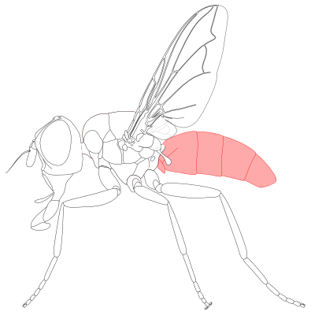
2. Abdominal syntergite 1+2: first two abdominal tergites fused togather (Fig. t12). (Adam Tofilski, CC BY-NC 4.0)
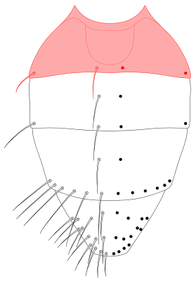
3. Abdominal tergite: one of dorsal sclerites of abdomen (fig. tside). See also: abdominal syntergite 1+2, abdominal tergite 3 , abdominal tergite 4 and abdominal tergite 5. (Adam Tofilski, CC BY-NC 4.0)
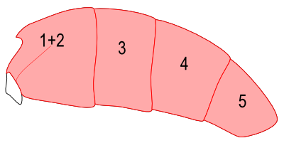
4. Abdominal tergite 3: one of abdominal tergites (Fig. t3) located between abdominal syntergite 1+2 and abdominal tergite 4. (Adam Tofilski, CC BY-NC 4.0)
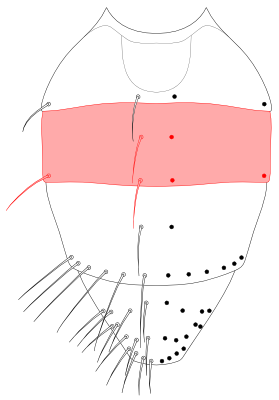
5. Abdominal tergite 4: one of abdominal tergites (Fig. t4) located between abdominal tergite 3 and abdominal tergite 5. (Adam Tofilski, CC BY-NC 4.0)
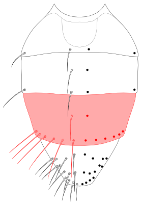
6. Abdominal tergite 5: one of abdominal tergites (Fig. t5) located behind abdominal tergite 4. (Adam Tofilski, CC BY-NC 4.0)
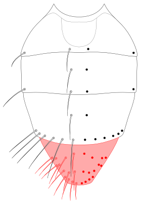
7. Acrostichal seta, (pl. acrostichal setae) - one of setae arranged longitudinally in two rows in the middle of scutum (Fig. ac). On both sides of acrostichal seatae there are dorsocentral setae. (Adam Tofilski, CC BY-NC 4.0)
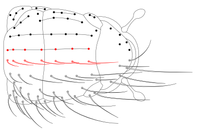
8. Anepimeral seta (pl. anepimeral setae): one of setae located on anepimeron (fig. anepms). (Adam Tofilski, CC BY-NC 4.0)
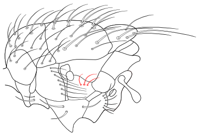
9. Anepimeron (pteropleuron): pleural sclerite of mesothorax located behind anepisternum (fig. anepm). (Adam Tofilski, CC BY-NC 4.0)
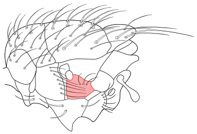
10. Anepisternum (mesopleuron): pleural sclerite of mesothorax located between anterior spiracle and anepimeron (fig. anepst). (Adam Tofilski, CC BY-NC 4.0)
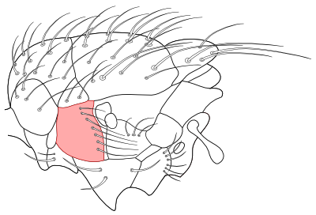
11. Antenna (pl. antennae): one of two appendages located on front part of head (fig. ant). (Adam Tofilski, CC BY-NC 4.0)
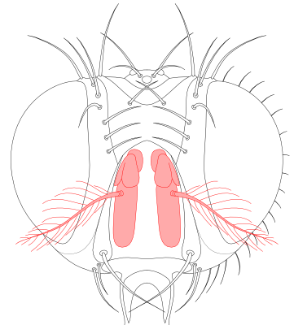
12. Anterodorsal apical spur: stout macrotrichium located anterodorsaly at the apex of tibia (fig. adspur). (Adam Tofilski, CC BY-NC 4.0)
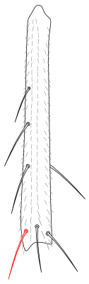
13. Apical scutellar setae: a pair of setae located at the apex of scutellum (Fig. apsctl). (Adam Tofilski, CC BY-NC 4.0)
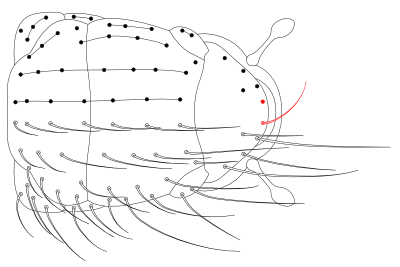
14. Apical spur: stout, usually curved macrotrichium, located at the apex of tibia (fig. spur). Usually there are three of them: anterodorsal apical spur, dorsal apical spur and posterodorsal apical spur. (Adam Tofilski, CC BY-NC 4.0)
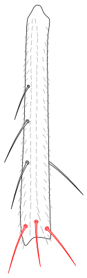
15. Appendix: short wing vein extending beyond wing vein fold (fig. app). (Adam Tofilski, CC BY-NC 4.0)
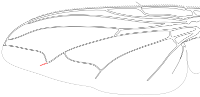
16. Arista (pl. aristae): part of antennae usually located dorsally in the basal half of the first flagellomere (Fig. arista). (Adam Tofilski, CC BY-NC 4.0)
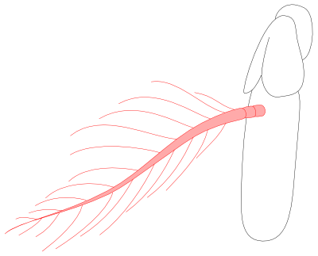
17. Aristomere: one of three segments of the arista (fig. ar). The first two aristomeres are usually short, the third aristomere is usually much longer. See aslo: first aristomere, second aristomere, third aristomere. (Adam Tofilski, CC BY-NC 4.0)
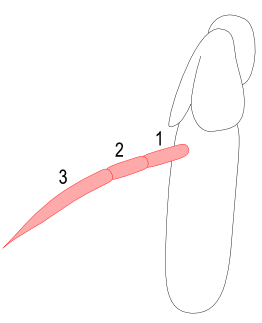
18. Basal scutellar setae: 1-2 pairs of setae located along the basal margin of scutellum (fig. bsctls). (Adam Tofilski, CC BY-NC 4.0)
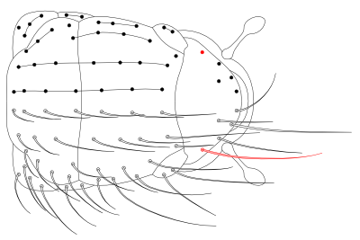
19. Basicosta: articulating sclerite located at the base of wing vein C (Fig. bc). (Adam Tofilski, CC BY-NC 4.0)
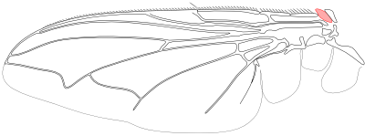
20. Calypter, (pl. calypteres): one of two lobes (lower calypter and upper calypter) located between hind margin of wing to thorax (Fig. calyp). (Adam Tofilski, CC BY-NC 4.0)
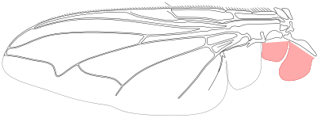
21. Cercus (pl. cerci): one of two parts of male postabdomen (fig. cerc, cercv). When the two cerci are fused they are called syncercus. (Adam Tofilski, CC BY-NC 4.0)
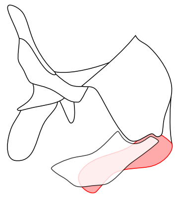
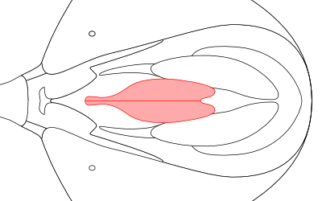
22. Costal spine: long seta on wing vein C at the junction with wing vein Sc (Fig. cs). (Adam Tofilski, CC BY-NC 4.0)
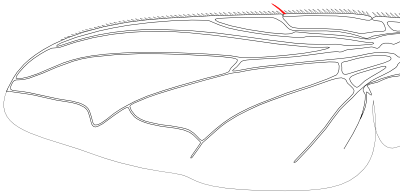
23. Coxa (pl. coxae): basal segment of leg between thorax and trochanter (fig. cx). (Adam Tofilski, CC BY-NC 4.0)
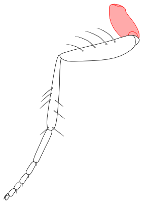
24. Crossvein dm-cu: wing vein between wing vein CuA1 and wing vein M (Fig. dmcu). (Adam Tofilski, CC BY-NC 4.0)
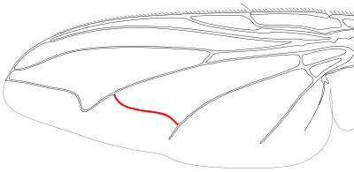
25. Crossvein r-m: wing vein between wing vein M and wing vein R4+5 (Fig. rm). (Adam Tofilski, CC BY-NC 4.0)
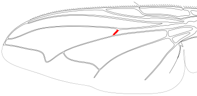
26. Discal seta (pl. discal setae): one of setae on abdominal tergites well away from their posterior edge (fig. dss). (Adam Tofilski, CC BY-NC 4.0)
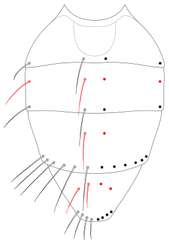
27. Dorsal apical spur: stout macrotrichium located dorsaly at the apex of tibia (fig. dspur). (Adam Tofilski, CC BY-NC 4.0)
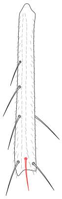
28. Dorsal eye width: width of one eye along line perpendicular to body axis in dorsal view (Fig. dew). (Adam Tofilski, CC BY-NC 4.0)
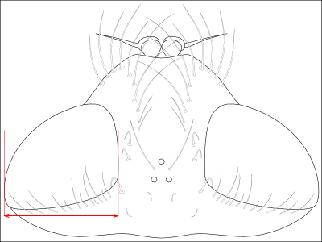
29. Dorsal frons width: distance between inner eyes margins in dorsal view (Fig. dfw). (Adam Tofilski, CC BY-NC 4.0)
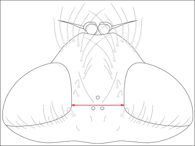
30. Dorsocentral seta, (pl. dorsocentral setae): one of setae arranged longitudinally on scutum between acrostichal setae and intraalar setae (Fig. dc). (Adam Tofilski, CC BY-NC 4.0)
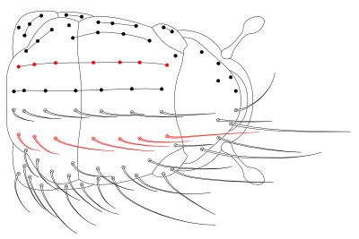
31. Eye - one of two compound eyes located on sides of head (Fig. eyes). (Adam Tofilski, CC BY-NC 4.0)
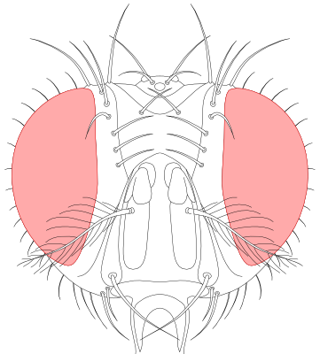
32. Face: sclerotized part of head which is delimited dorsally by the antennal sockets, ventrally by
oral margin and laterally by facial ridge (fig. fc). (Adam Tofilski, CC BY-NC 4.0)
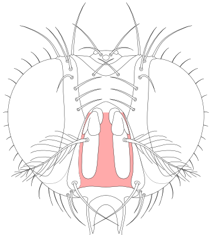
33. facial ridge: narrow sclerite which is located between parafacialia and face (Fig. fcrg). (Adam Tofilski, CC BY-NC 4.0)
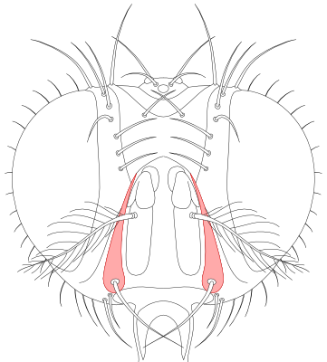
34. Femur (pl. femora): segment of leg, between trochanter and tibia (fig. fr). (Adam Tofilski, CC BY-NC 4.0)
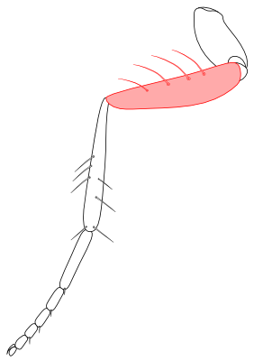
35. Fifth costal section: section of wing vein C between junction with wing vein R4+5 and junction with wing vein M (Fig. cs5). (Adam Tofilski, CC BY-NC 4.0)
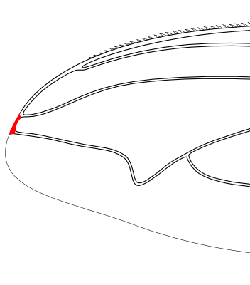
36. First aristomere: the first segment of arista (Fig. ar1). (Adam Tofilski, CC BY-NC 4.0)
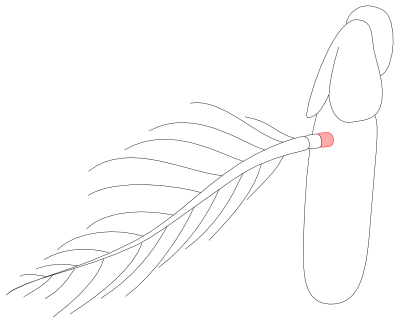
37. First costal section: section of wing vein C between basicosta and subcostal break (Fig. cs1). (Adam Tofilski, CC BY-NC 4.0)
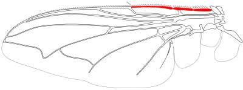
38. First flagellomere: third segment of antennae located behind pedicel (Fig. flgm). Also called: postpedicel. (Adam Tofilski, CC BY-NC 4.0)
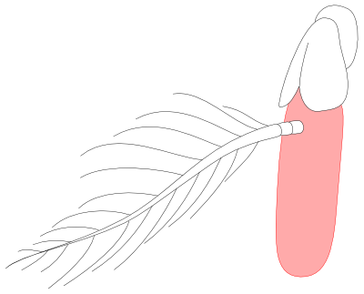
39. Fore coxa: coxa of fore leg (fig. cx1). (Adam Tofilski, CC BY-NC 4.0)
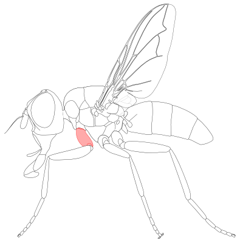
40. Fore tarsus: tarsus of fore leg (fig. tr1). (Adam Tofilski, CC BY-NC 4.0)
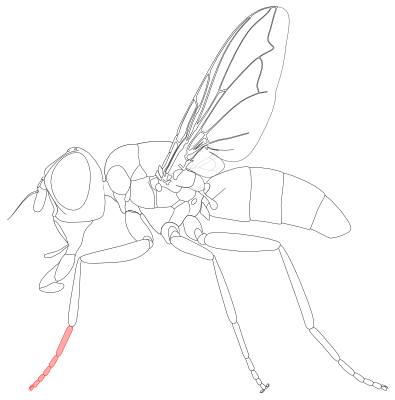
41. Fore tibia: tibia of fore leg (fig. tb1). (Adam Tofilski, CC BY-NC 4.0)
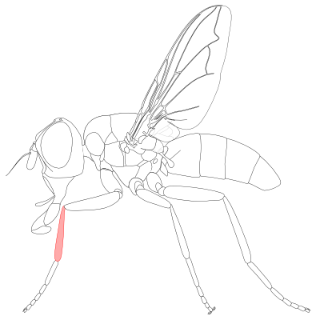
42. Forth costal section: section of wing vein C between junction with wing vein R2+3 and junction with wing vein R4+5 (Fig. cs4). (Adam Tofilski, CC BY-NC 4.0)
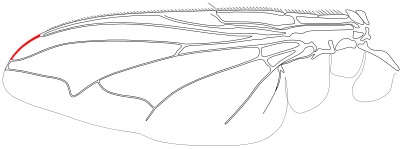
43. Frons: sclerotized part of head which is delimited dorsally by the vertex, ventrally by the antennal sockets or lunule and laterally by the compound eyes (fig. frons). The frons consist of fronto-orbital plates laterally and the frontal vitta medially; dorsally in the middle often with ocellar triangle. (Adam Tofilski, CC BY-NC 4.0)
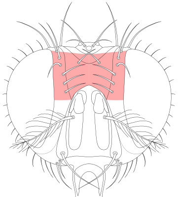
44. Frontal seta (pl. frontal setae): one of a row of setae on the inner edge of fronto-orbital plates (Fig. frs). In most species the lowest seta is above base of antennae but in some species the lowest seta can be located on parafacialia. (Adam Tofilski, CC BY-NC 4.0)
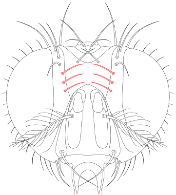
45. Frontal vitta: central area of frons, delimited laterally by fronto-orbital plates (fig. frvit). (Adam Tofilski, CC BY-NC 4.0)
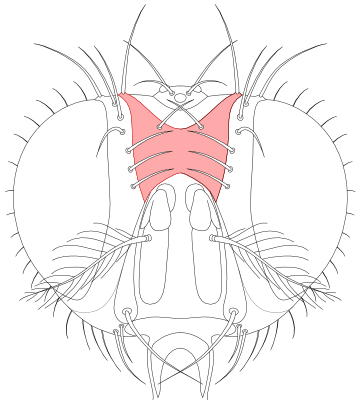
46. Fronto-orbital plate: lateral part of frons located between compound eyes and frontal vitta (Fig. frorb). (Adam Tofilski, CC BY-NC 4.0)
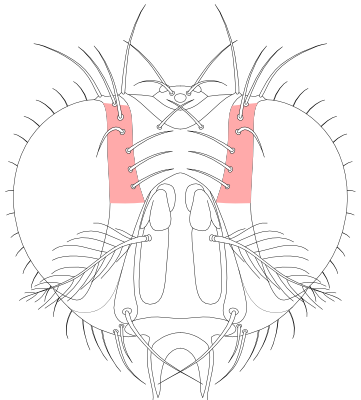
47. Gena: paired sclerite of head which is delimited dorsally by the compound eyes, ventrally by the oral margin, anteriorly by parafacialia and posteriorly by the postgena (Fig. gn). (Adam Tofilski, CC BY-NC 4.0)
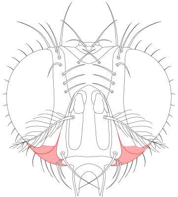
48. Genal dilation: well-sclerotized, usually hairy part of the gena just posterior of the vibrissal angle (Fig. gndil). (Adam Tofilski, CC BY-NC 4.0)
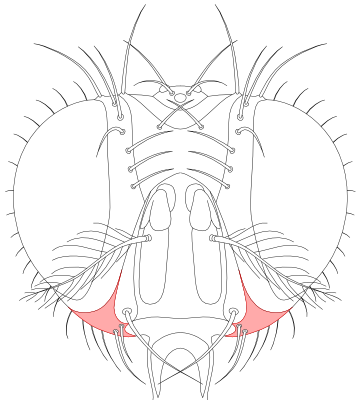
49. Head: main body part located in front of thorax (fig. head). (Adam Tofilski, CC BY-NC 4.0)
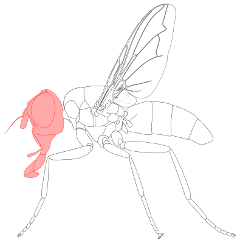
50. Hind coxa: coxa of hind leg (fig. cx3). (Adam Tofilski, CC BY-NC 4.0)
51. Hind tarsus: tarsus of hind leg (fig. tr3). (Adam Tofilski, CC BY-NC 4.0)
52. Hind tibia (pl. hind tibiae): tibia of hind leg (fig. tb3). (Adam Tofilski, CC BY-NC 4.0)
53. Inclinate: facing forward. Usually used to describe orientation of setae. See also: reclinate, incurved, outcurved. (Adam Tofilski, CC BY-NC 4.0)
54. Incurved: facing inward, converging. Usually used to describe orientation of setae. See also: inclinate, reclinate, outcurved. (Adam Tofilski, CC BY-NC 4.0)
55. Inner vertical seta: one of two long, inclinate or upright setae on the vertex (Fig. ivts). They are located usually somewhat medial to the continuation of the line formed by the compound eye and the fronto-orbital plate. In a few genera with a very small vertex, they are weak or hair-like. (Adam Tofilski, CC BY-NC 4.0)
56. Interfrontal seta (pl. interfrontal setae): one of two setae on upper part of frontal vitta (Fig. infrs). (Adam Tofilski, CC BY-NC 4.0)
57. Intraalar seta, (pl. intraalar setae): one of a row of setae on scutum, between dorsocentral setae and supraalar setae (Fig. ia). (Adam Tofilski, CC BY-NC 4.0)
58. Katepimeron (barrette): pleural sclerite of mesothorax located between anepimeron and meron (fig. kepm). (Adam Tofilski, CC BY-NC 4.0)
59. Katepisternal seta (pl. katepisternal setae): one of setae located at katepisternum (fig. kepsts). (Adam Tofilski, CC BY-NC 4.0)
60. Katepisternum (sternopleuron, preepisternum): pleural sclerite of mesothorax located between anepisternum and mid coxa (fig. kepst). (Adam Tofilski, CC BY-NC 4.0)
61. Labellum (pl. labella): most distal part of proboscis (fig. lbl). Ontogenetically the labellum
derives from the paired, united, two-segmented labial palpi. The labellum consists of two membranous, cushion-like lobes. (Adam Tofilski, CC BY-NC 4.0)
62. Lateral discal seta (pl. lateral discal setae): one of setae located in lateral part of abdominal tergites well away from their posterior edge (fig. ldss). (Adam Tofilski, CC BY-NC 4.0)
63. Lateral marginal seta (pl. lateral marginal setae): one of setae located in lateral part of abdominal tergites near to their posterior edge (Fig. lms). (Adam Tofilski, CC BY-NC 4.0)
64. Lateral scutellar setae: a pair of setae of the margin of the scutellum located between basal scutellar setae and subapical scutellar setae (fig. lsctls). (Adam Tofilski, CC BY-NC 4.0)
65. Leg: one of three appandages of thorax (fig. legs). (Adam Tofilski, CC BY-NC 4.0)
66. Lower calypter: proximal calypter located between furrow separating scutellum from postnotum and upper calypter (Fig. lcalyp). (Adam Tofilski, CC BY-NC 4.0)
67. Marginal seta (pl. marginal setae): one of setae near posterior sides of abdominal tergites (Fig. ms). (Adam Tofilski, CC BY-NC 4.0)
68. Medial discal seta (pl. medial discal setae): one of setae located in dorsal part of abdominal tergites well away from their posterior edge (Fig. mdss). (Adam Tofilski, CC BY-NC 4.0)
69. Medial marginal seta (pl. medial marginal setae): one of setae located in dorsal part of abdominal tergites near to their posterior edge (Fig. mms). (Adam Tofilski, CC BY-NC 4.0)
70. Mid coxa: coxa of mid leg (fig. cx2). (Adam Tofilski, CC BY-NC 4.0)
71. Mid tarsus: tarsus of mid leg (fig. tr2). (Adam Tofilski, CC BY-NC 4.0)
72. Mid tibia (pl. mid tibiae): tibia of mid leg (fig. tb2). (Adam Tofilski, CC BY-NC 4.0)
73. Middorsal depression: depression in anterior part of abdominal syntergite 1+2 (Fig. mdep). (Adam Tofilski, CC BY-NC 4.0)
74. Ocellar seta (pl. ocellar setae): one of two setae on ocellar triangle between the ocelli (Fig. ocs). (Adam Tofilski, CC BY-NC 4.0)
75. Ocellar triangle: sclerotized part of head located in upper part of fronst and vertex (Fig. octr). (Adam Tofilski, CC BY-NC 4.0)
76. Ocellus (pl. ocelli): one o three simple light sensitive organs located on vertex (fig. oc). (Adam Tofilski, CC BY-NC 4.0)
77. Oral cavity: opening on the ventral side of head surrounded by oral margin. When not in use proboscis can be hidden inside the cavity. (Adam Tofilski, CC BY-NC 4.0)
78. Oral margin: margin of oral cavity (fig. omar). (Adam Tofilski, CC BY-NC 4.0)
79. Outcurved: facing outward, diverging. Usually used to describe orientation of setae. See also: inclinate, reclinate, incurved. (Adam Tofilski, CC BY-NC 4.0)
80. Outer vertical seta (pl. outer vertical setae): one of a pair of outcurved setae on the vertex near the eyes (Fig. ovts). They are usually considerably shorter and weaker than the inner vertical setae, sometimes hair-like or missing altogether. (Adam Tofilski, CC BY-NC 4.0)
81. Palpus (pl. palpi): paired digiform appandage located in middle part of proboscis (fig. plp). (Adam Tofilski, CC BY-NC 4.0)
82. parafacialia: sclerotized part of head which is delimited dorsally by fronto-orbital plates, ventrally by gena (Fig. pafc). Medially it is bordered by facial ridge and laterally by compound eyes. (Adam Tofilski, CC BY-NC 4.0)
83. Pedicel: second segmen of antennae (Fig. ped). (Adam Tofilski, CC BY-NC 4.0)
84. Postabdomen: posterior part of abdomen behind abdominal segment 5 or abdominal segment 6 (fig. pabd). (Adam Tofilski, CC BY-NC 4.0)
85. Postangular vein: section of wing vein M distally from deflection point (Fig. posta). (Adam Tofilski, CC BY-NC 4.0)
86. Posterodorsal apical spur: stout macrotrichium located posteorodorsaly at the apex of tibia (fig. pdspur). (Adam Tofilski, CC BY-NC 4.0)
87. Posthumeral seta (pl. posthumeral setae): one of seta located behind postpronotal lobes (fig. ph). Sometimes they are abbreviated "ph". (Adam Tofilski, CC BY-NC 4.0)
88. Postocellar seta (pl. postocellar setae): one of two setae on the vertex just posterior of the ocellar triangle (Fig. pocs). (Adam Tofilski, CC BY-NC 4.0)
89. Postocular seta (pl. postocular setae): one to several rows of mostly short setae along the posterior rim of compound eyes (fig. pocls). (Adam Tofilski, CC BY-NC 4.0)
90. Postpronotal lobe: part of postpronotum which in dorsal view is visible at both side of thorax (Fig. pprn). (Adam Tofilski, CC BY-NC 4.0)
91. Postpronotal seta (pl. postpronotal setae): one of a group of setae located at postpronotal lobes (Fig. pprns). (Adam Tofilski, CC BY-NC 4.0)
92. Postsutural acrostichal seta, (pl. postsutural acrostichal setae) - one of setae arranged longitudinally in two rows in the middle of scutum behind transverse suture (Fig. postac). On both sides of acrostichal seatae there are dorsocentral setae. (Adam Tofilski, CC BY-NC 4.0)
93. Postsutural dorsocentral seta, (pl. postsutural dorsocentral setae) - one of setae arranged longitudinally in rows on scutum behind transverse suture between acrostichal setae and intraalar setae (Fig. postdc). (Adam Tofilski, CC BY-NC 4.0)
94. postsutural intraalar seta, (pl. postsutural intraalar setae) - one of a row of setae on scutum, behind transverse suture, between dorsocentral setae and supraalar setae (Fig. postia). (Adam Tofilski, CC BY-NC 4.0)
95. Prealar seta (pl. prealar setae): the anterior postsutural supraalar seta (fig. pra). (Adam Tofilski, CC BY-NC 4.0)
96. Prementum: sclerotized part of proboscis located in its distal part (fig. premnt). (Adam Tofilski, CC BY-NC 4.0)
97. Presutural acrostichal setae: acrostichal setae in front of transverse suture (fig. preac). (Adam Tofilski, CC BY-NC 4.0)
98. Presutural dorsocentral setae: dorsocentral setae in front of transverse suture (fig. predc). (Adam Tofilski, CC BY-NC 4.0)
99. Proboscis: mouthparts in a form of tubular sucking organ (fig. prob). (Adam Tofilski, CC BY-NC 4.0)
100. Proclinate orbital seta (pl. proclinate orbital setae): one of proclinate setae (mostly 2 pairs) on fronto-orbital plates between frontal setae and the eye rim (Fig. pcorbs). As a rule, proclinate orbital setae are present in females and are mostly absent in males of Tachinidae. There are however numerous genera or species where this does not apply. (Adam Tofilski, CC BY-NC 4.0)
101. Proepimeral seta (pl. proepimeral setae): one of setae located on proepimeron (fig. prepms). (Adam Tofilski, CC BY-NC 4.0)
102. Proepimeron: small prothoracic sclerite, posior part of the propleuron, anterobasally of the anterior spiracle (fig. prepm). (Adam Tofilski, CC BY-NC 4.0)
103. Proepisternum: small prothoracic sclerite, anior part of the propleuron anteriorly to the anterior spiracle (fig. prepst). (Adam Tofilski, CC BY-NC 4.0)
104. Propleuron (pl. propleura): prothoracic pleural sclerite, anteroventrally of the anterior spiracle, dorsally of the front coxa. It may be divided into a distal proepimeron and a proximal proepisternum (fig. prpl). (Adam Tofilski, CC BY-NC 4.0)
105. Prosternum: anteroventral sclerite of thorax located between head and front coxae (Fig. prosternum). (Adam Tofilski, CC BY-NC 4.0)
106. Reclinate: facing backward. Usually used to describe orientation of setae. See also: inclinate, incurved, outcurved. (Adam Tofilski, CC BY-NC 4.0)
107. Reclinate orbital seta (pl. reclinate orbital setae): one of a pair or a row of slightly reclinate setae in the upper part of fronto-orbital plates (Fig. rcorbs). Reclinate orbital setae can be distinguished from the topmost vertical setae by their thickness and somewhat offset position. (Adam Tofilski, CC BY-NC 4.0)
108. Scape: the first segment of antennae (Fig. scp). (Adam Tofilski, CC BY-NC 4.0)
109. Scutellum: posterior part of thorax, separated from the scutum by a deep suture (Fig. sctl). (Adam Tofilski, CC BY-NC 4.0)
110. Second aristomere: the second segment of arista (Fig. ar2). (Adam Tofilski, CC BY-NC 4.0)
111. Second costal section: section of wing vein C between subcostal break and junction with wing vein R1 (Fig. cs2). (Adam Tofilski, CC BY-NC 4.0)
112. Sixth costal section: distance along wing edge between end of wing vein M and wing tip which is defeined as point most distant from wing base (Fig. cs6). (Adam Tofilski, CC BY-NC 4.0)
113. Sternite: ventral plate of each abdominal segment, usually heavily sclerotized (fig. s). Usually 5 anterior sternites are visible from outside, other sternites can be highly modified and hidden. (Adam Tofilski, CC BY-NC 4.0)
114. Subapical scutellar setae: a pair of setae located on the margin of scutellum between apical scutellar setae and lateral scutellar setae (fig. sasctls). (Adam Tofilski, CC BY-NC 4.0)
115. Subscutellum: dorsal part of mediotergite located posteroventrally of scutellum (Fig. sbsctl). Called also: postscutellum. (Adam Tofilski, CC BY-NC 4.0)
116. Subvibrissal seta (pl. subvibrissal setae): one of a pair or a row of setae located along oral margin posteriorly to vibrissae (Fig. sbvbs). (Adam Tofilski, CC BY-NC 4.0)
117. Supraalar seta, (pl. supraalar setae): one of setae arranged longitudinally in rows on scutum laterally of the intraalar setae, medial to the base of wing (Fig. spal). (Adam Tofilski, CC BY-NC 4.0)
118. Surstylus (pl. surstyli): one of two lobes of male potabdomen (fig. sur, surv). Should be named gonostylus. (Adam Tofilski, CC BY-NC 4.0)
119. Tarsal claw: one of two claws located on the first tarsomere (fig. tsc). (Adam Tofilski, CC BY-NC 4.0)
120. Tarsomere: one of five segments of tarsus (fig. tss). (Adam Tofilski, CC BY-NC 4.0)
121. Tarsus (pl. tarsi): distal part of leg behind tibia (fig. ts). It is subdivided into 5 tarsomeres. (Adam Tofilski, CC BY-NC 4.0)
122. Tegula: articulating sclerite at the extreme base of wing vein C (Fig. teg). (Adam Tofilski, CC BY-NC 4.0)
123. Terminalia: terminal portion of the abdomen, called also postabdomen. (Adam Tofilski, CC BY-NC 4.0)
124. Third aristomere: the third segment of arista (Fig. ar3). (Adam Tofilski, CC BY-NC 4.0)
125. Third costal section: section of wing vein C between junction with wing vein R1 and junction with wing vein R2+3 (Fig. cs3). (Adam Tofilski, CC BY-NC 4.0)
126. Thorax: main body part between head and abdomen (fig. tho). (Adam Tofilski, CC BY-NC 4.0)
127. Tibia (pl. tibiae): segment of leg, between femur and tarsus (fig. tb). (Adam Tofilski, CC BY-NC 4.0)
128. Transverse suture - suture deviding scutum transversaly (Fig. suture). (Adam Tofilski, CC BY-NC 4.0)
129. Trochanter: segment of leg, between coxa and femur (fig. tr). (Adam Tofilski, CC BY-NC 4.0)
130. Upper calypter: distal calypter located between lower calytper and alula (Fig. ucalyp). (Adam Tofilski, CC BY-NC 4.0)
131. Vertex: upper part of head, separating frons and compound eyes from occiput (fig. vertex). (Adam Tofilski, CC BY-NC 4.0)
132. Vibrissa (pl. vibrissae): one of two, rarely more, proclinate or inclinate setae at the anteriormost corner of the vibrissal angle (Fig. vb) (Adam Tofilski, CC BY-NC 4.0)
133. Vibrissal angle: ventral angular prominence of facial ridge (Fig. vbang). (Adam Tofilski, CC BY-NC 4.0)
134. Wing: one of two membranous expanisions of thorax (fig. wing). (Adam Tofilski, CC BY-NC 4.0)
135. Wing cell r4+5: one of wing cells located posteriorly to the distal part of wing cell r2+3 (Fig. cr45). (Adam Tofilski, CC BY-NC 4.0)
136. Wing vein A1+CuA2: one of wing veins located between wing vein CuA1 and wing vein A2 (Fig. a1cua2). (Adam Tofilski, CC BY-NC 4.0)
137. Wing vein C: one of wing veins located allong anterior wing maging (Fig. c). (Adam Tofilski, CC BY-NC 4.0)
138. Wing vein CuA1: one of wing veins located between wing vein M and wing vein A1+CuA2 (Fig. cua1). (Adam Tofilski, CC BY-NC 4.0)
139. Wing vein M: one of wing veins located between wing vein R4+5 and wing vein CuA1 (Fig. veinm). (Adam Tofilski, CC BY-NC 4.0)
140. Wing vein R1: one of wing veins located between wing vein Sc and wing vein R2+3 (Fig. r1). (Adam Tofilski, CC BY-NC 4.0)
141. Wing vein R2+3: one of wing veins located between wing vein R1 and wing vein R4+5 (Fig. r23). (Adam Tofilski, CC BY-NC 4.0)
142. Wing vein R4+5: one of wing veins located between wing vein R2+3 and wing vein M (Fig. r45). (Adam Tofilski, CC BY-NC 4.0)
1. Acemya acuticornis (Meigen) [Acemyia]
Distribution: Europe to Sweden, Finland; NS, HE, RP, BW, BY, NB / A, CH.
Habitat: Dry slopes, dry meadows.
Flying time: 2 generations: Early May to End June and Mid July to Early September.
Collecting: Caught in grass or from flowers; not rare.
Host: Numerous species of Acrididae (Orthoptera).
(Fig. 39)
2. Acemya rufitibia (von Roser) [Acemyia]
Distribution: Europe to Brandenburg; RP, BW, BY, NB / A, CH.
Habitat: Dry slopes, dry meadows.
Flying time: End May to Mid July, 1 generation.
Collecting: In grass or on flowers; rarer than Acemya acuticornis.
Host: Chorthippus mollis Charp, C. spec, Euchorthippus pulvinatus F.-W. (Acrididae).
3. Actia crassicornis (Meigen)
Distribution: Europe to Scandinavia; NS, BW, BY, NB / A, CH.
Habitat: Prefers dry, warm areas.
Flying time: Early May to Early September (especially July/August).
Collecting: Locally common (commoner in Southern Europe).
Host: Depressaria spp. (Oecophoridae); very rare also from Tortricidae.
4. Actia dubitata Herting
Distribution: Found scattered through Europe; HE, RP, BW, BY, NB / A, CH.
Habitat: Dry, warm forest edges.
Flying time: Mid May to End September (especially July/August).
Collecting: In Malaise traps not rare.
Host: Depressaria spp. (Oecophoridae).
5. Actia infantula (Zetterstedt)
Distribution: Europe to Central Sweden; NW, RP, BW / A, CH.
Habitat: Dry, warm forest edges.
Flying time: Early June to End September.
Collecting: In Malaise traps not rare.
Host: Monopis rusticella Cl. (Tineidae).
6. Actia lamia (Meigen) [frontalis (Macquart)]
Distribution: Europe to Scandinavia (rare in Southern Europe); NS, NW, HE, RP, BW, BY, NB / A, CH.
Habitat: Forest edges, meadows.
Flying time: Early April to End September (from May to August without recognisable peak), at least 2 generations.
Collecting: In Malaise traps very frequent.
Host: Epiblema scutulana Denis & Schiff. (Tortricidae).
(Fig. 96)
7. Actia maksymovi Mesnil
Distribution: Alps, higher highlands, Scandinavia; BW (Schwarzwald) / A, CH.
Habitat: Conniferous woodland.
Flying time: Mid May to Early October, at least 2 generations.
Collecting: In Malaise traps not rare.
Host: Tortricidae (predominantly on Larix, however also on Abies and Picea).
8. Actia nigroscutellata Lundbeck
Distribution: Northern Europe and cool areas of Central Europe; BW.
Flying time: Early July to End August.
Collecting: Very rare.
Host: Rhopobota ustomaculana Curt, Cydia servillana Dup, Olethreutes spec. (Tortricidae), Elachista megerleella Hueb. (Elachistidae).
9. Actia nudibasis Stein
Distribution: Europe to Scandinavia; SH, NS, BW, NB / CH.
Habitat: Pine forest.
Flying time: 2 generations: Early May to Mid June and Mid July to End August.
Collecting: Regularly and most commonly reared from the host; in open areas rare.
Host: Microlepidoptera on Pinus: Rhyacionia buoliana Schiff. and Petrova resinella L. (Tortricidae), rarer Dioryctria mutatella Fuchs, D. splendidella H.-S. (Pyralidae) also Exoteleia dodecella L. (Gelechiidae).
(Fig. 131)
10. Actia pilipennis (Fallén)
Distribution: Europe to Scandinavia; SH, NS, NW, HE, RP, BW, BY, NB / A, CH.
Habitat: Deciduous woodland, bushes.
Flying time: Early May to End September, at least 2 generations.
Collecting: On foliage or in Malaise traps; not rare.
Host: Numerous Tortricidae (especially Tortrix), rarer from a few other Microlepidoptera.
11. Admontia blanda (Fallén) [Trichoparia]
Distribution: Europe to Scotland and Northern Scandinavia; NS, NW, BW, BY, NB / A, CH.
Flying time: Early June to End October, especially August, probably several generations.
Collecting: Altogether not rare, normally however only individuals.
Host: Nephrotoma pratensis L, Tipula nubeculosa Meig. (Tipulidae).
12. Admontia cepelaki (Mesnil) [Trichoparia]
Distribution: Pyrenees, Alps; A (Tirol), CH (Graubünden).
Habitat: High Alpine grasslands and scree from 1800 - 3000 m.
Flying time: Early July to Mid August, 1 generation.
Collecting: On rocks or on flowers; rare.
Host: unknown.
13. Admontia continuans Strobl
Distribution: A (Admont), CH (Delémont).
Flying time: Mid July to End August, 1 generation.
Collecting: Very rare.
Host: unknown.
14. Admontia grandicornis (Zetterstedt) [Trichoparia]
Distribution: Temperate Europe to Scotland and Northern Scandinavia; NW, BW, BY, NB / A, CH.
Habitat: In Central Europe from sea-level to approximately 1200 m.
Flying time: 1 generation from Mid May to Mid July, a single specimen also in August (partial 2nd generation?).
Collecting: Not rare.
Host: Tipula spec. (Tipulidae).
15. Admontia maculisquama (Zetterstedt) [Trichoparia]
Distribution: Europe to Scotland and Sweden; NW, HE, BW, NB / A, CH.
Habitat: In Central Europe from sea-level to approximately 1200 m.
Flying time: End May to Mid August, probably only 1 generation.
Collecting: Usually in Malaise traps; not rare.
Host: Tipula hortulana Meig, T. lunata L. (Tipulidae).
(Fig. 9)
16. Admontia podomyia (Brauer & Bergenstamm) [Trichoparia]
Distribution: Alps, Schwarzwald; BW, BY / A, CH.
Habitat: On meadows in the forested zone from 900 - 1800 m.
Flying time: Mid June to Mid September, especially August, probably 1 generation.
Collecting: Not rare.
Host: unknown.
17. Admontia seria (Meigen) [Trichoparia]
Distribution: Temperate Europe to England and Sweden; RP, BW, BY, NB / A, CH.
Habitat: From sea-level to approximately 500 m.
Flying time: Early June to Mid October.
Collecting: Very rarely caught, most often reared from the host.
Host: Ctenophora bimaculata L, C. atrata L, C. pectinicornis L, Tipula irrorata Macq, T. flavolineata Meig. (Tipulidae).
18. Allophorocera lapponica Wood
Distribution: Northern Finland, Northern Sweden.
Flying time: July.
Collecting: Very rare.
Host: unknown.
19. Allophorocera pachystyla (Macquart)
Distribution: Alps; A, CH.
Habitat: Scree and High Alpine grasslands from 1700 - 3000 m.
Flying time: End June to Mid August, 1 generation.
Collecting: Very rare.
Host: unknown.
20. Alsomyia capillata (Rondani)
Distribution: Southern Europe to Southern Germany; BW (Kaiserstuhl), BY (Dachau) / A, CH (Jura).
Habitat: Warm, dry areas.
Flying time: Mid June to Mid August, probably 1 generation.
Collecting: Very rare.
Host: Zygaena erythrus Hueb, Z. graslini Led, Z. purpuralis Bruenn, Z. transalpina Esp. (Zygaenidae).
21. Amelibaea tultschensis (Brauer & Bergenstamm) [Phebellia]
Distribution: Southern Alps to the Wallis, Slovakia, Hungary.
Habitat: High Alpine grasslands in warmer situations, from about 1800 - 2000 m.
Flying time: Early July to End July, 1 generation.
Collecting: Usually on flowers; very rare.
Host: Ocnogyna parasita Hueb. (Arctiidae).
22. Ancistrophora mikii Schiner [miki]
Distribution: Central Alps; CH (Engadin, Berner Oberland).
Habitat: High places above the tree-line.
Flying time: Early July to Mid August, 1 generation.
Collecting: On rocks and rubble, locally common.
Host: unknown.
(Fig. 30)
23. Angiorhina fulvicornis (Zetterstedt) [Myiophasia]
Distribution: Northern Sweden, St. Petersburg.
Collecting: Very rare.
Host: unknown.
24. Angiorhina puncticeps (Zetterstedt) [Myiophasia, asiatica (Herting)]
Distribution: Sweden.
Collecting: Very rare.
Host: unknown.
25. Anthomyiopsis nigrisquamata (Zetterstedt)
Distribution: Found scattered through Europe to Northern Scandinavia; BW, BY / A, CH.
Flying time: Mid June to End August.
Collecting: Very rare (occurs earlier in Northern Europe).
Host: Phyllodecta vitellinae L, possibly also Colaspidema atra Oliv. (Chrysomelidae).
(Fig. 106)
26. Anthomyiopsis plagioderae Mesnil
Distribution: Southern Europe, individuals also in Central Europe; NW (Köln, Duisburg), BW.
Flying time: June (so far as is known).
Collecting: In open areas very rare, most often reared from the host.
Host: Plagiodera versicolora Laich, only once from Phyllodecta vitellinae L. (on Salix) (Chrysomelidae).
27. Aphria latifrons Villeneuve
Distribution: Southern Europe to Eastern France, the Wallis.
Habitat: Warm mountain valleys.
Flying time: End May to Mid September (Southern Europe).
Collecting: Very rare.
Host: unknown.
28. Aphria longilingua Rondani
Distribution: Europe to Northern Germany; NS, NW, NB.
Habitat: Dry, warm areas.
Flying time: Early June to End August, 1 generation.
Collecting: In Central Europe very rare (commoner in South European mountains).
Host: unknown.
(Fig. 143)
29. Aphria longirostris (Meigen)
Distribution: Europe to Scandinavia; HE, BY, NB / CH.
Habitat: Dry, warm areas.
Flying time: Mid May to Mid September.
Collecting: Rare (commoner in South European mountains).
Host: Nephopteryx hostilis Steph, N. rhenella Zinck. (Pyralidae).
(Fig. 142)
30. Aphria xyphias Pandellé
Distribution: Southern Europe; A (Hainburg).
Flying time: Early June to Mid August.
Collecting: Very rare.
Host: unknown.
31. Aplomya confinis (Fallén) [Aplomyia]
Distribution: Europe to Scandinavia; SH, NS, NW, HE, RP, BW, BY, NB / A, CH.
Habitat: Scrubby dry slopes, warm, dry forest edges, dry meadows.
Flying time: Early May to Early October, several generations.
Collecting: On flowers or foliage; in warmer Central Europe (and in Southern Europe) frequent, in the North rare.
Host: Specific parasitoid of Lycaenidae.
32. Appendicia truncata (Zetterstedt) [Ernestia]
Distribution: Northern Central Europe and Northern Europe; SH, NS, NW, NB.
Habitat: Grassy edges of pine forest.
Flying time: Early May to Mid June, 1 generation.
Collecting: In grassy and herbaceous vegetation; locally common.
Host: Cerapteryx graminis L. (Noctuidae).
33. Athrycia curvinervis (Zetterstedt)
Distribution: Temperate Europe to Scandinavia; NS, NW, HE, RP, BW, BY, NB / A, CH.
Flying time: Early July to Mid September (single specimens from Early June), possibly only 1 generation.
Collecting: Locally common.
Host: Mamestra spp, once also from Euplexia lucipara L. (Noctuidae).
34. Athrycia impressa (Wulp)
Distribution: Europe to Scandinavia; NS, NW, BY, NB / A.
Flying time: Mid June to Mid August (in Southern Europe from End April to Early September).
Collecting: Rare (commoner in Southern Europe).
Host: Anarta myrtilli L, Leucania evidens Hueb. (Noctuidae); Rhyparia purpurata L. (Arctiidae).
(Fig. 123)
35. Athrycia trepida (Meigen)
Distribution: Europe to Scandinavia; SH, NS, NW, HE, RP, BW, BY, NB / A, CH.
Habitat: Forest edges, meadows.
Flying time: End April to Mid July.
Collecting: On flowers or foliage; frequent.
Host: Various Noctuidae (especially Orthosia spp.).
(Fig. 135)
36. Atylomyia loewi Brauer
Distribution: Southern Europe to Brandenburg; NB (Berlin, Frankfurt/Oder) / A (Hainburg, Neusiedl).
Habitat: Dry, warm areas.
Flying time: End May to Mid August, probably 2 generations.
Collecting: Caught from flowers or low vegetation; in Southern Europe frequent, in Central Europe very rare.
Host: unknown.
37. Atylostoma tricolor (Mik)
Distribution: Few finds in Europe to Belgium; A (Hainburg a. D, Graz).
Flying time: End June to Early August.
Collecting: Very rare.
Host: Eurrhypara hortulata L. (Pyralidae).
38. Bactromyia aurulenta (Meigen)
Distribution: Europe to Sweden; SH, NS, NW, HE, RP, BW, BY, NB / A.
Habitat: Bushes, deciduous forest edges.
Flying time: 2 generations: End April to End June and (more numerously) Early July to End September.
Collecting: Usually on foliage; not rare.
Host: Various Lepidoptera, mainly Hyponomeuta spp. (Hyponomeutidae), a few Geometridae, Bena fagana F. (Noctuidae) and Thecla quercus L. (Lycaenidae).
39. Baumhaueria goniaeformis (Meigen)
Distribution: Europe to Southern Sweden; NW (Krefeld-Uerdingen), HE (Frankfurt), NB (Berlin, Chemnitz, Genthin).
Flying time: End April to Early June, 1 generation.
Collecting: Visits flowers on Euphorbia; very rare, from the German-speaking areas only findings before 1924.
Host: Predominantly Lasiocampidae (Eriogaster lanestris L, E. philippsi Bart, Malacosoma neustria L. and Lasiocampa trifolii Esp.), however a few reports from Arctiidae, Noctuidae, Lymantriidae and Sphingidae.
40. Belida angelicae (Meigen) [Aporotachina]
Distribution: Europe to England and Lapland; NS, BW, BY, NB / A, CH.
Habitat: Warmer forest edges, bushes.
Flying time: Mid June to Early September, probably 1 generation.
Collecting: Visits flowers; in warmer Central Europe (Oberrhein) locally common.
Host: Arge berberidis Klug, rarer A. nigripes Retz. and A. sorbi Schedl (Argidae).
41. Belida latifrons (Jacentkovsky) [Aporotachina]
Distribution: Eastern Europe (Poland, Czech Republic); Not known from the German-speaking regions.
Flying time: June/July.
Collecting: Very rare.
Host: unknown.
42. Bessa parallela (Meigen) [fugax (Rondani)]
Distribution: Europe to Southern England and Southern Sweden; NS, NW, HE, BW, BY, NB / A, CH.
Habitat: Hedges, bushes, orchards, thin deciduous woodland.
Flying time: Early May to Mid September, several generations.
Collecting: Doesn't normally visit flowers; in open areas not rare, most often reared from the host.
Host: Numerous Microlepidoptera, especially Hyponomeutidae, Tortricidae and Pyralidae, rare a few Macrolepidoptera.
43. Bessa selecta (Meigen)
Distribution: Europe to Central England, Central Sweden, Finland; SH, NS, NW, HE, RP, BW, BY, NB / A, CH.
Habitat: Hedges, bushes, orchards, thin deciduous woodland.
Flying time: Mid May to Early October, several generations.
Collecting: Occasionally visits flowers; in open areas not rare, most often reared from the host.
Host: Numerous Tenthredinidae, rare also from Diprion polytomus Hart. (Diprionidae) and Argidae.
(Fig. 54)
44. Besseria anthophila (Loew)
Distribution: Alps, Pyrenees, St. Petersburg, Finland; BY (München, Mittenwald) / A, CH.
Habitat: Meadows to 1800 m.
Flying time: Mid June to Early August, 1 generation.
Collecting: Caught from low Composites.
Host: unknown.
(Fig. 141)
45. Besseria dimidiata (Zetterstedt) [bicolor (Perris)]
Distribution: Southern Europe, individuals also in Central Europe; NB (Brandenburg) / A (Wein ).
Habitat: Prefers sandy areas.
Flying time: Mid June to Mid August.
Collecting: Very rare.
Host: Menaccarus arenicola Scholtz (Pentatomidae).
46. Besseria lateritia (Meigen)
Distribution: Southern Europe; A (Burgenland, Kärnten).
Habitat: Dry meadows.
Flying time: Early May to Early August.
Collecting: Visits flowers; very rare (not rare in Southern Europe).
Host: Psacasta exanthematica Scop. (Pentatomidae).
47. Besseria melanura (Meigen)
Distribution: Found scattered through Europe to Southern Sweden, St. Petersburg; BY (Bamberg), NB.
Habitat: Dry, warm, open countryside.
Flying time: End June to Mid July.
Collecting: Very rare.
Host: unknown.
(Fig. 102)
48. Besseria reflexa (Robineau-Desvoidy) [appendiculata (Perris)]
Distribution: Southern Europe and warmer parts of Central Europe; BW (Kaiserstuhl, Stromberg, Mühlacker) / A (Linzer Becken).
Habitat: Dry meadows.
Flying time: End May to Early August.
Collecting: Caught from flowers and in grass; very rare.
Host: unknown.
49. Billaea adelpha (Loew) [subrotundata (Rondani)]
Distribution: Southern Europe to the Wallis, the Tessin; A (the Vienna baisin).
Habitat: Dry, warm areas.
Flying time: Mid June to End August, 1 generation.
Collecting: Visits flowers; rare (commoner in Southern Europe).
Host: Aromia moschata L, Lamia textor L, Prionus coriarius L, Tetropium fuscum F. (Cerambycidae); Capnodis tenebrionis L. (Buprestidae).
50. Billaea fortis (Rondani)
Distribution: Southern Europe to the Tessin.
Flying time: End July to Mid October.
Collecting: Rare.
Host: unknown.
51. Billaea irrorata (Meigen)
Distribution: Europe to Scandinavia; SH, NS, NW, HE, BW, BY, NB / A, CH.
Habitat: Bushes, forest edges.
Flying time: Mid June to Mid August, 1 generation.
Collecting: In open areas very rare, however usually frequently reared from the main host.
Host: Saperda populnea L, rare also Oberea spp. (Cerambycidae).
52. Billaea pectinata (Meigen)
Distribution: Southern Europe and warmer parts of Central Europe; BW, BY / A, CH.
Flying time: End June to Early September, 1 generation.
Collecting: Locally common.
Host: Cetonia aurata L, Potosia cuprea L, Amphimallon solstitialis L. (Scarabaeidae), Prionus coriarius L. (Cerambycidae).
53. Billaea steini (Brauer and Bergenstamm)
Distribution: Sweden (Gotland), Hungary.
Flying time: July (so far as is known).
Collecting: Very rare.
Host: unknown.
54. Billaea triangulifera (Zetterstedt)
Distribution: Europe to Scandinavia (in Southern Europe only in mountains); NW, HE, BW, BY, NB / A, CH.
Habitat: Prefers cool, damp areas (highlands).
Flying time: 2 generations: Mid May to Mid June (only single specimens) and Early July to End September (numerously).
Collecting: Visits flowers; frequent.
Host: Cerambycidae (Tetropium, Stenostola, Acanthocinus, Leiopus, Oplosia, Morimus, Pyrrhidium, Rhagium, Saperda, Saphanus, Xylotrechus).
(Fig. 160, 168, 46)
55. Bithia acanthophora (Rondani)
Distribution: Southern Europe, individuals also in Central Europe; RP (Schloßböckelheim), BY (Taubertal).
Flying time: Early June to End August.
Collecting: Very rare.
Host: unknown.
56. Bithia demotica (Egger)
Distribution: Southern Europe to the Wallis; A (Niederösterreich, Burgenland).
Flying time: Early June to Early September.
Collecting: Very rare (commoner in South European mountains).
Host: unknown.
(Fig. 267)
57. Bithia geniculata (Zetterstedt) [Rhinotachina]
Distribution: Northern Central Europe to Scandinavia; NB (Brandenburg).
Habitat: Sandy areas.
Flying time: June and End August to Early October.
Collecting: Rare.
Host: Eucosma messingiana Fisch. (Tortricidae).
58. Bithia glirina (Rondani) [Rhinotachina]
Distribution: Southern Europe, individuals also in Central Europe; BW, BY, NB / A.
Habitat: Dry, warm areas.
Flying time: Mid June to Early August, 1 generation.
Collecting: Very rare.
Host: Chamaesphecia spp. (Sesiidae).
59. Bithia immaculata (Herting)
Distribution: Southern Europe to Slovakia; in the region still no proof.
Flying time: Early June to Mid July.
Collecting: In Southern Europe not rare.
Host: unknown.
(Fig. 203)
60. Bithia jacentkovskyi (Villeneuve)
Distribution: Southern Europe, individuals also in Central Europe; RP (Boppard) / A (Burgenland).
Flying time: Early July to Mid September.
Collecting: Very rare.
Host: Euzophera cinerosella Zell. (Pyralidae).
61. Bithia modesta (Meigen) [Rhinotachina]
Distribution: Southern Europe to the Wallis, also reported from Southern England; in the region still no proof.
Flying time: Mid May to End July, individuals also August/September (Southern Europe).
Collecting: Visits flowers; in Southern Europe frequent.
Host: Bembecia spp. (Sesiidae).
(Fig. 204, 268)
62. Bithia spreta (Meigen)
Distribution: Europe to Southern Sweden; NW, HE, RP, BW, BY, NB / A, CH.
Habitat: Meadows, dry, warm forest edges.
Flying time: End June to End September (especially August), 1 generation.
Collecting: Visits flowers; in warmer Central Europe frequent, in the North rare.
Host: Agapeta zoegana L. (Cochylidae).
63. Blepharipa pratensis (Meigen) [Sturmia, scutellata (Robineau-Desvoidy)]
Distribution: Europe to Finland; SH, NW, HE, BW, BY, NB / A.
Habitat: Warmer, deciduous woodland, Pine forest.
Flying time: End April to End July (especially Mid May to Mid June), 1 generation.
Collecting: On foliage; frequent where 'Gypsy Moth' (Lymantria dispar) are massed, otherwise (especially in the North) rather rare.
Host: Lymantria dispar L. (Lymantriidae) and Dendrolimus pini L. (Lasiocampidae), individual reports from a few other Macrolepidoptera.
64. Blepharipa schineri (Mesnil) [Sturmia]
Distribution: Europe to Brandenburg; BW, NB / A, CH.
Habitat: Warm deciduous woodland.
Flying time: Mid April to Early July (especially May), 1 generation (a maximum of approximately 3 weeks earlier than the previous species).
Collecting: On foliage; much rarer than the previous species.
Host: Lymantria dispar L. (Lymantriidae), also reported singly from some Notodontidae, Lasiocampidae and Endromididae.
65. Blepharomyia angustifrons Herting [pagana (Meigen) in Herting (1960)]
Distribution: Temperate Europe to Sweden; NW (Dorsten), RP (Mainz), BY (Amberg), NB (Berlin) / CH (Jura).
Flying time: Early May to End May, 1 generation.
Collecting: Rare.
Host: Single records from Panolis flammea Denis & Schiff. (Noctuidae).
66. Blepharomyia pagana (Meigen) [amplicornis (Zetterstedt)]
Distribution: Temperate Europe to Scandinavia; NS, NW, HE, RP, BW, BY, NB / A, CH.
Habitat: Deciduous woodland.
Flying time: Mid April to Mid June (in mountains to Mid July), 1 generation.
Collecting: In Malaise traps or on foliage; not rare.
Host: Deciduous woodland dwelling Geometridae, very rare also a few Noctuidae and Notodontidae.
67. Blepharomyia piliceps (Zetterstedt)
Distribution: Temperate Europe to Scandinavia; NS, NW, BY, NB / A, CH.
Habitat: Prefers cooler places (Northern Europe, mountains).
Flying time: Early April to Mid May (in mountains to Early July), 1 generation.
Collecting: In open areas very rare; most often reared from the host.
Host: Various Geometridae (especially Lygris populata L.); Single records also from one Noctuidae (Lithomoia solidaginis Hueb.).
68. Blondelia inclusa (Hartig)
Distribution: Europe to Sweden; NS, RP, BW, BY, NB / A.
Habitat: Pine forest.
Flying time: Mid May to Mid September, probably 2 generations.
Collecting: In open areas very rarely found, but regularly reared from the host.
Host: Diprion spp, Microdiprion pallipes Fall, Neodiprion sertifer Geoffr. (Diprionidae).
69. Blondelia nigripes (Fallén)
Distribution: Europe to Northern Scandinavia; SH, NS, NW, HE, RP, BW, BY, NB / A, CH.
Habitat: Bushes, hedges, deciduous woodland, orchards, meadows.
Flying time: Mid April to End October, especially May and (very numerous) August, several generations.
Collecting: On flowers or foliage; frequent, in warmer areas sometimes very frequent.
Host: Very polyphagous from numerous Lepidoptera (preferably unhairy caterpillars) and also Tenthredinidae.
70. Blondelia piniariae (Hartig)
Distribution: Europe to Sweden; NS, RP, BW, NB.
Habitat: Pine forest.
Flying time: End June to Mid August, 1 generation.
Collecting: Only specimens extracted from the host could have been assigned to this species until now, courtesy of Herting (1960).
Host: Bupalus piniarius L. (Geometridae).
71. Bothria frontosa (Meigen)
Distribution: Europe to Belgium, Southern Sweden; NW (Blankenstein), BW (Oberrhein) / A (Burgenland).
Habitat: Dry meadows or bushes in warm areas.
Flying time: Mid March to Mid May, 1 generation.
Collecting: Rare.
Host: Noctua comes Hueb, Mesogona acetosellae Denis & Schiff. (Noctuidae).
72. Bothria subalpina Villeneuve
Distribution: Europe to Scandinavia; NW, HE, BW, NB / A, CH.
Flying time: Early April to End May, 1 generation.
Collecting: Rare.
Host: Cosmia trapezina L. (Noctuidae).
73. Brachicheta strigata (Meigen) [Brachychaeta]
Distribution: Europe to Scandinavia; NS, NW, HE, RP, BW, BY, NB / A, CH.
Habitat: Dry meadows.
Flying time: End March to End May, 1 generation.
Collecting: Caught in grass; not rare.
Host: unknown.
74. Brullaea ocypteroidea Robineau-Desvoidy
Distribution: Europe to Brandenburg; HE, RP, BW, BY, NB / A.
Habitat: Dry meadows, thin forest edges.
Flying time: Mid June to Early September. (especially July), 1 generation.
Collecting: Visits flowers; in warmer Central Europe locally common.
Host: unknown.
75. Buquetia musca Robineau-Desvoidy
Distribution: Europe to Northern Poland, St. Petersburg; NS, HE, RP, BW, BY, NB / A.
Habitat: Prefers warmer areas.
Flying time: Mid June to Mid September. (in Southern Europe 2 generations).
Collecting: In open areas in Central Europe very rare (commoner in Southern Europe), regularly reared from the host.
Host: Papilio machaon L. (Papilionidae).
76. Cadurciella tritaeniata (Rondani)
Distribution: Europe to Scandinavia; SH, BW, NB / A, CH.
Habitat: Scrubby or open countryside.
Flying time: End May to End July, 1 generation.
Collecting: Rare (commoner in Southern Europe).
Host: Callophrys rubi L. (Lycaenidae).
77. Campylocheta fuscinervis (Stein) [Campylochaeta]
Distribution: Europe to Brandenburg, Northern Poland; HE, RP, BW, BY, NB / A.
Habitat: Meadows.
Flying time: Early April to Mid May, 1 generation.
Collecting: Rare.
Host: Reported from Thyatira batis L. (Thyatiridae).
78. Campylocheta inepta (Meigen) [Campylochaeta]
Distribution: Europe to Scandinavia; SH, NS, NW, HE, RP, BW, BY, NB / A, CH.
Habitat: Areas of heath, bushes, thin forest edges.
Flying time: Mid May to End August (especially June/July), probably only 1 generation (in Southern Europe at least 2 generations from March to November).
Collecting: Locally frequent.
Host: Numerous Geometridae, however also a few Noctuidae or individuals from other Macrolepidoptera.
79. Campylocheta latigena Mesnil [Campylochaeta]
Distribution: Southern France; A (Burgenland).
Flying time: April/May.
Collecting: Very rare.
Host: unknown.
80. Campylocheta praecox (Meigen) [Campylochaeta]
Distribution: Temperate Europe to Scandinavia; NS, NW, HE, BW, NB / A, CH.
Habitat: Deciduous woodland.
Flying time: End March to End May (especially April), 1 generation.
Collecting: On tree-trunks; not rare.
Host: Colotois pennaria L, Crocallis elinguaria L. (Geometridae), Thyatira batis L. (Thyatiridae).
81. Carcelia atricosta Herting
Distribution: Scattered through Europe to Norway; NW (Hopsten).
Flying time: June (so far as is known).
Collecting: Very rare.
Host: Orgyia antiqua L, O. recens Hueb. (Lymantriidae), individuals also reported from Malacosoma neustria L. (Lasiocampidae) and Acronicta psi L. (Noctuidae).
82. Carcelia bombylans Robineau-Desvoidy
Distribution: Europe to Finland; NS, NW, HE, RP, BW, BY, NB / A, CH.
Habitat: Warm, dry deciduous forest edges, bushes.
Flying time: End May (a single specimen from Mid April) to Mid September, 2 generations.
Collecting: On foliage; not rare.
Host: A few Arctiidae (especially Spilosoma); records from Lymantriidae are doubtful.
(Fig. 4, 154, 165)
83. Carcelia dubia (Brauer & Bergenstamm)
Distribution: Southern Europe to Hessen; HE (Wiesbaden), RP, BW / A, CH.
Flying time: End April to End August, 2 generations.
Collecting: Rare.
Host: Callimorpha dominula L, Tyria jacobaeae L, rarer Arctia hebe L. and A. villica L. (Arctiidae).
(Fig. 195)
84. Carcelia falenaria (Rondani) [phalaenaria]
Distribution: Southern Europe, individuals also in Central Europe to Brandenburg; NB (Frankfurt/Oder, Leipzig) / A (Burgenland).
Habitat: Warm, dry areas.
Flying time: Mid April to Mid June, 1 generation (in Southern Europe a second generation in August/September.).
Collecting: Very rare (in Southern Europe not rare).
Host: Syntomis phegea L. (Syntomididae).
85. Carcelia gnava (Meigen) [excavata (Zetterstedt)]
Distribution: Europe to Sweden, Finland; SH, NS, NW, HE, RP, BW, BY, NB / A, CH.
Habitat: Deciduous woodland, bushes, orchards.
Flying time: 2 generations: Mid April to End June and Early July to Mid September.
Collecting: In open areas not rare, most often reared from the host.
Host: Malacosoma neustria L. (Lasiocampidae), Dasychira pudibunda L, Leucoma salicis L. (Lymantriidae), rarer a few other Lymantriidae, Lasiocampidae or also Arctiidae, Notodontidae and Thyatiridae.
86. Carcelia iliaca (Ratzeburg) [processioneae (Ratzeburg)]
Distribution: Southern Europe to the Rheinland; NW (only the Type), BW / A, CH.
Habitat: Deciduous woodland, Pine forest.
Flying time: End April to Early July, 1 generation.
Collecting: Rare, most often reared from the host.
Host: Thaumetopoea processionea L, T. pinivora Treits. (Thaumetopoeidae).
(Fig. 42)
87. Carcelia kowarzi Villeneuve
Distribution: Pyrenees, Eastern France, the Wallis, the Tessin; BW (Stuttgart) / A (Steiermark).
Flying time: Mid June to Early September.
Collecting: Very rare.
Host: Diacrisia sannio L. (Arctiidae).
88. Carcelia laxifrons Villeneuve
Distribution: Europe to Sweden; NS, NW, BW, NB / A.
Flying time: Early May to Early June, 1 generation.
Collecting: In open areas usually rare, more commonly reared from the host.
Host: Regularly from Euproctis chrysorrhoea L. (Lymantriidae); rarely from Dasychira fascelina L, Leucoma salicis L. (Lymantriidae), Malacosoma castrensis L, M. neustria L. (Lasiocampidae) and Brephos notha Hueb. (Geometridae).
89. Carcelia lucorum (Meigen)
Distribution: Europe to Scandinavia; SH, NW, HE, BW, BY, NB / A, CH.
Habitat: Deciduous forest edges, meadows.
Flying time: 2 generations: Early April to End June and Mid July to End September.
Collecting: In southern-central Europe (and in Southern Europe) often frequent, otherwise rather rare or only found from the host.
Host: Arctiidae (especially Arctia caja L, A. villica L. and Phragmatobia fuliginosa L.); Some hosts of other families are cited (mostly not yet checked).
(Fig. 196)
90. Carcelia puberula Mesnil
Distribution: Europe to Sweden; NS, NW, HE, RP, BW, BY, NB / A, CH.
Habitat: Deciduous woodland.
Flying time: End April to Early July, 1 generation (in Southern Europe also a partial 2nd generation).
Collecting: On foliage; locally common.
Host: Single record from Lymantria monacha L. (Lymantriidae).
91. Carcelia rasa (Macquart) [amphion Robineau-Desvoidy]
Distribution: Europe to Northern Germany, England; NS, NW, HE, BW, NB / A.
Habitat: Deciduous woodland.
Flying time: 2 generations: Mid May to Early July and End July to Mid September.
Collecting: In open areas rare, more commonly obtained through breeding.
Host: Various Lymantriidae (especially Dasychira spp, Orgyia spp. and Euproctis spp.).
92. Carcelia rasella Baranov [mollis Herting]
Distribution: Found scattered through Europe to Northern Germany; NW, BW, NB.
Flying time: Mid April to Early June, 1 generation.
Collecting: On foliage; very rare.
Host: Malacosoma neustria L. (Lasiocampidae).
93. Carcelia tibialis (Robineau-Desvoidy) [patellipalpis (Pandellé)]
Distribution: Europe to Northern Poland; NW, HE, BW, NB / A, CH.
Habitat: Bushes, forest edges.
Flying time: Early May to Early July, 1 generation (in Southern Europe also in August).
Collecting: On foliage; usually rare.
Host: not known for certain.
94. Catagonia aberrans (Rondani) [Sisyropa]
Distribution: Southern Europe to Rheinland-Pfalz; RP (Altenahr), BW, BY / A, CH.
Habitat: Warm, dry, scrubby countryside.
Flying time: Mid June to Early September, 1 generation.
Collecting: On flowers or foliage; in warmer places not rare (Oberrhein, Niederösterreich).
Host: Monophadnus spinolae Klug (Tenthredinidae).
(Fig. 3)
95. Catharosia albisquama (Villeneuve)
Distribution: Southern Europe, individuals also in warmer Central Europe; BW (Sandhausen, Kaiserstuhl, Stromberg, Mühlacker, Badenweiler).
Habitat: Dry, warm, open places (Inland dunes, vinyards, dry grasslands).
Flying time: 2 generations: Early May to Mid June and (more numerously) Early July to Early September.
Collecting: Caught from flowers and in grass; usually rare.
Host: unknown.
96. Catharosia flavicornis (Zetterstedt)
Distribution: Finds scattered in Europe to Northern Poland; in the region still no proof.
Habitat: Prefers dry, open countryside.
Flying time: May to Mid September, probably 2 generations.
Collecting: Ground living and therefore usually very rarely found.
Host: Emblethis verbasci F. (Lygaeidae).
97. Catharosia pygmaea (Fallén)
Distribution: Europe to Scandinavia; RP, BW, BY, NB / A, CH.
Habitat: Prefers dry, open countryside.
Flying time: 2 generations: Mid May to End June and (more numerously) End July to Mid September.
Collecting: Caught in a Malaise trap or in low vegetation; locally common.
Host: Beosus maritimus Scop. (Lygaeidae).
(Fig. 113, 139, 185)
98. Ceranthia abdominalis (Robineau-Desvoidy) [anomala (Zetterstedt)]
Distribution: Europe to Scandinavia (in Southern Europe rare); NS, NW, HE, RP, BW, BY, NB / A, CH.
Habitat: Warm, dry areas.
Flying time: Early June to Mid September (especially August).
Collecting: Visits flowers; not rare.
Host: Cosymbia spp, once also from Thera variata Denis & Schiff. (Geometridae).
(Fig. 33)
99. Ceranthia brunnescens (Villeneuve) [Asiphona]
Distribution: Central Europe; NW, RP, BW, BY, NB / CH.
Habitat: Forest edges.
Flying time: 1 generation from Mid April to End May, individual specimens also in July (incomplete 2nd generation?).
Collecting: In Malaise traps locally common, almost never found without this trapping method.
Host: unknown.
100. Ceranthia lichtwardtiana (Villeneuve)
Distribution: Finds scattered through Europe to England; NB (Potsdam) / A (Niederösterreich).
Flying time: Mid June to Early September.
Collecting: Very rare.
Host: Eupithecia spp, Acasis viretata Hueb. (Geometridae), Oxyptilus pilosellae Zell. (Pterophoridae).
101. Ceranthia pallida Herting
Distribution: A (Steiermark, Niederösterreich).
Flying time: August (so far as is known).
Collecting: Very rare.
Host: Eupithecia denotata Hueb. (Geometridae).
102. Ceranthia samarensis (Villeneuve) [Asiphona]
Distribution: Finds scattered in Europe to Southern Sweden; HE, BW / A.
Habitat: Warm, deciduous woodland.
Flying time: Early June to Early September.
Collecting: Rare.
Host: Lymantria dispar L, Orgyia recens Hueb. (Lymantriidae).
(Fig. 32)
103. Ceranthia siphonoides (Strobl) [Asiphona]
Distribution: Central Europe; NS, NW, BY, NB / A, CH.
Habitat: Prefers mountains (Alps and highlands), rarer in the plain.
Flying time: Mid July to End August, 1 generation.
Collecting: Rare.
Host: Ecliptopera silaceata Denis & Schiff, Xanthorrhoe biriviata Borkh, Cabera pusaria L. (Geometridae).
104. Ceranthia starkei (Mesnil) [Asiphona]
Distribution: Central Europe; RP, BW, BY, NB / A, CH.
Habitat: Dry, warm forest edges.
Flying time: Early May to End June, 1 generation.
Collecting: In Malaise traps locally common.
Host: unknown.
105. Ceranthia tenuipalpis (Villeneuve)
Distribution: Very scattered finds in Central and Northern Europe; NB (Berlin).
Flying time: June/July.
Collecting: Very rare.
Host: unknown.
106. Ceranthia tristella Herting
Distribution: Alps, Sweden; A, CH.
Flying time: Early June to Early August.
Collecting: Very rare.
Host: Eupithecia silenata Assm, E. undata Frey. (Geometridae).
107. Ceranthia verralli (Wainwright)
Distribution: Alps, Northern Europe; A (Kärnten).
Flying time: Mid July to Mid August.
Collecting: Very rare.
Host: unknown.
108. Ceromasia rubrifrons (Macquart)
Distribution: Southern Europe, individuals also in Central Europe to Denmark; NS, NW, BW, BY, NB / A, CH.
Habitat: Warm, open countryside.
Flying time: End May to End September, probably 2 generations.
Collecting: In Central Europe rare (frequent in Southern Europe).
Host: Zygaena spp. (Zygaenidae), rare also from some Lymantriidae, Geometridae, Arctiidae, Hesperiidae, Nymphalidae and Pieridae.
109. Ceromya bicolor (Meigen) [Actia, Ceromyia]
Distribution: Europe to Scandinavia; RP, BW, BY, NB / A.
Habitat: Dry, warm forest edges, bushes.
Flying time: Mid May to Mid July, 1 generation.
Collecting: Rare.
Host: Lasiocampa quercus L, rarer Lasiocampa trifolii Esp, Eriogaster lanestris L, E. rimicola Hueb. and Gastropacha quercifolia L. (Lasiocampidae), once also from Phragmatobia fuliginosa L. (Arctiidae).
(Fig. 103)
110. Ceromya dorsigera Herting [Ceromyia]
Distribution: Northern-Spain, the Tessin; BW (Oberrhein).
Habitat: Dry, warm areas.
Flying time: End June to End August.
Collecting: Rare.
Host: unknown.
111. Ceromya flaviceps (Ratzeburg) [Ceromyia]
Distribution: Few finds in Central and Northern Europe; RP (Speyer), NB (Genthin, Berlin, Thüringen) / CH (Jura).
Flying time: Mid April to Early June, 1 generation.
Collecting: Rare.
Host: Reported from Dendrolimus pini L. (Lasiocampidae).
112. Ceromya flaviseta (Villeneuve) [Ceromyia]
Distribution: Scattered through Central Europe; RP, BW, NB / CH.
Habitat: Forest edges.
Flying time: Early May to End June, 1 generation; 1 specimen Mid August (= partial 2nd generation?).
Collecting: Rare.
Host: unknown.
113. Ceromya monstrosicornis (Stein) [Ceromyia]
Distribution: Southern England, Slovakia; NB (Mecklenburg).
Flying time: Early May to Mid June, 1 generation.
Collecting: Very rare.
Host: unknown.
114. Ceromya silacea (Meigen) [Actia, Ceromyia]
Distribution: Europe to Scandinavia; NW, RP, BW, BY, NB / A.
Habitat: Bushes, forest edges.
Flying time: End May to End August (especially July/August).
Collecting: In Malaise traps or on foliage; locally common.
Host: Lithacodia pygarga Hufn. (Noctuidae).
115. Chaetovoria antennata (Villeneuve)
Distribution: Central and Western Alps, Northern Scandinavia.
Habitat: High places in the mountains to 2800 m.
Flying time: Early July to End July, 1 generation.
Collecting: Very rare.
Host: unknown.
116. Chetogena acuminata Rondani [Spoggosia, Chaetogena]
Distribution: Southern Europe, on sea-shore to the Netherlands and Southern England; CH (Vaud).
Habitat: Dry, warm, open countryside, sand dunes.
Flying time: End June to Mid September, probably 1 generation (in Southern Europe several generations from Early April to Early October).
Collecting: Visits flowers; in Southern Europe frequent, in Central Europe very rare.
Host: Larva the genus Blaps, Gonocephalum, Opatrum, Pedinus and Platyscelis (Tenebrionidae).
117. Chetogena fasciata (Egger) [Spoggosia, Chaetogena]
Distribution: South-eastern Europe, Slovakia; NW (Rüster Mark b. Dorsten), NB (Frankfurt/Oder) / A (Niederösterreich, Oststeiermark, Wien, Leitha mountains).
Flying time: Early April to End May, 1 generation.
Collecting: Rare.
Host: Penthophera morio L. (Lymantriidae); Procris pruni Schiff. (Zygaenidae).
118. Chetogena filipalpis Rondani [Spoggosia, Chaetogena]
Distribution: Southern Europe to the Wallis, the Tessin; BY (Dachau) / A.
Habitat: Dry, warm, open grassland.
Flying time: Early May to End May and Mid June to End August, 2 generations (in Southern Europe in several generations from March to October).
Collecting: Caught from flowers or in grass; in Southern Europe frequent, in warmer regions of Austria not rare, in the remaining areas very rare.
Host: Numerous Psychidae.
119. Chetogena obliquata (Fallén) [Spoggosia echinura (Robineau-Desvoidy), Chaetogena]
Distribution: Europe to Southern Sweden, Norway; NW, RP, BW, BY, NB / A, CH.
Habitat: Dry meadows, dry, warm forest edges.
Flying time: Early April to End June, 1 generation.
Collecting: Locally common (Kaiserstuhl).
Host: Lasiocampa trifolii Esp, L. quercus L, Eriogaster philippsi Bart. (Lasiocampidae); Ocnogyna baetica Ramb. (Arctiidae); Zygaena maroccana Roths. (Zygaenidae).
120. Chetoptilia puella (Rondani)
Distribution: Southern Europe, individuals also in warmer Central Europe; RP (Königsbach), BW (Radolfzell), NB (Oberlausitz).
Flying time: Mid July to Early September, 1 generation.
Collecting: Rare.
Host: Imagines from Bytiscus betulae L. (Curculionidae).
121. Chrysosomopsis aurata (Fallén) [Chrysocosmius]
Distribution: Europe to Finland; HE, BW, BY, NB / A, CH.
Habitat: Forest edges, bushes; in warmer places in the Alps to 1800 m.
Flying time: Early June to Early September (especially July), 1 generation.
Collecting: Rare (commoner in Niederösterreich and warmer places in the Alps).
Host: Mesoleuca alaudaria Frey.; rarer Eupithecia veratraria H.-S. and Horisme tersata Denis & Schiff. (Geometridae).
(Fig. 74)
122. Cinochira atra Zetterstedt
Distribution: Temperate Europe to Scandinavia; NW, BW, NB / CH.
Habitat: Forest edges, bushes.
Flying time: Mid May to Early October, probably more than 2 generations.
Collecting: In Malaise traps locally frequent, otherwise very rarely found.
Host: Drymus brunneus Sahlb, D. sylvaticus F, Scolopostethus decoratus Hahn, S. thomsoni Reut, Eremocoris plebejus Fall. (Lygaeidae).
(Fig. 94, 140)
123. Cistogaster globosa (Fabricius) [Gymnosoma]
Distribution: Europe to Scandinavia (in Mediterranean area rare or absent); SH, NS, HE, RP, BW, BY, NB / A, CH.
Habitat: Dry meadows.
Flying time: Mid May to Mid September (especially July/August).
Collecting: Caught from flowers or in grass; Frequent in warmer places Central Europe.
Host: Aelia acuminata L, rarer A. rostrata Boh. and A. sibirica Reut. (Pentatomidae).
124. Clairvillia biguttata (Meigen)
Distribution: Europe to Belgium, Brandenburg, St. Petersburg; HE, BW, BY, NB.
Habitat: Dry meadows.
Flying time: Early June to Mid September. (especially End July to Mid August).
Collecting: In warmer Central Europe locally common (frequent in Southern Europe).
Host: Coriomeris denticulatus Scop. (Coreidae).
125. Clemelis pullata (Meigen)
Distribution: Europe to Sweden, Finland (main distribution in Southern Europe); HE, BW, BY, NB / A, CH.
Habitat: Dry, warm forest edges, meadows, bushes.
Flying time: 2 generations: Mid May to End June and (more numerously) Early July to End September.
Collecting: In warmer Central Europe locally common, in the North very rare (frequent in Southern Europe).
Host: Loxostege sticticalis L. and different Pyralidae, rarer reports in a few Psychidae, Scythrididae and Tortricidae.
126. Cleonice callida (Meigen) [Steiniella]
Distribution: Temperate Europe to Scandinavia; NS, NW, HE, BW, NB / A.
Habitat: Thin woodland, bushes.
Flying time: Early May to Mid July, 1 generation.
Collecting: On foliage; rare.
Host: Melasoma populi L, rarer M. saliceti Weise and M. vigintipuncatata Scop. (Chrysomelidae).
127. Cleonice nitidiuscula (Zetterstedt)
Distribution: Northern Scandinavia, St. Petersburg, Czech Republic.
Habitat: Cool, damp areas, moorland.
Flying time: June/July.
Collecting: Very rare.
Host: Melasoma saliceti Weise (Chrysomelidae).
128. Clytiomya continua (Panzer) [Clytiomyia]
Distribution: Europe to Central Sweden; HE, RP, BW, BY, NB / A, CH.
Habitat: Dry, warm, open countryside.
Flying time: Early May to Early September (especially June/July).
Collecting: Visits flowers; locally common.
Host: Eurydema spp. (Pentatomidae).
129. Compsilura concinnata (Meigen)
Distribution: Europe to Southern Sweden; SH, NS, NW, HE, RP, BW, BY, NB / A, CH.
Habitat: Dry, warm forest edges, bushes.
Flying time: 2 generations: Early May to Early July and (usually more numerously) End July to End September.
Collecting: On flowers or foliage; in warmer Central Europe (Oberrhein) locally frequent, otherwise rather rarely found, however, frequently obtained from the host.
Host: Very polyphagous from numerous (also hairy) Lepidoptera; Microlepidoptera and Tenthredinidae only very rare parsitised.
(Fig. 217)
130. Conogaster pruinosa (Meigen)
Distribution: Southern Europe to Central France (Seine-et-Oise) and the Wallis; A (Kärnten).
Habitat: Dry, coarse areas with herbage or flower-rich ruderal vegetation.
Flying time: End May to Early July, probably only 1 generation.
Collecting: On Daucus flowers; in Southern Europe locally common, in Central Europe very rare.
Host: unknown.
131. Cylindromyia auriceps (Meigen)
Distribution: Europe to Sweden (Gotland), St. Petersburg; HE, RP, BW, BY, NB / A, CH.
Habitat: Dry meadows.
Flying time: Mid June to Mid September.
Collecting: Visits flowers; frequent.
Host: Aelia spp, Dolycoris baccarum L. (Pentatomidae).
(Fig. 163)
132. Cylindromyia bicolor (Olivier)
Distribution: Southern Europe to South-western Germany; BW (Oberrhein) / A.
Habitat: Dry meadows, bushes.
Flying time: Mid July to Early October (especially August).
Collecting: Visits flowers; locally common.
Host: Rhaphigaster nebulosa Poda (Pentatomidae).
133. Cylindromyia brassicaria (Fabricius)
Distribution: Europe to Scandinavia; NS, NW, HE, RP, BW, BY, NB / A, CH.
Habitat: Meadows, bushes, forest edges.
Flying time: End May to End September (without a distinct peak).
Collecting: Visits flowers; frequent.
Host: Dolycoris spp. (Pentatomidae).
134. Cylindromyia brevicornis (Loew)
Distribution: Europe to Brandenburg; NW, HE, BW, BY, NB / A, CH.
Habitat: From the plain to the high mountains (in warm places to 2500 m).
Flying time: End May to Early September.
Collecting: Rare.
Host: Dolycoris baccarum L. (Pentatomidae).
(Fig. 219)
135. Cylindromyia intermedia (Meigen)
Distribution: Southern Europe to the Wallis, Slovakia; A (Wien, Oetztal).
Habitat: Dry meadows.
Flying time: End June to Mid September.
Collecting: Very rare (in Southern Europe frequent).
Host: Brachynema germari Kol, Dolycoris baccarum L. (Pentatomidae).
136. Cylindromyia interrupta (Meigen)
Distribution: Europe to Scandinavia; NS, NW, HE, RP, BW, BY, NB / A, CH.
Habitat: Dry meadows.
Flying time: Mid May to End September.
Collecting: Caught in grass; locally common (in Southern Europe rare).
Host: unknown.
137. Cylindromyia pilipes (Loew)
Distribution: Southern Europe and warmer parts of Central Europe; HE, RP, BW, BY / A, CH.
Habitat: Dry meadows, bushes.
Flying time: Early June to Mid September (especially July).
Collecting: Visits flowers; locally common.
Host: Holcostethus vernalis Wolff, Dolycoris baccarum L, Piezodorus lituratus F. (Pentatomidae).
138. Cylindromyia pusilla (Meigen)
Distribution: Europe to Scandinavia; NW, HE, BW, BY, NB / A.
Habitat: Dry meadows.
Flying time: End May to Early September.
Collecting: Caught from flowers or in grass; locally common.
Host: Sciocoris cursitans F. (Pentatomidae).
(Fig. 48, 99)
139. Cylindromyia rufifrons (Loew)
Distribution: Southern Europe to Slovakia.
Flying time: Early June to End September.
Collecting: In Southern Europe not rare.
Host: Odontotarsus spec. (Pentatomidae).
140. Cylindromyia xylotina (Egger)
Distribution: Southern Europe, individuals also in warmer Central Europe; BY (Nürnberg) / A (Wien, Burgenland).
Habitat: Prefers warm mountainous areas.
Flying time: Early June to Mid August, probably only 1 generation.
Collecting: Very rare.
Host: unknown.
(Fig. 89)
141. Cyrtophleba ruricola (Meigen)
Distribution: Europe to Scandinavia; NS, NW, HE, RP, BW, BY, NB / A, CH.
Habitat: Bushes, meadows, forest edges.
Flying time: Early April to End September (especially May/June).
Collecting: On foliage or flowers; in warmer Central Europe (and in Southern Europe) frequent.
Host: Various Noctuidae (especially Apopestes spectrum Esp.), Pachycnemia hippocastanaria Hueb. (Geometridae).
(Fig. 25)
142. Cyrtophleba vernalis (Kramer)
Distribution: Southern Sweden, Slovakia, Poland, St. Petersburg; NB (Oberlausitz).
Flying time: Mid April to Early June, 1 generation.
Collecting: Very rare.
Host: unknown.
143. Cyzenis albicans (Fallén)
Distribution: Europe to Scandinavia; SH, NS, NW, HE, RP, BW, BY, NB / A, CH.
Habitat: Deciduous woodland, bushes, orchards.
Flying time: Mid April to Mid June, 1 generation.
Collecting: On foliage; frequent, very frequent when the host is also very common.
Host: Operophthera brumata L. (Geometridae); individuals also reported from other deciduous woodland dwelling Geometridae, Noctuidae or Plutellidae.
144. Cyzenis jucunda (Meigen)
Distribution: Temperate Europe to Sweden; NW, BW, BY, NB / A, CH.
Flying time: Mid April to Early June, 1 generation.
Collecting: Rare.
Host: not known for certain.
145. Demoticus amorphus Villeneuve
Distribution: Scattered through Europe; BY (Nordbayern) / CH (Jura).
Flying time: Early June to End June, one find in End August.
Collecting: Very rare.
Host: unknown.
146. Demoticus plebejus (Fallén)
Distribution: Europe to Scandinavia; NW, HE, BW, BY, NB / A, CH.
Habitat: Dry, warm areas.
Flying time: Mid June to End September (1 generation?).
Collecting: Visits flowers; not rare.
Host: unknown.
147. Dexia rustica (Fabricius)
Distribution: Europe to Central Sweden; NS, NW, HE, RP, BW, BY, NB / A, CH.
Habitat: Meadows, deforested areas.
Flying time: Early June to Early October (especially July), 1 generation.
Collecting: On flowers or in grass; locally common.
Host: Melolontha spp, Amphimallon solstitialis L, individuals also Phyllopertha horticola L, Rhizotrogus aequinoctialis Herbst and R. marginipes Muls. (Scarabaeidae).
148. Dexia vacua (Fallén)
Distribution: Europe to Scandinavia; HE, BW, BY, NB / A.
Flying time: Early July to End September, 1 generation.
Collecting: Rare.
Host: Serica brunnea L. (Scarabaeidae).
149. Dexiosoma caninum (Fabricius) [canina]
Distribution: Temperate Europe to Scandinavia; SH, NS, NW, HE, BW, BY, NB / A, CH.
Habitat: Forest edges, bushes.
Flying time: Mid June to End September, 1 generation.
Collecting: On foliage; often frequent.
Host: not known for certain.
(Fig. 24)
150. Dinera carinifrons (Fallén) [Phorostoma]
Distribution: Europe to Scandinavia; NS, NW, HE, RP, BW, BY, NB / A, CH.
Habitat: Forest edges, meadows; in the Alps to 2000 m.
Flying time: End May to Early October. (especially August), possibly 2 generations.
Collecting: Visits flowers; frequent.
Host: In Great Britain reported from Aphodius ater DeG. (Scarabaeidae).
151. Dinera ferina (Fallén) [Phorostoma]
Distribution: Europe to Scandinavia; NS, NW, HE, RP, BW, BY, NB / A, CH.
Habitat: Forest edges, deforested areas, meadows.
Flying time: Early June to End September (especially End July to Mid August), probably only 1 generation.
Collecting: Visits flowers; locally very frequent.
Host: Sinodendron cylindricum L, ?Dorcus parallelopipedus L. (Lucanidae); Helops coeruleus L. (Tenebrionidae).
(Fig. 164)
152. Dinera grisescens (Fallén)
Distribution: Europe to Scandinavia; NS, NW, HE, BW, BY, NB / A, CH.
Habitat: Ruderal areas, dry meadows.
Flying time: End May to Early October (without a peak), probably at least 2 generations.
Collecting: Caught in low plant growth; usually frequent.
Host: Harpalus spec. (Carabidae).
(Fig. 124)
153. Dionaea aurifrons (Meigen)
Distribution: Europe to Southern England; BW, BY, NB / A, CH.
Habitat: Dry meadows.
Flying time: Mid May to Mid September. (especially June/July).
Collecting: Visits flowers; usually rare (commoner in Southern Europe).
Host: Dicranocephalus agilis Scop, Riptortus clavatus Thunb. (Coreidae).
(Fig. 178)
154. Dionaea flavisquamis Robineau-Desvoidy
Distribution: France; BW (Kaiserstuhl) / CH (Jura).
Flying time: Early June to End August.
Collecting: Very rare.
Host: unknown.
(Fig. 177)
155. Diplostichus janitrix (Hartig)
Distribution: Temperate Europe to Southern England, Southern Sweden, Finland; NS, HE, RP, BW, NB / A, CH.
Habitat: Pine forest.
Flying time: End June to Mid September, probably only 1 generation.
Collecting: Doesn't visit flowers; in open areas very rare, most often reared from the host.
Host: Diprion spp. (Diprionidae).
156. Drino bohemica Mesnil
Distribution: Sweden, Finland.
Habitat: Spruce forest.
Collecting: No data from open country known, only reared material. Rare.
Host: Diprion hercyniae Hart, D. polytomus Hart. (Diprionidae).
157. Drino galii (Brauer & Bergenstamm)
Distribution: Europe to Sweden; NS, BY, NB / A.
Flying time: Early June to Mid August, probably 1 generation.
Collecting: Rare.
Host: Celerio galii Rott, rarer C. euphorbiae L. (Sphingidae).
158. Drino gilva (Hartig)
Distribution: Europe to Holland, Northern Poland; NW, RP, BW, BY, NB / A, CH.
Habitat: Pine forest.
Flying time: Early June to End August, 2 generations (in mountains only 1 generation)
Collecting: In open areas rare, most often reared from the host.
Host: Diprion spp. (especially Diprion pini L.), Neodiprion sertifer Geoffr, Microdiprion pallipes Fall. (Diprionidae).
159. Drino inconspicua (Meigen)
Distribution: Europe to Sweden; SH, NS, NW, RP, BW, BY, NB / A, CH.
Habitat: Prefers Pine forest.
Flying time: Early June to Mid September, mostly 2 generations.
Collecting: In open areas rather rare, more commonly reared from the host.
Host: Diprion spp. (Diprionidae), however also a few Lepidoptera, especially Lymantria dispar L. (Lymantriidae) and Dendrolimus pini L. (Lasiocampidae).
(Fig. 98)
160. Drino lota (Meigen)
Distribution: Europe to Scandinavia; SH, NS, NW, HE, RP, BW, BY, NB / A, CH.
Flying time: Early June to End August, 1 generation.
Collecting: In open areas usually rare, more commonly reared from the host.
Host: Regularly from Deilephila elpenor L, rarer also from D. porcellus L. or Smerinthus populi L. (Sphingidae).
161. Drino vicina (Zetterstedt)
Distribution: Europe to Scandinavia; HE, RP, BW, BY, NB / A, CH.
Habitat: Warm, dry areas.
Flying time: Early June to End August, 1 generation.
Collecting: Visits flowers; not rare.
Host: Mainly Proserpinus proserpinus Pall. (Sphingidae), also a few large caterpillars from various Sphingidae, Noctuidae, Notodontidae, Bombycidae or Arctiidae.
162. Dufouria chalybeata (Meigen)
Distribution: Temperate Europe to Scandinavia; NS, NW, HE, RP, BW, BY, NB / A, CH.
Habitat: Bushes, forest edges.
Flying time: Mid May to Mid July, 1 generation.
Collecting: In low vegetation; altogether frequent, however usually only single specimens.
Host: Imagines from Cassida rubiginosa Muell, C. viridis L. and C. deflorata Suff. (Chrysomelidae).
163. Dufouria nigrita (Fallén)
Distribution: Southern Europe to Scandinavia; HE, BW, BY, NB / A, CH.
Habitat: Bushes, forest edges, meadows; usually on warmer localities than the previous species.
Flying time: Mid May to End July, 1 generation.
Collecting: In low vegetation; not rare.
Host: unknown.
164. Dufouria occlusa (Robineau-Desvoidy) [nitida (Röder)]
Distribution: Central Europe to Northern Poland; BY (Dachau, Lohr a. Main), NB (Brandenburg) / A (Oberösterreich, Burgenland).
Flying time: Mid May to End June, 1 generation.
Collecting: Rare.
Host: Cassida nobilis L, C. vittata Vill. (Chrysomelidae).
165. Ectophasia crassipennis (Fabricius) [Phasia]
Distribution: Southern Europe and warmer parts of Central Europe; NW, HE, RP, BW, BY, NB / A, CH.
Habitat: Dry slopes, meadows.
Flying time: Mid May to End September (especially Early August to Early September).
Collecting: Visits flowers; in warmer Europe often very frequent, in the North rare.
Host: Numerous Pentatomidae; individuals also reported from Coreidae and Lygaeidae.
(Fig. 87, 137, 138, 171, 228)
166. Ectophasia oblonga (Robineau-Desvoidy)
Distribution: Europe to Brandenburg; RP, BW, BY, NB / A.
Habitat: Dry, warm areas.
Flying time: Mid May to End September (especially July/August).
Collecting: Visits flowers; in warmer Central Europe locally common (frequent in Southern Europe).
Host: Various Pentatomidae (especially Eurygaster spp.), however also a few Coreidae and Lygaeidae.
(Fig. 183, 227)
167. Elfia bohemica (Kramer) [Craspedothrix]
Distribution: Northern Europe, Alps and highlands; NB / CH.
Habitat: Prefers boreomontane conniferous forest.
Flying time: End May to Early August.
Collecting: Very rare.
Host: Reared from Zeiraphera diniana Guen, a further record from Cydia pactolana Zell. (Tortricidae).
168. Elfia cingulata (Robineau-Desvoidy) [Craspedothrix, zonella (Zetterstedt) in Herting (1960)]
Distribution: Europe to Scandinavia; NW, RP, BW / A, CH.
Habitat: Forest.
Flying time: Early May to Mid October (especially August).
Collecting: In Malaise traps and also from the host not rarely found, otherwise hardly found.
Host: Microlepidoptera on bracket fungi or rotting wood, especially Nemapogon spp. (Tineidae), however also Oecophoridae, Gelechiidae, Tortricidae and Psychidae.
169. Elfia minutissima (Zetterstedt)
Distribution: Temperate Europe to Scandinavia; NW, RP, BW / A, CH.
Habitat: Bushes, forest edges.
Flying time: End May to Mid September.
Collecting: In Malaise traps not rare.
Host: unknown.
170. Elfia nigroaenea Herting [Craspedothrix, vivipara (Brauer & Bergenstamm) in Herting (1960)]
Distribution: Found scattered through Central and Northern Europe; BW (environs of Biberach/Riß, Schwarzwald) / A (Steiermark).
Flying time: End May to Early August.
Collecting: Very rare
Host: Cydia pactolana Zell, C. zebeana Ratz. (Tortricidae).
171. Elfia riedeli (Villeneuve)
Distribution: Poland (Schlesien), Sweden.
Flying time: End June to Early August.
Collecting: Very rare.
Host: unknown.
172. Elfia zonella (Zetterstedt) [Craspedothrix]
Distribution: Temperate Europe to Sweden; NW, HE, RP, BW, BY, NB / A, CH.
Habitat: Forest edges, bushes.
Flying time: 2 generations: Mid May to End June and (much more numerously) Early July to End September.
Collecting: In Malaise traps often frequent, otherwise rare.
Host: unknown. the record of Oecophora bractella L. (Oecophoridae) in Andersen (1988) is fallacious and refers to Elfia cingulata.
173. Eliozeta helluo (Fabricius) [Clytiomyia, Heliozeta]
Distribution: Southern Europe and warmer parts of Central Europe; RP, BW, BY, NB / A, CH.
Habitat: Dry, warm, open countryside.
Flying time: Probably 2 generations: Mid May to End June and (more numerously) Early July to End August.
Collecting: Caught from flowers or in grass; locally common.
Host: Eurygaster spp. (Pentatomidae).
174. Eliozeta pellucens (Fallén) [Clytiomyia, Heliozeta]
Distribution: Europe to Scandinavia; NW, HE, RP, BW, BY, NB / A, CH.
Habitat: Dry, warm, open countryside.
Flying time: Mid May to Early September. (especially June).
Collecting: Visits flowers; locally common.
Host: Sehirus bicolor L, Cydnus aterrimus Foerst. (Cydnidae).
175. Eloceria delecta (Meigen) [Helocera]
Distribution: Europe to Scandinavia; NW, HE, RP, BW, BY, NB / A, CH.
Habitat: Dry, warm forest edges, bushes.
Flying time: End May to End September (especially July/August), possibly only 1 generation (?).
Collecting: In Malaise traps frequent, otherwise rather rare.
Host: Lithobius forficatus L, L. spec. (Lithobiidae).
(Fig. 130)
176. Elodia ambulatoria (Meigen) [convexifrons (Zetterstedt)]
Distribution: Europe to Scandinavia; SH, HE, RP, BW, BY, NB / A, CH.
Habitat: Forest edges.
Flying time: End May to Early September.
Collecting: In open areas very rare (most only in Malaise traps), on the other hand frequently found from Bracket fungi.
Host: Tineidae in Bracket fungi (especially Morophaga boleti F.).
177. Elodia morio (Fallén) [tragica (Meigen)]
Distribution: Europe to Scandinavia; SH, NS, NW, RP, BW, BY, NB / A, CH. Habitat:
Deciduous woodland, bushes, orchards.
Flying time: Early April to Early September. (especially May/June), 2 generations.
Collecting: In open areas rare, on the other hand more commonly reared from the host.
Host: Numerous Tortricidae (especially Tortrix viridana L. and Cydia pomonella L.), however also a few Gelechiidae, Oecophoridae, Pyralidae and Plutellidae.
(Fig. 128)
178. Elomya lateralis (Meigen) [Helomyia, Elomyia]
Distribution: Southern Europe, individuals also in warmer Central Europe; BW (Oberrhein) / A (the Vienna baisin).
Habitat: Warm, dry, open countryside.
Flying time: End May to Mid August (especially June/July).
Collecting: Rare (in Southern Europe usually frequent).
Host: Numerous Pentatomidae (especially Aelia spp, Eurygaster spp.), however also a few Lygaeidae and Coreidae.
(Fig. 136)
179. Emporomyia kaufmanni Brauer & Bergenstamm
Distribution: Central Alps; A, CH.
Flying time: Mid July to End August, 1 generation.
Collecting: Very rare.
Host: unknown.
180. Entomophaga exoleta (Meigen) [Actia]
Distribution: Southern France, Hungary, Slovakia, Southern England.
Flying time: April/May.
Collecting: Very rare.
Host: not known for certain.
181. Entomophaga nigrohalterata (Villeneuve) [Ceromyia]
Distribution: Temperate Europe to Southern Sweden; NW, RP, BW, BY, NB / CH.
Habitat: Deciduous woodland.
Flying time: Mid April to Early June, 1 generation.
Collecting: In Malaise traps locally common, otherwise very rare.
Host: Ypsolopha alpella Schiff, Y. costella F, Y. ustella Cl. (Plutellidae).
(Fig. 149)
182. Epicampocera succincta (Meigen)
Distribution: Europe to Scandinavia; NS, NW, HE, RP, BW, BY, NB / A, CH.
Habitat: Meadows, forest edges.
Flying time: 2 generations: End April to End June and Early July to Early October.
Collecting: In Spring on foliage, in Summer visits flowers; frequent.
Host: Pieris rapae L, P. napi L, P. melete Ménétr. (Pieridae); One record also from Hadena bicruris Hufn. (Noctuidae) and Boarmia selenaria Schiff. (Geometridae).
183. Eriothrix apenninus (Rondani) [apennina]
Distribution: Southern Europe to Western Alps (Hautes-Alpes), Slovakia; in the region still no proof.
Flying time: Early June to Early September.
Collecting: In Southern Europe not rare.
Host: unknown.
184. Eriothrix argyreatus (Meigen) [argyreata]
Distribution: Europe to Southern Sweden; BY (Nürnberg), NB (Brandenburg) / A (Tirol, Burgenland), CH (Graubünden).
Habitat: Prefers sandy areas.
Flying time: Early July to Early September, 1 generation.
Collecting: Rare (commoner in dry, warm Alpine valleys).
Host: unknown.
(Fig. 78)
185. Eriothrix micronyx Stein
Distribution: Alps; A (Oetztaler Alps), CH (Graubünden).
Habitat: High places from 2000 m.
Flying time: August.
Collecting: Very rare.
Host: unknown.
186. Eriothrix monticola (Egger)
Distribution: Alps, Pyrenees, Apennines; BY / A, CH.
Habitat: From the valleys to 2000 m.
Flying time: Mid June to Early September, 1 generation.
Collecting: Not rare.
Host: unknown.
187. Eriothrix prolixa (Meigen)
Distribution: Europe to Scandinavia; BW, BY, NB / A, CH.
Habitat: Meadows.
Flying time: 2 generations: End May to Early July and Mid July to Mid September.
Collecting: Locally common.
Host: Onocera obductella Zell, possibly also Pyrausta porphyralis Denis & Schiff. (Pyralidae).
(Fig. 49)
188. Eriothrix rufomaculatus (DeGeer) [rufomaculata]
Distribution: Europe to Scandinavia; SH, NS, NW, HE, RP, BW, BY, NB / A, CH.
Habitat: Meadows, Ruderal areas, fields.
Flying time: 1 strong generation in high-summer from End June to Early October (especially Mid July to End August), very few specimens also in May (partial Spring generation).
Collecting: Caught from flowers or in grass; very frequent.
Host: not known for sure.
189. Ernestia argentifera (Meigen) [Meriania]
Distribution: Southern Europe, individuals also in warmer Central Europe; BY / A, CH.
Flying time: Mid April to End May, 1 generation.
Collecting: Very rare (also in Southern Europe not frequent).
Host: Mesogona acetosellae Denis & Schiff, Orthosia cruda Denis & Schiff, O. miniosa Denis & Schiff, O. stabilis Denis & Schiff, Dryobotodes protea Denis & Schiff. (Noctuidae).
190. Ernestia laevigata (Meigen) [nielseni (Villeneuve)]
Distribution: Temperate Europe to Central Sweden; SH, NW, HE, RP, BW, BY, NB / A, CH.
Habitat: Deciduous woodland.
Flying time: Mid April to End June, 1 generation.
Collecting: On foliage; not rare.
Host: Deciduous woodland dwelling Noctuidae (especially Cosmia trapezina L. and Orthosia spp.).
191. Ernestia puparum (Fabricius) [Meriania]
Distribution: Europe to Southern Sweden; SH, NW, HE, RP, BW, BY, NB / A, CH.
Habitat: Warm, dry forest.
Flying time: End March to End May, 1 generation.
Collecting: Sitting on forest paths or on tree-trunks; usually rare.
Host: unknown.
192. Ernestia rudis (Fallén)
Distribution: Europe to Scandinavia; SH, NS, NW, HE, RP, BW, BY, NB / A, CH.
Habitat: Deciduous woodland, Pine forest.
Flying time: Early May to Mid July, 1 generation.
Collecting: On foliage; frequent.
Host: Panolis flammea Denis & Schiff, Orthosia spp. and a few other Noctuidae.
(Fig. 147)
193. Ernestia vagans (Meigen)
Distribution: Europe to Northern Sweden; NW, HE, BW, NB / A, CH.
Habitat: Deciduous woodland.
Flying time: End April to End June, 1 generation.
Collecting: On foliage; usually rare.
Host: Polyploca flavicornis L. and P. ridens F. (Thyatiridae).
194. Erycia fasciata Villeneuve
Distribution: Southern Europe to the Tessin; A (Niederösterreich, Burgenland).
Flying time: End June to Mid August, probably 1 generation.
Collecting: Very rare.
Host: Melitaea didyma Esp. (Nymphalidae).
195. Erycia fatua (Meigen)
Distribution: Europe to St. Petersburg; BW, BY, NB / A.
Habitat: Warm, dry, scrubby or open grassy countryside.
Flying time: Mid June to Early September, 1 generation.
Collecting: In warm areas locally common.
Host: Melitaea athalia Rott, M. britomartis Assm, M. cinxia L, M. deione Dup. (Nymphalidae).
196. Erycia festinans (Meigen)
Distribution: Southern Europe, individuals also in Central Europe to Sweden; NB (Dessau).
Habitat: Warm, dry, open countryside.
Flying time: Early July to Early August (in Southern Europe from End May to Early July), 1 generation.
Collecting: In Central Europe very rare.
Host: Melitaea cinxia L, M. didyma Esp. (Nymphalidae).
197. Erycia furibunda (Zetterstedt) [cinerea Robineau-Desvoidy]
Distribution: Southern Europe, individuals also in Central Europe to Belgium, St. Petersburg; BW (Freiburg), BY (Dachau), NB (Dessau, Berlin) / A (Admont).
Flying time: Mid June to Mid August, 1 generation.
Collecting: In Central Europe very rare.
Host: Melitaea aurinia Rott, M. maturna L. (Nymphalidae).
198. Erycilla ferruginea (Meigen) [Erycina rutila (Meigen) by Mesnil (1944 - 1975)]
Distribution: Temperate Europe to Scandinavia; NS, NW, HE, RP, BW, BY, NB / A, CH.
Habitat: Conniferous and deciduous woodland, moderately damp meadows; from the plain to highland areas.
Flying time: End May to Early October (especially Mid July to End August), possibly only 1 long generation.
Collecting: Visits flowers; often very frequent.
Host: Tipula spec. (Tipulidae).
(Fig. 238)
199. Erycilla rufipes (Brauer & Bergenstamm)
Distribution: Finds scattered through Europe; NB (Oberlausitz) / A (Kraubath/Mur).
Flying time: July (so far as is known).
Collecting: Very rare.
Host: unknown.
(Fig. 239)
200. Erynnia ocypterata (Fallén)
Distribution: Europe to Scandinavia; NS (Hamburg area), NB (Brandenburg).
Flying time: Early May to Early September, 2 generations.
Collecting: In Central Europe very rare.
Host: Sparganothis pilleriana Schiff. (Tortricidae); rarer Anacampsis obscurella Denis & Schiff. and Nothris obscuripennis Frey. (Gelechiidae).
201. Erynniopsis antennata (Rondani) [rondanii Townsend]
Distribution: Southern Europe (Italy, Southern France, Bulgaria); in the region still no proof.
Collecting: In open areas very rare, most often reared from Galerucella.
Host: Galerucella luteola Muell, Diorhabda elongata Brullé (Chrysomelidae).
202. Erythrocera nigripes (Robineau-Desvoidy)
Distribution: Europe to Brandenburg; BW, BY, NB / A, CH.
Habitat: Warm, dry, open countryside, prefers sandy areas.
Flying time: 2 clearly separate generations: Early May to Early June and Early August to Mid September.
Collecting: Caught in grass, locally common.
Host: unknown.
203. Estheria bohemani (Rondani)
Distribution: Europe to Scandinavia; NW, NB / A, CH.
Habitat: Prefers mountains (to 1900 m).
Flying time: Mid June to Early September.
Collecting: In the Alps locally frequent, otherwise rare.
Host: unknown.
204. Estheria cristata (Meigen)
Distribution: Europe to Northern Germany, England; NS, NW, HE, BW, BY, NB / A, CH.
Habitat: Meadows, bushes.
Flying time: End June to Early September (especially July), 1 generation.
Collecting: Visits flowers; in warmer Central Europe not rare (commoner in Southern Europe).
Host: Phyllopertha horticola L. (Scarabaeidae).
205. Estheria petiolata (Bonsdorff) [Dexiomorpha]
Distribution: Europe to Finland; BY, NB (Brandenburg, Thüringen) / A, CH.
Habitat: Prefers mountains (to 1900 m).
Flying time: Mid June to Early September, 1 generation.
Collecting: In warmer places the Alps frequent, otherwise rare.
Host: Amphimallon solstitialis L. (Scarabaeidae).
206. Estheria picta (Meigen) [Dexiomorpha]
Distribution: Europe to Northern Germany, St. Petersburg; NS (Lüneburg), NB (Brandenburg) / A (Burgenland).
Habitat: Prefers warm sandy areas.
Flying time: End July to Mid September, 1 generation.
Collecting: Local and frequent in some years (Frankfurt/Oder), otherwise rare.
Host: Rhizotrogus spp, Amphimallon spp. (Scarabaeidae).
207. Ethilla aemula (Meigen)
Distribution: Southern Europe to Central France; RP (Boppard), BW (Kaiserstuhl, Sandhausen), BY (Taubertal) / A.
Habitat: Dry, warm, open or scrubby hillsides, open sandy areas.
Flying time: Mid June to End August, probably only 1 generation (in Southern Europe 2 generations).
Collecting: Rare, in the Vienna basin not rare.
Host: Eucrostes beryllaria Mann (Geometridae).
208. Euexorista obumbrata (Pandellé) [Myxexoristops]
Distribution: Scattered through temperate Europe to St. Petersburg; NW (Arnsberg), BY (Dachau) / A (environs of Wien).
Habitat: Herbage in deforested areas.
Flying time: Mid July to Mid August, 1 generation.
Collecting: Very rare.
Host: not known for certain.
209. Eulabidogaster setifacies (Rondani) [Dionaea]
Distribution: Southern Europe and warmer parts of Central Europe; RP, BW, BY / A, CH.
Habitat: Dry slopes.
Flying time: Mid June to Early September.
Collecting: Visits flowers; locally common.
Host: Corizus hyoscyami L. (Coreidae).
210. Eumea linearicornis (Zetterstedt) [Platymyia, westermanni (Zetterstedt)]
Distribution: Europe to Scandinavia; SH, NS, NW, HE, RP, BW, BY, NB / A, CH.
Habitat: Deciduous woodland, bushes.
Flying time: Mid April to Mid October, several generations.
Collecting: On foliage; frequent.
Host: Various Tortricidae (especially Archips) as well as Eurrhypara hortulata L. (Pyralidae) and a few deciduous woodland dwelling Noctuidae (especially Orthosia, Cosmia).
(Fig. 16, 122)
211. Eumea mitis (Meigen) [Platymyia]
Distribution: Europe to Sweden, Finland; SH, NS, NW, HE, BW, BY, NB / A, CH.
Habitat: Deciduous woodland, bushes.
Flying time: 2 generations: End April to End June and (more numerously) Early July to Early October.
Collecting: On foliage; rarer than Eumea linearicornis.
Host: Various Tortricidae, Pyralidae and Psychidae (Psyche viciella Schiff.), rarer a few Noctuidae living in deciduous woodland.
212. Eurithia anthophila (Robineau-Desvoidy) [Eurythia, Ernestia, radicum (Fabricius)]
Distribution: Europe to Scandinavia (in Southern Europe rare); SH, NS, NW, HE, RP, BW, BY, NB / A, CH.
Habitat: Meadows, bushes, forest edges.
Flying time: Mid July to Mid September, 1 generation.
Collecting: Visits flowers; frequent.
Host: Spilosoma lutea Hufn, S. menthastri Esper (Arctiidae); reported also from Ptilodon capucina L. (Notodontidae), Mamestra oleracea L. and M. persicariae L. (Noctuidae).
(Fig. 280)
213. Eurithia caesia (Fallén) [Eurythia, Ernestia]
Distribution: Europe to Scandinavia; SH, HE, RP, BW, BY, NB / A, CH.
Habitat: Prefers cool, damp areas (mountains).
Flying time: Early June to End September.
Collecting: Usually rare (commoner in the Alps and the Pyrenees).
Host: Hadena spp, once also from Noctua pronuba L. (Noctuidae).
(Fig. 75, 278)
214. Eurithia connivens (Zetterstedt) [Eurythia, Ernestia]
Distribution: Europe to Scandinavia; NS, NW, HE, RP, BW, BY, NB / A, CH.
Habitat: Moderately damp to dry meadows, forest edges.
Flying time: Early July to Mid September, 1 generation.
Collecting: Visits flowers; not rare.
Host: Euplexia lucipara L. (Noctuidae).
(Fig. 190, 261)
215. Eurithia consobrina (Meigen) [Eurythia, Ernestia]
Distribution: Europe to Scandinavia (in Southern Europe rare); SH, NS, NW, HE, RP, BW, BY, NB / A, CH.
Habitat: Meadows, forest edges.
Flying time: 2 generations: Mid May to Early July and (more numerously) Mid July to End September.
Collecting: Usually on flowers; not rare.
Host: Mamestra spp. (especially M. brassicae L.), only individual reports from other Noctuidae.
(Fig. 189, 260)
216. Eurithia gemina Mesnil [Eurythia]
Distribution: Alps; BY (Allgäu).
Habitat: In the tree-zone from about 1500 - 2000 m.
Flying time: Mid June to End August, 1 generation.
Collecting: On flowers; very rare.
Host: unknown.
(Fig. 264)
217. Eurithia incongruens Herting
Distribution: Alps; BW (Kaiserstuhl).
Flying time: End May to Early August, probably 1 generation.
Collecting: On flowers or foliage; locally common (Kaiserstuhl).
Host: unknown.
(Fig. 263)
218. Eurithia indigens (Pandellé) [monticola Mesnil]
Distribution: Pyrenees, Alps (Hautes-Alpes, the Wallis).
Flying time: End July to Early August.
Collecting: Very rare.
Host: unknown.
(Fig. 279)
219. Eurithia intermedia (Zetterstedt) [Eurythia, Ernestia, conjugata (Zetterstedt)]
Distribution: Europe to Scandinavia; NB (Brandenburg).
Habitat: Dry, warm areas.
Flying time: End April to Mid June, 1 generation.
Collecting: On Euphorbia-flowers; rare.
Host: unknown.
220. Eurithia suspecta (Pandellé) [Eurythia]
Distribution: Central Alps, Pyrenees; A, CH.
Habitat: Meadows and forest edges from 1200 - 2000 m.
Flying time: Early July to End August, 1 generation.
Collecting: Visits flowers; in warmer places the Alps not rare.
Host: unknown.
(Fig. 76)
221. Eurithia vivida (Zetterstedt) [Eurythia, Ernestia]
Distribution: Europe to Scandinavia; NW, BW, BY / A, CH.
Habitat: Mountainous areas to 2000 m, rare also in the plain.
Flying time: Mid May to Early September, at least in mountains only 1 generation.
Collecting: In mountains and in Northern Scandinavia not rare.
Host: Reported from Orthosia opima Hueb. and Lithophane lambda F. (Noctuidae).
(Fig. 191, 262)
222. Eurysthaea scutellaris (Robineau-Desvoidy) [Discochaeta hyponomeutae (Rondani)]
Distribution: Europe to Southern England and Northern Germany; SH, NS, NW, HE, RP, BW, BY, NB / A, CH.
Habitat: Bushes, forest edges.
Flying time: End April to Mid September (especially July), at least 2 generations.
Collecting: In open areas not rare, most often reared from the host.
Host: Hyponomeutidae, rarer Tortricidae and Pyralidae; also individuals reported from a few Geometridae, Noctuidae and Arctiidae reported.
(Fig. 118)
223. Exorista civilis (Rondani)
Distribution: Southern Europe, also reported from Poland and the Slovakia; in German-speaking areas only one found from south-eastern Austria (Leitha mountains).
Flying time: May to September (Southern Europe).
Collecting: In open areas also in Southern Europe rare.
Host: Loxostege sticticalis L. (Pyralidae); other different Pyralidae, Noctuidae or Geometridae reported rarely.
(Fig. 50)
224. Exorista cuneata Herting
Distribution: Southern France, the Tessin; A (Wiener Neustadt, Wechsel).
Flying time: from Early May to End September.
Collecting: Very rare.
Host: Allantus cinctus L. (Tenthredinidae).
(Fig. 282)
225. Exorista deligata Pandellé [aberrans (Strobl)]
Distribution: Southern Europe, but also reported from Southern Sweden and Finland; no reliable reports for the German-speaking areas.
Flying time: from April to August (Southern Europe).
Collecting: Very rare.
Host: Acanthopsyche atra L, Pachythelia villosella Ochs, Psyche constancella Bruand, Sterrhopteryx hirsutella Hueb. (Psychidae).
(Fig. 51)
226. Exorista fasciata (Fallén)
Distribution: Temperate Europe to England and Norway; NS, BW, BY, NB / A, CH.
Habitat: Dry Areas: heath, Pine forest, dunes.
Flying time: Mid May to Mid September, especially Mid July to Mid August, at least 2 generations.
Collecting: Usually on flowers; rare.
Host: Numerous Lasiocampidae, Lymantriidae, Zygaenidae and Arctiidae, rarely on Noctuidae, Nymphalidae, Sphingidae or Geometridae.
227. Exorista florentina Herting
Distribution: Italy, Croatia; one record from south-eastern Austria (Hainburg a. D.).
Flying time: June (Sicily).
Collecting: Very rare.
Host: unknown.
228. Exorista glossatorum (Rondani) [baranoffi (Wainwright)]
Distribution: Italy, Switzerland (the Wallis), Southern France, Slovakia, Hungary, Southern England; still no proven records for the German-speaking areas, occurrence in other especially warm areas can not be excluded.
Habitat: In dry, warm mountainous areas from the valleys to the tree line.
Flying time: Mid May to Early September.
Collecting: Visits flowers or on mountain-top foliage; rare.
Host: unknown.
229. Exorista grandis (Zetterstedt)
Distribution: Temperate Europe (in Mediterranean area very rare) to Scotland, Southern Sweden, Finland; NS, NW, BW, BY, NB / A, CH.
Habitat: Areas of heath, dry, warm forest edges.
Flying time: Mid May to End June, a single specimen End July/Early August (incomplete 2nd generation?).
Collecting: In open areas rare, most often reared from the host.
Host: Saturnia pavonia L, S. pyri Schiff. (Saturniidae); very rare on other Macrolepidoptera.
230. Exorista larvarum (Linnaeus)
Distribution: Europe to Ireland, Scotland and Finland; NS, NW, HE, RP, BW, BY, NB / A.
Habitat: Open countryside, thin deciduous woodland, orchards, Pine forest.
Flying time: Mid May to End September, especially End July to Early September, at least 2 generations.
Collecting: Usually on flowers; not rare, easier to rear from the host than to catch in open areas.
Host: Numerous Lymantriidae, Lasiocampidae, Noctuidae, Arctiidae and Zygaenidae, rare on Sphingidae, Nymphalidae, Pieridae, Notodontidae, Geometridae and Endromididae.
(Fig. 82)
231. Exorista mimula (Meigen) [erucarum (Rondani), pratensis (Robineau-Desvoidy), verax (Robineau-Desvoidy)]
Distribution: Europe (more in temperate areas) to Southern England, Southern Sweden and Norway; NW, HE, BW, BY, NB / A, CH.
Habitat: Open countryside, dry to moderately damp meadows.
Flying time: Early May to Mid June (a few specimens) and Early July to Mid September, presumably 2 generations.
Collecting: Caught from flowers or in grass; not rare.
Host: Athalia rosae L, Cladius pectinicornis Geoffr, Pristiphora pallidiventris Fall. (Tenthredinidae).
(Fig. 232)
232. Exorista nova (Rondani)
Distribution: Southern Europe (to southern Brittany); one example reared from BW (Talheim, Schwäbische Alb).
Flying time: Usually May and June (southern Europe).
Collecting: In open areas in southern Europe very rare, most often reared from the host
Host: Zygaena spp. (Zygaenidae).
233. Exorista rustica (Fallén)
Distribution: Europe to Ireland, England, Scandinavia; NS, NW, HE, RP, BW, BY, NB / A, CH.
Habitat: Open countryside, dry to damp meadows, gardens, fields, wasteland.
Flying time: Mid May to End June (few specimens) and Early July to Early October, at least 2 generations.
Collecting: Visits flowers, also caught in grass; very frequent.
Host: Numerous Tenthredininae.
(Fig. 231, 236, 281)
234. Exorista segregata (Rondani)
Distribution: Southern Europe; not proven in Central Europe, one record in south-eastern Austria can not be ruled out.
Habitat: Open Mediterranean countryside.
Flying time: In Southern Europe from March to December, in several generations.
Collecting: Visits flowers; frequent in Southern Europe.
Host: Various Lymantriidae, Zygaenidae, Noctuidae, Lasiocampidae, Arctiidae, Thaumetopoeidae, Nymphalidae, Pieridae and Saturniidae.
235. Exorista sorbillans (Wiedemann)
Distribution: Southern Europe; only one found in Temperate Europe from south-eastern Austria (Hainburg a. D.).
Flying time: August (so far as is known).
Collecting: Also in Southern Europe in open areas very rare, usually obtained from the host.
Host: Various Lymantriidae, Lasiocampidae, Saturniidae (not Saturnia), Noctuidae, Bombycidae, Sphingidae, Danaidae & others.
236. Exorista tubulosa Herting
Distribution: Temperate Europe to Southern England and Southern Sweden; BW, BY / A, CH.
Habitat: Warm, dry, open countryside.
Flying time: Mid June to End August.
Collecting: Visits flowers; rare.
Host: unknown.
(Fig. 237)
237. Fausta nemorum (Meigen) [Ernestia]
Distribution: Europe to England, Northern Poland; BW, BY, NB / A, CH.
Habitat: Forest, bushes.
Flying time: Mid May to Early August (especially May/June).
Collecting: Rare (commoner in Southern Europe).
Host: not known for certain.
238. Freraea gagatea Robineau-Desvoidy [albipennis (Zetterstedt)]
Distribution: Europe to Scandinavia; NW, BW, NB / A, CH.
Flying time: Mid June to Mid September (especially July), possibly only 1 generation.
Collecting: In Malaise traps locally common; otherwise very rare.
Host: Imagines from Harpalus rufipes DeG, H. tardus Panz. and Amara aulica Panz. (Carabidae); one report also from Agrilus viridis L. (Buprestidae).
(Fig. 218)
239. Frontina laeta (Meigen)
Distribution: Europe to Scandinavia; NS, NW, HE, RP, BW, BY, NB / A, CH.
Habitat: Thin woodland, warm, dry, open or scrubby countryside.
Flying time: Early July to End September (especially August), 1 generation.
Collecting: Visits flowers; in warmer areas not rare, in the North rare.
Host: Smerinthus ocellatus L, rarer S. populi L. or Sphinx ligustri L. (Sphingidae).
240. Gaedia connexa (Meigen)
Distribution: Southern Europe, individuals also in Central Europe; RP (Kreuzberg), NB (Dresden) / A.
Habitat: Warm, dry, open situations.
Flying time: Early July to Mid September, 1 generation (in Southern Europe 2 generations).
Collecting: In Central Europe very rare (not rare in warmer Austria).
Host: unknown.
(Fig. 105)
241. Gaedia distincta Egger
Distribution: France (Hautes-Alpes), CH (the Wallis), Slovakia; NB (Sachsen) / A (Wiener Neustadt).
Flying time: Mid June to Mid September.
Collecting: Very rare.
Host: unknown.
242. Gastrolepta anthracina (Meigen)
Distribution: Temperate Europe to Brandenburg (in Southern Europe rare); NW, HE, RP, BW, BY, NB / A, CH.
Habitat: Deciduous forest edges, bushes.
Flying time: 2 generations: Mid May to End June and Mid July to Mid September.
Collecting: In Malaise traps locally frequent, otherwise rather rare.
Host: Lagria hirta L. (Lagriidae).
(Fig. 40)
243. Germaria angustata (Zetterstedt)
Distribution: North Sea and Baltic coasts (rare inland); SH, NS.
Habitat: Sand dunes.
Flying time: End May to Mid August.
Collecting: Rare.
Host: unknown.
244. Germaria ruficeps (Fallén)
Distribution: Temperate Europe to Scandinavia; BW, BY, NB / A, CH.
Habitat: Dry, warm areas.
Flying time: End June to Mid September, probably only 1 generation.
Collecting: Visits flowers; usually rare.
Host: unknown.
245. Gonia capitata (DeGeer) [Salmacia]
Distribution: Europe to Scandinavia; NS, NW, HE, BW, BY, NB / A.
Habitat: Dry meadows.
Flying time: End June to Early September, 1 generation.
Collecting: Visits flowers; usually rare.
Host: Agrotis exclamationis L, A. segetum Schiff, A. ypsilon Hufn, Euxoa obelisca Schiff. (Noctuidae).
246. Gonia distinguenda Herting [Salmacia]
Distribution: Found scattered through Europe to Northern Germany; NW, BY, NB / A.
Flying time: Mid April to End May, 1 generation.
Collecting: Locally common.
Host: Staurophora celsia L, Calamia tridens Hufn. (Noctuidae).
(Fig. 11, 162)
247. Gonia divisa Meigen [Salmacia]
Distribution: Europe to Southern Sweden; NS, NW, RP, BW, BY, NB / A.
Habitat: Thin woodland, dry meadows.
Flying time: Mid March to End May (especially End-April), 1 generation.
Collecting: In dry grass or on the bare ground; on sandy ground locally frequent, otherwise rare.
Host: unknown.
248. Gonia foersteri Meigen [Salmacia]
Distribution: Finds scattered in Europe; NW (Stolberg), NB (Warnemünde) / A (Niederösterreich).
Flying time: March/April.
Collecting: Very rare (from Central Europe vouchers before 1924 only).
Host: unknown.
249. Gonia ornata Meigen [Salmacia]
Distribution: Europe to Scandinavia; NS, NW, HE, BW, BY, NB / A.
Habitat: Warm, dry, open areas, especially sandy areas, dunes.
Flying time: End March to End May (especially End April), 1 generation.
Collecting: On flowers or in dry grass; in Central Europe usually rare (commoner in Southern Europe).
Host: Predominantly Noctuidae (Agrotis, Euxoa, Mamestra, Colocasia, Plusia), individuals however also reported from Lymantriidae, Lasiocampidae and Psychidae.
(Fig. 55)
250. Gonia picea (Robineau-Desvoidy) [Salmacia, sicula Robineau-Desvoidy]
Distribution: Europe to Scandinavia; NS, NW, HE, RP, BW, BY, NB / A, CH.
Habitat: Dry to moderately damp meadows.
Flying time: End February to Early June (especially April), 1 generation.
Collecting: In grass, rarer on flowers; usually frequent, locally and very frequent in some years.
Host: Cerapteryx graminis L, individuals from a few other Noctuidae.
251. Gonia vacua Meigen [Salmacia]
Distribution: Southern Europe, individuals also in Central Europe; NW, HE, BW, NB / A, CH.
Habitat: In Central Europe restricted to very warm places.
Flying time: End April to Early June, 1 generation.
Collecting: Very rare (not rare in Southern Europe).
Host: unknown.
252. Goniocera schistacea Brauer & Bergenstamm
Distribution: Found scattered through Europe to Southern Sweden; NS, NB.
Flying time: Mid May to Mid June.
Collecting: Very rare.
Host: Malacosoma castrensis L. (Lasiocampidae).
253. Goniocera versicolor (Fallén)
Distribution: Europe to Southern Sweden; NW (Krefeld-Uerdingen), NB (Sachsen).
Flying time: Early May to Early June, individual specimens also July/August.
Collecting: Rare.
Host: Malacosoma neustria L, a record also from M. castrensis L. (Lasiocampidae).
254. Graphogaster brunnescens Villeneuve
Distribution: Temperate Europe to Northern Sweden; SH, NS, NW, BW, NB.
Flying time: End June to Early September, probably 1 generation.
Collecting: Rare.
Host: Acleris ferrugana Denis & Schiff, Epinotia proximana H. S, Petrova resinella L. (Tortricidae), Teleiodes notatella Hueb. (Gelechiidae), Leucoptera laburnella Staint. (Lyonetiidae).
255. Graphogaster buccata Herting
Distribution: Alps (Hautes-Alpes, the Wallis, Stilfser Joch), Finland.
Flying time: July/August.
Collecting: Very rare.
Host: unknown.
256. Graphogaster dispar (Brauer & Bergenstamm) [Anurogyna]
Distribution: Alps, Pyrenees, Scandinavia; A (Oetztaler Alps), CH (Engadin).
Habitat: Areas near the tree-line.
Flying time: End June to Early August, 1 generation.
Collecting: Very rare.
Host: unknown.
257. Graphogaster nigrescens Herting
Distribution: NB (Sachsen-Anhalt) / A (Burgenland).
Flying time: Mid April to Mid May, 1 generation.
Collecting: Very rare.
Host: unknown.
258. Gwenda canella (Herting) [Elfia]
Distribution: Poland; CH (Graubünden).
Flying time: August.
Collecting: Very rare.
Host: unknown.
259. Gymnocheta magna Zimin [Gymnochaeta]
Distribution: Only very scattered finds through Europe; BY (Dachauer and Murnauer Moos) / CH (Jura, Étang de Gruere).
Habitat: Moorland.
Flying time: Early May to End June, 1 generation.
Collecting: Very rare.
Host: unknown.
260. Gymnocheta viridis (Fallén) [Gymnochaeta]
Distribution: Europe to Scandinavia; SH, NS, NW, HE, RP, BW, BY, NB / A, CH.
Habitat: Forest edges, meadows.
Flying time: Mid March to End June (especially Mid April to Mid May), 1 generation.
Collecting: In dry grass or on tree-trunks; usually frequent.
Host: Photedes minima Haw, P. pygmina Haw. and Apamea secalis L. (Noctuidae); possibly also Scotopteryx chenopodiata L. (Geometridae).
(Fig. 233)
261. Gymnosoma clavatum (Rohdendorf) [clavata]
Distribution: Europe to Scandinavia; NS, NW, HE, RP, BW, BY, NB / A, CH.
Habitat: Prefers dry, warm areas.
Flying time: Mid May to End September (especially July/August).
Collecting: Visits flowers; in warmer Central Europe locally frequent.
Host: Various Pentatomidae.
(Fig. 66, 151, 201, 273)
262. Gymnosoma costatum (Panzer) [intermedia Loew, costata]
Distribution: Europe to Hessen; HE, RP, BW, BY, NB / A, CH.
Habitat: Forest edges, meadows.
Flying time: Mid May to Mid September (especially July/August).
Collecting: In warmer places in Central Europe not rare.
Host: Eusarcoris fabricii Kirk. (Pentatomidae).
263. Gymnosoma desertorum (Rohdendorf)
Distribution: Eastern Palearctic species, reaching into Poland.
Habitat: Steppes.
Host: Various Pentatomidae (Aelia, Carpocoris, Cnephosa, Croantha, Dolycoris, Eurygaster).
(Fig. 274)
264. Gymnosoma dolycoridis Dupuis [costatum (Panzer) in Herting (1960)]
Distribution: Europe to Northern Germany; NS, HE, RP, BW, BY, NB / A, CH.
Habitat: Dry, warm areas.
Flying time: End May to End September (especially August/September).
Collecting: Visits flowers; in warmer Central Europe locally common.
Host: Dolycoris baccarum L. and a few other Pentatomidae.
(Fig. 275)
265. Gymnosoma nitens Meigen
Distribution: Europe to Northern Germany, Southern England, Northern Poland; NW, HE, RP, BW, BY, NB / A, CH.
Habitat: Dry meadows (prefers sandy areas).
Flying time: Early May to Early September (a weak peak in June).
Collecting: In warmer places locally common.
Host: Sciocoris cursitans F, S. helferi Fieb. (Pentatomidae).
(Fig. 126)
266. Gymnosoma nudifrons Herting
Distribution: Europe to Scandinavia; NS, HE, RP, BW, BY, NB / A, CH.
Habitat: Pine forest, dry meadows.
Flying time: Early May to End September (especially July/August).
Collecting: Caught from flowers or in grass; locally frequent.
Host: A few Pentatomidae (Antheminia, Carpocoris, Holcostethus, Phimodera) angegeben have been recorded from Siberia.
267. Gymnosoma rotundatum (Linnaeus) [rotundata]
Distribution: Europe to Scandinavia; NS, NW, HE, RP, BW, BY, NB / A, CH.
Habitat: Meadows, forest edges.
Flying time: Early May to Mid October (especially End July to Mid August).
Collecting: Visits flowers; in warmer Central Europe often very frequent.
Host: Pentatomidae; however, most data are old and can refers to other species of Gymnosoma.
(Fig. 65, 101, 125, 172, 202, 276)
268. Halidaya aurea Egger
Distribution: Southern Europe, individuals also in warmer Central Europe; A (Wien, Neusiedl, Klosterneuburg).
Habitat: In the vicinity of streams.
Flying time: Mid July to Early September, 1 generation.
Collecting: Very rare.
Host: Reported from Ochlodes venata Brem. & Grey (Hesperiidae) and Spilosoma lutea Hufn. (Arctiidae).
269. Hebia flavipes Robineau-Desvoidy
Distribution: Temperate Europe to Southern Sweden, Finland; NS, NW, HE, RP, BW, BY, NB / A.
Habitat: Deciduous woodland.
Flying time: Mid April to Early June, 1 generation.
Collecting: On foliage or in Malaise traps; locally common.
Host: Colotois pennaria L, rarer Larentia spec. (Geometridae) or Orthosia miniosa Denis & Schiff. (Noctuidae).
270. Hemimacquartia paradoxa Brauer & Bergenstamm
Distribution: Czech Republic, Slovakia, Sweden, Scotland; NB (Genthin, Bad Elster).
Flying time: End May to August.
Collecting: Very rare.
Host: unknown.
271. Hemyda obscuripennis (Meigen)
Distribution: Europe to Paris, Sachsen; HE, RP, BW, BY, NB / A, CH.
Habitat: Deciduous woodland, meadows.
Flying time: Probably 2 generations: Mid June to Mid July and End July to Mid September.
Collecting: On foliage or in grass, rare on flowers; locally common in warmer Central Europe.
Host: Possibly Arma custos F. and Troilus luridus F. (Pentatomidae).
272. Hemyda vittata (Meigen) [Phania]
Distribution: Temperate Europe to Southern Sweden; SH, NS, NW, HE, RP, BW, BY, NB / A, CH.
Habitat: Deciduous woodland.
Flying time: 2 generations: Early May to Early July and Mid July to End September.
Collecting: On foliage; locally common.
Host: Arma custos F, Dinorhynchus dybowskyi Jak, possibly also Troilus luridus F. (Pentatomidae).
273. Huebneria affinis (Fallén)
Distribution: Europe to Scandinavia; SH, NS, NW, HE, RP, BW, BY, NB / A, CH.
Habitat: Meadows, forest edges.
Flying time: 2 generations: End April to End June and (much more numerously) Early July to End September.
Collecting: Common.
Host: Arctiidae (especially Arctia caja L. and Phragmatobia fuliginosa L.), rarer on hairy caterpillars of other families.
(Fig. 70)
274. Hyalurgus cruciger (Zetterstedt)
Distribution: Scandinavian mountains, Alps, Pyrenees; A, CH.
Habitat: Places between 1200 and 2000 m.
Flying time: End June to End August, 1 generation.
Collecting: Visits flowers; usually rare.
Host: Pristiphora laricis Hart. and other species of the genus Pristiphora, Pachynematus imperfectus Zadd, Anoplonyx ovatus Zadd, A. duplex Lep, Hemichroa crocea Geoffr, Nematus melanaspis Hart, N. umbratus Thoms. (Tenthredinidae).
275. Hyalurgus lucidus (Meigen)
Distribution: Europe to Scandinavia; HE (Bad Wildungen), RP (Eifel), BW (Schwarzwald), BY / A, CH.
Habitat: Forested-zone in mountains from 600 to 2000 m.
Flying time: Early July to End August, 1 generation.
Collecting: Visits flowers; in the Alps and in Northern Europe locally common, otherwise rare.
Host: Tenthredinidae of the genera Pristiphora, Nematus, Croesus, Hemichroa and Trichiocampus.
(Fig. 167)
276. Hyalurgus tomostethi Cepelák
Distribution: Czech Republic (Mähren), CH (the Tessin); in the region still no proof.
Flying time: Early April to End May, 1 generation.
Collecting: Very rare.
Host: Tomostethus nigritus F. (Tenthredinidae).
277. Hyleorus elatus (Meigen) [Steiniomyia]
Distribution: Europe to Holland, Northern Germany, Northern Poland; NS, NW, RP, BW, BY, NB / A.
Habitat: Deciduous woodland, bushes.
Flying time: Mid July to Early September, 1 generation.
Collecting: On foliage; rare.
Host: Euproctis similis Fuessl, in Japan also E. xanthocampa Dyar (Lymantriidae).
278. Istocheta cinerea (Macquart) [Hyperecteina, Istochaeta, metopina Schiner]
Distribution: Southern Europe to Alsace and Slovakia; BW (Markgröningen) / A.
Habitat: Warm, dry areas.
Flying time: End April to Early June, 1 generation.
Collecting: Day-flying; very rare.
Host: Imagines from Rhizotrogus aestivus Oliv. and R. carduorum Erichs. (Scarabaeidae).
(Fig. 8)
279. Istocheta hemichaeta (Brauer & Bergenstamm) [Hyperecteina, Urophylloides, Istochaeta]
Distribution: Warmer areas in Central Europe (south to the southern Tirol); BW (Sandhausen), NB (Dresden, Genthin, Frankfurt/Oder) / A (Kärnten, Linzer Becken).
Habitat: Open sandy areas.
Flying time: End April to End May, 1 generation.
Collecting: Day-flying, caught from Euphorbia flowers; very rare.
Host: Imagines from Maladera holosericea Scop. and M. orientalis Motsch. (Scarabaeidae).
280. Istocheta longicornis (Fallén) [Hyperecteina, Istochaeta]
Distribution: Temperate Europe to Scandinavia; BW (Grißheim), NB (this species is cited as I. cinerea in Reidel's paper of 1934).
Flying time: June to Mid July, 1 generatin in two-yearly cycles.
Collecting: Dusk-flying; very rare.
Host: Imagines from Amphimallon solstitialis L. (Scarabaeidae).
281. Istocheta polyphyllae (Villeneuve) [Hyperecteina, Istochaeta]
Distribution: South-western France, Hungary, Ukraine; NB (environs of Dresden, Potsdam; eggs on the host proven).
Collecting: Very rare. Until now all specimens have been reared from the host.
Host: Imagines from Polyphylla fullo L. (Scarabaeidae).
282. Istocheta subcinerea (Borisova) [Hyperecteina, Istochaeta]
Distribution: Ukraine, Finland; in the region not yet proven.
Host: Imagines from Amphimallon solstitialis L. (Scarabaeidae).
283. Kirbya moerens (Meigen)
Distribution: Southern Europe and warmer parts of Central Europe (to Paris, Aachen); NW, RP, BW / CH.
Habitat: Meadows, forest edges.
Flying time: End Feb to Mid May, 1 generation.
Collecting: In dry grass and on leaf-letter of the previous year; usually rare, local however frequent in some years (Oberrhein).
Host: unknown.
284. Kirbya unicolor Villeneuve
Distribution: NB (Frankfurt/Oder).
Flying time: Mid March to End-April, 1 generation.
Collecting: Very rare.
Host: unknown.
285. Klugia marginata (Meigen)
Distribution: Europe to Scandinavia; BY, NB / A.
Habitat: Meadows, dunes; in mountains in warm places to 2000 m.
Flying time: End May to Early July, few specimens also in August (incomplete 2 generation?)
Collecting: Rare.
Host: unknown.
286. Labigastera forcipata (Meigen) [Dionaea, Labigaster]
Distribution: Europe to Southern England, Southern Sweden (Gotland); HE, RP, BW, BY, NB / A, CH.
Habitat: Dry meadows.
Flying time: Mid May to Early September (especially End May to Early July).
Collecting: Visits flowers; in warmer Central Europe locally frequent.
Host: Enoplops scapha F, Dicranocephalus agilis Scop. (Coreidae).
(Fig. 88, 175)
287. Labigastera nitidula (Meigen) [Labigaster]
Distribution: Southern Europe to Central France (Seine-et-Oise), the Wallis; in the region still no proof.
Habitat: Dry meadows.
Flying time: Mid May to End August.
Collecting: In Southern Europe not rare.
Host: unknown.
(Fig. 176)
288. Labigastera pauciseta (Rondani) [Labigaster]
Distribution: Southern Europe, individuals also in warmer Central Europe; BW (Sandhausen) / A (Klagenfurt).
Habitat: Dry meadows.
Flying time: Early June to End July, individual specimens in September.
Collecting: In Southern Europe not rare.
Host: unknown.
(Fig. 174)
289. Lecanipa bicincta (Meigen) [Lecanipus]
Distribution: Central Europe; RP, BW, BY, NB / A, CH.
Habitat: Dry, warm forest edges, bushes.
Flying time: End May to End August, probably only 1 generation (in warmer areas possibly also one partial 2nd generation).
Collecting: On foliage or in Malaise traps; not rare.
Host: unknown.
290. Lecanipa leucomelas (Meigen) [Lecanipus]
Distribution: Southern Europe to Paris, Slovakia; RP, BW / A.
Habitat: Dry, warm forest edges, bushes.
Flying time: End May to End July, 1 generation.
Collecting: On foliage or in Malaise traps; locally common (southern Oberrheinebene), otherwise very rare.
Host: unknown.
291. Leiophora innoxia (Meigen) [Arrhinomyia]
Distribution: Europe to Southern Scandinavia; SH, HE, RP, BW, BY, NB / A, CH.
Habitat: Prefers warmer areas.
Flying time: End May to End September, probably 2 generations.
Collecting: Not rare in Malaise traps, otherwise rare.
Host: Reported from Tetrix bipunctata L. and T. tenuicornis Sahlb. (Tetrigidae).
292. Leskia aurea (Fallén)
Distribution: Europe to Scandinavia; NW, HE, RP, BW, BY, NB / A, CH.
Habitat: Forest edges, bushes.
Flying time: 2 generations: End May to End June and (much more numerously) Mid July to Early September.
Collecting: Visits flowers; not rare.
Host: Wood-boring Sesiidae (especially Synanthedon vespiformis L. and S. myopaeformis Borkh.).
293. Leucostoma abbreviatum Herting [abbreviata]
Distribution: Southern Europe, individuals also in warmer Central Europe; BW (Kaiserstuhl) / A (Burgenland).
Flying time: Found Early June to End June and Early September.
Collecting: Very rare.
Host: unknown.
294. Leucostoma anthracinum (Meigen) [anthracina]
Distribution: Southern Europe and warmer parts of Central Europe; RP, BW, BY, NB / A, CH.
Habitat: Dry meadows.
Flying time: End May to Early September (without a clear peak).
Collecting: Caught from flowers or in grass; not rare.
Host: unknown.
(Fig. 114, 173, 193)
295. Leucostoma crassum Kugler [crassa]
Distribution: Southern Europe, individuals also in warmer Central Europe; BW (Kaiserstuhl, Enz by Mühlacker and Niefern), NB (Thüringen) [Up to now only females have been found in Central Europe. The revision of the genus Leucostoma must show whether these specimens are really the genuine L. crassum].
Habitat: Dry slopes.
Flying time: Mid June to End September.
Collecting: Rare (frequent in Southern Europe).
Host: Lygaeus spp, Tropidothorax leucopterus Goez. (Lygaeidae).
(Fig. 188, 194, 210, 290)
296. Leucostoma meridianum (Rondani) [meridiana]
Distribution: Southern Europe, individuals also in warmer Central Europe; A (Burgenland).
Flying time: August (in Southern Europe from Mid June to Early September).
Collecting: Very rare.
Host: Myrmus miriformis Fall, Stictopleurus punctatonervosus Goez. (Coreidae).
(Fig. 179)
297. Leucostoma nudifacies Tschorsnig
Distribution: Spain; A (Niederösterreich).
Flying time: June (so far as is known).
Collecting: Very rare.
Host: unknown.
298. Leucostoma simplex (Fallén)
Distribution: Europe to Central Sweden; NS, HE, BW, BY, NB / A, CH.
Habitat: Dry meadows.
Flying time: Mid May to Mid September (especially June/July).
Collecting: Caught from flowers or in grass; in warmer Central Europe (and in Southern Europe) frequent, in the North rare.
Host: Nabis myrmecoides Costa (Nabidae).
(Fig. 182, 211)
299. Leucostoma tetraptera (Meigen)
Distribution: Southern Europe, individuals also in warmer Central Europe; A (Burgenland).
Flying time: Mid June to Mid September.
Collecting: Very rare.
Host: unknown.
(Fig. 180, 187, 266, 291)
300. Leucostoma turonicum Dupuis [turonica]
Distribution: Southern Europe, individuals also in warmer Central Europe; A (Burgenland).
Flying time: Early June to End August.
Collecting: Very rare.
Host: unknown.
(Fig. 181, 265)
301. Ligeria angusticornis (Loew) [Anachaetopsis, ocypterina auct.]
Distribution: Europe to Finland; NS, NW, HE, RP, BW, BY, NB / A, CH.
Habitat: Dry, warm forest edges, bushes, dry slopes.
Flying time: Early May to Mid September, probably 2 overlapping generations.
Collecting: In warmer areas (Oberrheinebene) locally frequent, otherwise rather rare.
Host: Emmelina monodactyla L, Leioptilus lithodactylus Treits, L. tephradactylus Hueb, Pterophorus nephelodactylus Eversm, P. pentadactylus L, P. xanthodactylus Treits. (Pterophoridae).
302. Ligeriella aristata (Villeneuve)
Distribution: Finds scattered through Europe to St. Petersburg; BW (Gauchachschlucht) / A (Kleinzell b. Hainfeld), CH (Jura).
Flying time: End June to End August, probably 1 generation.
Collecting: Very rare.
Host: No reliable host data known.
303. Linnaemya comta (Fallén) [Linnaemyia, compta]
Distribution: Europe to Scandinavia; SH, NS, NW, HE, BW, BY, NB / A, CH.
Habitat: Prefers warmer, open areas.
Flying time: End May to Mid September.
Collecting: In Central Europe rare (more frequent in Southern Europe).
Host: Agrotis ypsilon Hufn, A. segetum Schiff, A. exclamationis L, Euxoa aquilina Schiff. (Noctuidae).
304. Linnaemya fissiglobula Pandellé [Linnaemyia]
Distribution: Southern Europe, individuals also in Central Europe; BW (Oberrhein, Konstanz, Bonndorf), BY (Dachau) / A (Steiermark).
Habitat: Bushes.
Flying time: End June to End August, 1 generation.
Collecting: Visits flowers; usually rare.
Host: unknown.
(Fig. 285)
305. Linnaemya frater (Rondani) [Linnaemyia]
Distribution: Southern Europe to the Wallis, Slovakia; A (Niederösterreich, Steiermark, Burgenland).
Habitat: Dry, warm forest edges, bushes.
Flying time: Mid July to Early September, 1 generation.
Collecting: In Austria locally common.
Host: unknown.
306. Linnaemya haemorrhoidalis (Fallén) [Linnaemyia]
Distribution: Scandinavia, Pyrenees, Alps, highlands; HE, BW, BY, NB / A, CH.
Habitat: In the forest-zone, usually between 500 and 1000 m.
Flying time: Early June to Mid September, probably only 1 generation.
Collecting: Not rare.
Host: unknown.
(Fig. 53, 284)
307. Linnaemya helvetica Herting [Linnaemyia]
Distribution: Alps, Pyrenees and other high Southern European mountains; A (Tirol), CH (Graubünden).
Habitat: Warm situations, from the valleys to 2000 m.
Flying time: End May to Early August, 1 generation.
Collecting: Visits flowers; locally frequent (especially in Southern Europe).
Host: unknown.
308. Linnaemya impudica (Rondani) [Linnaemyia]
Distribution: Southern Europe to Brandenburg; HE, BW, BY, NB / A, CH.
Habitat: Dry, warm areas.
Flying time: 2 generations: Mid May to End June and (more numerously) Mid July to End September.
Collecting: In Central Europe usually rare (commoner in Southern Europe).
Host: Agrotis spec. (Noctuidae).
309. Linnaemya media Zimin [Linnaemyia]
Distribution: Southern Europe to the Wallis, Slovakia; A (Niederösterreich, Burgenland).
Habitat: Warm, dry, open areas.
Flying time: Mid May to End September, 2 generations (Southern Europe).
Collecting: Very rare (in Southern Europe locally common).
Host: In Japan reared from Leucoma candida Staud. and L. salicis L. (Lymantriidae).
(Fig. 288)
310. Linnaemya olsufjevi Zimin [Linnaemyia]
Distribution: Found scattered through Europe to Southern Sweden, St. Petersburg; NB (Sachsen-Anhalt) / A (Hausegg).
Flying time: Early July to Early August, 1 generation.
Collecting: Very rare (locally common in Southern Europe).
Host: Leucoma salicis L. (Lymantriidae).
(Fig. 287)
311. Linnaemya perinealis Pandellé [Linnaemyia]
Distribution: Central and Southern Alps, Southern Norway, St. Petersburg; in the region still no proof.
Habitat: From the valleys to 2000 m.
Flying time: Early July to End September, 1 generation.
Collecting: On flowers; rare.
Host: unknown.
(Fig. 289)
312. Linnaemya picta (Meigen) [Linnaemyia, retroflexa Pandellé]
Distribution: Europe to Northern Germany, St. Petersburg; NS, HE, RP, BW, BY, NB / A, CH.
Habitat: Warm forest edges, bushes.
Flying time: 2 generations: Mid May to Early July and (more numerously) Mid July to Early October. (especially August).
Collecting: Visits flowers; in warmer Central Europe often very frequent, in the North rare.
Host: Agrotis spec, Amathes c-nigrum L, Eurois prasina F, Mamestra brassicae L. (Noctuidae).
(Fig. 158, 251)
313. Linnaemya rossica Zimin [Linnaemyia]
Distribution: Alps, highlands, Scotland, Sweden; BW, BY / A, CH.
Habitat: In the forest-zone, usually between 500 and 1000 m.
Flying time: Mid July to Mid September, 1 generation.
Collecting: Rare.
Host: Amathes agathina Dup. (Noctuidae).
(Fig. 283)
314. Linnaemya steini Jacentkovsky [Linnaemyia]
Distribution: Scattered finds through Europe to St. Petersburg; BY (Bad Kissingen).
Flying time: July (so far as is known).
Collecting: Very rare.
Host: unknown.
315. Linnaemya tessellans (Robineau-Desvoidy) [Linnaemyia, pudica (Rondani)]
Distribution: Europe to Southern England (absent in Scandinavia, in Southern Europe rare); SH, NS, NW, HE, RP, BW, BY, NB / A, CH.
Habitat: Forest edges, bushes, meadows.
Flying time: 2 generations: Mid May to End June and (more numerously) Mid July to Mid September.
Collecting: Visits flowers; frequent.
Host: Amathes c-nigrum L. (Noctuidae).
(Fig. 52)
316. Linnaemya vulpina (Fallén) [Linnaemyia]
Distribution: Europe to Scandinavia; SH, NS, NW, HE, BW, BY, NB / A, CH.
Habitat: Prefers warm, open areas (heath, meadows).
Flying time: Early July to Mid September, 1 generation.
Collecting: In warmer Central Europe not rare (frequent in Southern Europe).
Host: Lycophotia porphyrea Schiff, rarer Blepharita satura Denis & Schiff, Chilodes maritima Tausch. and Nonagria geminipuncta Haw. (Noctuidae).
317. Linnaemya zachvatkini Zimin [Linnaemyia]
Distribution: The Tessin, Hungary; A (Graz).
Flying time: End May to End October.
Collecting: Only locally frequent in the Tessin, otherwise very rare.
Host: In Japan reared from Leucania separata Walk. (Noctuidae).
(Fig. 286)
318. Litophasia hyalipennis (Fallén)
Distribution: Europe to Southern England, Southern Sweden; RP (Boppard, Grünstadt), BW (Kaiserstuhl).
Habitat: Dry, open countryside.
Flying time: Mid July to End August, 1 generation.
Collecting: Caught from flowers; rare.
Host: unknown.
(Fig. 93)
319. Loewia adjuncta Herting
Distribution: Found scattered through warmer Europe; A (Steiermark, Niederösterreich), CH (Jura).
Habitat: Prefers mountains.
Flying time: Early July to End August, 1 generation.
Collecting: Very rare.
Host: unknown.
320. Loewia foeda (Meigen)
Distribution: Temperate Europe to Scandinavia; NS, NW, HE, BW, BY, NB / A, CH.
Habitat: Forest, bushes, meadows.
Flying time: End June to End August, 1 generation.
Collecting: In Malaise traps not rare, otherwise rare.
Host: Lithobius spec. (Lithobiidae).
321. Loewia nudigena Mesnil
Distribution: Alps, Pyrenees; RP (Altenahr) / CH (Jura).
Flying time: End June to End September.
Collecting: In Malaise traps or on flowers; locally frequent (Swiss Jura, Alps), otherwise very rare.
Host: unknown.
322. Loewia phaeoptera (Meigen)
Distribution: Europe to Scandinavia; NW, HE, RP, BW, BY, NB / A, CH.
Habitat: Dry, warm forest edges, bushes, meadows.
Flying time: End May to End August (especially July/August), probably 1 generation.
Collecting: Not rare.
Host: unknown.
323. Loewia piligena Mesnil
Distribution: A (Kärnten, Steiermark, Burgenland).
Flying time: End July to Mid August.
Collecting: Very rare.
Host: unknown.
324. Loewia submetallica (Macquart) [piliceps Mesnil]
Distribution: Europe to Southern Sweden; NS, RP, BW, BY / A, CH.
Habitat: Dry slopes, dry, warm forest edges, bushes.
Flying time: Early June to Mid August, 1 generation.
Collecting: Rare (more frequent in Southern Europe).
Host: unknown.
325. Lomachantha parra Rondani [Lomacantha]
Distribution: Southern Europe to Brandenburg; NB (Berlin) / A (the Vienna basin), CH (Jura).
Habitat: Probably restricted to very warm places.
Flying time: Mid July to End August, 1 generation.
Collecting: In Southern Europe locally frequent, in Central Europe very rare.
Host: Procris globulariae Hueb. (Zygaenidae).
326. Lophosia fasciata Meigen
Distribution: Europe to Scandinavia; NS, NW, HE, RP, BW, BY, NB / A, CH.
Habitat: Deciduous forest edges.
Flying time: Mid July to Mid September, 1 generation.
Collecting: On flowers or foliage; in warmer Central Europe locally common.
Host: Acanthosoma haemorrhoidale L, Aelia acuminata L. (Pentatomidae).
(Fig. 43)
327. Lydella grisescens Robineau-Desvoidy
Distribution: Europe to Southern England, Niedersachsen; NS, HE, RP, BW, BY, NB / A, CH.
Habitat: Prefers warm, dry, open areas.
Flying time: End May to End September, at least 2 generations.
Collecting: Most common in warm areas.
Host: not known for certain.
(Fig. 186)
328. Lydella lacustris Herting
Distribution: A (Neusiedler See);
Collecting: Until now only 2 specimens known.
Flying time: End May to End June.
Host: unknown.
329. Lydella ripae (Brischke)
Distribution: Denmark, Scandinavia, Poland; NS, NB.
Habitat: Sand dunes, the sea-shore, very rare also in open countryside inland.
Flying time: 2 generations: Early June to Early July and Mid July to End September.
Collecting: Usually rare.
Host: Photedes elymi Treits, Mesoligia literosa Haw. (Noctuidae).
330. Lydella stabulans (Meigen)
Distribution: Europe to Scandinavia; NS, NW, HE, RP, BW, BY, NB / A, CH.
Habitat: Herbage in deforested areas, damp meadows, wet woodland.
Flying time: Early May to Mid September, at least 2 generations.
Collecting: Sitting or flying between grass and bushes; usually frequent.
Host: Boring caterpillars of various Noctuidae.
(Fig. 1, 2)
331. Lydella thompsoni Herting
Distribution: Southern Europe to Central France; BW (Südbaden, Karlsruhe, Stuttgart) / A, CH.
Habitat: Maize fields, reeds and "Riedgrasbestände" (a wet habitat with sedges).
Flying time: May to September, 2 generations (only 1 generation in cooler areas).
Collecting: In open areas very rare, more usually obtained from the host.
Host: Regularly from Ostrinia nubilalis Hueb. (Pyralidae), however also some from Nonagria and Sesamia species (Noctuidae).
332. Lydina aenea (Meigen)
Distribution: Europe to Scandinavia; SH, NS, NW, HE, RP, BW, BY, NB / A, CH.
Habitat: Forest edges, bushes; in warmer places in the Alps to 2000 m.
Flying time: 2 clearly separate, similar strength generations: Early May to Early July and End July to Early October.
Collecting: In Malaise traps frequent, otherwise rather rare.
Host: not known for certain.
333. Lypha dubia (Fallén)
Distribution: Europe to Scandinavia; SH, NS, NW, HE, RP, BW, BY, NB / A, CH.
Habitat: Deciduous woodland, rarer also Pine and Larch forest.
Flying time: Early April to Early June, individual specimens at End June, 1 generation.
Collecting: On foliage and on tree-trunks; frequent, in some years very frequent.
Host: Operophthera brumata L. (rare a few different Geometridae) as well as different Tortricidae (especially Zeiraphera diniana Guen, Rhyacionia buoliana Schiff. and Tortrix viridana L.).
334. Lypha ruficauda (Zetterstedt)
Distribution: Temperate Europe to Scandinavia (especially Alps, Northern Europe); SH, NS, NW, HE, BW, BY, NB / A, CH.
Habitat: Prefers cool, damp areas; in the Alps to 1700 m.
Flying time: Mid June to End August, 1 generation.
Collecting: Rare.
Host: Hydriomena impluviata Denis & Schiff. and H. ruberata Frey. (Geometridae).
335. Macquartia chalconota (Meigen)
Distribution: Europe to Southern Sweden, St. Petersburg; NW, BW, BY, NB / A.
Habitat: Prefers dry, warm areas.
Flying time: End May to Mid September, probably 2 generations.
Collecting: In low vegetation; rare (commoner in Southern Europe).
Host: Reported from Chrysolina americana L. (Chrysomelidae).
336. Macquartia dispar (Fallén)
Distribution: Europe to Scandinavia; NS, NW, HE, RP, BW, BY, NB / A, CH.
Habitat: Forest edges, bushes.
Flying time: 1 strong generation from End April to Early June, single specimens of succesive generation(s) to Mid October.
Collecting: On foliage; local and frequent in some years.
Host: Reported from Chrysolina americana L, C. sanguinolenta L. and Timarcha normanna Reiche (Chrysomelidae).
337. Macquartia grisea (Fallén)
Distribution: Europe to Central Sweden; NW, HE, RP, BW, BY, NB / A, CH.
Habitat: Bushes, forest edges.
Flying time: End April to Early October (especially May and July/August), at least 2 generations.
Collecting: On foliage; frequent.
Host: Chrysolina fastuosa Scop, C. oricalcia Muell, C. sanguinolenta L. (Chrysomelidae).
(Fig. 116)
338. Macquartia macularis Villeneuve
Distribution: Scattered finds through Southern Europe to the Wallis, Czech Republic.
Flying time: July.
Collecting: Very rare.
Host: unknown.
339. Macquartia nudigena Mesnil
Distribution: Temperate Europe to Scandinavia; RP, BW, NB / CH.
Flying time: End April to End June, 1 generation.
Collecting: Rare.
Host: unknown.
340. Macquartia praefica (Meigen) [Bebricia]
Distribution: Europe to Southern England; NW, HE, RP, BW, BY / A.
Habitat: Dry, warm forest edges, meadows.
Flying time: 1 generation from Early June to End July; individual specimens in August/September. Might also be an incomplete 2nd generation.
Collecting: On flowers or in grass; in warmer Central Europe not rare (commoner in Southern Europe).
Host: Only an old, doubtful record from Chrysolina varians Schall. (Chrysomelidae).
341. Macquartia pubiceps (Zetterstedt) [nubilis (Rondani)]
Distribution: Europe to Scandinavia; NW, HE, RP, BW, BY, NB / A, CH.
Habitat: Forest edges, bushes.
Flying time: End April to End October, at least 2 generations.
Collecting: In low vegetation; not rare.
Host: unknown.
342. Macquartia tenebricosa (Meigen)
Distribution: Europe to Scandinavia; NS, NW, HE, RP, BW, BY, NB / A, CH.
Habitat: Forest edges, meadows.
Flying time: Mid April to Early October, several generations.
Collecting: In low vegetation; frequent.
Host: Chrysolina spp. (especially C. varians Schall.) (Chrysomelidae).
(Fig. 117)
343. Macquartia tessellum (Meigen) [brevicornis (Macquart)]
Distribution: Southern Europe, only very scattered records in warmer Central Europe; BW (Konstanz) / CH (Jura).
Habitat: Prefers dry, open countryside.
Flying time: End May to Mid September.
Collecting: In low vegetation or on rocks; very rare (in Southern Europe frequent).
Host: Chrysomelidae (Chrysolina, Phytodecta, Colaphellus, Entomoscelis).
344. Macquartia viridana Robineau-Desvoidy [flavipes (Meigen)]
Distribution: Europe to Southern England; HE, RP, BW, BY, NB / A, CH.
Habitat: Dry meadows, bushes.
Flying time: Early April to End June, 1 generation.
Collecting: Caught in grass; in warmer Central Europe not rare.
Host: Reported from Colaphellus sophiae Schall. (Chrysomelidae).
345. Macroprosopa atrata (Fallén)
Distribution: Europe to Scandinavia; NS, NW, BW, BY, NB / A, CH.
Habitat: Forest edges, bushes.
Flying time: 2 generations: Mid May to Early July and (more numerously) Mid July to Mid October (especially August/September).
Collecting: Rare.
Host: unknown.
346. Madremyia clausa (Villeneuve) [Phryxe]
Distribution: Lapland, Norway (Dovrefjell).
Collecting: Very rare.
Host: unknown.
347. Masicera pavoniae (Robineau-Desvoidy) [pratensis Meigen]
Distribution: Europe to Northern Poland; NS, NW, HE, BW, BY, NB / A, CH.
Habitat: Open countryside, heath.
Flying time: Mid May to Early July, 1 generation.
Collecting: In open areas rare, more commonly reared from the host.
Host: Saturnia pavonia L, S. pyri Schiff, S. spini Schiff. (Saturniidae); other hosts only very rarely and exceptionally.
(Fig. 67)
348. Masicera silvatica (Fallén)
Distribution: Europe to Southern Sweden; NS, NW, HE, RP, BW, BY, NB / A, CH.
Habitat: Open grasslands, dry slopes.
Flying time: Mid June to Early September (especially August), probably only 1 generation.
Collecting: Visits flowers; in warmer Central Europe locally frequent.
Host: Macrothylacia rubi L. (Lasiocampidae).
(Fig. 41)
349. Masicera sphingivora (Robineau-Desvoidy) [cuculliae Robineau-Desvoidy]
Distribution: Southern Europe, individuals also in Central Europe; HE, BW, BY, NB / A, CH.
Habitat: Warm, open countryside.
Flying time: End May to Early September, probably 2 generations.
Collecting: In Central Europe very rare, most often reared from the host.
Host: Sphingidae (especially Celerio spp.), however also different Noctuidae, Lymantriidae, Lasiocampidae and Nymphalidae, only now and then from hosts of other families.
(Fig. 68)
350. Masistylum arcuatum (Mik)
Distribution: Alps, Pyrenees; A (Steiermark).
Habitat: Places from 1200 to 2300 m.
Flying time: End July to Mid September, 1 generation.
Collecting: Very rare.
Host: unknown.
(Fig. 107)
351. Medina collaris (Fallén) [Degeeria]
Distribution: Europe to Northern Scandinavia (in Southern Europe rare); NS, NW, HE, BW, BY, NB / A.
Habitat: Prefers warm, dry situations.
Flying time: 2 generations: End May to Mid July and Early August to Mid September.
Collecting: Altogether frequent, however usually only individuals found.
Host: Imagines from Lochmaea suturalis Thoms, L. capreae L. and Galerucella luteola Muell. (Chrysomelidae).
352. Medina luctuosa (Meigen) [Degeeria]
Distribution: Temperate Europe to Sweden (in Southern Europe very rare); NS, NW, HE, RP, BW, BY, NB / A, CH.
Habitat: Bushes, forest edges, areas of heath.
Flying time: Early May to Mid September, at least 2 generations.
Collecting: Not rare.
Host: Imagines the genus Haltica (Chrysomelidae).
(Fig. 197, 205)
353. Medina melania (Meigen) [Degeeria, funebris (Meigen)]
Distribution: Temperate Western Europe; NW, RP, BW, NB / A, CH.
Flying time: Early May to End August, at least 2 generations.
Collecting: In Malaise traps or on foliage; rare.
Host: unknown.
(Fig. 199, 206)
354. Medina multispina (Herting) [Degeeria]
Distribution: Temperate Europe; NW, BW, BY, NB / A, CH.
Flying time: End May to End August, probably 2 generations.
Collecting: In open areas very rarely caught, most often reared from the host.
Host: Imagines from Hypera postica Gyll. and Tanymecus palliatus F. (Curculionidae).
(Fig. 184, 198, 208)
355. Medina separata (Meigen) [Degeeria]
Distribution: Europe to Northern Scandinavia (in Southern Europe rare); NS, NW, RP, BW, BY, NB / A, CH.
Habitat: Bushes, hedges, forest edges.
Flying time: Early May to Mid September, several generations.
Collecting: In Malaise traps or on foliage; frequent.
Host: Imagines of numerous Coccinellidae and of some Chrysomelinae (Phyllodecta, Plagiodera, Gastrophysa, Agelastica).
(Fig. 200, 207)
356. Meigenia dorsalis (Meigen) [pilosa Baranov]
Distribution: Europe to England, Sweden; NS, NW, HE, RP, BW, BY, NB / A, CH.
Habitat: Hedges, bushes, gardens, forest edges.
Flying time: Early May to End September, several generations.
Collecting: On foliage or flowers; frequent.
Host: Various Chrysomelidae (Chrysolina, Crioceris, Melasoma, Phytodecta).
(Fig. 100, 249)
357. Meigenia grandigena (Pandellé)
Distribution: Pyrenees, Alps, high highlands; BW, BY / A, CH.
Habitat: Bushy forest edges, path edges and meadows from 800 - 2000m.
Flying time: End June to End August.
Collecting: On foliage of herbaceous plants; rare.
Host: unknown.
358. Meigenia incana (Fallén)
Distribution: Temperate Europe to Sweden; NW, BW, NB / A.
Habitat: Dry, warm areas.
Flying time: Mid May to Early October.
Collecting: Rare.
Host: unknown.
359. Meigenia majuscula (Rondani)
Distribution: Southern Europe to Slovakia (after Belshaw 1993 also a few old finds in Southern England); BW (Ostwürttemberg, Blasienberg).
Habitat: On mountain tops.
Flying time: Early May to Mid August (Southern Europe).
Collecting: In Southern Europe locally common, from Central Europe until now only 1 specimen known.
Host: Chrysolina montana Gebler (Chrysomelidae).
360. Meigenia mutabilis (Fallén)
Distribution: Europe to Scandinavia; SH, NS, NW, HE, RP, BW, BY, NB / A, CH.
Habitat: Hedges, bushes, gardens, deciduous forest edges.
Flying time: Mid April to Mid October, several generations.
Collecting: On foliage or flowers; very frequent.
Host: Numerous Chrysomelidae, however also Athalia spp. (Tenthredinidae).
(Fig. 90, 92, 248)
361. Meigenia uncinata Mesnil
Distribution: Europe to Brandenburg; HE, RP, BW, BY, NB / A, CH.
Habitat: Up to now mainly caught on scrubby, dry slopes above brooks lined with Alder.
Flying time: Mid May to End September, especially August.
Collecting: Visits flowers; in warmer Central Europe locally frequent.
Host: Agelastica alni L. (Chrysomelidae).
(Fig. 250)
362. Melisoneura leucoptera (Meigen)
Distribution: Southern Europe, individuals also in warmer Central Europe; BW (Oberrhein), BY (Taubertal, Dachau) / A (Niederösterreich).
Habitat: Dry meadows, bushes.
Flying time: Early June to End June, 1 generation.
Collecting: Rare.
Host: Serica spec. (Scarabaeidae).
363. Microphthalma europaea Egger
Distribution: Southern Europe, individuals also in warmer Central Europe (to Paris); A (Niederösterreich).
Habitat: Open, dry countryside.
Flying time: Probably 2 generations: Early June to End July and Early August to End September.
Collecting: Very rare (not rare in Southern Europe).
Host: Various Scarabaeidae (e.g. Amphimallon, Cetonia, Melolontha, Oryctes, Polyphylla).
364. Microsoma exiguum (Meigen) [Campogaster, exigua]
Distribution: Europe to Scandinavia; NS, NW, HE, RP, BW, BY, NB / A, CH.
Habitat: Meadows, forest edges.
Flying time: End April to Mid October (without a peak), several generations.
Collecting: Caught in Malaise trap very frequently; otherwise in low vegetation and rather rare.
Host: Imagines from Sitona spp, individuals also Hypera postica Gyll. and Polydrosus inustus Germ. (Curculionidae).
(Fig. 223)
365. Mintho rufiventris (Fallén)
Distribution: Europe to Scandinavia; NS, NW, HE, BW, BY, NB / A, CH.
Habitat: Forest edges, bushes.
Flying time: End April to Early October.
Collecting: On flowers, foliage and in grass, regularly found also in buildings on windows; not rare (in Southern Europe frequent on mountain tops on rocks).
Host: Herculia glaucinalis L, Myelois ceratoniae Zell. (Pyralidae), Bembecia ichneumoniformis F. (Sesiidae).
(Fig. 62, 133)
366. Minthodes picta (Zetterstedt)
Distribution: Western and Southern Central Alps, Pyrenees, Northern Sweden.
Habitat: Warmer Alpine places from 1000 to 2000 m.
Flying time: Mid June to Mid August, 1 generation.
Collecting: Locally common.
Host: Myrmecozela ochraceella Zell. (Tineidae).
367. Myxexoristops abietis Herting
Distribution: Central Europe to Sweden; BW, BY, NB / A, CH.
Habitat: Spruce forest.
Flying time: Mid June to Early September (especially July), 1 generation.
Collecting: In open areas very rare, more commonly reared from the host.
Host: Cephalcia abietis L, possibly also C. falleni Dalm. (Pamphiliidae).
368. Myxexoristops bicolor (Villeneuve)
Distribution: Central Europe; HE, RP, BW, NB / A.
Habitat: Conniferous forest the highlands and the Alps.
Flying time: End May to Mid August, 1 generation.
Collecting: Very rare.
Host: Cephalcia falleni Dalm, C. abietis L. (Pamphiliidae).
369. Myxexoristops blondeli (Robineau-Desvoidy)
Distribution: Europe to Scandinavia; NS, NW, HE, RP, BW, BY, NB / A, CH.
Habitat: Deciduous woodland, bushes.
Flying time: Mid April to End July (especially End May to End June), probably only 1 generation.
Collecting: On foliage; not rare.
Host: Neurotoma saltuum L. (Pamphiliidae); Mesoneura opaca Klug, Pristiphora moesta Zadd. (Tenthredinidae).
(Fig. 13, 72)
370. Myxexoristops bonsdorffi (Zetterstedt)
Distribution: Temperate Europe to Sweden, Finland; NS, NW, BW, NB.
Flying time: End May to Early August, 1 generation.
Collecting: Rare.
Host: Acantholyda posticalis Mats, A. erythrocephala L. (Pamphiliidae).
371. Myxexoristops hertingi Mesnil
Distribution: Temperate Europe to Poland; NW, NB / A.
Habitat: Pine forest.
Flying time: End May to Early July, 1 generation (single specimen also August/September = partial 2nd generation?).
Collecting: In open areas very rare, usually obtained from the host.
Host: Acantholyda erythrocephala L, rare A. posticalis Mats. (Pamphiliidae).
372. Myxexoristops stolida (Stein)
Distribution: Temperate Europe to Scandinavia; SH, NS, NW, RP, BW, BY, NB / A, CH.
Habitat: Bushes, deciduous woodland.
Flying time: End May to Early July, 1 generation (individual specimens Mid July to End August = partial 2nd generation?).
Collecting: On foliage; not rare.
Host: Numerous Tenthredinidae, especially the genera Croesus, Hemichroa, Nematus and Pristiphora.
373. Neaera laticornis (Meigen)
Distribution: Found scattered through Europe to St. Petersburg; in the region still no proof.
Flying time: Mid June to Early September, probably only 1 generation.
Collecting: Very rare (commoner in Southern England).
Host: Eucosma fulvana Steph. (Tortricidae), Platyedra malvella Hueb. (Gelechiidae).
374. Nemoraea pellucida (Meigen)
Distribution: Europe to Scandinavia; SH, NS, NW, RP, BW, BY, NB / A, CH.
Habitat: Dry, warm forest edges, bushes.
Flying time: 2 generations: Early May to Early July and (much more numerously) Mid July to Early October (especially August).
Collecting: In warmer Central Europe locally frequent, in the North rare.
Host: Various Noctuidae and Arctiidae (especially Hyphantria cunea Drur.), rarer from a few Geometridae, Lymantriidae, Sphingidae and Notodontidae.
(Fig. 115)
375. Nemorilla floralis (Fallén)
Distribution: Temperate Europe to Sweden; SH, NS, NW, HE, BW, BY, NB / A, CH.
Habitat: Bushes, hedges, forest edges.
Flying time: Early May to Mid October, especially August, several generations.
Collecting: Usually on foliage; frequent.
Host: Numerous Microlepidoptera, rare also a few Macrolepidoptera.
(Fig. 5)
376. Nemorilla maculosa (Meigen)
Distribution: Europe to Southern Sweden (in Southern Europe frequent); NS, HE, BW, BY, NB / A, CH.
Habitat: Bushes, hedges, forest edges; more heat-loving than the previous species.
Flying time: Early May to Mid September, especially August, several generations.
Collecting: In Central Europe rarer than the previous species, in the North very rare.
Host: Numerous Microlepidoptera, rare also a few Macrolepidoptera.
377. Neophryxe vallina (Rondani) [Exorista fingana Herting]
Distribution: Southern Europe to the Wallis, Eastern Slovakia; in the region still no proof.
Flying time: Date of finds: June and August (Southern Europe).
Collecting: Very rare.
Host: Nola togatulalis Hueb. (Nolidae).
378. Nilea hortulana (Meigen) [Platymyia]
Distribution: Europe to Sweden; SH, NS, NW, BW, BY, NB / A, CH.
Habitat: Deciduous woodland.
Flying time: End May to Mid August, probably 2 generations.
Collecting: In open areas rare, more frequently reared from the host.
Host: Deciduous woodland dwelling species of Acronicta (Noctuidae), rarer on other Noctuidae, Lymantriidae (Dasychira, Orgyia) or Notodontidae (Phalera).
379. Nilea innoxia Robineau-Desvoidy [lethifera (Pandellé)]
Distribution: Europe to Sweden; BW (Grißheim) / A, CH.
Flying time: Early June to Mid September, probably 2 generations.
Collecting: Rare.
Host: Acronicta rumicis L. (Noctuidae); individuals also from Euproctis chrysorrhoea L. (Lymantriidae), Trichiura crataegi L. (Lasiocampidae) and Smerinthus ocellatus L. (Sphingidae).
380. Nilea rufiscutellaris (Zetterstedt) [temeraria (Robineau-Desvoidy)]
Distribution: Europe to Sweden; BW, BY, NB / A.
Flying time: 2 generations: End April to Early June and Mid July to End August.
Collecting: Rare.
Host: Acronicta auricoma Denis & Schiff, rarer from A. euphorbiae Denis & Schiff, A. rumicis L. (Noctuidae) and Arctia caja L. (Arctiidae).
381. Nowickia alpina (Zetterstedt)
Distribution: Scandinavian mountains.
Flying time: July.
Collecting: Very rare.
Host: unknown.
382. Nowickia atripalpis (Robineau-Desvoidy)
Distribution: Pyrenees (and other South European mountains), Alps, highlands; NS, BY, NB / A, CH.
Habitat: Usually in places between 900 and 2000 m, singles however also in the North German Plain.
Flying time: End June to End September, 1 generation.
Collecting: Rare (locally frequent in warmer parts of the Alps).
Host: unknown.
(Fig. 257)
383. Nowickia ferox (Panzer)
Distribution: Europe to Scandinavia; SH, NS, NW, HE, RP, BW, BY, NB / A, CH.
Habitat: Meadows, areas of heath, forest edges; in mountains to 1500 m.
Flying time: Mid June to Early October, 1 generation.
Collecting: Visits flowers; frequent.
Host: Apamea monoglypha Hufn. (Noctuidae).
(Fig. 34, 259)
384. Nowickia marklini (Zetterstedt)
Distribution: Scandinavian mountains, Alps and higher highlands; BW (Schwarzwald), BY, NB (Erzgebirge) / A, CH.
Habitat: Meadows and forest in places from 1000 - 2200 m.
Flying time: Mid July to Early September, 1 generation.
Collecting: Usually rare.
Host: unknown.
385. Nowickia reducta Mesnil
Distribution: Alps, Pyrenees; A, CH.
Habitat: Warmer mountainous areas from 1800 - 2900 m.
Flying time: Mid July to End August, 1 generation.
Collecting: Usually on mountain tops; rare.
Host: unknown.
(Fig. 258)
386. Nowickia rondanii (Giglio-Tos)
Distribution: South European Mountains, Alps (to Graubünden, the Wallis).
Habitat: Warmer mountainous areas from 600 - 2000 m.
Flying time: End April to Mid August (Southern Europe).
Collecting: Usually in the vicinity of mountain streams; in Southern Europe locally common.
Host: Euterpia laudeti Boisd. (Noctuidae).
(Fig. 256)
387. Nowickia strobeli (Rondani)
Distribution: Alps; BY / A, CH. Places from 1500 - 2000 m.
Flying time: End July to End August, 1 generation.
Collecting: Also on mountain tops; very rare.
Host: unknown.
(Fig. 255)
388. Ocytata pallipes (Fallén) [Rhacodineura]
Distribution: Europe to Scandinavia; SH, NS, NW, HE, RP, BW, BY, NB / A, CH.
Habitat: Forest edges, bushes, meadows.
Flying time: Early May to End October (especially End July to End August), 2 generations.
Collecting: In Malaise traps regular and very frequent, however also on foliage and flowers not rare.
Host: Forficula auricularia L, rarer F. tomis Kol. and Chelidurella acanthopygia Gené (Forficulidae).
389. Onychogonia cervini (Bigot)
Distribution: Alps, Norway; BY (Allgäu) / A (Lechtaler and Oetztaler Alps).
Habitat: Alpine places from 2000 to 2900 m.
Flying time: Mid July to Mid August, 1 generation.
Collecting: On mountain tops; very rare.
Host: Orodemnias cervini Fall. (Arctiidae).
(Fig. 230, 245)
390. Onychogonia flaviceps (Zetterstedt) [interrupta (Rondani)]
Distribution: Alps, Apennines, Scandinavian mountains; A, CH.
Habitat: Alpine places from 1200 to 2000 m.
Flying time: End June to Early September. (especially End July/Early August), 1 generation.
Collecting: In low vegetation or on flowers; locally common.
Host: Mamestra glauca Hueb, Plusia aemula Denis & Schiff. (Noctuidae), Gnophos caelibaria H.-S. (Geometridae).
391. Onychogonia suggesta (Pandellé)
Distribution: Alps, Pyrenees; BY (Risserkogel, Hochgern) / A (Kasberg).
Habitat: Alpine places from 1700 to 2900 m.
Flying time: Mid July to Mid August, 1 generation.
Collecting: On mountain tops; very rare.
Host: unknown.
(Fig. 229, 244)
392. Opesia cana (Meigen)
Distribution: Europe to Southern England, Southern Sweden; BW (Wutachschlucht), NB (Brandenburg) / A (Linzer Becken).
Habitat: Meadows, forest edges.
Flying time: Early May to End June, 1 generation.
Collecting: Rare.
Host: unknown.
(Fig. 58)
393. Opesia descendens Herting
Distribution: Southern Europe, individuals also in Central Europe: RP (Kennfus) / A (Burgenland, Linzer Becken).
Flying time: Early September to End September, 1 generation.
Collecting: Very rare.
Host: unknown.
394. Opesia grandis (Egger)
Distribution: Found scattered through Europe to Northern Germany, Northern Poland; NB (Brandenburg, Rügen) / A (Steiermark, Wein ).
Flying time: July (so far as is known).
Collecting: Very rare.
Host: unknown.
395. Oswaldia eggeri (Brauer & Bergenstamm)
Distribution: Temperate Europe to Münsterland; NW, BW, BY, NB / A, CH.
Habitat: Deciduous woodland.
Flying time: Mid May to End July, 1 generation.
Collecting: On foliage; locally common.
Host: unknown.
396. Oswaldia muscaria (Fallén)
Distribution: Temperate Europe to Central Sweden; NS, NW, HE, RP, BW, BY, NB / A, CH.
Habitat: Deciduous woodland.
Flying time: Mid April to End June, 1 generation.
Collecting: On foliage; frequent.
Host: Various Noctuidae and Geometridae living on deciduous trees.
(Fig. 104)
397. Oswaldia reducta (Villeneuve)
Distribution: Slovakia, Southern Poland; from the region not yet known.
Flying time: Early July to Mid August, 1 generation.
Collecting: Very rare.
Host: unknown.
398. Oswaldia spectabilis (Meigen) [albisquama (Zetterstedt)]
Distribution: Europe to Southern Sweden; NS, NW, HE, RP, BW, BY, NB / A, CH.
Habitat: Dry slopes, warm forest edges.
Flying time: Mid June to End August, 1 generation.
Collecting: Visits flowers; not rare (in Southern Europe frequent).
Host: Deilephila porcellus L, Macroglossum stellatarum L. (Sphingidae); Dasychira selenitica Esp. (Lymantriidae).
399. Pachystylum bremii Macquart [Chaetomera fumipennis Brauer & Bergenstamm]
Distribution: Southern Europe, individuals also in Central Europe; BY (Oberfranken) / A (Tirol, Steiermark), CH (Uri).
Flying time: Mid June to End August (Central Europe).
Collecting: Visits flowers; in Central Europe very rare, in Southern Europe (in warmer mountainous areas) locally frequent.
Host: unknown.
400. Pales pavida (Meigen) [Ctenophorocera]
Distribution: Europe to Scandinavia; SH, NS, NW, HE, RP, BW, BY, NB / A, CH.
Habitat: Forest edges, bushes, meadows.
Flying time: Spring generation from Mid April to End June, summer generation from Early July to Mid September, individual specimens at End October. (= partial 3rd generation?).
Collecting: On flowers or foliage; frequent.
Host: Polyphagous on numerous Macrolepidoptera and some Microlepidoptera.
(Fig. 269, 271)
401. Pales peregrina Herting
Distribution: CH (the Tessin), A (Obertraun).
Flying time: August.
Collecting: Very rare.
Host: unknown.
402. Pales processioneae (Ratzeburg) [opulenta Herting]
Distribution: Southern Europe to South-western Germany; RP, BW / A, CH.
Habitat: Warmer Oak forest.
Flying time: 2 generations: Early May to End June and (much more numerously) Mid July to Early September
Collecting: In warmer Central Europe locally common (commoner in Southern Europe).
Host: Thaumetopoea processionea L. (Thaumetopoeidae).
(Fig. 109, 270, 272)
403. Pandelleia otiorrhynchi Villeneuve [sexpunctata (Pandellé) in Herting (1960)]
Distribution: Central Europe; RP (Saar, Mosel), NB (Naumburg/Saale) / CH (Graubünden).
Flying time: End July to Early September.
Collecting: Very rare.
Host: Imagines from Otiorrhynchus sulcatus F. (Curculionidae).
(Fig. 170, 222)
404. Paracraspedothrix montivaga Villeneuve
Distribution: Temperate Europe to Northern Sweden; BW, BY, NB / A, CH.
Habitat: Forest edges.
Flying time: Several generations from Early May to End October.
Collecting: In Malaise traps locally frequent, only very rarely found without this trap.
Host: unknown.
405. Parasetigena silvestris (Robineau-Desvoidy) [segregata auct, Phorocera agilis (Robineau-Desvoidy)]
Distribution: Europe to Southern England, Southern Sweden; NW, BW, BY, NB / A, CH.
Habitat: Deciduous woodland, mixed woodlands, Pine forest.
Flying time: Early May to End June, 1 generation.
Collecting: On foliage; usually rather rare, however very frequent where their host is massed.
Host: Lymantria dispar L, L. monacha L. (Lymantriidae).
406. Paratrixa polonica Brauer & Bergenstamm
Distribution: Found scattered through Temperate Europe; BY (Erlangen), NB (Berlin, Frankfurt/Oder).
Habitat: Warm, dry areas.
Flying time: End May to Early September.
Collecting: Very rare.
Host: Imagines from Anisodactylus binotatus F, Agonum viduum Panz. and Amara plebeja Gyll. (Carabidae).
407. Paratryphera barbatula (Rondani) [Ethilla]
Distribution: Europe to St. Petersburg; HE, RP, BW, NB / A, CH.
Habitat: Scrubby and open dry slopes, dry grassland; prefers warm localities.
Flying time: 2 generations: End May to Early July and Mid July to End September.
Collecting: On flowers or foliage; in Southern Germany locally common.
Host: Scopula immutata L. (Geometridae).
(Fig. 112)
408. Paratryphera bisetosa (Brauer & Bergenstamm) [Ethilla]
Distribution: Southern Europe, individuals also in Central Europe to Sweden; BW (Kaiserstuhl) / A (Wienerwald), CH (Jura).
Habitat: Warm, dry localities.
Flying time: Mid July to End August, 1 generation.
Collecting: Very rare.
Host: Hemistola chrysoprasaria Esp. (Geometridae).
409. Pelatachina tibialis (Fallén)
Distribution: Europe to Scandinavia; NS, NW, HE, RP, BW, BY, NB / A, CH.
Habitat: Bushes, forest edges.
Flying time: 1 generation from End April to Early July (especially May); Single specimens from End July to End August might also be an incomplete 2nd generation.
Collecting: On foliage; frequent.
Host: Aglais urticae L, Inachis io L, Nymphalis antiopa L, N. polychloros L, Vanessa atalanta L, V. indica Herbst (Nymphalidae); only individuals reported from some Noctuidae.
(Fig. 150)
410. Peleteria ferina (Zetterstedt)
Distribution: Found scattered through Europe to Scandinavia; from Central Europe mostly old records only: NB (Thüringen) / A.
Flying time: Mid June to Mid August.
Collecting: Rare.
Host: Hyphoraia aulica L, individuals also Arctia villica L. and Parasemia plantaginis L. (Arctiidae).
411. Peleteria popeli (Portshinsky)
Distribution: Found scattered through Europe to Southern Sweden; NW (Senne), BY, NB.
Habitat: Prefers sandy areas, especially on the Baltic coast.
Flying time: Mid July to Mid September.
Collecting: Very rare.
Host: Coscinia striata L. (Arctiidae).
412. Peleteria prompta (Meigen)
Distribution: Alps; BY / A, CH.
Habitat: Places from 1500 - 2900 m.
Flying time: Mid June to End August, 1 generation.
Collecting: Usually found on mountain tops and sometimes frequent there.
Host: unknown.
413. Peleteria rubescens (Robineau-Desvoidy) [nigricornis (Meigen)]
Distribution: Europe (predominantly Southern Europe) to Scandinavia; SH, NS, NW, HE, RP, BW, BY, NB / A.
Habitat: Warm, dry, open countryside; in Central Europe predominantly in sandy areas (in Southern Europe also in mountains to 2900 m).
Flying time: Mid May to End September, 2 generations.
Collecting: Caught in low vegetation or from flowers; locally frequent.
Host: Noctuidae the genera Agrotis and Euxoa, occasionally reported from other families.
414. Peleteria varia (Fabricius) [pyrrhogaster (Rondani)]
Distribution: Southern Europe to Slovakia; A (Niederösterreich, Burgenland).
Habitat: Warm, dry, open countryside.
Flying time: Mid June to Mid September.
Collecting: In Central Europe very rare (frequent in Southern Europe).
Host: unknown.
(Fig. 22)
415. Periarchiclops scutellaris (Fallén)
Distribution: Scattered finds through Europe to Scandinavia; NS, BY, NB / CH.
Flying time: Mid June to End September.
Collecting: Very rare.
Host: Acronicta euphorbiae Denis & Schiff, A. auricoma Denis & Schiff, A. rumicis L, Conistra rubiginea Denis & Schiff. (Noctuidae); Lasiocampa quercus L. (Lasiocampidae).
416. Peribaea apicalis Robineau-Desvoidy [Strobliomyia]
Distribution: Europe to Northern Germany; NW, RP, BW, BY, NB / A, CH.
Habitat: Dry, warm forest edges, bushes.
Flying time: 2 generations: Early May to Early July and Mid July to Mid September.
Collecting: On flowers or in Malaise traps; in warmer Central Europe not rare (commoner in Southern Europe).
Host: Various Geometridae (Ematurga, Ennomos, Erannis, Alsophila, Apocheima).
417. Peribaea fissicornis (Strobl) [Strobliomyia]
Distribution: Europe to Scandinavia; SH, NW, RP, BW, BY, NB / A, CH.
Habitat: Prefers deciduous woodland.
Flying time: Mid April to End September, several generations.
Collecting: In Malaise traps or on foliage; not rare.
Host: Various Geometridae.
(Fig. 47)
418. Peribaea tibialis (Robineau-Desvoidy) [Strobliomyia]
Distribution: Europe to Northern Germany; NW, HE, RP, BW, BY, NB / A, CH.
Habitat: Meadows, bushes, dry, warm forest edges.
Flying time: 2 generations: Early May to End June and (more numerously) Early July to Early October.
Collecting: Caught in a Malaise trap or in low vegetation; in warmer Central Europe (and in Southern Europe) very frequent.
Host: Various Noctuidae, rarer from a few other Macrolepidoptera; most records from Geometrids remain to be confirmed, a large part may possibly relate to P. apicalis.
(Fig. 91)
419. Periscepsia carbonaria (Panzer) [Wagneria, nigrans (Meigen)]
Distribution: Europe to Scandinavia; BW, BY, NB.
Habitat: Prefers warm sandy areas (dunes, thin Pine forest).
Flying time: Mid May to End October, several generations.
Collecting: In low vegetation or on rocks; locally common.
Host: Agrotis spp, Euxoa obelisca Schiff. (Noctuidae).
420. Petagnia subpetiolata Rondani
Distribution: Southern Europe (predominantly Alps) to the Wallis; A (Niederösterreich, Steiermark).
Flying time: Early July to Mid September, 1 generation.
Collecting: Very rare.
Host: unknown.
(Fig. 17)
421. Peteina erinaceus (Fabricius) [Petina]
Distribution: Europe to Scandinavia; NS, BW, NB / A.
Flying time: End June to Mid August, 1 generation.
Collecting: Rare.
Host: One old breeding record each from Cucullia asteris Denis & Schiff. and Plusia gamma L. (Noctuidae).
422. Petinarctia stylata (Brauer & Bergenstamm)
Distribution: Northern Europe (Sweden), Greenland.
Flying time: May/June.
Collecting: Rare.
Host: unknown.
423. Pexopsis aprica (Meigen)
Distribution: Europe to North-western Germany; NW, HE, RP, BW, BY, NB / A, CH.
Habitat: Warm, dry, open or scrubby countryside.
Flying time: End April to Early June, 1 generation.
Collecting: Very rare.
Host: Imagines from Melolontha melolontha L. and Rhizotrogus aestivus Oliv. (Scarabaeidae).
(Fig. 15)
424. Phania albisquama (Villeneuve)
Distribution: Southern Europe, individuals also in warmer Central Europe; NB (Frankfurt/Oder).
Habitat: Dry meadows.
Flying time: August (in Southern Europe from End April to Early August).
Collecting: Visits flowers; very rare (in Southern Europe locally frequent).
Host: unknown.
425. Phania curvicauda (Fallén) [Weberia]
Distribution: Europe to Sweden, Finland; BW, BY, NB / A.
Habitat: Dry meadows.
Flying time: Mid June to End July, 1 generation.
Collecting: Locally common.
Host: unknown.
426. Phania funesta (Meigen) [Weberia, pseudofunesta (Villeneuve)]
Distribution: Europe to Southern England, Northern Germany, Northern Poland; NW, HE, RP, BW, BY, NB / A, CH.
Habitat: Meadows, forest edges.
Flying time: Early May to Early October (a weak peak from Mid July to Early August).
Collecting: Caught from flowers or in grass or in Malaise traps; very frequent.
Host: Legnotus limbosus Geoffr. (Cydnidae).
(Fig. 166, 221)
427. Phania incrassata Pandellé
Distribution: Europe (predominantly Central Europe) to Westfalen; NW, HE, BW, BY, NB / A.
Habitat: Meadows, forest edges.
Flying time: Mid May to Early July, 1 generation.
Collecting: Locally common.
Host: Sehirus bicolor L. (Cydnidae).
(Fig. 220)
428. Phania speculifrons (Villeneuve)
Distribution: Found scattered through Europe to Central Germany; BW (Kaiserstuhl), NB (Sachsen) / A (Linzer Becken).
Habitat: Dry meadows.
Flying time: Mid June to Mid July, 1 generation.
Collecting: Very rare.
Host: unknown.
429. Phania thoracica Meigen
Distribution: Europe to Scandinavia; NB (Rügen) / A, CH.
Habitat: Prefers mountains (in warm places to 1500 m).
Flying time: Mid June to Mid August, 1 generation.
Collecting: Rare.
Host: unknown.
430. Phasia aurigera (Egger) [Allophora]
Distribution: Europe to Central France (Seine-et-Oise), Central Germany; HE, RP, BW, BY, NB / A, CH.
Habitat: Dry slopes, warm forest edges.
Flying time: 2 generations: End May to End July and (much more numerously) Mid August to Mid October.
Collecting: Visits flowers; in warmer Central Europe locally common.
Host: Palomena prasina L, Rhaphigaster nebulosa Poda (Pentatomidae); Coreus marginatus L, Gonocerus acuteangulatus Goez, G. juniperi H.-S. (Coreidae).
(Fig. 212)
431. Phasia aurulans Meigen [Allophora]
Distribution: Europe to Belgium, Central Sweden; HE (Wiesbaden), BW (Stromberg), NB (Thüringen).
Habitat: Dry meadows.
Flying time: Mid June to Mid October.
Collecting: Rare.
Host: unknown.
(Fig. 216)
432. Phasia barbifrons (Girschner) [Allophora]
Distribution: Europe to Central France, Brandenburg; NW, HE, RP, BW, BY, NB / A, CH.
Habitat: Deciduous woodland, meadows.
Flying time: 2 generations: End May to Early July and (much more numerously) End July to Early October. (especially August).
Collecting: Visits flowers; in warmer Central Europe locally common (frequent in some years).
Host: unknown.
433. Phasia hemiptera (Fabricius) [Allophora]
Distribution: Europe to Scandinavia; NS, NW, HE, RP, BW, BY, NB / A, CH.
Habitat: Dry slopes, meadows, warm forest edges.
Flying time: 2 generations: Mid April to Mid June and (much more numerously) Mid July to End September.
Collecting: Visits flowers; in warmer Central Europe locally frequent (in Northern Europe only individuals and also in Southern Europe rather rare).
Host: Palomena prasina L, Pentatoma metallifera Motsch, P. rufipes L. (Pentatomidae).
434. Phasia obesa (Fabricius) [Allophora]
Distribution: Europe to Scandinavia; NS, NW, HE, RP, BW, BY, NB / A, CH.
Habitat: Dry meadows.
Flying time: Early May to End October (especially Mid July to Mid September).
Collecting: Caught from flowers or in grass; in warmer Central Europe (and in Southern Europe) often very frequent.
Host: Neottiglossa pusilla Gm, Zicrona caerulea L. (Pentatomidae); Sehirus melanopterus H.-S. (Cydnidae); Myrmus miriformis Fall. (Coreidae); Beosus maritimus Scop. (Lygaeidae); Leptopterna dolabrata L, Lygus pratensis L. (Miridae).
(Fig. 215)
435. Phasia pandellei (Dupuis) [Allophora]
Distribution: Southern Europe, individuals also in warmer Central Europe; HE (Wiesbaden), BW (Sandhausen, Stromberg).
Flying time: Early May to Early September, probably 2 generations.
Collecting: Caught from flowers or in grass; rare.
Host: unknown.
(Fig. 213)
436. Phasia pusilla Meigen [Allophora]
Distribution: Europe to Scandinavia; HE, RP, BW, NB / A, CH.
Habitat: Meadows, deforested areas.
Flying time: Early May to Mid September, probably 2 generations.
Collecting: Caught from flowers or in grass; in warmer places not rare (in Southern Europe frequent).
Host: Various Lygaeidae, Cydnidae and Anthocoridae.
(Fig. 26, 214)
437. Phasia subcoleoptrata (Linnaeus) [Allophora]
Distribution: Europe to Sweden; BY (Coburg) / A (Wienerwald).
Flying time: End April to Mid May and End June to Mid July.
Collecting: Rare (more common in Southern and Eastern Europe).
Host: Eurygaster spp.; rarer Dolycoris spp. or Aelia rostrata Boh. (Pentatomidae).
438. Phasia theodori (Draber-Monko) [Allophora]
Distribution: Southern Europe, scattered also in warmer Central Europe; BW (Sandhausen).
Habitat: Dry meadows.
Flying time: May (in Southern Europe from Early May to Mid September).
Collecting: Very rare.
Host: unknown. the related P. mesnili (Draber-Monko) has been bred from Eusarcoris spp. (Pentatomidae).
439. Phebellia clavellariae (Brauer & Bergenstamm)
Distribution: Poland, Bohemia; in the region still no proof.
Collecting: No records from open country, until now only known from reared material. Very rare.
Host: Pseudoclavellaria amerinae L, Cimbex spec. (Cimbicidae).
440. Phebellia glauca (Meigen)
Dsitribution: Temperate Europe to Scotland and Sweden; NS, NW, BY, NB / A.
Habitat: Birch woodland, heath, moorland.
Flying time: Early June to Early September.
Collecting: In cooler parts of Central Europe not rare, otherwise very rare.
Host: Cimbex femorata L, C. spec. (Cimbicidae); also a few Noctuidae were reported: Acronicta auricoma Denis & Schiff, A. psi L, A. tridens Denis & Schiff. and Minucia lunaris Denis & Schiff.
(Fig. 59, 247)
441. Phebellia glaucoides Herting
Distribution: Poland, Bohemia, Sweden, Norway; NW (Münster, Dorsten, Lavesum).
Habitat: Ecological requirements probably similar to the previous species.
Flying time: Early June to End June.
Collecting: Very rare.
Host: unknown.
(Fig. 60, 246)
442. Phebellia glirina (Rondani)
Distribution: Temperate Europe to Scotland; HE, RP, BY, NB / A, CH.
Flying time: End May to Early September, probably 2 generations.
Collecting: Usually rare.
Host: Abia sericea L. (Cimbicidae).
443. Phebellia nigripalpis (Robineau-Desvoidy) [Prooppia, agnata (Rondani), fuscipennis (Robineau-Desvoidy)]
Distribution: Europe to Sweden; NS, NW, RP, BW, BY, NB / A, CH.
Habitat: Warm forest edges, bushes.
Flying time: 2 generations: Early April to End June and (less frequently) Mid July to End August.
Collecting: On foliage or flowers; in warmer Central Europe locally frequent, otherwise rather rare.
Host: unknown.
(Fig. 12, 111)
444. Phebellia pauciseta (Villeneuve)
Distribution: Scattered finds through temperate Europe; NW (Münster, Dorsten, Haltern), RP (Altenahr), BW (Freiburg, Kaiserstuhl), BY (Bad Brückenau).
Habitat: Deciduous woodland, bushes.
Flying time: Mid May to End June, 1 generation.
Collecting: On foliage; rare.
Host: unknown.
445. Phebellia strigifrons (Zetterstedt) [lapponica (Ringdahl)]
Distribution: Northern Scandinavia, Western Alps (Hautes-Alpes, the Wallis); also likely to be found in other parts of the Alps.
Habitat: Mountainous areas from 1700 m, Arctic areas.
Flying time: End June to Early August, 1 generation.
Collecting: On low vegetation, also on mountain tops; rare.
Host: unknown.
446. Phebellia stulta (Zetterstedt) [quadriseta (Villeneuve)]
Distribution: Temperate Europe to Sweden; NS, NW, NB / CH.
Flying time: End July to Early September, 1 generation.
Collecting: In cooler parts of Central Europe rare, otherwise very rare.
Host: unknown.
447. Phebellia triseta (Pandellé)
Distribution: Europe to Northern Poland, St. Petersburg; BW (Oberrhein), BY (environs of München) / A (Bad Hall).
Habitat: Deciduous woodland.
Flying time: Early June to Early July (1 generation), a few specimens also End July to End August (2nd generation?).
Collecting: On foliage; very rare.
Host: not known for certain.
448. Phebellia vicina (Wainwright)
Distribution: Scotland, Sweden; from the region not yet known.
Flying time: Mid June to Early September.
Collecting: Very rare.
Host: unknown.
449. Phebellia villica (Zetterstedt) [aestivalis (Robineau-Desvoidy)]
Distribution: Temperate Europe to Lapland; NS, NW, BW, BY, NB.
Habitat: Areas of heath, deciduous woodland.
Flying time: 2 generations: Early June to End June and End July to Mid September.
Collecting: On foliage; rare.
Host: Ptilodon capucina L. (Notodontidae).
(Fig. 71, 161)
450. Phenicellia haematodes (Meigen) [Phoenicella, Thelaira]
Distribution: Found scattered through Europe to Northern Germany; NB (Frankfurt/Oder).
Habitat: Dry, warm, open countryside.
Flying time: End June to Mid August, 1 generation.
Collecting: In open areas very rare; more often reared from the main host.
Host: Arctia hebe L.; Only reported once from Coscinia striata L. and Rhyparia purpurata L. (Arctiidae).
451. Phonomyia aristata (Rondani)
Distribution: Southern Europe to the Wallis; A (Neusiedler See).
Flying time: End May to Mid September (Southern Europe).
Collecting: Very rare.
Host: unknown.
452. Phorinia aurifrons Robineau-Desvoidy
Distribution: Europe to Northern Germany; NS, NW, HE, RP, BW, BY, NB / A, CH.
Habitat: Dry deciduous woodland edges, hedges, bushes, heath.
Flying time: Early May to Mid September, at least 2 generations.
Collecting: In Spring on foliage, in High-Summer on flowers; not rare.
Host: Cosymbia punctaria L. (Geometridae).
(Fig. 6)
453. Phorocera assimilis (Fallén)
Distribution: Europe to England and Southern Sweden; NS, NW, HE, RP, BW, BY, NB / A, CH.
Habitat: Deciduous woodland, orchards.
Flying time: Mid April to Mid June, 1 generation.
Collecting: On foliage; frequent.
Host: Noctuidae and Geometridae living in Deciduous woodland.
(Fig. 192, 226)
454. Phorocera grandis (Rondani)
Distribution: Southern Europe (to Paris, Slovakia); NW (Finds around 1900), BW (only an old, uncertain record), NB / A.
Habitat: Deciduous woodland.
Flying time: Mid April to Mid June, 1 generation.
Collecting: On foliage; very rare.
Host: Euproctis chrysorrhoea L. (Lymantriidae), Thaumetopoea pityocampa Schiff. (Thaumetopoeidae).
(Fig. 127, 225)
455. Phorocera obscura (Fallén)
Distribution: Europe to England, Norway, Finland; SH, NS, NW, HE, RP, BW, BY, NB / A, CH.
Habitat: Deciduous woodland, orchards.
Flying time: Early April to Mid June, 1 generation.
Collecting: On foliage; very frequent.
Host: Woodland dwelling Geometridae, and (rarer) on Noctuidae.
456. Phryno vetula (Meigen)
Distribution: Europe to Southern England, Denmark; SH, NS, NW, HE, RP, BW, BY, NB / A, CH.
Habitat: Deciduous woodland, bushes.
Flying time: Mid April to End June, 1 generation.
Collecting: On foliage; frequent.
Host: Deciduous woodland dwelling Noctuidae (especially Orthosia, Cosmia) and Geometridae (especially Erannis), single records also from Polyploca diluta Denis & Schiff. (Thyatiridae) and Lasiocampa quercus L. (Lasiocampidae).
457. Phryxe erythrostoma (Hartig)
Distribution: Europe to Sweden; NS, NW, HE, RP, BW, BY, NB / A.
Habitat: Pine forest.
Flying time: End May to End August.
Collecting: In open areas rare, regularly reared from the specific host.
Host: Hyloicus pinastri L. (Sphingidae); also single records from Smerinthus ocellatus L. and Sphinx ligustri L. (Sphingidae), Dasychira pudibunda L. (Lymantriidae) and Cucullia artemisiae Hufn. (Noctuidae).
(Fig. 145)
458. Phryxe heraclei (Meigen) [latilobata Wainwright]
Distribution: Temperate Europe to Southern Sweden; NS, NW, HE, RP, BW, BY, NB / A, CH.
Habitat: Deciduous forest edges, bushes, meadows.
Flying time: 2 generations: Early May to Early July and (rather more numerously) Mid July to Mid September.
Collecting: In Spring on foliage, in summer on flowers; locally frequent (Oberrhein), otherwise mostly not rare
Host: Many records from Philudoria potatoria L. (Lasiocampidae); Single records from Lasiocampa quercus L. and L. trifolii Esp. (Lasiocampidae), Laelia coenosa Hueb. (Lymantriidae), Eurois prasina F. (Noctuidae) and Heteropterus morpheus Pall. (Hesperiidae).
(Fig. 254)
459. Phryxe hirta (Bigot)
Distribution: South-western Europe to Hautes-Alpes; in the region still no proof.
Flying time: End May to Early August.
Collecting: In South-west European mountains locally common.
Host: Heterogynis penella Hueb. (Heterogynidae).
460. Phryxe magnicornis (Zetterstedt) [longicauda Wainwright]
Distribution: Europe to Scandinavia; NS, NW, HE, RP, BW, BY, NB / A, CH.
Habitat: Forest edges, bushes, meadows.
Flying time: End April to Mid September, probably several generations.
Collecting: In open areas rare, more commonly reared from the host.
Host: Prefers small caterpillars; numerous Zygaenidae and Geometridae, rarer also from a few Lycaenidae, Tortricidae and Pieridae.
(Fig. 119, 252)
461. Phryxe nemea (Meigen)
Distribution: Temperate Europe to Sweden and Finland (in Southern Europe very rare); SH, NS, NW, HE, RP, BW, BY, NB / A, CH.
Habitat: Deciduous forest edges, bushes, hedges, orchards.
Flying time: Several generations from Mid April to Mid October.
Collecting: On foliage, in high-summer also on flowers; frequent.
Host: Very numerous Macrolepidoptera, rare in a few Microlepidoptera; strongly hairy caterpillars are avoided.
(Fig. 10)
462. Phryxe prima (Brauer & Bergenstamm)
Distribution: Southern Europe to Brandenburg; HE, RP, BW, BY, NB / A.
Habitat: Warm, dry areas.
Flying time: Mid June to Mid August, 1 generation.
Collecting: In open areas very rare, usually obtained from the host.
Host: Zygaena spp. (Zygaenidae).
(Fig. 7)
463. Phryxe semicaudata Herting
Distribution: Southern Europe to Austria; A (Hainburg/Donau).
Collecting: Very rare.
Host: Thaumetopoea processionea L. (Thaumetopoeidae).
464. Phryxe setifacies (Villeneuve)
Distribution: South-western Europe to the Wallis; A (Burgenland).
Habitat: Warm, dry, open countryside.
Flying time: Mid April to End August (Southern Europe).
Collecting: Even in Southern Europe rare, most often reared from the host.
Host: Zygaena spp. (Zygaenidae).
465. Phryxe vulgaris (Fallén)
Distribution: Europe to Lapland (in Southern Europe frequent); SH, NS, NW, HE, RP, BW, BY, NB / A, CH.
Habitat: Meadows, farmland, bushes.
Flying time: Several generations from End April to End October.
Collecting: Visits flowers; everywhere frequent.
Host: Very many Macrolepidoptera, especially large Butterflies, Noctuidae and Geometridae; strongly hairy caterpillars are avoided.
(Fig. 73, 110, 120, 253)
466. Phyllomya volvulus (Fabricius) [Phyllomyia]
Distribution: Europe to Scandinavia; NS, NW, HE, RP, BW, BY, NB / A, CH.
Habitat: Deciduous and conniferous forest, deforested areas, bushes; in mountains to 1900 m.
Flying time: Mid May to Early September (especially June), probably only 1 generation (earlier in the plain, in mountains later).
Collecting: On foliage; frequent.
Host: Pachyprotasis rapae L, Macrophya albicincta Schr, Aglaostigma fulvipes Scop, A. nebulosa André, Tenthredo scrophulariae L. (Tenthredinidae).
(Fig. 134)
467. Phytomyptera nigrina (Meigen)
Distribution: Europe to Scandinavia; NW, BW, NB / A, CH.
Habitat: Bushes, forest edges, orchards.
Flying time: Early May to End September.
Collecting: In open areas rare, more commonly reared from the host.
Host: Numerous Microlepidoptera (Tortricidae, Pterophoridae, Gelechiidae, Plutellidae, Cochylidae & others).
(Fig. 129)
468. Phytomyptera vaccinii Sintenis [gracilariae (Hering)]
Distribution: Scattered finds through Europe; BW (Stuttgart) / CH (Jura, St. Gallen).
Flying time: End May to Early August.
Collecting: Very rare.
Host: Caloptilia elongella L, C. roscipenella Hueb, C. semifascia Haw. (Gracilariidae), Epinotia tedella Cl. (Tortricidae).
(Fig. 159)
469. Picconia incurva (Zetterstedt)
Distribution: Europe to Sweden; BW, BY, NB / A, CH.
Habitat: Dry, warm, open countryside.
Flying time: Early May to Early July, 1 generation.
Collecting: Caught from low vegetation; rare.
Host: Galeruca pomonae Scop, G. tanaceti L, Arima marginata F. (Chrysomelidae).
(Fig. 209)
470. Platymya fimbriata (Meigen) [Platymyia]
Distribution: Europe to Scandinavia; SH, NS, NW, HE, RP, BW, BY, NB / A, CH.
Habitat: Meadows, bushes, forest edges.
Flying time: 2 generations: Mid May to Early July and Mid July to End September.
Collecting: In low vegetation; frequent.
Host: not known for certain; the morphology of P. fimbriata is not practically separable from North American P. confusionis (Sellers), the latter having been reared from Crambus spp. (Pyralidae).
(Fig. 121)
471. Policheta unicolor (Fallén) [Perichaeta]
Distribution: Europe to Scandinavia (rare in Southern Europe); NW, RP, BW, BY, NB / A, CH.
Habitat: Open countryside, Ruderal areas.
Flying time: End May to Mid October, at least 2 generations.
Collecting: Visits flowers; rare.
Host: Imagines from Chrysolina banksi F, C. geminata Payk, C. graminis L. and C. haemoptera L. (Chrysomelidae).
472. Prosena siberita (Fabricius)
Distribution: Europe to Scandinavia; SH, NS, NW, HE, RP, BW, BY, NB / A, CH.
Habitat: Meadows, dry slopes (especially sandy areas).
Flying time: Mid June to Early October (especially July/August), 1 generation.
Collecting: Caught from flowers or in grass; in warmer Central Europe frequent.
Host: Anomala spp.; from Japan also reported from Adoretus, Mimela, Popillia and Serica (Scarabaeidae).
(Fig. 28)
473. Prosethilla kramerella (Stein) [Chaetinella]
Distribution: Scattered finds from Southern Europe to Belgium; RP (Altenahr), BW (Kaiserstuhl, Stromberg, Markgröningen, Pforzheim), NB (Thüringen) / A (Wienerwald).
Habitat: Scrubby, dry slopes.
Flying time: End April to Mid June, 1 generation.
Collecting: On foliage or in Malaise traps; rare.
Host: unknown.
474. Prosopea nigricans (Egger) [Prosopaea]
Distribution: Southern Europe to the Wallis, Slovakia; A (Niederösterreich).
Habitat: Prefers warm mountainous areas.
Flying time: Early May to End September, several generations (Southern Europe).
Collecting: In Southern Europe locally frequent, in Central Europe very rare and probably restricted to very warm, rocky locations.
Host: Arctiidae the subfamily Lithosiinae (Lithosia quadra L, Paidia murina Hueb, Eilema spec.), rarer Arctiinae (Tyria jacobaeae L.).
475. Pseudogonia parisiaca (Robineau-Desvoidy) [Isomera blondeli Robineau-Desvoidy, cognata (Rondani)]
Distribution: Southern Europe to Central France, the Wallis, Slovakia; A (Niederösterreich, Burgenland).
Habitat: In Central Europe only in especially warm places.
Flying time: 2 generations: Early May to End June and Mid July to Mid September.
Collecting: Rare (in Southern Europe locally common).
Host: Various Arctiidae.
476. Pseudogonia rufifrons (Wiedemann) [Isomera cinerascens (Rondani)]
Distribution: Southern Europe to South-western Germany; BW (Oberrhein) / A (Niederösterreich).
Habitat: Open, grassy countryside.
Flying time: Mid June to Early September, possibly only 1 generation (in Southern Europe at least 2 generations).
Collecting: Rare (in Southern Europe frequent).
Host: Various Noctuidae (Agrotis, Leucania, Mamestra, Apamea, Spodoptera, Heliothis).
477. Pseudopachystylum gonioides (Zetterstedt)
Distribution: Temperate Europe to Scandinavia; NS, NW, HE, RP, BW, BY, NB / A, CH.
Habitat: Forest areas (especially Conniferous forest in the highlands).
Flying time: Mid May to Early August (2 generations?).
Collecting: Rare.
Host: Acantholyda posticalis Mats, A. erythrocephala L, Cephalcia spec. (Pamphiliidae).
(Fig. 77)
478. Pseudoperichaeta nigrolineata (Walker) [insidiosa (Robineau-Desvoidy)]
Distribution: Europe to Southern Sweden; NS, NW, HE, RP, BW, BY, NB / A, CH.
Habitat: Bushes, forest edges.
Flying time: Early May to Mid September, at least 2 generations.
Collecting: In Malaise traps or on foliage not rare, more commonly reared from the host than caught in open areas.
Host: Numerous Microlepidoptera, especially Tortricidae and Pyralidae.
(Fig. 57)
479. Pseudoperichaeta palesoidea (Robineau-Desvoidy)
Distribution: Europe to Lapland; HE, BW, BY / A, CH.
Habitat: Prefers warmer mountainous areas.
Flying time: Early May to Mid September, at least 2 generations.
Collecting: Visits flowers; rare (in Southern Europe commoner, especially in mountains).
Host: Depressaria pastinacella Dup, D. marcella Reb. (Oecophoridae) and a few Tortricidae.
480. Ptesiomyia alacris (Meigen)
Distribution: Europe to Sweden; HE, BY, NB.
Flying time: Mid May to Mid June, 1 generation.
Collecting: In Central Europe very rare (in Southern Europe locally common).
Host: unknown.
481. Ramonda delphinensis (Villeneuve)
Distribution: West and Central Alps.
Habitat: Places between 1500 and 2300 m.
Flying time: Early July to Early August, 1 generation.
Collecting: Visits flowers; rare.
Host: unknown.
482. Ramonda jugorum (Villeneuve) [Peteinomima]
Distribution: Alps; A (Arlberg), CH (Berner Alps).
Flying time: July.
Collecting: Very rare.
Host: unknown.
483. Ramonda latifrons (Zetterstedt) [Wagneria]
Distribution: Europe to Scandinavia; SH, NS, RP, BW, BY, NB / CH.
Habitat: Bushes, meadows.
Flying time: 2 generations: End May to Early July and Early August to End September.
Collecting: Rare.
Host: Leucania ferrago F, L. spec. (Noctuidae).
484. Ramonda plorans (Rondani)
Distribution: Southern Europe, individuals also in warmer Central Europe; A (Mödling).
Flying time: End April to Mid September. (Southern Europe).
Collecting: Very rare.
Host: Phragmatobia fuliginosa L. (Arctiidae).
485. Ramonda prunaria (Rondani) [Wagneria]
Distribution: Europe to Scandinavia; HE, BW, BY, NB / A, CH.
Habitat: Bushes, dry, warm deciduous forest edges; in the Alps in warmer places to 2100 m.
Flying time: Mid April to Mid September (without a peak), at least 2 generations.
Collecting: In warmer Central Europe in Malaise traps frequent, otherwise rather rare.
Host: Noctuidae (Leucania, Caradrina, Ochropleura, Cerapteryx, Agrochola, Meristis, Noctua).
(Fig. 79)
486. Ramonda prunicia (Herting)
Distribution: Southern Europe, individuals also in Central Europe; NB (Brandenburg, Sachsen, Sachsen-Anhalt) / A (Tirol).
Habitat: Dry, warm areas.
Flying time: End May to End August.
Collecting: Very rare (also in Southern Europe not frequent).
Host: Agrotis spec, Bena fagana F. (Noctuidae).
487. Ramonda ringdahli (Villeneuve) [Wagneria]
Distribution: Northern Europe, Alps, Pyrenees; BW (Bad Mergentheim); A (Tirol, Steiermark).
Flying time: End May to End September.
Collecting: In open areas very rare; most often reared from the host.
Host: Entephria caesiata Denis & Schiff, Oporinia autumnata Borkh, O. dilutata Schiff. (Geometridae).
(Fig. 144)
488. Ramonda spathulata (Fallén) [Wagneria]
Distribution: Europe to Scandinavia; NS, NW, HE, RP, BW, BY, NB / A, CH.
Habitat: Meadows, bushes, forest edges.
Flying time: A strong Spring generation from Mid April to Mid June and subsequently found singlely to End October.
Collecting: On foliage or in Malaise traps; often frequent.
Host: Various Noctuidae.
489. Redtenbacheria insignis Egger
Distribution: Europe to Southern Sweden, St. Petersburg; BW, NB / A, CH.
Habitat: Forest edges.
Flying time: Mid June to Mid August, probably 1 generation.
Collecting: Rare.
Host: An old record from Lymantria monacha L. (Lymantriidae) could not yet be confirmed.
490. Rhacodinella apicata (Pandellé) [Discochaeta]
Distribution: Scattered through Europe (Pyrenees, the Tessin, Southern Poland, St. Petersburg); in the region still no proof.
Flying time: Mid June to Early September, 1 generation (partial 2nd generation possible).
Collecting: Usually very rare, locally however numerous.
Host: From Pine forest in Poland it has been known from different Noctuidae, Lymantriidae, Saturniidae and Geometridae.
491. Rhaphiochaeta breviseta (Zetterstedt)
Distribution: Temperate Europe to Norway; SH, HE, RP, BW, BY, NB / A.
Flying time: Early May to Mid June, 1 generation.
Collecting: Rare.
Host: unknown.
(Fig. 38)
492. Robinaldia angustata (Villeneuve) [Picconia]
Distribution: Morocco, Southern France; NB (Frankfurt/Oder).
Flying time: Early May to End May.
Collecting: Very rare.
Host: unknown.
493. Rondania cucullata Robineau-Desvoidy
Distribution: Southern Europe and warmer parts of Central Europe; HE, RP, BW, BY, NB / A, CH.
Habitat: Dry, warm areas.
Flying time: End May to End September, probably at least 2 generations.
Collecting: Usually rare.
Host: Imagines from Cleonus mendicus Gyll.; Records from other Curculionidae (Bothynoderes, Brachderes, Larinus, Rhytidoderes, Strophosomus) have still not been checked and could also refer to other species.
494. Rondania dimidiata (Meigen)
Distribution: Europe to Scandinavia; NS (Harz), BY (Allgäu), NB (Berlin, Thüringen) / A (Burgenland), CH (Jura).
Habitat: Forest edges, meadows.
Flying time: End April to Early September, at least 2 generations.
Collecting: In warmer Central Europe in Malaise traps locally frequent; otherwise in low vegetation and rare.
Host: Imagines from Otiorrhynchus niger F. and O. edithae Reitt.; Records from other Curculionidae (Brachderes, Liparus) has still not been checked.
(Fig. 224)
495. Rondania dispar (Dufour)
Distribution: Southern Europe, Netherlands (Arnhem); in the region not yet proven.
Flying time: Found in Southern Europe from Early May to Mid September.
Collecting: Rare.
Host: Imagines from Brachderes incanus L. and B. lusitanicus F. (Curculionidae).
496. Rondania fasciata (Macquart)
Distribution: Europe to Scandinavia; RP, BW, BY, NB / A, CH.
Habitat: Forest edges, bushes.
Flying time: Early May to End July, 1 generation.
Collecting: In Malaise traps locally frequent; otherwise rare.
Host: Imagines from Strophosomus spec. (Curculionidae).
497. Sarromyia nubigena Pokorny
Distribution: Central Alps, Pyrenees; A (Ferwall).
Habitat: Places above the tree-line (2500 - 3000 m).
Flying time: July.
Collecting: Very rare.
Host: Oreopsyche leschenaulti Staud. (Psychidae).
498. Senometopia confundens (Rondani) [Eucarcelia, leucophaea (Rondani)]
Distribution: Southern Europe, individuals also in Central Europe to Brandenburg; RP (Mainz), NB (Frankfurt/Oder) / A (Niederösterreich, Burgenland).
Flying time: Mid May to End August, probably 2 generations.
Collecting: Rare.
Host: unknown.
499. Senometopia excisa (Fallén) [Eucarcelia]
Distribution: Europe to Sweden; SH, NW, HE, BW, BY / A.
Habitat: Bushes, deciduous forest edges.
Flying time: End May to End September, probably 2 generations.
Collecting: Rare.
Host: Various Notodontidae (especially Phalera), Noctuidae, Geometridae and Nymphalidae (Gonepteryx rhamni L.).
(Fig. 241)
500. Senometopia intermedia (Herting) [Eucarcelia]
Distribution: Found scattered through Europe to England; NS (Hannover), RP (Bienwald).
Flying time: End July to Early September.
Collecting: Very rare.
Host: Abraxas marginata L, A. sylvata Scop. (Geometridae).
501. Senometopia lena (Richter) [Eucarcelia]
Distribution: The Tessin, South-western Germany; BW (Kaiserstuhl, Freiburg, Stuttgart, Markgröningen).
Habitat: Deciduous forest edges.
Flying time: Early August to End August.
Collecting: On foliage; very rare.
Host: Ptilophora plumigera Esp. (Notodontidae).
(Fig. 242)
502. Senometopia pilosa (Baranov) [Eucarcelia]
Distribution: CH (the Wallis, the Tessin); in the region still no proof.
Flying time: End May to End September.
Collecting: Very rare.
Host: Abrostola tripartita Hufn. (Noctuidae).
(Fig. 240)
503. Senometopia pollinosa (Mesnil) [Eucarcelia, rutilla (Villeneuve), obesa (Zetterstedt)]
Distribution: Temperate Europe to Scandinavia; NS, NW, HE, BW, NB / A, CH.
Habitat: Pine forest.
Flying time: Mid June to Early October (especially End June to Mid August), 2 generations.
Collecting: In open areas not rare, more frequently reared from the host.
Host: Bupalus piniarius L, rarer Semiothisa liturata Cl. (Geometridae).
(Fig. 63, 148, 243)
504. Senometopia separata (Rondani) [Eucarcelia]
Distribution: Europe to Scandinavia; NS, NW, BW, BY, NB.
Flying time: End May to Mid July, possibly only 1 generation.
Collecting: In open areas very rare, most often reared from the host.
Host: Prefered hosts are Endromis versicolora L. (Endromididae), Lymantria dispar L. (Lymantriidae) and a few Acronicta-species (Noctuidae); a few more hosts (especially Notodontidae) have been reported, however possibly refer to S. excisa.
(Fig. 64, 155)
505. Senometopia susurrans (Rondani) [Eucarcelia]
Distribution: Southern Europe to South-western Germany; BW (Oberrhein) / A, CH.
Habitat: Warm, dry areas.
Flying time: End May to Early September, probably 2 generations.
Collecting: On foliage; rare.
Host: Reared from an unidentified Geometrid catterpillar.
506. Siphona boreata Mesnil
Distribution: Northern Europe, individuals also in Central Europe; NW, BW, BY, NB / A.
Flying time: Early May to Mid September.
Collecting: Rare.
Host: unknown.
507. Siphona collini Mesnil
Distribution: Europe to Scandinavia; NW, HE, BW, NB / A, CH.
Habitat: Prefers dry, warm areas.
Flying time: Mid April to End September.
Collecting: Not rare.
Host: Agrotis segetum Schiff, Euxoa obelisca Schiff, E. tritici L, Ochropleura candelisequa Schiff, Cerapteryx graminis L. (Noctuidae).
508. Siphona confusa Mesnil
Distribution: Europe to Scandinavia; NS, BW, NB / A, CH.
Flying time: End April to Mid July, probably only 1 generation.
Collecting: Rare.
Host: Leucania litoralis Curt, Phlogophora meticulosa L. (Noctuidae), Oporinia autumnata Borkh. (Geometridae).
(Fig. 20)
509. Siphona cristata (Fabricius)
Distribution: Europe to Scandinavia; NS, NW, HE, RP, BW, BY, NB / A.
Flying time: Mid May to Mid October (especially August).
Collecting: Not rare.
Host: Various Noctuidae (especially Mamestra).
(Fig. 21)
510. Siphona flavifrons Staeger
Distribution: Temperate Europe to Scandinavia; NS, NW, HE, RP, BW, BY, NB / A, CH.
Habitat: Forest edges.
Flying time: End May to Mid October (especially July/August).
Collecting: In Malaise traps or on flowers; frequent.
Host: not known for certain.
(Fig. 84, 95, 132)
511. Siphona geniculata (DeGeer)
Distribution: Europe to Scandinavia; NS, NW, HE, RP, BW, BY, NB / A, CH.
Habitat: Damp meadows, wet woodland.
Flying time: Early May to End October. (especially August/September), several generations.
Collecting: Caught from flowers or in grass; very frequent.
Host: Tipula spp. (Tipulidae).
(Fig. 19, 85)
512. Siphona grandistylum Pandellé
Distribution: Alps, Pyrenees, Norway; A (Tirol), CH (Jura).
Flying time: End June to Early August, 1 generation.
Collecting: Very rare.
Host: unknown.
513. Siphona hungarica Andersen
Distribution: Hungary; BW (Sandhausen), NB (Sachsen-Anhalt) / A (Burgenland).
Flying time: Mid April to Early June, 1 generation.
Collecting: In Central Europe rare.
Host: unknown.
514. Siphona ingerae Andersen
Distribution: Denmark, England, Sweden; NB.
Flying time: End March to End May, 1 generation.
Collecting: Rare.
Host: unknown.
515. Siphona maculata Staeger
Distribution: Central and Northern Europe; NW, HE, RP, BW, BY, NB / A, CH.
Habitat: Forest edges.
Flying time: Early April to Mid June, 1 generation.
Collecting: Common.
Host: Euxoa obelisca Schiff. (Noctuidae).
(Fig. 83, 169)
516. Siphona martini Andersen
Distribution: Sweden.
Flying time: Early July to Early August.
Collecting: Very rare.
Host: unknown.
517. Siphona mesnili Andersen
Distribution: Northern Europe, Alps; NB.
Flying time: Early April to End June, 1 generation.
Collecting: In Northern Europe not rare.
Host: unknown.
518. Siphona nigricans (Villeneuve) [hokkaidensis Mesnil, silvarum Herting]
Distribution: Europe to Scandinavia; BW, BY, NB / A, CH.
Habitat: Forest edges.
Flying time: Mid May to End September.
Collecting: Usually in Malaise traps; locally common.
Host: Tipula irrorata Macq. (Tipulidae).
(Fig. 45)
519. Siphona paludosa Mesnil
Distribution: Northern and Central Europe; NS, NW, HE, BW, BY / A.
Flying time: End May to End August.
Collecting: Rare.
Host: unknown.
520. Siphona pauciseta Rondani [delicatula Mesnil]
Distribution: Europe to Scandinavia; NS, NW, HE, RP, BW, BY, NB / A, CH.
Habitat: Meadows, forest edges, orchards.
Flying time: End April to Early October, several generations.
Collecting: In Malaise traps locally very frequent, otherwise rare.
Host: From Great Britain one record from Polyploca flavicornis L. (Thyatiridae).
(Fig. 23, 69)
521. Siphona rossica Mesnil
Distribution: Europe to Sweden; NW, BW, NB / A.
Flying time: Mid May to Mid August.
Collecting: Very rare.
Host: unknown.
522. Siphona setosa Mesnil
Distribution: Scattered through Europe to Scandinavia; NS, NW, NB / A.
Flying time: End July to End September, probably 1 generation.
Collecting: Rare.
Host: Meganephria oxyacanthae L. (Noctuidae), Eupithecia succenturiata L. (Geometridae).
523. Siphona variata Andersen
Distribution: Denmark.
Flying time: June/July.
Collecting: Very rare.
Host: Leucania litoralis Curt. (Noctuidae).
524. Smidtia conspersa (Meigen)
Distribution: Europe to Southern Sweden; SH, NS, NW, HE, BW, BY, NB / A, CH.
Habitat: Deciduous woodland, bushes.
Flying time: Mid April to Mid June, 1 generation.
Collecting: On foliage; frequent.
Host: Various Geometridae living in deciduous woodland, rarer Noctuidae (Orthosia).
525. Solieria borealis Ringdahl
Distribution: Sweden (Jämtland, Lapland).
Flying time: July.
Collecting: Very rare.
Host: unknown.
526. Solieria fenestrata (Meigen) [fuscana Robineau-Desvoidy]
Distribution: Europe to Northern Germany, Southern England; SH, NW, HE, RP, BW, BY, NB / A, CH.
Habitat: Meadows, dry, warm forest edges.
Flying time: 2 generations: Early May to End June and Early July to Mid September.
Collecting: Visits flowers; frequent.
Host: unknown.
(Fig. 36)
527. Solieria inanis (Fallén)
Distribution: Europe to Scandinavia; NS, HE, BW, BY, NB / A, CH.
Habitat: Forest edges.
Flying time: Early May to End September (especially July/August).
Collecting: Not rare.
Host: not known for certain.
(Fig. 35)
528. Solieria pacifica (Meigen)
Distribution: Europe to Scandinavia; NS, NW, HE, RP, BW, BY, NB / A, CH.
Habitat: Moderately damp to dry meadows, forest edges.
Flying time: Mid May to Early October (especially July/August), several generations.
Collecting: Caught in a Malaise trap, on flowers or in grass; very frequent.
Host: Olethreutes striana Denis & Schiff. and O. lucivagana Zell. (Tortricidae).
(Fig. 37)
529. Solieria vacua (Rondani)
Distribution: Europe to England; RP, BW / A, CH.
Habitat: Meadows, dry, warm forest edges.
Flying time: 2 generations: End May to Mid June (only single specimens) and End July to Mid September (numerously).
Collecting: Visits flowers; in warmer Central Europe not rare.
Host: One breeding report either from Epiblema medullana Staud. (Tortricidae) or Agapeta zoegana L. (Cochylidae).
530. Spallanzania hebes (Fallén)
Distribution: Europe to Sweden, Finland; HE, RP, BW, NB / A.
Habitat: Open, grassy countryside.
Flying time: 2 generations: Early June to Mid July and End July to Mid September.
Collecting: In warmer Central Europe not rare, commoner in Southern Europe.
Host: Noctuidae, especially Agrotis segetum Schiff, A. exclamationis L. and Heliothis armigera Hueb.
531. Spallanzania multisetosa (Rondani)
Distribution: Southern Europe to the Wallis; in the region still no proof.
Flying time: End April to End August.
Collecting: In Southern Europe locally frequent.
Host: unknown.
532. Spallanzania quadrimaculata Herting
Distribution: The Wallis, the Tessin, Piemont, Hungary; in the region still no proof.
Flying time: End June to Early September.
Collecting: Very rare.
Host: unknown.
533. Staurochaeta albocingulata (Fallén)
Distribution: Europe to Sweden; NW, BW, NB / A, CH.
Habitat: Heath or dry slopes with Juniperus.
Flying time: Early June to Early August, 1 generation.
Collecting: On or in immediate proximity of Juniperus; in Southern Europe frequent, in Central Europe very rare.
Monoctenus juniperi L. (Diprionidae).
534. Stomina tachinoides (Fallén)
Distribution: Europe to Central Sweden; RP, BW, BY, NB / A.
Flying time: Mid July to Mid October (especially August).
Collecting: Rare (more likely in Southern Europe).
Host: unknown.
(Fig. 27)
535. Strongygaster celer (Meigen) [Tamiclea]
Distribution: Europe to Scandinavia; BY (Bamberg), NB (Berlin, Genthin) / CH (Jura).
Habitat: Meadows.
Flying time: Mid May to Mid June, 1 specimen Mid August.
Collecting: Very rare (commoner in Southern Europe).
Host: unknown.
536. Strongygaster globula (Meigen) [Tamiclea]
Distribution: Europe to Belgium, St. Petersburg; RP, BW, BY, NB / A, CH.
Habitat: Meadows, dry deciduous woodland.
Flying time: End June to Mid September, 1 generation.
Collecting: Visits flowers; in warmer Central Europe not rare.
Host: Lasius niger L, L. alienus Foerst. (Formicidae).
537. Sturmia bella (Meigen)
Distribution: Europe to Finland; SH, NS, NW, HE, RP, BW, BY, NB / A, CH.
Habitat: Meadows, bushes, forest edges; Prefers warmer areas.
Flying time: Main flight-time Mid July to Mid September, few specimens however Early May to Mid October.
Collecting: On flowers and foliage; in warmer Central Europe in open areas not rare (in the North rare), much more often reared from the host.
Host: Species of the genera Aglais, Araschnia, Inachis, Nymphalis and Vanessa (Nymphalidae); rarely individuals from other Macrolepidoptera.
538. Subclytia rotundiventris (Fallén) [Clytiomyia]
Distribution: Europe to Scandinavia; NS, HE, BW, BY, NB / A, CH.
Habitat: Forest edges.
Flying time: End June to Mid September, probably 1 generation.
Collecting: Rare.
Host: Elasmucha grisea L.; reported on other Pentatomidae Elasmostethus interstinctus L, Cyphostethus tristriatus F. and Piezodorus lituratus F.
539. Synactia parvula (Rondani)
Distribution: Warm areas in Central and Southern Europe; NS, NW, BW, BY, NB / A, CH.
Habitat: Forest edges, dry slopes.
Flying time: Mid July to Early September, 1 generation.
Collecting: Predominantly in Malaise traps or on flowers; not rare.
Host: unknown.
(Fig. 108)
540. Tachina fera (Linnaeus) [Echinomyia]
Distribution: Europe to Scandinavia; SH, NS, NW, HE, RP, BW, BY, NB / A, CH.
Habitat: Forest, meadows.
Flying time: 2 generations: End April to End June and (more numerously) Mid July to Mid October.
Collecting: Visits flowers; usually very frequent.
Host: Numerous Noctuidae.
(Fig. 31, 146)
541. Tachina grossa (Linnaeus) [Echinomyia]
Distribution: Europe to Scandinavia; SH, NS, NW, HE, RP, BW, BY, NB / A, CH.
Habitat: Thin woodland, areas of heath.
Flying time: End June to Early September, 1 generation (in Southern Europe possibly 2 generations).
Collecting: Visits flowers; usually rare, locally and however frequent in some years.
Host: Macrothylacia rubi L. and Lasiocampa quercus L. (Lasiocampidae), rare a few other Lasiocampidae and Lymantriidae reported.
542. Tachina lurida (Fabricius) [Servillia]
Distribution: Europe to Northern Germany and Southern England; SH, NW, HE, RP, BW, BY, NB / A, CH.
Habitat: Deciduous woodland, bushes.
Flying time: Early April to Mid June, 1 generation.
Collecting: On foliage; not rare.
Host: Orthosia stabilis Denis & Schiff. and O. cruda Denis & Schiff. (Noctuidae); Single records also from Cucullia verbasci L. (Noctuidae), Notodonta anceps Goez. (Notodontidae), Dendrolimus pini L. and Malacosoma neustria L. (Lasiocampidae).
543. Tachina magnicornis (Zetterstedt) [Echinomyia, vernalis (Robineau-Desvoidy)]
Distribution: Europe to Scandinavia; NS, NW, HE, RP, BW, BY, NB / A, CH.
Habitat: Somewhat more heat-loving than T. fera; more in open, dry biotypes.
Flying time: Mid April to End September, at least 2 generations (no recognisably clear borders between the generations).
Collecting: Visits flowers; in Central Europe not so frequent as T. fera (in Southern Europe often commoner).
Host: Numerous Noctuidae (especially Agrotis spp, Panolis flammea Schiff.); reported once also from Malacosoma (Lasiocampidae).
544. Tachina nigrohirta (Stein) [Servillia]
Distribution: Austria, Slovakia, Southern Germany; BW (Horb/Neckar, Bad Säckingen) / A (Oberösterreich).
Flying time: April, 1 generation.
Collecting: Very rare.
Host: unknown.
545. Tachina nupta (Rondani) [Echinomyia]
Distribution: Southern Europe to Southern Germany; HE, BW, BY / A.
Habitat: Dry, warm forest edges, meadows.
Flying time: Early May to Mid September.
Collecting: Rare.
Host: A few Noctuidae reported from Kazakhstan and Japan.
546. Tachina praeceps Meigen [Echinomyia]
Distribution: Southern Europe to Slovakia; from Central Europe only one old breeding record from Wiesbaden.
Flying time: Early May to End September (Southern Europe).
Collecting: Also in Southern Europe not frequent.
Host: Euproctis chrysorrhoea L. (Lymantriidae), Malacosoma spp. (Lasiocampidae) as well as a few Arctiidae, Noctuidae and Sphingidae.
(Fig. 86)
547. Tachina ursina (Meigen) [Servillia]
Distribution: Europe to Southern England, Finland; SH, NS, NW, HE, RP, BW, BY, NB / A, CH.
Habitat: Warm, dry forest edges, forest-paths.
Flying time: End March to Mid May, 1 generation.
Collecting: On the ground, on tree-trunks or in grass; usually rare.
Host: unknown.
548. Thecocarcelia acutangulata (Macquart) [incedens (Rondani)]
Distribution: Southern Europe, individuals also in Central Europe to Southern England; HE, BW / A.
Habitat: Warm, dry areas.
Flying time: End May to Early September, 2 generations.
Collecting: Very rare.
Host: Thymelicus lineola Ochs, Halpe varia Murr. (Hesperiidae).
549. Thelaira leucozona (Panzer)
Distribution: Southern Europe to the Tessin, Slovakia; NW (Aachen, before 1809).
Flying time: August (so far as is known).
Collecting: Very rare.
Host: Arctia caja L. (Arctiidae).
550. Thelaira nigripes (Fabricius)
Distribution: Europe to Scandinavia; NS, NW, HE, RP, BW, BY, NB / A, CH.
Habitat: Deciduous woodland (preferably wet woodland), bushes.
Flying time: Mid May to Mid August (especially Mid June to Early July), probably 1 generation.
Collecting: In low herbage or on the foliage of bushes; frequent.
Host: Mainly Arctiidae, however also a few Noctuidae or other Macrolepidoptera.
(Fig. 152)
551. Thelaira solivaga (Harris)
Distribution: Europe to Southern England, Southern Norway; BW, BY, NB / A, CH.
Flying time: Possibly 2 generations: Mid May to End June and Mid July to Early September.
Collecting: Much rarer than the previous species (more likely in Southern Europe).
Host: Phragmatobia fuliginosa L, Arctia villica L, A. caja L, Ocnogyna corsica Ramb. (Arctiidae).
(Fig. 153)
552. Thelyconychia solivaga (Rondani)
Distribution: Southern Europe; BW (Sandhausen, Mühlacker).
Habitat: In Central Europe only in extremely xerothermic places (extensively managed vineyards, sand dunes).
Flying time: Early June to End September, at least 2 generations.
Collecting: Caught in Malaise traps and in grass; rare.
Host: not known for certain.
553. Thelymorpha marmorata (Fabricius) [Histochaeta]
Distribution: Europe to Sweden, Finland; NS, HE, BW, BY, NB / A, CH.
Habitat: Prefers warm mountainous areas, only individual records from the plain.
Flying time: 2 generations: Early May to End June and Early July to Mid September.
Collecting: In Central Europe rare, commoner in southern places in the Alps.
Host: Arctia caja L, individuals also a few other Arctiidae, Lasiocampidae, Lymantriidae, Noctuidae or also Nymphalidae and Papilionidae.
(Fig. 56)
554. Thelymyia saltuum (Meigen)
Distribution: Temperate Europe to Sweden; NS, BY, NB.
Habitat: Prefers cooler area in Central Europe.
Flying time: Early July to Mid August, 1 generation.
Collecting: Rare.
Host: unknown.
555. Timavia amoena (Meigen) [Nemosturmia, Winthemia]
Distribution: Europe to Norway; SH, NS, NW, HE, RP, BW, BY, NB / A, CH.
Habitat: Pine forest, areas of heath, deciduous woodland.
Flying time: End April to End July, probably only 1 generation.
Collecting: On foliage or in Malaise traps; not rare.
Host: In smaller numbers from Panolis flammea Denis & Schiff. (Noctuidae), furthermore single records from Drymonia dodonides Staud. (Notodontidae), Eurois occulta L. and Orthosia incerta Hufn. (Noctuidae), Chesias legatella Denis & Schiff, Angerona prunaria L, Arichanna melanaria L. and Biston betularia L. (Geometridae).
556. Tlephusa cincinna (Rondani) [diligens (Zetterstedt)]
Distribution: Europe to Scandinavia; BY (Allgäu), NB / A, CH.
Habitat: Prefers mountains (in Southern Europe to 1700 m).
Flying time: Mid June to End August, probably 1 generation.
Collecting: In Central Europe very rare; not rare in Scandinavia and in southern Places the Alps.
Host: not known for certain.
557. Townsendiellomyia nidicola (Townsend) [Alsomyia]
Distribution: Southern Europe, individuals also in warmer Central Europe; NB (Elbauegebiet) / A (Niederösterreich, Burgenland).
Flying time: End June to Early August, 1 generation.
Collecting: In open areas very rare, more frequently obtained from the host.
Host: Euproctis chrysorrhoea L. (Lymantriidae).
(Fig. 14)
558. Trafoia gemina Herting
Distribution: Sweden (Södermanland); A (Schladminger Tauern).
Flying time: June (so far as is known).
Collecting: Very rare.
Host: Cosmorrhoe ocellata L. (Geometridae).
559. Trafoia monticola Brauer & Bergenstamm
Distribution: Europe to Sweden; BY, NB / A, CH.
Habitat: Mountainous areas to 1800 m.
Flying time: Mid June to End September, probably 2 generations.
Collecting: Rare.
Host: unknown.
560. Triarthria setipennis (Fallén) [Digonochaeta, spinipennis (Meigen)]
Distribution: Europe to Scandinavia; SH, NS, NW, HE, RP, BW, BY, NB / A, CH.
Habitat: Forest edges, bushes.
Flying time: End April to End September (especially May/June), 2 generations (also one partial 3rd generation in very warm areas).
Collecting: In Malaise traps very frequent, otherwise rather rare.
Host: Forficula auricularia L, rarer F. decipiens Gené and Chelidura albipennis Charp. (Forficulidae).
(Fig. 44)
561. Trichactia pictiventris (Zetterstedt)
Distribution: Found scattered through Europe to Southern Sweden; HE (Kassel; old find) / A (Niederösterreich, Steiermark), CH (Jura, Vaud).
Habitat: Prefers mountains.
Flying time: Mid June to End August, 1 generation.
Collecting: Rare.
Host: unknown.
562. Trigonospila ludio (Zetterstedt)
Distribution: A few old finds scattered through Europe (Denmark, Italy); for the region only one old record from the Oststeiermark (Wechsel).
Host: unknown.
563. Trixa alpina Meigen [Murana]
Distribution: Alps, Northern Europe; BW (Isny), BY / A, CH.
Flying time: Mid May to End August.
Collecting: Very rare.
Host: unknown.
564. Trixa caerulescens Meigen [Murana]
Distribution: Temperate Europe to Scandinavia; NW, BW, BY, NB.
Habitat: Prefers cooler places (North German Plains, highlands).
Flying time: Early May to End June, 1 generation.
Collecting: In low vegetation; usually rare.
Host: unknown.
(Fig. 29)
565. Trixa conspersa (Harris) [oestroidea (Robineau-Desvoidy), variegata Meigen]
Distribution: Europe to Scandinavia; SH, NS, NW, HE, RP, BW, BY, NB / A, CH.
Habitat: Meadows and forest edges usually cooler places (highlands).
Flying time: 2 generations: Early May to Mid July and End July to Early October.
Collecting: In fresh herbage; usually frequent.
Host: Hepialus lupulinus L, H. spec. (Hepialidae).
566. Tryphera lugubris (Meigen) [Huebneria]
Distribution: Europe to Denmark, Rügen (main distribution in Southern Europe); SH, NB / A.
Habitat: Xerothermic situations, sea-shore.
Flying time: July/August.
Collecting: Very rare (in Southern Europe locally frequent).
Host: Ocnogyna baetica Ramb, Coscinia cribraria L. (Arctiidae), Syntomis spec. (Syntomididae).
567. Vibrissina debilitata (Pandellé)
Distribution: Southern Europe to the Tessin, however also England and St. Petersburg; NW (Burscheid, Münster).
Flying time: Mid July to End August, probably 1 generation (in Southern Europe a further generation in May/June).
Collecting: In Southern Europe locally common, in Central Europe very rare.
Host: unknown.
568. Vibrissina turrita (Meigen)
Distribution: Europe to Southern Sweden; NS, NW, BW, BY, NB / A, CH.
Habitat: Forest edges, areas of heath.
Flying time: Mid June to Mid October, at least 2 generations.
Collecting: On foliage; locally common.
Host: Numerous Tenthredinidae and Argidae.
569. Villanovia villicornis (Zetterstedt)
Distribution: Lapland; A (Ennstaler Alps), CH (Graubünden).
Flying time: End July to Mid August.
Collecting: Very rare.
Host: Acmaeops septentrionis Thoms, A. marginata F. (Cerambycidae).
570. Voria ruralis (Fallén)
Distribution: Europe to Scandinavia; SH, NS, NW, HE, RP, BW, BY, NB / A, CH.
Habitat: Meadows, bushes, forest edges.
Flying time: Mid May to Early November (especially August/September), several generations.
Collecting: In low (mostly herbaceous) vegetation and on flowers; very frequent.
Host: Plusia spp. (especially P. gamma L.), very occasionally also other Noctuidae or other Macrolepidoptera.
(Fig. 18)
571. Wagneria alpina Villeneuve [Aphelogaster]
Distribution: Alps, Pyrenees, Scandinavia; CH (Graubünden).
Habitat: Warmer Alpine places from 1200 to 2400 m.
Flying time: Mid June to End August, 1 generation.
Collecting: Usually on rocks; locally common.
Host: unknown.
(Fig. 81)
572. Wagneria costata (Fallén)
Distribution: Europe to Scandinavia; NW, BW.
Habitat: Bushes, dry, warm forest edges.
Flying time: Early May to End June, 1 generation.
Collecting: In Malaise traps or on foliage; rare.
Host: not known for certain.
573. Wagneria cunctans (Meigen)
Distribution: Southern Europe, individuals also in Central Europe; NB (Frankfurt/Oder).
Flying time: Early April to End May, 1 generation.
Collecting: Very rare (in Southern Europe on rocks locally frequent).
Host: Agrochola lychnidis Denis & Schiff. (Noctuidae).
574. Wagneria gagatea Robineau-Desvoidy [succincta Meigen]
Distribution: Temperate Europe to Northern Germany, Southern England; NW, BW, BY, NB / A, CH.
Habitat: Deciduous woodland.
Flying time: End April to End June, 1 generation.
Collecting: In Malaise traps or on foliage; in warmer Central Europe locally frequent.
Host: One breeding record each from Drymonia ruficornis Hufn. (Notodontidae), Orthosia cruda Denis & Schiff, O. stabilis Denis & Schiff, Conistra vaccinii L. (Noctuidae), Operophthera brumata L, Erannis defoliaria Cl. (Geometridae) and Araschnia levana L. (Nymphalidae).
(Fig. 80)
575. Winthemia bohemani (Zetterstedt)
Distribution: Europe to Southern Sweden; NW, BW, NB / A.
Flying time: Early August to Early September, 1 generation.
Collecting: Very rare.
Host: Smerinthus populi L, S. ocellatus L. (Sphingidae).
576. Winthemia cruentata (Rondani)
Distribution: Europe to Southern Sweden; SH, NS, NW, HE, RP, BW, BY, NB / A.
Flying time: Found scattered from Early April to End October, following generations still unclear.
Collecting: In open areas very rare, frequently reared from the specific host.
Host: Sphinx ligustri L. (Sphingidae), also individual records reported from different Sphingidae, Noctuidae or Notodontidae.
(Fig. 157)
577. Winthemia erythrura (Meigen).
Distribution: Europe to Southern Norway; NW, HE, RP, BW, BY, NB.
Flying time: Mid May to Mid August, especially June.
Collecting: Rare.
Host: not known for certain.
578. Winthemia jacentkovskyi Mesnil
Distribution: Pyrenees, Slovakia, Hungary; BY (Taubertal), NB (Thüringen) / A (Mödling).
Habitat: Deciduous forest edges.
Flying time: Mid May to Early June, 1 generation.
Collecting: Very rare.
Host: unknown.
579. Winthemia quadripustulata (Fabricius)
Distribution: Europe to Lapland; SH, NS, NW, HE, RP, BW, BY, NB / A, CH.
Habitat: Bushes, deciduous woodland.
Flying time: Early May to Early October, several generations.
Collecting: On foliage and flowers; frequent.
Host: Mainly Noctuidae (especially Cucullia spp.), rarer on other Geometridae, Notodontidae, Nymphalidae and Arctiidae.
(Fig. 61, 97, 156)
580. Winthemia rufiventris (Macquart)
Distribution: Southern Europe; BW (Stuttgart) / A, CH (Zürich).
Habitat: No data for finds in open countryside in Central Europe (only reared material),
Flying time: Flight-time in Southern Europe Early May to Mid June.
Collecting: Very rare.
Host: Smerinthus populi L. (Sphingidae), one also from Saturnia pyri Schiff. (Saturniidae).
581. Winthemia speciosa (Egger) [speciosissima Mesnil]
Distribution: Europe to Southern Sweden; SH, HE, RP, BW, BY, NB / A, CH.
Habitat: Dry, warm forest edges.
Flying time: Mid July to Mid September, 1 generation.
Collecting: On foliage; rare.
Host: Notodonta ziczac L. (Notodontidae).
582. Winthemia variegata (Meigen)
Distribution: Temperate Europe to St. Petersburg; NW, HE, BW, BY, NB / A.
Habitat: Deciduous woodland, especially wet woodland.
Flying time: Early May to Early June, 1 generation.
Collecting: On foliage; locally common.
Host: Brachionycha sphinx Hufn. (Noctuidae).
583. Winthemia venusta (Meigen)
Distribution: Scattered records in Europe to St. Petersburg; NW (Type from Stolberg), BW (Freiburg).
Flying time: End May to End June.
Collecting: Very rare.
Host: Thaumetopoea processionea L. (Thaumetopoeidae).
584. Xylotachina diluta (Meigen)
Distribution: Europe to Scandinavia; NB (Lausitz) / A.
Flying time: End May to Early July in Southern Europe; from Central Europe no known records from open country.
Collecting: In open areas very rare, most often reared from the host.
Host: Cossus cossus L. (Cossidae).
585. Zaira cinerea (Fallén) [Viviania]
Distribution: Europe to Scandinavia; NS, NW, HE, BW, BY, NB / A, CH.
Habitat: Prefers open areas with Ruderal flora, areas of heath.
Flying time: Mid May to End August, 1 generation.
Collecting: In Malaise traps not rare, otherwise only singles.
Host: Imagines from Carabidae (Carabus, Harpalus, Pterostichus, Zabrus, Amara, Broscus).
586. Zenillia dolosa (Meigen)
Distribution: Europe to Northern Germany; NS, NW, BW, BY, NB / A.
Flying time: Mid May to Mid September, probably 2 generations.
Collecting: In open areas very rare, more commonly obtained from the host.
Host: Hyponomeutidae, rarer Oecophoridae, Tortricidae and Pyralidae, only individual also from a few Macrolepidoptera.
(Fig. 234)
587. Zenillia libatrix (Panzer)
Distribution: Europe to Scandinavia; NS, NW, BW, BY, NB / A, CH.
Habitat: Bushes, forest edges.
Flying time: End April to Mid September (especially May), probably 2 generations.
Collecting: In open areas slightly commoner than the previous species, and also most often reared from the host.
Host: Numerous Macrolepidoptera however only few Microlepidoptera; especially from Thaumetopoea processionea L. (Thaumetopoeidae), Euproctis chrysorrhoea L, E. similis Fuessl, Lymantria dispar L. (Lymantriidae), Malacosoma neustria L. (Lasiocampidae) and Hyphantria cunea Drur. (Arctiidae).
(Fig. 235)
588. Zeuxia brevicornis (Egger)
Distribution: South-east Europe to Triest, Hungary, Slovakia; possibly also in Austria.
Flying time: Mid June to Early August, 1 generation.
Collecting: Rare.
Host: unknown.
589. Zeuxia cinerea Meigen
Distribution: Europe to Paris, Brandenburg; BW, BY, NB / A, CH.
Habitat: Dry open countryside.
Flying time: End May to Mid September, probably 2 generations.
Collecting: In low vegetation, usually on flowers; rare (frequent in Southern Europe).
Host: Cleonus mendicus Gyll, Larinus obtusus Gyll, L. planus F. (Curculionidae).
590. Zeuxia subapennina Rondani
Distribution: Southern Europe, individuals also in warmer Central Europe; A (the Vienna baisin), CH (Aargau, Graubünden).
Habitat: Dry, warm areas.
Flying time: End June to Early August, 1 generation.
Collecting: Very rare (commoner in Southern Europe).
Host: Phytoecia cylindrica L. (Cerambycidae).
591. Zophomyia temula (Scopoli)
Distribution: Europe to Scandinavia; SH, NS, NW, HE, RP, BW, BY, NB / A, CH.
Habitat: Meadows, Ruderal areas, forest edges.
Flying time: End April to Mid August (especially May/June), probably only 1 generation.
Collecting: Visits flowers; usually frequent.
Host: unknown.
1. Fig. 1. Lydella stabulans (female) (without wings and legs, only hairs on the head shown), dorsal view. Scale: 0.5 mm. (from Tschorsnig and Herting 1994, CC BY-NC 3.0)
2. Fig. 2. Lydella stabulans (female) (without wings and legs, only hairs on the head shown), lateral view. Scale: 0.5 mm. (from Tschorsnig and Herting 1994, CC BY-NC 3.0)
3. Fig. 3. Catagonia aberrans (male). Head, lateral view. Scale: 0.5 mm. (from Tschorsnig and Herting 1994, CC BY-NC 3.0)
4. Fig. 4. Carcelia bombylans (male). Head, lateral view. Scale: 0.5 mm. (from Tschorsnig and Herting 1994, CC BY-NC 3.0)
5. Fig. 5. Nemorilla floralis (male). Head, lateral view. Scale: 0.5 mm. (from Tschorsnig and Herting 1994, CC BY-NC 3.0)
6. Fig. 6. Phorinia aurifrons (female). Head, lateral view. Scale: 0.5 mm. (from Tschorsnig and Herting 1994, CC BY-NC 3.0)
7. Fig. 7. Phryxe prima (male). Head, lateral view. Scale: 0.5 mm. (from Tschorsnig and Herting 1994, CC BY-NC 3.0)
8. Fig. 8. Istocheta cinerea (male). Head, lateral view. Scale: 0.5 mm. (from Tschorsnig and Herting 1994, CC BY-NC 3.0)
9. Fig. 9. Admontia maculisquama (male). Head, lateral view. Scale: 1.5 mm. (from Tschorsnig and Herting 1994, CC BY-NC 3.0)
10. Fig. 10. Phryxe nemea (male). Head, lateral view. Scale: 0.5 mm. (a = Face height; b = Length of the frons; c = Maximum eye diameter; d = Minimum eye diameter; e = Width of the gena; f = Width of the parafacialia at their narrowest point). (from Tschorsnig and Herting 1994, CC BY-NC 3.0)
11. Fig. 11. Gonia distinguenda (male). Head, lateral view. Scale: 0.5 mm. (from Tschorsnig and Herting 1994, CC BY-NC 3.0)
12. Fig. 12. Phebellia nigripalpis (female). Head, lateral view. Scale: 0.5 mm. (from Tschorsnig and Herting 1994, CC BY-NC 3.0)
13. Fig. 13. Myxexoristops blondeli (female). Head, lateral view. Scale: 0.5 mm. (from Tschorsnig and Herting 1994, CC BY-NC 3.0)
14. Fig. 14. Townsendiellomyia nidicola (female). Head, lateral view. Scale: 0.5 mm. (from Tschorsnig and Herting 1994, CC BY-NC 3.0)
15. Fig. 15. Pexopsis aprica (male). Head, lateral view. Scale: 0.5 mm. (from Tschorsnig and Herting 1994, CC BY-NC 3.0)
16. Fig. 16. Eumea linearicornis (male). Head, lateral view. Scale: 0.5 mm. (from Tschorsnig and Herting 1994, CC BY-NC 3.0)
17. Fig. 17. Petagnia subpetiolata (male). Head, lateral view. Scale: 0.5 mm. (from Tschorsnig and Herting 1994, CC BY-NC 3.0)
18. Fig. 18. Voria ruralis (male). Head, lateral view. Scale: 0.5 mm. (from Tschorsnig and Herting 1994, CC BY-NC 3.0)
19. Fig. 19. Siphona geniculata (male). Head, lateral view. Scale: 0.5 mm. (from Tschorsnig and Herting 1994, CC BY-NC 3.0)
20. Fig. 20. Siphona confusa (male). Head, lateral view. Scale: 0.5 mm. (from Tschorsnig and Herting 1994, CC BY-NC 3.0)
21. Fig. 21. Siphona cristata (male). Head, lateral view. Scale: 0.5 mm. (from Tschorsnig and Herting 1994, CC BY-NC 3.0)
22. Fig. 22. Peleteria varia (male). Head, lateral view. Scale: 0.5 mm. (from Tschorsnig and Herting 1994, CC BY-NC 3.0)
23. Fig. 23. Siphona pauciseta (male). Head, lateral view. Scale: 0.5 mm. (from Tschorsnig and Herting 1994, CC BY-NC 3.0)
24. Fig. 24. Dexiosoma caninum (male). Head, lateral view. Scale: 0.5 mm. (from Tschorsnig and Herting 1994, CC BY-NC 3.0)
25. Fig. 25. Cyrtophleba ruricola (male). Head, lateral view. Scale: 0.5 mm. (from Tschorsnig and Herting 1994, CC BY-NC 3.0)
26. Fig. 26. Phasia pusilla (female). Head, lateral view. Scale: 0.5 mm. (from Tschorsnig and Herting 1994, CC BY-NC 3.0)
27. Fig. 27. Stomina tachinoides (female). Head, lateral view. Scale: 0.5 mm. (from Tschorsnig and Herting 1994, CC BY-NC 3.0)
28. Fig. 28. Prosena siberita (female). Head, lateral view. Scale: 0.5 mm. (from Tschorsnig and Herting 1994, CC BY-NC 3.0)
29. Fig. 29. Trixa caerulescens (male). Head, lateral view. Scale: 0.5 mm. (from Tschorsnig and Herting 1994, CC BY-NC 3.0)
30. Fig. 30. Ancistrophora mikii (female). Proboscis with palpi, lateral view. Scale: 0.5 mm. (from Tschorsnig and Herting 1994, CC BY-NC 3.0)
31. Fig. 31. Tachina fera (male). Proboscis with palpi, lateral view. Scale: 0.5 mm. (from Tschorsnig and Herting 1994, CC BY-NC 3.0)
32. Fig. 32. Ceranthia samarensis (male). Proboscis with palpi, lateral view. Scale: 0.5 mm. (from Tschorsnig and Herting 1994, CC BY-NC 3.0)
33. Fig. 33. Ceranthia abdominalis (male). Proboscis with palpi, lateral view. Scale: 0.5 mm. (from Tschorsnig and Herting 1994, CC BY-NC 3.0)
34. Fig. 34. Nowickia ferox (female). Proboscis with palpi, lateral view. Scale: 0.5 mm. (a = Diameter of the prementum; b = Length of the prementum). (from Tschorsnig and Herting 1994, CC BY-NC 3.0)
35. Fig. 35. Solieria inanis (female). Palpi, lateral view. Scale: 0.5 mm. (from Tschorsnig and Herting 1994, CC BY-NC 3.0)
36. Fig. 36. Solieria fenestrata (female). Palpi, lateral view. Scale: 0.5 mm. (from Tschorsnig and Herting 1994, CC BY-NC 3.0)
37. Fig. 37. Solieria pacifica (female). Palpi, lateral view. Scale: 0.5 mm. (from Tschorsnig and Herting 1994, CC BY-NC 3.0)
38. Fig. 38. Rhaphiochaeta breviseta (male). Left antenna, lateral view. Scale: 0.5 mm. (from Tschorsnig and Herting 1994, CC BY-NC 3.0)
39. Fig. 39. Acemya acuticornis (male). Left antenna, lateral view. Scale: 0.5 mm. (from Tschorsnig and Herting 1994, CC BY-NC 3.0)
40. Fig. 40. Gastrolepta anthracina (male). Left antenna, lateral view. Scale: 0.5 mm. (from Tschorsnig and Herting 1994, CC BY-NC 3.0)
41. Fig. 41. Masicera silvatica (female). Left antenna, lateral view. Scale: 0.5 mm. (from Tschorsnig and Herting 1994, CC BY-NC 3.0)
42. Fig. 42. Carcelia iliaca (male). Left antenna, lateral view. (a = Length of pedicel; b = Length of the first flagellomere; c = Width of the first flagellomere). Scale: 0.5 mm. (from Tschorsnig and Herting 1994, CC BY-NC 3.0)
43. Fig. 43. Lophosia fasciata (male). Left antenna, lateral view. Scale: 0.5 mm. (from Tschorsnig and Herting 1994, CC BY-NC 3.0)
44. Fig. 44. Triarthria setipennis (female). Left antenna, lateral view. Scale: 0.5 mm. (from Tschorsnig and Herting 1994, CC BY-NC 3.0)
45. Fig. 45. Siphona nigricans (male). Left antenna, lateral view. Scale: 0.5 mm. (from Tschorsnig and Herting 1994, CC BY-NC 3.0)
46. Fig. 46. Billaea triangulifera (male). Left antenna, lateral view. Scale: 0.5 mm. (from Tschorsnig and Herting 1994, CC BY-NC 3.0)
47. Fig. 47. Peribaea fissicornis (male). Left antenna, lateral view. Scale: 0.5 mm. (from Tschorsnig and Herting 1994, CC BY-NC 3.0)
48. Fig. 48. Cylindromyia pusilla (male). Left antenna, lateral view. Scale: 0.5 mm. (from Tschorsnig and Herting 1994, CC BY-NC 3.0)
49. Fig. 49. Eriothrix prolixa (male). Left antenna, lateral view. Scale: 0.5 mm. (from Tschorsnig and Herting 1994, CC BY-NC 3.0)
50. Fig. 50. Exorista civilis (female). Pedicel, frontal view. Scale: 0.5 mm. (from Tschorsnig and Herting 1994, CC BY-NC 3.0)
51. Fig. 51. Exorista deligata (male). Pedicel, frontal view. Scale: 0.5 mm. (from Tschorsnig and Herting 1994, CC BY-NC 3.0)
52. Fig. 52. Linnaemya tessellans (male). Pedicel, frontal view. Scale: 0.5 mm. (from Tschorsnig and Herting 1994, CC BY-NC 3.0)
53. Fig. 53. Linnaemya haemorrhoidalis (male) Head, dorsal view. (B = setae in the upper extent of the white hair). Scale: 0.5 mm. (from Tschorsnig and Herting 1994, CC BY-NC 3.0)
54. Fig. 54. Bessa selecta (male). Head, dorsal view. Scale: 0.5 mm. (from Tschorsnig and Herting 1994, CC BY-NC 3.0)
55. Fig. 55. Gonia ornata (male). Head, dorsal view. Scale: 0.5 mm. (from Tschorsnig and Herting 1994, CC BY-NC 3.0)
56. Fig. 56. Thelymorpha marmorata (male). Head, dorsal view. Scale: 0.5 mm. (from Tschorsnig and Herting 1994, CC BY-NC 3.0)
57. Fig. 57. Pseudoperichaeta nigrolineata (male) Head, dorsal view. (a = Width of the frons; b = Width of one eye; c = Distance between the hindmost ocelli). Scale: 0.5 mm. (from Tschorsnig and Herting 1994, CC BY-NC 3.0)
58. Fig. 58. Opesia cana (female). Head, dorsal view. Scale: 0.5 mm. (from Tschorsnig and Herting 1994, CC BY-NC 3.0)
59. Fig. 59. Phebellia glauca (female). Thorax before the transverse suture, viewed obliquely from behind and above (shown without hairs). Scale: 0.5 mm. (from Tschorsnig and Herting 1994, CC BY-NC 3.0)
60. Fig. 60. Phebellia glaucoides (female). Thorax before the transverse suture, viewed obliquely from behind and above (shown without hairs). Scale: 0.5 mm. (from Tschorsnig and Herting 1994, CC BY-NC 3.0)
61. Fig. 61. Winthemia quadripustulata (female). Thorax before the transverse suture, viewed obliquely from behind and above (shown without hairs). Scale: 0.5 mm. (from Tschorsnig and Herting 1994, CC BY-NC 3.0)
62. Fig. 62. Mintho rufiventris (female). Thorax before the transverse suture, viewed obliquely from behind and above (shown without hairs). Scale: 0.5 mm. (from Tschorsnig and Herting 1994, CC BY-NC 3.0)
63. Fig. 63. Senometopia pollinosa (female). Thorax behind the transverse suture, viewed obliquely from behind and above (shown without hairs). Scale: 0.5 mm. (from Tschorsnig and Herting 1994, CC BY-NC 3.0)
64. Fig. 64. Senometopia separata (female). Thorax behind the transverse suture, viewed obliquely from behind and above (shown without hairs). Scale: 0.5 mm. (from Tschorsnig and Herting 1994, CC BY-NC 3.0)
65. Fig. 65. Gymnosoma rotundatum (male). Thorax behind the transverse suture, viewed obliquely from behind and above (shown without hairs). Scale: 0.5 mm. (from Tschorsnig and Herting 1994, CC BY-NC 3.0)
66. Fig. 66. Gymnosoma clavatum (male). Thorax behind the transverse suture, viewed obliquely from behind and above (shown without hairs). Scale: 0.5 mm. (from Tschorsnig and Herting 1994, CC BY-NC 3.0)
67. Fig. 67. Masicera pavoniae (female). Prosternum. Scale: 0.5 mm. (from Tschorsnig and Herting 1994, CC BY-NC 3.0)
68. Fig. 68. Masicera sphingivora (female). Prosternum. Scale: 0.5 mm. (from Tschorsnig and Herting 1994, CC BY-NC 3.0)
69. Fig. 69. Siphona pauciseta (female). Prosternum. Scale: 0.5 mm. (from Tschorsnig and Herting 1994, CC BY-NC 3.0)
70. Fig. 70. Huebneria affinis (male). Left postpronotal lobe, dorsal view (shown without hairs). Scale: 0.5 mm. (from Tschorsnig and Herting 1994, CC BY-NC 3.0)
71. Fig. 71. Phebellia villica (male). Left postpronotal lobe, dorsal view (shown without hairs). Scale: 0.5 mm. (from Tschorsnig and Herting 1994, CC BY-NC 3.0)
72. Fig. 72. Myxexoristops blondeli (female) Left postpronotal lobe, dorsal view (shown without hairs). (from Tschorsnig and Herting 1994, CC BY-NC 3.0)
73. Fig. 73. Phryxe vulgaris (male). Left postpronotal lobe, dorsal view (shown without hairs). Scale: 0.5 mm. (from Tschorsnig and Herting 1994, CC BY-NC 3.0)
74. Fig. 74. Chrysosomopsis aurata (male). Left postpronotal lobe, dorsal view (shown without hairs). Scale: 0.5 mm. (from Tschorsnig and Herting 1994, CC BY-NC 3.0)
75. Fig. 75. Eurithia caesia (male). Left postpronotal lobe, dorsal view (shown without hairs). Scale: 0.5 mm. (from Tschorsnig and Herting 1994, CC BY-NC 3.0)
76. Fig. 76. Eurithia suspecta (male). Left postpronotal lobe, dorsal view (shown without hairs). Scale: 0.5 mm. (from Tschorsnig and Herting 1994, CC BY-NC 3.0)
77. Fig. 77. Pseudopachystylum gonioides (male). Left postpronotal lobe, dorsal view (shown without hairs). Scale: 0.5 mm. (from Tschorsnig and Herting 1994, CC BY-NC 3.0)
78. Fig. 78. Eriothrix argyreatus (male). Left postpronotal lobe, dorsal view (shown without hairs). Scale: 0.5 mm. (from Tschorsnig and Herting 1994, CC BY-NC 3.0)
79. Fig. 79. Ramonda prunaria (male). Left postpronotal lobe, dorsal view (shown without hairs). Scale: 0.5 mm. (from Tschorsnig and Herting 1994, CC BY-NC 3.0)
80. Fig. 80. Wagneria gagatea (male). Left postpronotal lobe, dorsal view (shown without hairs). Scale: 0.5 mm. (from Tschorsnig and Herting 1994, CC BY-NC 3.0)
81. Fig. 81. Wagneria alpina (male). Left postpronotal lobe, dorsal view (shown without hairs). Scale: 0.5 mm. (from Tschorsnig and Herting 1994, CC BY-NC 3.0)
82. Fig. 82. Exorista larvarum (male). Dorsal part of the thorax, lateral view (shown without hairs). Scale: 0.5 mm. (from Tschorsnig and Herting 1994, CC BY-NC 3.0)
83. Fig. 83. Siphona maculata (male). Dorsal part of the thorax, lateral view (shown without hairs). Scale: 0.5 mm. (from Tschorsnig and Herting 1994, CC BY-NC 3.0)
84. Fig. 84. Siphona flavifrons (female). Dorsal part of the thorax, lateral view (shown without hairs). Scale: 0.5 mm. (from Tschorsnig and Herting 1994, CC BY-NC 3.0)
85. Fig. 85. Siphona geniculata (female). Dorsal part of the thorax, lateral view (shown without hairs). Scale: 0.5 mm. (from Tschorsnig and Herting 1994, CC BY-NC 3.0)
86. Fig. 86. Tachina praeceps (male). Dorsal part of the thorax, lateral view (shown without hairs). Scale: 0.5 mm. (from Tschorsnig and Herting 1994, CC BY-NC 3.0)
87. Fig. 87. Ectophasia crassipennis (male). Dorsal part of the thorax, lateral view (shown without hairs). Scale: 0.5 mm. (from Tschorsnig and Herting 1994, CC BY-NC 3.0)
88. Fig. 88. Labigastera forcipata (male). Dorsal part of the thorax, lateral view (shown without hairs). Scale: 0.5 mm. (from Tschorsnig and Herting 1994, CC BY-NC 3.0)
89. Fig. 89. Cylindromyia xylotina (male). Dorsal part of the thorax, lateral view (shown without hairs). Scale: 0.5 mm. (from Tschorsnig and Herting 1994, CC BY-NC 3.0)
90. Fig. 90. Meigenia mutabilis (female). Front-left part of the thorax, lateral view. Scale: 0.5 mm. (from Tschorsnig and Herting 1994, CC BY-NC 3.0)
91. Fig. 91. Peribaea tibialis (female). Front-left part of the thorax, lateral view. Scale: 0.5 mm. (from Tschorsnig and Herting 1994, CC BY-NC 3.0)
92. Fig. 92. Meigenia mutabilis (male) Front-left part of the thorax, dorsal view, (shown without hairs). Scale: 0.5 mm. (from Tschorsnig and Herting 1994, CC BY-NC 3.0)
93. Fig. 93. Litophasia hyalipennis (male). Scutellum and postscutellum, lateral view. Scale: 0.5 mm. (from Tschorsnig and Herting 1994, CC BY-NC 3.0)
94. Fig. 94. Cinochira atra (male). Scutellum and postscutellum, lateral view. Scale: 0.5 mm. (from Tschorsnig and Herting 1994, CC BY-NC 3.0)
95. Fig. 95. Siphona flavifrons (female). Katepisternum. Scale: 0.5 mm. (from Tschorsnig and Herting 1994, CC BY-NC 3.0)
96. Fig. 96. Actia lamia (female). Katepisternum. Scale: 0.5 mm. (from Tschorsnig and Herting 1994, CC BY-NC 3.0)
97. Fig. 97. Winthemia quadripustulata (male). Katepisternum. Scale: 0.5 mm. (from Tschorsnig and Herting 1994, CC BY-NC 3.0)
98. Fig. 98. Drino inconspicua (female). Katepisternum. Scale: 0.5 mm. (from Tschorsnig and Herting 1994, CC BY-NC 3.0)
99. Fig. 99. Cylindromyia pusilla (male). Katepisternum. Scale: 0.5 mm. (from Tschorsnig and Herting 1994, CC BY-NC 3.0)
100. Fig. 100. Meigenia dorsalis (male). Scutellum, dorsal view (shown without hairs). Scale: 0.5 mm. (from Tschorsnig and Herting 1994, CC BY-NC 3.0)
101. Fig. 101. Gymnosoma rotundatum (male). Scutellum, dorsal view (shown without hairs). Scale: 0.5 mm. (from Tschorsnig and Herting 1994, CC BY-NC 3.0)
102. Fig. 102. Besseria melanura (female). Scutellum, dorsal view (shown without hairs). Scale: 0.5 mm. (from Tschorsnig and Herting 1994, CC BY-NC 3.0)
103. Fig. 103. Ceromya bicolor (female). Scutellum, dorsal view (shown without hairs). Scale: 0.5 mm. (from Tschorsnig and Herting 1994, CC BY-NC 3.0)
104. Fig. 104. Oswaldia muscaria (female). Scutellum, dorsal view (shown without hairs). Scale: 0.5 mm. (from Tschorsnig and Herting 1994, CC BY-NC 3.0)
105. Fig. 105. Gaedia connexa (male). Scutellum, dorsal view (shown without hairs). Scale: 0.5 mm. (from Tschorsnig and Herting 1994, CC BY-NC 3.0)
106. Fig. 106. Anthomyiopsis nigrisquamata (female). Scutellum, dorsal view (shown without hairs). Scale: 0.5 mm. (from Tschorsnig and Herting 1994, CC BY-NC 3.0)
107. Fig. 107. Masistylum arcuatum (male). Scutellum, dorsal view (shown without hairs). Scale: 0.5 mm. (from Tschorsnig and Herting 1994, CC BY-NC 3.0)
108. Fig. 108. Synactia parvula (female). Scutellum, dorsal view (shown without hairs). Scale: 0.5 mm. (from Tschorsnig and Herting 1994, CC BY-NC 3.0)
109. Fig. 109. Pales processioneae (male). Scutellum, lateral view (shown without hairs). Scale: 0.5 mm. (from Tschorsnig and Herting 1994, CC BY-NC 3.0)
110. Fig. 110. Phryxe vulgaris (female). Scutellum, lateral view (shown without hairs). Scale: 0.5 mm. (from Tschorsnig and Herting 1994, CC BY-NC 3.0)
111. Fig. 111. Phebellia nigripalpis (female). Scutellum, lateral view (shown without hairs). Scale: 0.5 mm. (from Tschorsnig and Herting 1994, CC BY-NC 3.0)
112. Fig. 112. Paratryphera barbatula (male) Scutellum and calypters, dorsal view (scutellum shown without hairs). (a = left calyptra and wing scales, lateral view). Scale: 0.5 mm. (from Tschorsnig and Herting 1994, CC BY-NC 3.0)
113. Fig. 113. Catharosia pygmaea (male). Scutellum and calypters, dorsal view (scutellum shown without hairs). Scale: 0.5 mm. (from Tschorsnig and Herting 1994, CC BY-NC 3.0)
114. Fig. 114. Leucostoma anthracinum (male). Scutellum and calypters, dorsal view (scutellum shown without hairs). Scale: 0.5 mm. (from Tschorsnig and Herting 1994, CC BY-NC 3.0)
115. Fig. 115. Nemoraea pellucida (male). Scutellum and calypters, dorsal view (scutellum shown without hairs). Scale: 0.5 mm. (from Tschorsnig and Herting 1994, CC BY-NC 3.0)
116. Fig. 116. Macquartia grisea (female). Scutellum and calypters, dorsal view (scutellum shown without hairs). Scale: 0.5 mm. (from Tschorsnig and Herting 1994, CC BY-NC 3.0)
117. Fig. 117. Macquartia tenebricosa (female). Scutellum and calypters, dorsal view (scutellum shown without hairs). Scale: 0.5 mm. (from Tschorsnig and Herting 1994, CC BY-NC 3.0)
118. Fig. 118. Eurysthaea scutellaris (male). Right wing. Scale: 0.5 mm. (from Tschorsnig and Herting 1994, CC BY-NC 3.0)
119. Fig. 119. Phryxe magnicornis (male). Top third of right wing. Scale: 0.5 mm. (from Tschorsnig and Herting 1994, CC BY-NC 3.0)
120. Fig. 120. Phryxe vulgaris (female). Top third of right wing. Scale: 0.5 mm. (from Tschorsnig and Herting 1994, CC BY-NC 3.0)
121. Fig. 121. Platymya fimbriata (male). Top third of right wing. Scale: 0.5 mm. (from Tschorsnig and Herting 1994, CC BY-NC 3.0)
122. Fig. 122. Eumea linearicornis (male). Top third of right wing. Scale: 0.5 mm. (from Tschorsnig and Herting 1994, CC BY-NC 3.0)
123. Fig. 123. Athrycia impressa (male) Top third of right wing. (a = shortest distance between the deflection and the wing edge). Scale: 0.5 mm. (from Tschorsnig and Herting 1994, CC BY-NC 3.0)
124. Fig. 124. Dinera grisescens (male). Top third of right wing. Scale: 0.5 mm. (from Tschorsnig and Herting 1994, CC BY-NC 3.0)
125. Fig. 125. Gymnosoma rotundatum (male). Top third of right wing. Scale: 0.5 mm. (from Tschorsnig and Herting 1994, CC BY-NC 3.0)
126. Fig. 126. Gymnosoma nitens (male). Top third of right wing. Scale: 0.5 mm. (from Tschorsnig and Herting 1994, CC BY-NC 3.0)
127. Fig. 127. Phorocera grandis (male). Right wing. Scale: 0.5 mm. (from Tschorsnig and Herting 1994, CC BY-NC 3.0)
128. Fig. 128. Elodia morio (female). Right wing. Scale: 0.5 mm. (from Tschorsnig and Herting 1994, CC BY-NC 3.0)
129. Fig. 129. Phytomyptera nigrina (male). Right wing. Scale: 0.5 mm. (from Tschorsnig and Herting 1994, CC BY-NC 3.0)
130. Fig. 130. Eloceria delecta (male). Right wing. Scale: 0.5 mm. (from Tschorsnig and Herting 1994, CC BY-NC 3.0)
131. Fig. 131. Actia nudibasis (male). Right wing. Scale: 0.5 mm. (from Tschorsnig and Herting 1994, CC BY-NC 3.0)
132. Fig. 132. Siphona flavifrons (male). Right wing. Scale: 0.5 mm. (from Tschorsnig and Herting 1994, CC BY-NC 3.0)
133. Fig. 133. Mintho rufiventris (female). Right wing. Scale: 0.5 mm. (from Tschorsnig and Herting 1994, CC BY-NC 3.0)
134. Fig. 134. Phyllomya volvulus (male). Scale: 0.5 mm. (from Tschorsnig and Herting 1994, CC BY-NC 3.0)
135. Fig. 135. Athrycia trepida (female). Right wing. Scale: 0.5 mm. (from Tschorsnig and Herting 1994, CC BY-NC 3.0)
136. Fig. 136. Elomya lateralis (female). Right wing. Scale: 0.5 mm. (from Tschorsnig and Herting 1994, CC BY-NC 3.0)
137. Fig. 137. Ectophasia crassipennis (male). Right wing. Scale: 0.5 mm. (from Tschorsnig and Herting 1994, CC BY-NC 3.0)
138. Fig. 138. Ectophasia crassipennis (female). Right wing. Scale: 0.5 mm. (from Tschorsnig and Herting 1994, CC BY-NC 3.0)
139. Fig. 139. Catharosia pygmaea (female). Right wing. Scale: 0.5 mm. (from Tschorsnig and Herting 1994, CC BY-NC 3.0)
140. Fig. 140. Cinochira atra (male). Right wing. Scale: 0.5 mm. (from Tschorsnig and Herting 1994, CC BY-NC 3.0)
141. Fig. 141. Besseria anthophila (male). Right wing. Scale: 0.5 mm. (from Tschorsnig and Herting 1994, CC BY-NC 3.0)
142. Fig. 142. Aphria longirostris (male). Right wing, first costal section and second costal section. Scale: 0.5 mm. (from Tschorsnig and Herting 1994, CC BY-NC 3.0)
143. Fig. 143. Aphria longilingua (male). Right wing, first costal section and second costal section. Scale: 0.5 mm. (from Tschorsnig and Herting 1994, CC BY-NC 3.0)
144. Fig. 144. Ramonda ringdahli (female). Right wing, first costal section and second costal section. Scale: 0.5 mm. (from Tschorsnig and Herting 1994, CC BY-NC 3.0)
145. Fig. 145. Phryxe erythrostoma (male). Tarsomere 4 and tarsomere 5, dorsal view. Scale: 0.5 mm. (from Tschorsnig and Herting 1994, CC BY-NC 3.0)
146. Fig. 146. Tachina fera (male). Tarsomere 4 and tarsomere 5, dorsal view. Scale: 0.5 mm. (from Tschorsnig and Herting 1994, CC BY-NC 3.0)
147. Fig. 147. Ernestia rudis (female). Tarsomere 4 and tarsomere 5, dorsal view. Scale: 0.5 mm. (from Tschorsnig and Herting 1994, CC BY-NC 3.0)
148. Fig. 148. Senometopia pollinosa (male). Left fore tibia, dorsal view. Scale: 0.5 mm. (from Tschorsnig and Herting 1994, CC BY-NC 3.0)
149. Fig. 149. Entomophaga nigrohalterata (female). Left fore tibia, dorsal view. Scale: 0.5 mm. (from Tschorsnig and Herting 1994, CC BY-NC 3.0)
150. Fig. 150. Pelatachina tibialis (female). Left fore tibia, dorsal view. Scale: 0.5 mm. (from Tschorsnig and Herting 1994, CC BY-NC 3.0)
151. Fig. 151. Gymnosoma clavatum (female). Left femur Scale: 0.5 mm. (from Tschorsnig and Herting 1994, CC BY-NC 3.0)
152. Fig. 152. Thelaira nigripes (male). Left mid tibia, dorsal view. Scale: 0.5 mm. (from Tschorsnig and Herting 1994, CC BY-NC 3.0)
153. Fig. 153. Thelaira solivaga (male). Left mid tibia, dorsal view. Scale: 0.5 mm. (from Tschorsnig and Herting 1994, CC BY-NC 3.0)
154. Fig. 154. Carcelia bombylans (male). Left mid tibia, seen from behind. Scale: 0.5 mm. (from Tschorsnig and Herting 1994, CC BY-NC 3.0)
155. Fig. 155. Senometopia separata (male). Left mid tibia, seen from behind. Scale: 0.5 mm. (from Tschorsnig and Herting 1994, CC BY-NC 3.0)
156. Fig. 156. Winthemia quadripustulata (female). Left hind tibia, dorsal view (from this angle the posteroventral apical spur is usually hidden by the first tarsomere!). Scale: 0.5 mm. (from Tschorsnig and Herting 1994, CC BY-NC 3.0)
157. Fig. 157. Winthemia cruentata (female). Left hind tibia, dorsal view (from this angle the posteroventral apical spur is usually hidden by the first tarsomere!). Scale: 0.5 mm. (from Tschorsnig and Herting 1994, CC BY-NC 3.0)
158. Fig. 158. Linnaemya picta (male). Left hind tibia, dorsal view (from this angle the posteroventral apical spur is usually hidden by the first tarsomere!). Scale: 0.5 mm. (from Tschorsnig and Herting 1994, CC BY-NC 3.0)
159. Fig. 159. Phytomyptera vaccinii (male). Left hind tibia, dorsal view (from this angle the posteroventral apical spur is usually hidden by the first tarsomere!). Scale: 0.5 mm. (from Tschorsnig and Herting 1994, CC BY-NC 3.0)
160. Fig. 160. Billaea triangulifera (male). Left hind tibia, viewed from behind. Scale: 0.5 mm. (from Tschorsnig and Herting 1994, CC BY-NC 3.0)
161. Fig. 161. Phebellia villica (male). Left hind tibia, viewed from behind. Scale: 0.5 mm. (from Tschorsnig and Herting 1994, CC BY-NC 3.0)
162. Fig. 162. Gonia distinguenda (female). Left hind tibia, viewed from behind. Scale: 0.5 mm. (from Tschorsnig and Herting 1994, CC BY-NC 3.0)
163. Fig. 163. Cylindromyia auriceps (male). Left hind tibia, viewed from behind. Scale: 0.5 mm. (from Tschorsnig and Herting 1994, CC BY-NC 3.0)
164. Fig. 164. Dinera ferina (male). Left hind tibia, viewed from behind. Scale: 0.5 mm. (from Tschorsnig and Herting 1994, CC BY-NC 3.0)
165. Fig. 165. Carcelia bombylans (male). Metathorax, hind coxa and trochanters seen from behind (trochanter shown without hairs). Scale: 0.5 mm. (from Tschorsnig and Herting 1994, CC BY-NC 3.0)
166. Fig. 166. Phania funesta (male). Metathorax, hind coxa and trochanters seen from behind (trochanter shown without hairs). Scale: 0.5 mm. (from Tschorsnig and Herting 1994, CC BY-NC 3.0)
167. Fig. 167. Hyalurgus lucidus (male). Abdomen, dorsal view (shown without hairs). Scale: 0.5 mm. (from Tschorsnig and Herting 1994, CC BY-NC 3.0)
168. Fig. 168. Billaea triangulifera (male). Abdomen, dorsal view (shown without hairs). Scale: 0.5 mm. (from Tschorsnig and Herting 1994, CC BY-NC 3.0)
169. Fig. 169. Siphona maculata (male). Abdomen, dorsal view (shown without hairs). Scale: 0.5 mm. (from Tschorsnig and Herting 1994, CC BY-NC 3.0)
170. Fig. 170. Pandelleia otiorrhynchi (male). Abdomen, dorsal view. Scale: 0.5 mm. (from Tschorsnig and Herting 1994, CC BY-NC 3.0)
171. Fig. 171. Ectophasia crassipennis (male). Abdomen, dorsal view (shown without hairs). Scale: 0.5 mm. (from Tschorsnig and Herting 1994, CC BY-NC 3.0)
172. Fig. 172. Gymnosoma rotundatum (male). Abdomen, dorsal view (shown without hairs). Scale: 0.5 mm. (from Tschorsnig and Herting 1994, CC BY-NC 3.0)
173. Fig. 173. Leucostoma anthracinum (female). Abdomen, dorsal view (shown without hairs). Scale: 0.5 mm. (from Tschorsnig and Herting 1994, CC BY-NC 3.0)
174. Fig. 174. Labigastera pauciseta (female). Abdominal tergite 5 and abdominal pincer, dorsal view. Scale: 0.5 mm. (from Tschorsnig and Herting 1994, CC BY-NC 3.0)
175. Fig. 175. Labigastera forcipata (female). Abdominal tergite 5 and abdominal pincer, dorsal view. Scale: 0.5 mm. (from Tschorsnig and Herting 1994, CC BY-NC 3.0)
176. Fig. 176. Labigastera nitidula (female). Abdominal tergite 5 and abdominal pincer, dorsal view. Scale: 0.5 mm. (from Tschorsnig and Herting 1994, CC BY-NC 3.0)
177. Fig. 177. Dionaea flavisquamis (female) Abdominal tergite 5 and abdominal pincer, dorsal view (a = right pincer arm in lateral view). (from Tschorsnig and Herting 1994, CC BY-NC 3.0)
178. Fig. 178. Dionaea aurifrons (female) Abdominal tergite 5 and abdominal pincer, dorsal view (a = right pincer arm in lateral view). (from Tschorsnig and Herting 1994, CC BY-NC 3.0)
179. Fig. 179. Leucostoma meridianum (female) Abdominal tergite 5 and abdominal pincer, dorsal view. (from Tschorsnig and Herting 1994, CC BY-NC 3.0)
180. Fig. 180. Leucostoma tetraptera (female) Abdominal tergite 5 and abdominal pincer, dorsal view. (from Tschorsnig and Herting 1994, CC BY-NC 3.0)
181. Fig. 181. Leucostoma turonicum (female) Abdominal tergite 5 and abdominal pincer, dorsal view. (from Tschorsnig and Herting 1994, CC BY-NC 3.0)
182. Fig. 182. Leucostoma simplex (female) Abdominal tergite 5 and abdominal pincer, dorsal view. (from Tschorsnig and Herting 1994, CC BY-NC 3.0)
183. Fig. 183. Ectophasia oblonga (male) Abdomen, ventral view (shown without hairs and setae). (from Tschorsnig and Herting 1994, CC BY-NC 3.0)
184. Fig. 184. Medina multispina (female) Abdomen, ventral view (shown without hairs and setae). (from Tschorsnig and Herting 1994, CC BY-NC 3.0)
185. Fig. 185. Catharosia pygmaea (female). End segments of the abdomen, ventral view. (from Tschorsnig and Herting 1994, CC BY-NC 3.0)
186. Fig. 186. Lydella grisescens (male). Abdominal tergites 4 and abdominal tergites 5, ventral view. Scale: 0.5 mm. (from Tschorsnig and Herting 1994, CC BY-NC 3.0)
187. Fig. 187. Leucostoma tetraptera (male). Abdominal tergites 4 and abdominal tergites 5, ventral view. Scale: 0.5 mm. (from Tschorsnig and Herting 1994, CC BY-NC 3.0)
188. Fig. 188. Leucostoma crassum (male). Abdominal tergites 4 and abdominal tergites 5, ventral view. Scale: 0.5 mm. (from Tschorsnig and Herting 1994, CC BY-NC 3.0)
189. Fig. 189. Eurithia consobrina (female). Sternite 6, ventral view. Scale: 0.5 mm. (from Tschorsnig and Herting 1994, CC BY-NC 3.0)
190. Fig. 190. Eurithia connivens (female). Sternite 6, ventral view. Scale: 0.5 mm. (from Tschorsnig and Herting 1994, CC BY-NC 3.0)
191. Fig. 191. Eurithia vivida (female). Sternite 6, ventral view. Scale: 0.5 mm. (from Tschorsnig and Herting 1994, CC BY-NC 3.0)
192. Fig. 192. Phorocera assimilis (female). Sternite 6, ventral view. Scale: 0.5 mm. (from Tschorsnig and Herting 1994, CC BY-NC 3.0)
193. Fig. 193. Leucostoma anthracinum (male). Epandrium, caudal view in the hollow of abdominal tergite 5 (a = outline of segment complex 6-8 and epandrium in lateral view). Scale: 0.5 mm. (from Tschorsnig and Herting 1994, CC BY-NC 3.0)
194. Fig. 194. Leucostoma crassum (male). Epandrium, caudal view in the hollow of abdominal tergite 5 (a = outline of segment complex 6-8 and epandrium in lateral view). Scale: 0.5 mm. (from Tschorsnig and Herting 1994, CC BY-NC 3.0)
195. Fig. 195. Carcelia dubia (male). Epandrium, caudal view in the hollow of abdominal tergite 5. Scale: 0.5 mm. (from Tschorsnig and Herting 1994, CC BY-NC 3.0)
196. Fig. 196. Carcelia lucorum (male). Epandrium, caudal view in the hollow of abdominal tergite 5. Scale: 0.5 mm. (from Tschorsnig and Herting 1994, CC BY-NC 3.0)
197. Fig. 197. Medina luctuosa (female). Abdominal tergite 7, rear view of the hollow of abdominal tergite 5. Scale: 0.5 mm. (from Tschorsnig and Herting 1994, CC BY-NC 3.0)
198. Fig. 198. Medina multispina (female). Abdominal tergite 7, rear view of the hollow of abdominal tergite 5. Scale: 0.5 mm. (from Tschorsnig and Herting 1994, CC BY-NC 3.0)
199. Fig. 199. Medina melania (female). Abdominal tergite 7, rear view of the hollow of abdominal tergite 5 (a = outline of abdominal tergite 7 in lateral view). Scale: 0.5 mm. (from Tschorsnig and Herting 1994, CC BY-NC 3.0)
200. Fig. 200. Medina separata (female). Abdominal tergite 7, rear view of the hollow of abdominal tergite 5 (a = outline of abdominal tergite 7 in lateral view). Scale: 0.5 mm. (from Tschorsnig and Herting 1994, CC BY-NC 3.0)
201. Fig. 201. Gymnosoma clavatum (female). Cerci. Scale: 0.5 mm. (from Tschorsnig and Herting 1994, CC BY-NC 3.0)
202. Fig. 202. Gymnosoma rotundatum (female). Cerci. Scale: 0.5 mm. (from Tschorsnig and Herting 1994, CC BY-NC 3.0)
203. Fig. 203. Bithia immaculata (male). Abdominal tergite 5 and postabdomen, lateral view. Scale: 0.5 mm. (from Tschorsnig and Herting 1994, CC BY-NC 3.0)
204. Fig. 204. Bithia modesta (male). Abdominal tergite 5 and postabdomen, lateral view. Scale: 0.5 mm. (from Tschorsnig and Herting 1994, CC BY-NC 3.0)
205. Fig. 205. Medina luctuosa (male). Abdominal tergite 5 and postabdomen, lateral view (only diagnostically important hairs shown). Scale: 0.5 mm. (from Tschorsnig and Herting 1994, CC BY-NC 3.0)
206. Fig. 206. Medina melania (male). Abdominal tergite 5 and postabdomen, lateral view (only diagnostically important hairs shown). Scale: 0.5 mm. (from Tschorsnig and Herting 1994, CC BY-NC 3.0)
207. Fig. 207. Medina separata (male). Abdominal tergite 5 and postabdomen, lateral view (only diagnostically important hairs shown). Scale: 0.5 mm. (from Tschorsnig and Herting 1994, CC BY-NC 3.0)
208. Fig. 208. Medina multispina (male. Abdominal tergite 5 and postabdomen, lateral view (only diagnostically important hairs shown). Scale: 0.5 mm. (from Tschorsnig and Herting 1994, CC BY-NC 3.0)
209. Fig. 209. Picconia incurva (female). Abdominal tergite 5 and postabdomen, lateral view. Scale: 0.5 mm. (from Tschorsnig and Herting 1994, CC BY-NC 3.0)
210. Fig. 210. Leucostoma crassum (female). Abdominal tergite 5 and postabdomen, lateral view. Scale: 0.5 mm. (from Tschorsnig and Herting 1994, CC BY-NC 3.0)
211. Fig. 211. Leucostoma simplex (female). Abdominal tergite 5 and postabdomen, lateral view. Scale: 0.5 mm. (from Tschorsnig and Herting 1994, CC BY-NC 3.0)
212. Fig. 212. Phasia aurigera (female). Abdominal tergite 5 and postabdomen, lateral view. Scale: 0.5 mm. (from Tschorsnig and Herting 1994, CC BY-NC 3.0)
213. Fig. 213. Phasia pandellei (female). Abdominal tergite 5 and postabdomen, lateral view. Scale: 0.5 mm. (from Tschorsnig and Herting 1994, CC BY-NC 3.0)
214. Fig. 214. Phasia pusilla (female). Abdominal tergite 5 and postabdomen, lateral view. Scale: 0.5 mm. (from Tschorsnig and Herting 1994, CC BY-NC 3.0)
215. Fig. 215. Phasia obesa (female). Abdominal tergite 5 and postabdomen, lateral view. Scale: 0.5 mm. (from Tschorsnig and Herting 1994, CC BY-NC 3.0)
216. Fig. 216. Phasia aurulans (female). Abdominal tergite 5 and postabdomen, lateral view. Scale: 0.5 mm. (from Tschorsnig and Herting 1994, CC BY-NC 3.0)
217. Fig. 217. Compsilura concinnata (female). Abdomen, lateral view (only setae shown). Scale: 0.5 mm. (from Tschorsnig and Herting 1994, CC BY-NC 3.0)
218. Fig. 218. Freraea gagatea (female). Abdomen, lateral view. Scale: 0.5 mm. (from Tschorsnig and Herting 1994, CC BY-NC 3.0)
219. Fig. 219. Cylindromyia brevicornis (male). Abdomen, lateral view (only setae shown). Scale: 0.5 mm. (from Tschorsnig and Herting 1994, CC BY-NC 3.0)
220. Fig. 220. Phania incrassata (female). Abdomen, lateral view (only setae shown). Scale: 0.5 mm. (from Tschorsnig and Herting 1994, CC BY-NC 3.0)
221. Fig. 221. Phania funesta (female). Abdomen, lateral view (only setae shown). Scale: 0.5 mm. (from Tschorsnig and Herting 1994, CC BY-NC 3.0)
222. Fig. 222. Pandelleia otiorrhynchi (female). Abdominal tergite 5 and postabdomen, lateral view (shown without setae or hairs). Scale: 0.5 mm. (from Tschorsnig and Herting 1994, CC BY-NC 3.0)
223. Fig. 223. Microsoma exiguum (female). Abdominal tergite 5 and postabdomen, lateral view (shown without setae or hairs). Scale: 0.5 mm. (from Tschorsnig and Herting 1994, CC BY-NC 3.0)
224. Fig. 224. Rondania dimidiata (female). Abdominal tergite 5 and postabdomen, lateral view (shown without setae or hairs). Scale: 0.5 mm. (from Tschorsnig and Herting 1994, CC BY-NC 3.0)
225. Fig. 225. Phorocera grandis (female). Abdominal tergite 5 and postabdomen, lateral view (shown without setae or hairs). Scale: 0.5 mm. (from Tschorsnig and Herting 1994, CC BY-NC 3.0)
226. Fig. 226. Phorocera assimilis (female). Abdominal tergite 5 and postabdomen, lateral view (shown without setae or hairs). Scale: 0.5 mm. (from Tschorsnig and Herting 1994, CC BY-NC 3.0)
227. Fig. 227. Ectophasia oblonga (female). Abdominal tergite 5 and postabdomen, lateral view (shown without setae or hairs). Scale: 0.5 mm. (from Tschorsnig and Herting 1994, CC BY-NC 3.0)
228. Fig. 228. Ectophasia crassipennis (female). Abdominal tergite 5 and postabdomen, lateral view (shown without setae or hairs). Scale: 0.5 mm. (from Tschorsnig and Herting 1994, CC BY-NC 3.0)
229. Fig. 229. Onychogonia suggesta (male). Sternite 5, ventral view. Scale: 0.5 mm. (from Tschorsnig and Herting 1994, CC BY-NC 3.0)
230. Fig. 230. Onychogonia cervini (male). Sternite 5, ventral view. Scale: 0.5 mm. (from Tschorsnig and Herting 1994, CC BY-NC 3.0)
231. Fig. 231. Exorista rustica (male). Sternite 5, ventral view. Scale: 0.5 mm. (from Tschorsnig and Herting 1994, CC BY-NC 3.0)
232. Fig. 232. Exorista mimula (male). Sternite 5, ventral view. Scale: 0.5 mm. (from Tschorsnig and Herting 1994, CC BY-NC 3.0)
233. Fig. 233. Gymnocheta viridis (male). Sternite 5, ventral view. Scale: 0.5 mm. (from Tschorsnig and Herting 1994, CC BY-NC 3.0)
234. Fig. 234. Zenillia dolosa (male). Postabdomen, lateral view. Scale: 0.5 mm. (from Tschorsnig and Herting 1994, CC BY-NC 3.0)
235. Fig. 235. Zenillia libatrix (male). Postabdomen, lateral view. Scale: 0.5 mm. (from Tschorsnig and Herting 1994, CC BY-NC 3.0)
236. Fig. 236. Exorista rustica (male). Aedeagus (distal 4/5), lateral view (a = distal end, dorsal view). (from Tschorsnig and Herting 1994, CC BY-NC 3.0)
237. Fig. 237. Exorista tubulosa (male). Aedeagus (distal 4/5), lateral view (a = distal end, dorsal view). (from Tschorsnig and Herting 1994, CC BY-NC 3.0)
238. Fig. 238. Erycilla ferruginea (male). Cercus and surstylus, lateral view. Scale: 0.5 mm. (from Tschorsnig and Herting 1994, CC BY-NC 3.0)
239. Fig. 239. Erycilla rufipes (male). Cercus and surstylus, lateral view. Scale: 0.5 mm. (from Tschorsnig and Herting 1994, CC BY-NC 3.0)
240. Fig. 240. Senometopia pilosa (male). Cercus and surstylus, lateral view (only diagnostically important hairs shown). Scale: 0.5 mm. (from Tschorsnig and Herting 1994, CC BY-NC 3.0)
241. Fig. 241. Senometopia excisa (male). Cercus and surstylus, lateral view (only diagnostically important hairs shown). Scale: 0.5 mm. (from Tschorsnig and Herting 1994, CC BY-NC 3.0)
242. Fig. 242. Senometopia lena (male). Cercus and surstylus, lateral view (only diagnostically important hairs shown). Scale: 0.5 mm. (from Tschorsnig and Herting 1994, CC BY-NC 3.0)
243. Fig. 243. Senometopia pollinosa (male). Cercus and surstylus, lateral view (only diagnostically important hairs shown). Scale: 0.5 mm. (from Tschorsnig and Herting 1994, CC BY-NC 3.0)
244. Fig. 244. Onychogonia suggesta (male). Cercus and surstylus, lateral view (hairs not shown). Scale: 0.5 mm. (from Tschorsnig and Herting 1994, CC BY-NC 3.0)
245. Fig. 245. Onychogonia cervini (male). Cercus and surstylus, lateral view (hairs not shown). Scale: 0.5 mm. (from Tschorsnig and Herting 1994, CC BY-NC 3.0)
246. Fig. 246. Phebellia glaucoides (male). Cercus and surstylus, lateral view (hairs not shown). Scale: 0.5 mm. (from Tschorsnig and Herting 1994, CC BY-NC 3.0)
247. Fig. 247. Phebellia glauca (male). Cercus and surstylus, lateral view (hairs not shown). Scale: 0.5 mm. (from Tschorsnig and Herting 1994, CC BY-NC 3.0)
248. Fig. 248. Meigenia mutabilis (male). Cercus and surstylus, lateral view. Scale: 0.5 mm. (from Tschorsnig and Herting 1994, CC BY-NC 3.0)
249. Fig. 249. Meigenia dorsalis (male). Cercus and surstylus, lateral view. Scale: 0.5 mm. (from Tschorsnig and Herting 1994, CC BY-NC 3.0)
250. Fig. 250. Meigenia uncinata (male). Cercus and surstylus, lateral view. Scale: 0.5 mm. (from Tschorsnig and Herting 1994, CC BY-NC 3.0)
251. Fig. 251. Linnaemya picta (male). Cercus and surstylus, lateral view (hairs not shown). Scale: 0.5 mm. (from Tschorsnig and Herting 1994, CC BY-NC 3.0)
252. Fig. 252. Phryxe magnicornis (male). Cercus and surstylus, lateral view (hairs not shown). Scale: 0.5 mm. (from Tschorsnig and Herting 1994, CC BY-NC 3.0)
253. Fig. 253. Phryxe vulgaris (male). Cercus and surstylus, lateral view (hairs not shown). Scale: 0.5 mm. (from Tschorsnig and Herting 1994, CC BY-NC 3.0)
254. Fig. 254. Phryxe hearclei (male). Cercus and surstylus, lateral view (hairs not shown). Scale: 0.5 mm. (from Tschorsnig and Herting 1994, CC BY-NC 3.0)
255. Fig. 255. Nowickia strobeli (male). Cercus and surstylus, lateral view (hairs not shown). Scale: 0.5 mm. (from Tschorsnig and Herting 1994, CC BY-NC 3.0)
256. Fig. 256. Nowickia rondanii (male). Cercus and surstylus, lateral view (hairs not shown). Scale: 0.5 mm. (from Tschorsnig and Herting 1994, CC BY-NC 3.0)
257. Fig. 257. Nowickia atripalpis (male). Cercus and surstylus, lateral view (hairs not shown). Scale: 0.5 mm. (from Tschorsnig and Herting 1994, CC BY-NC 3.0)
258. Fig. 258. Nowickia reducta (male). Cercus and surstylus, lateral view (hairs not shown). Scale: 0.5 mm. (from Tschorsnig and Herting 1994, CC BY-NC 3.0)
259. Fig. 259. Nowickia ferox (male). Cercus and surstylus, lateral view (hairs not shown). Scale: 0.5 mm. (from Tschorsnig and Herting 1994, CC BY-NC 3.0)
260. Fig. 260. Eurithia consobrina (male). Cercus and surstylus, lateral view (shown without hairs). Scale: 0.5 mm. (from Tschorsnig and Herting 1994, CC BY-NC 3.0)
261. Fig. 261. Eurithia connivens (male). Cercus and surstylus, lateral view (shown without hairs). Scale: 0.5 mm. (from Tschorsnig and Herting 1994, CC BY-NC 3.0)
262. Fig. 262. Eurithia vivida (male). Cercus and surstylus, lateral view (shown without hairs). Scale: 0.5 mm. (from Tschorsnig and Herting 1994, CC BY-NC 3.0)
263. Fig. 263. Eurithia incongruens (male). Cercus and surstylus, lateral view (shown without hairs). Scale: 0.5 mm. (from Tschorsnig and Herting 1994, CC BY-NC 3.0)
264. Fig. 264. Eurithia gemina (male). Cercus and surstylus, lateral view (shown without hairs). Scale: 0.5 mm. (from Tschorsnig and Herting 1994, CC BY-NC 3.0)
265. Fig. 265. Leucostoma turonicum (male). Cercus and surstylus, lateral view (shown without hairs). Scale: 0.5 mm. (from Tschorsnig and Herting 1994, CC BY-NC 3.0)
266. Fig. 266. Leucostoma tetraptera (male). Cercus and surstylus, lateral view (shown without hairs). Scale: 0.5 mm. (from Tschorsnig and Herting 1994, CC BY-NC 3.0)
267. Fig. 267. Bithia demotica (male). Cercus and surstylus, lateral view (shown without hairs). Scale: 0.5 mm. (from Tschorsnig and Herting 1994, CC BY-NC 3.0)
268. Fig. 268. Bithia modesta (male). Cercus and surstylus, lateral view (shown without hairs). Scale: 0.5 mm. (from Tschorsnig and Herting 1994, CC BY-NC 3.0)
269. Fig. 269. Pales pavida (male). Cercus and surstylus, lateral view (shown without hairs). Scale: 0.5 mm. (from Tschorsnig and Herting 1994, CC BY-NC 3.0)
270. Fig. 270. Pales processioneae (male). Cercus and surstylus, lateral view (shown without hairs). Scale: 0.5 mm. (from Tschorsnig and Herting 1994, CC BY-NC 3.0)
271. Fig. 271. Pales pavida (male). Cerci and Surstyli, dorsal view (shown without hairs). Scale: 0.5 mm. (from Tschorsnig and Herting 1994, CC BY-NC 3.0)
272. Fig. 272. Pales processioneae (male). Cerci and Surstyli, dorsal view (shown without hairs). Scale: 0.5 mm. (from Tschorsnig and Herting 1994, CC BY-NC 3.0)
273. Fig. 273. Gymnosoma clavatum (male). Syncercus, dorsal view (shown without hairs). (a = appendix in lateral view). Scale: 0.5 mm. (from Tschorsnig and Herting 1994, CC BY-NC 3.0)
274. Fig. 274. Gymnosoma desertorum (male). Syncercus, dorsal view (shown without hairs). Scale: 0.5 mm. (from Tschorsnig and Herting 1994, CC BY-NC 3.0)
275. Fig. 275. Gymnosoma dolycoridis (male). Syncercus, dorsal view (shown without hairs). Scale: 0.5 mm. (from Tschorsnig and Herting 1994, CC BY-NC 3.0)
276. Fig. 276. Gymnosoma rotundatum (male). Syncercus, dorsal view (shown without hairs). Scale: 0.5 mm. (from Tschorsnig and Herting 1994, CC BY-NC 3.0)
277. Fig. 277. Eurithia fucosa (male). Syncercus, dorsal view. Scale: 0.5 mm. (from Tschorsnig and Herting 1994, CC BY-NC 3.0)
278. Fig. 278. Eurithia caesia (male). Syncercus, dorsal view. Scale: 0.5 mm. (from Tschorsnig and Herting 1994, CC BY-NC 3.0)
279. Fig. 279. Eurithia indigens (male). Syncercus, dorsal view. Scale: 0.5 mm. (from Tschorsnig and Herting 1994, CC BY-NC 3.0)
280. Fig. 280. Eurithia anthophila (male). Syncercus, dorsal view. Scale: 0.5 mm. (from Tschorsnig and Herting 1994, CC BY-NC 3.0)
281. Fig. 281. Exorista rustica (male). Syncercus, dorsal view (only diagnostically important hairs shown). Scale: 0.5 mm. (from Tschorsnig and Herting 1994, CC BY-NC 3.0)
282. Fig. 282. Exorista cuneata (male). Syncercus, dorsal view (only diagnostically important hairs shown). Scale: 0.5 mm. (from Tschorsnig and Herting 1994, CC BY-NC 3.0)
283. Fig. 283. Linnaemya rossica (male). Syncercus, dorsal view. Scale: 0.5 mm. (from Tschorsnig and Herting 1994, CC BY-NC 3.0)
284. Fig. 284. Linnaemya haemorrhoidalis (male). Syncercus, dorsal view. Scale: 0.5 mm. (from Tschorsnig and Herting 1994, CC BY-NC 3.0)
285. Fig. 285. Linnaemya fissiglobula (male). Syncercus, dorsal view. Scale: 0.5 mm. (from Tschorsnig and Herting 1994, CC BY-NC 3.0)
286. Fig. 286. Linnaemya zachvatkini (male). Syncercus, dorsal view. Scale: 0.5 mm. (from Tschorsnig and Herting 1994, CC BY-NC 3.0)
287. Fig. 287. Linnaemya olsufjevi (male). Syncercus, dorsal view. Scale: 0.5 mm. (from Tschorsnig and Herting 1994, CC BY-NC 3.0)
288. Fig. 288. Linnaemya media (male). Syncercus, dorsal view. Scale: 0.5 mm. (from Tschorsnig and Herting 1994, CC BY-NC 3.0)
289. Fig. 289. Linnaemya perinealis (male). Syncercus, dorsal view. Scale: 0.5 mm. (from Tschorsnig and Herting 1994, CC BY-NC 3.0)
290. Fig. 290. Leucostoma crassum (male). Syncercus, dorsal view (only diagnostically important hairs shown). Scale: 0.5 mm. (from Tschorsnig and Herting 1994, CC BY-NC 3.0)
291. Fig. 291. Leucostoma tetraptera (male). Syncercus, dorsal view (only diagnostically important hairs shown). Scale: 0.5 mm. (from Tschorsnig and Herting 1994, CC BY-NC 3.0)